Blog
Tech Tip: Geting Started with Spring Boot
27 June 2014
Spring Boot is a convention-over-configuration centric approach to application development with Spring.
There are a few ways to get started.
In principal, the easiest way to get started is to just reuse somebody else's handcrafted build file and project setup. There are code-generators that make this easy. The Node-ecosystem tool yo offers a code-generator called generator-jhipster. The projects generated with JHipster are web applications built using Maven, Spring, and Angular.js. The Groovy-language ecosystem codegenerator Lazy Bones can code-generate Spring Boot applications for you, as well.
For me, nothing beats the Spring Initializr. It's simply a small form that's pre-filled out with useful values. You might make sure to specify Java 1.8, and check the boxes for Web, JPA (or any of the other supported data-access technologies like MongoDB), and Actuator. This is a safe first-application. Once you've specified your Java revision (you are on Java 1.8, aren't you?), specify the type of project you'd like. Many people will know what to do with the default, a Maven Project. This will be importable into any IDE, straight-Eclipse, IntelliJ (Community or Ultimate), NetBeans, etc. I'd leave the version ( - the latest stable release) and the project type set to the defaults. Click Generate to download a an archive. Unzip it and then import it into your favorite IDE as a Maven project.
If you're using our open-source Eclipse distribution Spring Tool Suite (STS), there are many ways to get started. We base STS on the latest-and-greatest cut of the Eclipse Java EE distribution, so it represents a stable, well-integrated distibution of Eclipse. The Spring Tool Suite provides extra tools and niceties. One such nicety is a dialog within the IDE that acts as a front for the Spring Initializr. It's nice skipping the download, unzip, and import steps!
The spring.io guides provide easy-to-digest introductions to using Spring (or Spring ecosystem technologies). Each guide is backed by a Github repository that demonstrates the finished project as well as provides a base template that you can fill out when completing the guide. There's a nice feature in STS that lets you import a Getting Started guide directly from the IDE, by going to File -> New -> Import Spring Getting Started Content. This saves you the git clone, and IDE-import.
I've put together a video that shows what it looks like to use the tools in Spring Tool Suite (STS),
Spring Integration Adapters, Gateways, and Channels
06 June 2014
A community member was a little unclear on the role of Spring Integration adapters, gateways, and channels. I put together a response and thought I'd share it here, too. Here's my response:
A channel is a named conduit between components in a system. By default, it's more or less synonymous with a java.util.Queue. Data goes in one side of the tunnel, comes out the other.
Let's ignore the discussion of channels for a moment.
A gateway is a terminating component, like an inbound/outbound adapter. That is, messages either come in from the outside world (beyond the memory space of your Spring Integration flow) or they leave the Spring Integration flow for some external system or component (also beyond the memory space of your Spring Integration flow).
An adapter receives messages from an external messaging system (JMS, e-mail, SFTP, whatever) and "adapts" it to the messaging system (as a Spring Integration Message<T>). The inbound email adapter takes messages sitting in a mail-box (IMAP, or whatever) and "adapts" it to the Spring Integration Message<T> type. And vice-versa: it takes a Spring Integration Message<T> and "adapts" it to the formats required of an external system. For example, the outbound e-mail adapter takes Spring Integration Message<T>s and turns them into emails that get sent.
Once a message comes in, via an inbound adapter, it flows from one component to another via channels. Ultimately, it might be appropriate to write that message out somewhere. You can write the message using an outbound adapter.
A gateway is just like an adapter, except that it can take replies. So, for example, perhaps a message comes in via JMS, and it has specified a JMS destination to which replies should be sent. The example above can be thought of as an inbound gateway. If you send a message TO a gateway and want the reply to come back via that gateway, then that's an outbound gateway. (Perhaps you've made an HTTP request on one channel through the gateway, and the HTTP response comes back into the system via the gateway on another channel).
The gateway can handle that sort of inbound AND outbound work for the same message flow.
- Adapters write out, or read in, but not both.
- Gateways write out and wait for reply, or read in and send response. Gateways only make sense where there's the need for a reply.
Returning now to channels, you don't need to worry about channels most of the time. I worry about them when: I want to make parts of the flow have different concurrency characteristics, when I want to make sure that the transit of messages in the system itself is durable (for example, by switching out the java.util.Queue-ish default channel for something that delegates to JMS for persistence), or when I want to insert auditing logic in a central place (around the channel through which messages flow is a great place for that sort of thing). Often, if you don't mind the default, synchronous java.util.Queue-like behavior, u don't even need to define a channel. Just specify a name where a channel reference is expected. As long as the names are the same, Spring Integration will create the beans for you at runtime and connect wire everything up for you.
In related news: check out this amazing video by Spring Integration lead Gary Russell on using the Spring Integration Java configuration API and DSL.
Don't Want to use Maven with Spring?
03 June 2014
A reader recently protested that he felt he had to use Maven. I put together a reply that I've extracted here for this blog post.
You're most certainly not required to use Maven. We use Maven-managed dependencies pretty heavily, but, you can use those dependencies via Ant + Ivy, Maven, Gradle, SBT, Buildr (anybody remember that one?), etc. Maven just happens to be what most of the developer community is using, for better or for worse. I (personally) prefer Gradle, but I try to build examples that will work w/ the majority of readers.
I'm sorry we didn't get your favorite build tool. This was simply to show how to get started w/ a fairly common tool. Almost 4 years ago. We have far more up-to-date guides on, for example, Maven and Gradle.
If you want direct downloads, please check out our Artifactory server, and have a look at the Spring Repository FAQ
If you want a VERY quick starter for Spring MVC (and everything else, via Spring Boot), goto the Spring Initialzr, choose the "Web" checkbox, then choose "Generate." It'll download a .zip with both a Maven pom.xml or a Gradle build.gradle. Delete the one you don't want. You'll have a single Application.java. From there, just start coding! Eclipse, IntelliJ, and NetBeans all have great support for Maven. Our free, open-source Eclipse distribution, Spring Tool Suite (STS), has nice support for Gradle.
There's a 10-minute video here on using Spring Boot and STS to build a REST service. This also includes a look at some of the tools STS provides to manage Maven for you. You should just be able to write code and have it bring the correct libraries in for you, automatically.
The nice thing about working with Spring Boot "starter" dependencies (like org.springframework.boot:spring-boot-starter-web:1.0.3.RELEASE) is that they represent everything you're likely to need to build a certain style of application. In this case, that one dependency brings in all the important bits from Spring MVC, JSON support, file upload support, embedded Tomcat, and a lot more. Just add that dependency and add a simple REST controller and you can run it, as shown in that aforementioned video. This approach should hopefully represent a much simpler workflow for using Maven or Gradle.
Devoxx France 2014
19 April 2014
This last week I've been in Paris, France talking to developers about Spring 4 and Spring Boot. I landed on Sunday, gave myself a day to recover from any jet lag. The jetlag sorted itself off within a few days but left me very, very tired the day of a my webinar for the SpringSourceDev YouTube channel. When we on the Spring team give webinars, we do two of them - one for those in Europe and the middle-east and another for north America. The hope is that this presents an opportunity for developers around the world to join the fun. So, as usual, I tested the hotel Wi-Fi's strength by conducting a Skype video call and a Google+ hangout. Worked fine. 16:00 CEST rolls around and I connect to do the first webinar, say a few words and then - (gasp!) - silence! I was disconnected! I called downstairs and asked what happened: they were changing ISPs! You could've knocked me down with a feather. I was about to address a lot of people and here the hotel's decided to switch ISPs! I ran down the hallway, descended and implored whoever could help to please help me. The lobby had a separate network, so I connected and presented my first webinar in the middle of a Marriot lobby as people walked by, talking, laughing, screaming. Amazing. Quel cauchmar!
The second webinar went off with far less fanfare, happily.
This year's Devoxx was amazing! I came bearing messages of Spring 4 and Spring Boot. The talks seemed to draw a large crowd and it was clear that people are very interested in both, especially in so far as you can use the Spring 4 technologies inside of Spring Boot.
I'm looking forward to being at Devoxx UK in a months time and, hopefully, Devoxx Belgium later this year.
Now, I'm on a plane headed to Bangalore, India for the Great Indian Developer Summit where I'll also be presenting on Spring Boot and Spring 4, among other things. Every trip to India I've ever taken has been amazing, and I don't expect this one will be any different! C'ya there!
I'd like to think these people were reacting to me, but my hunch is that they're just happy because of Spring and Spring Boot. :D
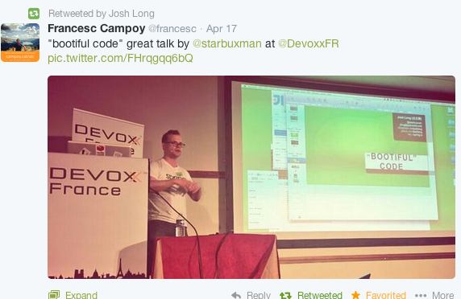
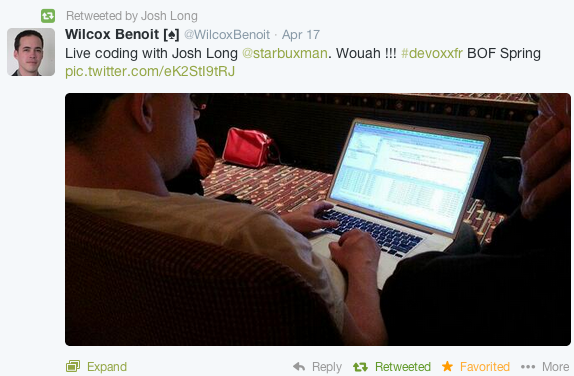
It's 2014: Happy New Year!
01 January 2014
Just wanted to wish everyone a happy and healthy new year. I hope you spent it with family and friends, and maybe a good piece of code on your mind.
The year's already off to a great start for me. For others, not so much. It seems that @Skype's Twitter account's been hacked. Was sort of strange to see this series of Tweets this morning:
Spring Boot M6's new Security features
12 November 2013
Spring Boot
is a super impressive way to get started.
Check out the various Getting Started guides for more on Spring Boot itself.
Spring Boot exposes great metadata about the application from HTTP when you depend on the spring-boot-starter-actuator.
Now, with M6, you can access that same information (and more!) from SSH! Here's a screencast I created demonstrating the feature. To enable it, you must also add the spring-boot-starter-shell-remote and
spring-boot-starter-security.
Here's the code for the Groovy class that you can run by using the spring command line tool incantation: spring run foo.groovy:
@Grab("spring-boot-starter-shell-remote")
@Grab("spring-boot-starter-security")
@Grab("spring-boot-starter-actuator")
@RestController
class RemoteShellFriendlyController {
@RequestMapping("/users/{id}")
Object someData( @PathVariable int id){
[ someId : id ]
}
}
In the screencast, I just use the default user and password. If you want use the same user and password from both SSH and HTTP, create a file application.properties and put it in the same directory as the Groovy script and put the following properties inside it:
security.user.name=youruser
security.user.password=yourpassword
shell.auth=spring
A Busy, Spring-filled November
05 November 2013
Welcome to another installment of This Week in Spring! This week I'm in Malmo, Sweden at the fantastic Øredev conference, talking to developers about Spring, Cloud Foundry, and more! I'll be at JMaghreb next week and then at Devoxx 2013 where I'll be talking to developers about Spring, Cloud Foundry, RabbitMQ and more along with my pals Dr. Dave Syer, Alvaro Videla, and Andy Piper. Looking forward to seeing you at any of these places! Ping me on Twitter (@starbuxman) if you want to talk Spring, the cloud, big data and anyting else!
One personal highlight of Oredev, for me, personally? I got to meet Randall Munroe, creator of XKCD! I even got to hug him. I'm such a fan!
Web Messaging with Spring 4.0's Support for WebSockets, STOMP and Sock.js
23 September 2013
Spring 4 will see some core types in Spring Integration be promoted to the core Spring framework. These types - in a new spring-messaging module - deal with common messaging idioms like a message (org.springframework.messaging.Message), a message channel (org.springframework.messaging.MessageChannel) and message headers (org.springframework.messaging.MessageHeaders)
This eventually implies a common foundation for messaging abstractions across the various Spring projects. I suspect in Spring Integration 4.0 they'll move to those core types as the primitives. It's not hard to imagine these types one day being in other messaging abstractions across Spring Data Redis, Spring AMQP, Spring Data GemFire, and Spring Integration. Right now, this gives us the ability to talk about first class support for web.next technologies like WebSockets in a future-proof API.
Spring core and web ninja Rossen Stoyanchev talks at length about some of this stuff in this blog post, Spring Framework 4.0 M2: Websocket Messaging Architectures. I think, however, you'd get a lot more by letting his kick-ass Stock Trading application do the talking. The easiest way by far is to simply run mvn jetty:run in the same directory as the pom.xml file is.
Data Integration, Stream Processing and Spring XD
22 September 2013
The Value of Streaming Processing and Spring XD
I really enjoyed GridGain CEO Nikita Ivanov's post on Four Myths of In-Memory Computing. He nicely explains some of the applications of in-memory computing. While all his points were good, I was really happy to see him touch on stream processing as a use case.
I also think that in-memory databases are important use case… for today. They solve a specific use case that everyone readily understands, i.e. faster system of records. It’s sort of a low hanging fruit of in-memory computing and it gets in-memory computing popularized. I do, however, think that the long term growth for in-memory computing will come from streaming use cases. Let me explain. Streaming processing is typically characterized by a massive rate at which events are coming into a system. Number of potential customers we’ve talked to indicated to us that they need to process a sustained stream of up to 100,000 events per second with out a single event loss. For a typical 30 seconds sliding processing window we are dealing with 3,000,000 events shifting by 100,000 every second which have to be individually indexed, continuously processed in real-time and eventually stored. This downpour will choke any disk I/O (spinning or flash). The only feasible way to sustain this load and corresponding business processing is to use in-memory computing technology. There’s simply no other storage technology today that support that level of requirements. So we strongly believe that in-memory computing will reign supreme in streaming processing.
I've also heard this field roughly called data integration.
It's a very vibrant field. I like the way Michael E. Driscoll (@medriscoll), CEO at Metamarkets, put it:
Spring Integration makes it dead simple to integrate with various messaging systems (JMS, AMQP, STOMP, MQTT, websockets, Twitter, Kafka, etc.) to build pipe-and-filter architectures. Its API elements mirror the patterns of the same name in Gregor Hohpe and Bobby Woolf's canonical tome on the subject, Enterprise Integration Patterns. In Spring Integration, Messages flow from one component - a splitter, or router, an aggregator, a transformer, etc. - along channels. Components are decoupled in that they communicate only through Messages. Messages in turn have headers - a map of metadata about the payload - and a payload.
Spring Batch has great support for managing the state and orchestration of long-running, data-centric jobs. It has the ability to work with a variety of systems where input and output is most efficiently done in batch. Spring Batch supports the notion of jobs, which are composed of a sequence of steps. Each step can optionally read data, optionally process, and optionally write data. So, for example: one step might read data (lots of data! Millions of records! Batch will scale..) from, for example, a SQL database or a large tab delimited file. Once the data's read, a natural next step is to process it and then - once finished - write the changes somewhere.
Data integration, or stream processing, or ingestion, etc. is all about managing the integration with, and accquisition of, data from varied systems and supporting its ingestion, analysis, processing and ultimate storage.
As Nikita points out, with data storage options so cheap these days, we can record as much data as we want. The real question is: how do we process it? How do we extract value out of it? Sure, it's easy to put hundreds of terabytes of Hadoop data onto an HDFS data lake, but how do you transform that data into business value? How do you integrate with other systems - online systems, warehouses, reporting? How do you accommodate the ingest of new data even in the face of a tidal data deluge?
To do this right, you need data processing support (extraction, transformation, and loading) and a event- and messaging-centric programming model to stitch together otherwise decoupled components in distributed, messaging-centric workflows. This is where Spring XD comes in. Spring XD is a new project in the stream processing space. It builds on the strengths of Spring Batch, Spring Integration, and Spring Data and Spring for Hadoop to meet this new generation of challenges.
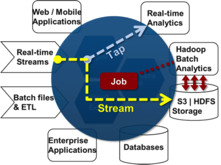
That picture's fairly marketitecture-ish, but it does a nice job of sort of visualizing the place of Spring XD in your architecture and in understanding it, you already understand the programming model of Spring XD: streams represent the flow of data from a source to a sink. A source is some point of entry, like a database, syslog, HDFS, etc. A sink represents the place where the data ultimately gets written to. You can put in processors along the stream to process, transform, and audit the data. A tap is a component that intercepts the data, but doesn't terminate the stream. In the integration world, the closest analog is a wire tap.
I'll let you read this introductory blog post for more.
Adding the ActionBar Sherlock Project to an Android Application
18 September 2013
Roy Clarkson (@royclarkson) and I gave a talk at SpringOne2GX 2013 in which we talked about building REST services with an eye towards consuming those services on mobile platforms like Android and iOS. This talk demonstrates the progressive evolution of an application using Spring MVC, Spring HATEOAS, Spring Data REST, Spring Security, Spring Security OAuth, and Spring Android. The code's benefited from a lot of help from Rob Winch.
I am pulling this blog together to introduce how we used the ActionBar Sherlock project in the sample application. There is nothing here related to Spring, but I thought the whole process was hard enough that some notes might help someone else.
What is an ActionBar?
From the documentation, the ActionBar:
- Provides a dedicated space for giving your app an identity and indicating the user's location in the app.
- Makes important actions prominent and accessible in a predictable way (such as Search).
- Supports consistent navigation and view switching within apps (with tabs or drop-down lists).
The ActionBar, pictured above in an image from the Google documentation, provides a sort of hub for interaction UIs like menus, toolbars, etc., in your application. It's also a nice place to install a widget like a search field that can provide functionality and trigger behavior independent of any single view.
The ActionBar API (android.app.ActionBar), however, is only available in Android API level 11 and greater. There is a sort of backwards compatible API called the Android Support Library (android.support.v7.app.ActionBar) that works with versions lower than API level 11.
What is the ActionBar Sherlock?
From the ActionBar Sherlock website:
ActionBarSherlock is an extension of the support library designed to facilitate the use of the action bar design pattern across all versions of Android with a single API.
So, it provides a clean API that wraps and adapts to existing implementations if available, and otherwise does a remarkable job simulating the effect in older versions of the platform, all with no change to your code.
All of this works in a consistent way on the ActionBar. On devices that support the hardware Menu button, this menu is available using that button. Otherwise it shows up as shown here, as part of the ActionBar.
Our Sample Application
In our sample application, the user has the ability to:
- sign in, or out of a session
- search for records
- update the user profile photo
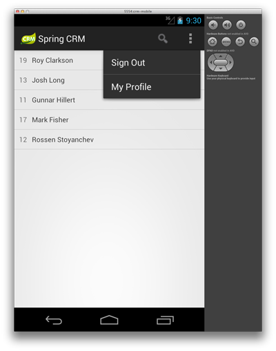
Using ActionBar Sherlock
The sample application uses Android Fragments to make the layout more dynamic inside of a single Activity, so in practice there is only one Activity that needs to extend the SherlockFragmentActivity class.
To use the ActionBar, an Activity should extend one of the ActionBar Sherlock-provided Activity instances. This way, you get a reference to the ActionBar via the getActionBar() method. Conveniently, you won't really need that reference, though.
Below, I demonstrate how to setup a search field in the application. The Activity#onCreateOptionsMenu(Menu) callback method gives you a pointer to the menu reference which you may use to add menu items.
@Override
public boolean onCreateOptionsMenu(Menu menu) {
this.menu = menu;
SearchManager searchManager = (SearchManager)
activity.getSystemService(Context.SEARCH_SERVICE);
SearchView searchView = new SearchView(activity);
searchView.setSearchableInfo(searchManager.getSearchableInfo(activity.getComponentName()));
searchView.setQueryHint(getString(R.string.search_hint));
searchView.setIconified(true);
searchView.setOnQueryTextListener(new SearchView.OnQueryTextListener() {
@Override
public boolean onQueryTextSubmit(String query) {
runQuery(query);
return true;
}
@Override
public boolean onQueryTextChange(String newText) {
return true;
}
});
// search menu item
MenuItem menuItem = menu.add( getString(R.string.search));
menuItem.setTitle(title);
menuItem.setActionView(searchView);
menuItem.setShowAsAction(MenuItem.SHOW_AS_ACTION_ALWAYS);
// ..
}
Adding the ActionBar project to your Maven Build
I had to go through some fits to make the Android build work perfectly as the ActionBar Sherlock project is delivered as an Android .apk bundle, not a .jar. Check out the build file for the nitty gritty.
Doing the Maven Dependency Dance for Spring Android Projects
17 September 2013
Roy Clarkson (@royclarkson) and I gave a talk at SpringOne2GX 2013 in which we talked about building REST services with an eye towards consuming those services on mobile platforms like Android and iOS. This talk demonstrates the progressive evolution of an application using Spring MVC, Spring HATEOAS, Spring Data REST, Spring Security, Spring Security OAuth, and Spring Android. The code's benefited from a lot of help from Rob Winch,
Layout of the Code
The code for the talk is on my GitHub account (github.com/joshlong/the-spring-rest-stack). Importantly, the code lives in the code directory. Beneath that there are two choices: web (where you'll find the rest, hateoas, hateoas-data, and oauth, social modules) and client (where you can load the Android module and the iOS module). The modules in the web folder in respective order, demonstrate the evolution of a simple REST service which incorporates hypermedia, Spring Data repositories and OAuth security. The social module demonstrates how to build an OAuth client that consumes the service.
Building and Editing the Code
The project is all, at the moment, Maven based, though moving to Gradle seems imminent as that is the Google-endorsed route for Android builds. I know the Android client to be importable and buildable using IntelliJ IDEA's Android support (which in theory should work in Android Studio, which is freely available).
The Dependency Dance and Android
We used up-to-date revisions of major libraries in our build file, linked for reference. Up-to-date and sometimes bleeding edge. The Android application uses the Spring Android project, which - basically - provides an API compatible implementation of the RestTemplate found in Spring core.
It does not however provide the entire framework, and if you bring in certain libraries from the core you'll get weird issues because some classes in the Spring Android modules are mostly the same in Spring Android and in the core, but they're not identical, due to the differing natures of the environments in which they run. The easiest way to ensure everything's OK is to explicitly exclude all Spring modules except the Spring Android dependencies then, selectively, re-introduce the types as you need them.
The types in the Spring Android RestTemplate module provides more than enough compatibility to let Spring Social's client machinery work unchanged on Android. This, of course, means that we can use the Spring Social-powered OAuth client in the social module in our Android application. Awesome!
For example, while I needed the Spring Social core types and implementations, I didn't need the core Spring libraries that it brought in. So, we get this rather dramatic stanza:
<dependency>
<groupId>org.springframework.social</groupId>
<artifactId>spring-social-core</artifactId>
<version>${spring-social.version}</version>
<exclusions>
<exclusion>
<groupId>org.springframework</groupId>
<artifactId>spring-jdbc</artifactId>
</exclusion>
<exclusion>
<groupId>com.h2database</groupId>
<artifactId>h2</artifactId>
</exclusion>
<exclusion>
<groupId>org.springframework</groupId>
<artifactId>spring-core</artifactId>
</exclusion>
<exclusion>
<groupId>org.springframework</groupId>
<artifactId>spring-web</artifactId>
</exclusion>
<exclusion>
<groupId>org.springframework</groupId>
<artifactId>spring-tx</artifactId>
</exclusion>
<exclusion>
<groupId>org.springframework</groupId>
<artifactId>spring-context</artifactId>
</exclusion>
<exclusion>
<groupId>org.springframework</groupId>
<artifactId>spring-beans</artifactId>
</exclusion>
<exclusion>
<groupId>org.springframework</groupId>
<artifactId>spring-expression</artifactId>
</exclusion>
<exclusion>
<groupId>org.springframework</groupId>
<artifactId>spring-aop</artifactId>
</exclusion>
<exclusion>
<groupId>aopalliance</groupId>
<artifactId>aopalliance</artifactId>
</exclusion>
<exclusion>
<groupId>com.joshlong.restfuliterations</groupId>
<artifactId>services</artifactId>
</exclusion>
</exclusions>
</dependency>
These dependencies can be hard to find. Use the mvn dependency:tree command to see where things are being imported transitively. Spring Security, another library whose top level types we wanted on the CLASSPATH, also required exclusion elements because it drags in Spring core.
Some Classes - like JAXB - You Just Can't Avoid
Any class that's not in Android's JDK-class whitelist is not available on Android and thus renders code that depends on it incompatible. Some classes, like those in the JAXB module, are hard to ignore as they're pervasive. I wanted to use the Spring HATEOAS Resource, Link, types. These types are used as representations of various entities in REST responses that are sometimes rendered as XML using JAXB, they could not be loaded in Android! So, I had to copy those types locally and mirror the package structure and remove the offending annotations. Hopefully I can clean this up going forward.
Introducing Spring Boot
07 August 2013
Also, have you seen the amazing news? We just released Spring Boot, which makes it dead simple to do application development with Spring.
A working REST application (its entirety!) can fit in a single tweet! Here's a groovy-language @Controller:
@Controller
class ThisWillActuallyRun {
@RequestMapping("/")
@ResponseBody
String home() {
return "Hello World!"
}
}
SpringOne2GX 2013 is Coming!
07 August 2013
Have you booked your tickets for SpringOne2GX? This year's show is a special one. In my work as the Spring Developer Advocate, I speak at many conferences all around the world. Ask any developer with a pulse, and they'll confirm that big data (and Hadoop), reactive web applications, REST, mobile application development, and cloud computing are sizzling hot topics today. Pivotal, and Spring, support today's developers, and SpringOne2GX's agenda represents in my estimation the perfect blend of content for today's developers. Check out the agenda. We've just recently added talks on big data, and REST service security with OAuth. This will be our first show under Pivotal, and it's the only place where you can talk to the developers working on the technologies you care about both at SpringSource and in the community. As you know, we've just announced our Cloud Foundry conference, Platform, and SpringOne2GX full pass ticket holders may register for that show - which is at the same venue as SpringOne2GX just two days earlier - for free! If I had to pay for just one show a year, this would be that show. Hurry the early bird rate expires this friday!
iCloud (Part #1)
01 July 2013
I really liked Apple's iCloud when I first started playing with it. The idea is many-pronged.
Apple's in the SaaS business: they've got email, calendaring, messaging, and a whole slew of other stuff. And, if you're an application developer, then your application can also participate in iCloud, storing OSX-application or iOS application-specific state in Apple's cloud.
Additionally, Apple's Operating Systems are cloud-aware. To their credit, it's fairly easy to plugin standard e-mail servers, CalDAV servers, etc., from other vendors. There are even more expedient setup processes for well-known SaaS providers like Google Accounts (Google Calendar, Gmail, Tasks, GTalk, etc.), Vimeo, Flickr, Weibo, Facebook, Twitter. You can access all of this in System Preferences -> Mail, Contacts & Calendars.
So, if you're on OSX, or an iPhone, or an iPad, in theory you could setup a calendar entry and see that same calendar entry across all devices. You could also see reminders, notes, email, etc. For me, I'm most interested in synchronzing with Google's applications. I use them at both Pivotal and for my personal e-mail.
So, I set up Mail.app. Mail is a fine application, but it just felt underpowered. It's way better than Thunderbird, but not particularly great. I don't feel more, or less, empowered in it than I do in GMail, and at least in the GMail web app once something's visually acknowledged, it's as good as done. (no sync'ing!) Anyway, I've tried a few other things. So far I'm digging Postbox.app for OSX, and while I love the official GMail app on iPad, I got access to Mailbox. Postbox is a fine app with a lot going for it, but for me it's mostly just that it feels snappy and it's offline friendly. I tried using GMail's offline client before, but that's a whole separate flow - a separate application - and as such isn't likely to be primed with your email when you're unexpectedly offline.
Mailbox, for those of you who follow the news, is a mail client for iOS that makes it dead simple to blaze through a lot of e-mail using gestures. It's lacking a lot of features. When I started using it, there was no easy to way to accept calendar invites. Forwarding email is still a nightmare. So is word wrapping in the compose e-mail panel. Yet, it's still so insanely popular that it was sold to Dropbox for $100 million before one person had even started using it. They even setup a waiting list stretching into the 800,000s. When I signed up, I was permitted to start using it within a month. Why? Because most people get a lot of e-mail and all the other e-mail solutions are designed with one-by-one inspection and processing workflows in mind. So, Postbox.app on the desktop, Gmail on the iPad and when at another person's computer, and Mailbox on my iPhone. All of these talking to my two Google Gmail e-mail accounts. Mailbox, by the way, doesn't even work with other mail services. Only GMail. Typing (and reading) that still shocks me. So, basically, what this application says (perhaps I'm reading between the lines?) is: Gmail is so unproductive that any grossly deficient alternative that makes processing email much more productive is worth a $100 million, and is so-demanded that it merits a waiting list!
Anyway, e-mail on Apple devices tangent aside, I really quite like the rest of the setup: Apple Reminders.app works nicely, as does Notes.app and Calendar.app. Just set up the appropriate services when setting up the Google accounts and these should all work out of the box. Except when they don't. One problem I encountered when working with Calendar and Reminders is that it would some times stop syncing. In this situation, I found it helpful to go to the System Preferences > Mail, Contacts & Calendars. Disable the Calendar & Reminders option, then mv ~/Library/Calendars ~/some_where_else. Then, doing your best Windows shutdown theme hum, reboot. Re-enable everything and it should start working again.
The other problem I've encountered is that it's easy to get duplicate notes or reminders. The easiest way to fix this is to pick on service capable of storing notes and reminders and just stick with it, disabling the rest. For me, this is my personal GMail account. So I've disabled the Reminders from iCloud, deleted all the notes and now when I add a note in one account it appaears across the other devices.
I'll chime back in as I discover more.
On Java Code Style
19 June 2013
Many languages have a sense of "idiomatic" code: code that embraces the norms of that language. These idioms can often reflect the opinions of the language themselves: functional vs. object oriented vs. imperative, etc.
Java, on the other hand, debuted more as a simpler version of existing norms, rather than an opinion motivating people in any one direction. I would argue that - aside from understanding basics like JavaBean properties and what equals, hashCode and toString do - there's very little to "idiomatic" Java code, except perhaps compliance with Java style.
There have been many texts published over the years espousing Java style. Compliance with Java style will make your code imminently more readable to 99% of the Java community. Sun / Oracle have published several documents over the years espousing good guidelines for code names and conventions. This directory has a good listing of several style guides. I'd definitely recommend taking a look at the first two guides, in particular.
If you want very well structured code, then I can recommend no finer a guide than the Spring framework code itself. Here's a great podcast on some of the lengths Spring framework lead Juergen Hoeller has gone to over the years to ensure clean, well structured code (code that, as I'm sure you're aware, has stood the test of time and remained utterly and completely backwards compatible for more than a decade!). The Spring framework is legendary for having a REALLY great codebase. It routinely scores high on code quality tests. It's actually won awards at various conferences. This is because Juergen Hoeller, lead of the Spring framework, is notorious for ensuring a VERY consistent look and feel to the Spring framework. ALL the Spring projects follow his basic style and approach. That's why they're so easy to get started with, because they all look and feel consistent. In fact, Juergen's discipline is so famous that the act of having your code torn to shreds and rebuilt in a stylistically more consistent way is known as Juergenization.
My colleague Oliver Gierke also has a great post on this anomaly, as well as a proper definition on his blog.
Simplified Web Configuration with Spring
19 June 2013
Most people know that Spring's long supported Servlet 3 Java-based initializer classes. This facility builds on Servlet 3's javax.servlet.ServletContainerInitializer facility. Basically, you declare a class that implements org.springframework.web.WebApplicationInitializer and this class will be scanned by Spring on application startup and bootstrapped. This class has one responsibility: assemble the web application's moving parts, like you would in a web.xml, but in code. Here's an example:
public class MyWebAppInitializer implements WebApplicationInitializer {
@Override
public void onStartup(ServletContext container) {
// Create the 'root' Spring application context
AnnotationConfigWebApplicationContext rootContext = new AnnotationConfigWebApplicationContext();
rootContext.register(ServiceConfiguration.class);
// Manage the lifecycle of the root application context
container.addListener(new ContextLoaderListener(rootContext));
// Create the dispatcher servlet's Spring application context
AnnotationConfigWebApplicationContext dispatcherServlet = new AnnotationConfigWebApplicationContext();
dispatcherServlet.register(WebMvcConfiguration.class);
// Register and map the dispatcher servlet
ServletRegistration.Dynamic dispatcher = container.addServlet("dispatcher", new DispatcherServlet(dispatcherServlet));
dispatcher.setLoadOnStartup(1);
dispatcher.addMapping("/");
}
}
In the above example, WebConfiguration and ServiceConfiguration are Java configuration classes. ServiceConfiguration presumably describes how the service tier - with its data sources and transaction managers and thread pools and ORM mapping - are assembled. The WebMvcConfiguration class describes how the web tier - supported by Spring MVC - is put together. We use the ServletContext to build up the web application. But, a lot of this is procedural. We will have basically the same arrangement each time, simply plugging in different values as required.
The point of this post isn't to describe how Java configuration works, rather to introduce the WebApplicationInitializer implementation, called org.springframework.web.servlet.support.AbstractAnnotationConfigDispatcherServletInitializer.
To use it, you simply extend it and satisfy fill in the blinks (in the form of template methods). Here's an example:
import com.jl.crm.services.ServiceConfiguration;
import org.springframework.context.annotation.*;
import org.springframework.data.repository.support.DomainClassConverter;
import org.springframework.data.rest.webmvc.config.RepositoryRestMvcConfiguration;
import org.springframework.format.support.FormattingConversionService;
import org.springframework.hateoas.config.EnableHypermediaSupport;
import org.springframework.orm.jpa.support.OpenEntityManagerInViewFilter;
import org.springframework.security.web.session.HttpSessionEventPublisher;
import org.springframework.web.filter.HiddenHttpMethodFilter;
import org.springframework.web.multipart.MultipartResolver;
import org.springframework.web.multipart.support.*;
import org.springframework.web.servlet.ViewResolver;
import org.springframework.web.servlet.config.annotation.*;
import org.springframework.web.servlet.support.AbstractAnnotationConfigDispatcherServletInitializer;
import org.springframework.web.servlet.view.InternalResourceViewResolver;
import javax.servlet.*;
import java.io.File;
public class CrmWebApplicationInitializer extends AbstractAnnotationConfigDispatcherServletInitializer {
private int maxUploadSizeInMb = 5 * 1024 * 1024; // 5 MB
@Override
protected Class<?>[] getRootConfigClasses() {
return new Class<?>[]{ServiceConfiguration.class};
}
@Override
protected Class<?>[] getServletConfigClasses() {
return new Class<?>[]{RepositoryRestMvcConfiguration.class, WebMvcConfiguration.class};
}
@Override
protected String[] getServletMappings() {
return new String[]{"/"};
}
@Override
protected Filter[] getServletFilters() {
return new Filter[]{new HiddenHttpMethodFilter(), new MultipartFilter(), new OpenEntityManagerInViewFilter()};
}
@Override
protected void registerDispatcherServlet(ServletContext servletContext) {
super.registerDispatcherServlet(servletContext);
servletContext.addListener(new HttpSessionEventPublisher());
}
@Override
protected void customizeRegistration(ServletRegistration.Dynamic registration) {
File uploadDirectory = ServiceConfiguration.CRM_STORAGE_UPLOADS_DIRECTORY;
MultipartConfigElement multipartConfigElement =
new MultipartConfigElement(uploadDirectory.getAbsolutePath(),
maxUploadSizeInMb, maxUploadSizeInMb * 2, maxUploadSizeInMb / 2);
registration.setMultipartConfig(multipartConfigElement);
}
}
In typical Spring fashion, we have callbacks where Spring can't possibly devine our intents (it can't possibly know what the names of our configuration classes are, for example) but otherwise it's all taken care of for us. I had to override the default ServletRegistration.Dynamic instance so I could tailor where file uploads are stored by the Servlet 3 container, which I do in the customizeRegistration method. The rest of the code is fairly straightforward: Spring registers the Filters provided by the getServletFilters method, it registers the configuration classes returned from the getRootConfigurationClasses as part of a global ContextLoaderListener, and it registers the configuration classes returned from the getServletFilters as part of the DispatcherServlet. This reflects the typical layering in most Spring applications: global beans and services that are potentially to be shared among multiple DispatcherServlet implementations are stored in the ContextLoaderListener, and DispatcherServlet-local beans are configured there. My web configuration class is shown below. I show this mainly for completeness, but you can see I've registered and configured .jsp support, as well as multipart file upload support (taking advantage of the Servlet 3-powered StandardServletMultipartResolver). The other thing worth mentioning is that we've turned on Spring HATEOAS with the @EnableHypermediaSupport.
@Configuration
@ComponentScan
@EnableWebMvc
@EnableHypermediaSupport
class WebMvcConfiguration extends WebMvcConfigurationSupport {
@Bean
public DomainClassConverter<?> domainClassConverter() {
return new DomainClassConverter<FormattingConversionService>(mvcConversionService());
}
@Override
public void configureDefaultServletHandling(DefaultServletHandlerConfigurer configurer) {
configurer.enable();
}
@Bean
public MultipartResolver multipartResolver() {
return new StandardServletMultipartResolver();
}
@Bean
public ViewResolver internalResourceViewResolver() {
InternalResourceViewResolver internalResourceViewResolver = new InternalResourceViewResolver();
internalResourceViewResolver.setPrefix("/WEB-INF/crm/");
internalResourceViewResolver.setSuffix(".jsp");
return internalResourceViewResolver;
}
}
Webinar Replay: Building REST APIs with Spring
19 June 2013
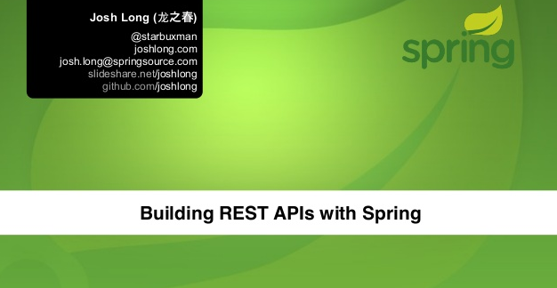 The video of my webinar on building RESTful APIs with Spring is available online. The webinar is basically a whirwind tour of Spring MVC, Spring HATEOAS (for Hypermedia), Spring Data REST (for conventions-oriented REST endpoints powered by Spring Data repositories), Spring Security and Spring Security OAuth to lock down the API, and Spring Social to consume the OAuth API in a clean, consistant manner from Java and Android.
The code is available at on my SlideShare account (vote it up if you like it!) and on my private GitHub account (star or fork it if you like it!).
If you have questions or comments, as always, don't hesitate to reach out to me on Twitter or by email (see this page for the email).
MOAR HYPERMEDIA PAYPAL
28 May 2013
Nice to see that Paypal are building more HATEOAS-friendly APIs. If you want to build a clean, HATEOAS-centric RESTful API, don't hesitate to check out Spring Data HATEOAS.
Dependency Injection with Dagger on Android
15 May 2013
Limitations of Android Dependency Injection Solutions
A question that I often in my work as the Spring Developer Advocate at SpringSource is: How do I do dependency injection in Android? Spring for Android doesn't have a dependency injection story as there are a lot of restrictions to what an inversion-of-control (IoC) container can hope to achieve on Android.
First, Android controls all the important objects in an Android application including the Activity instances. Normally, Spring instantiates an object ("bean") -satisfying any constructor injections required - and then attempts to satisfy any injection sites on fields (field injection) and through methods (setter injection). When it's done, Spring hands back the fully configured reference and makes it available for injection in other beans. As Android creates the Activity instance - it's not possible to simply tell Android to use a bean configured with a dependency injection container - the only thing a DI container can do is handle injections after the Activity has been created. This implies some fragile state management and explicit dependencies on the dependency injection container that is akin to the sort of hacks required to use Spring inside of EJB 2.x beans from years ago. At a minimum - it requires invasive code in the heart of your business logic components.
Second, reflection has historically been very slow on Android (and any constrained environment, including the original PCs that debuted Java in 1994!), and a lot of the tried-and-true solutions for byte-code manipulation don't work nearly so well on Android as they should. A lot of this has improved in recent years, but nonetheless solutions that favor compile-time weaving or other solutions that minimize reflection are preferable.
Dagger
With all of these limitations in mind, I still personally like Dagger, from Square. Dagger provides a JSR 330 compliant dependency injection container (and so - in theory - you could run JSR 330-compliant Spring code on Android). Using it is fairly simple, except that it's a bit more invasive than I'm used to in Spring. It relies on a Java agent that changes the code at compile time, inserting code that eliminates the need for costly, or sometimes impossible, reflection.
A Dagger Module
The simplest way to get started with it is to create a module class. Let's look at an example:
import ...
// Dagger and JSR 330 APIs
import dagger.*;
import javax.inject.*;
// RestTemplate
import org.springframework.http.converter.json.MappingJacksonHttpMessageConverter;
import org.springframework.web.client.RestTemplate;
@Module(
injects = {
WelcomeActivity.class
}
)
public class CrmModule {
// ...
}
You'll note a few things of interest already. This class is annotated with the @Module annotation. The @Module annotation is more or less like Spring's @Configuration annotation. It tells the container that this class contains the definition of beans, which themselves are annotated with @Provides, much like Spring's @Bean-annotated configuration annotation.
The injects attribute in Dagger's @Module annotation enumerates all the classes that may that may receive injections that *are not defined explicitly using an @Provider-annotated method in the module. I think. I'll be honest, I haven't completely figured this out. The nice thing is that if you get it wrong, you get a compile-time error! Handy!
As shown, we could start declaring fields or constructor arguments in our WelcomeActivity instance and annotating them with JSR 330's @Inject. When Dagger sees @Inject, it attempts to instantiate an instance of the bean using the default, no-args constructor and then inject it at the injection site.
However, not all beans can be provided this way. For example, if the type declared is an interface, then how's Dagger to know which implementation to provide? What if we only want one, and only one, instance (a singleton)? What if we want to inject values into a third party bean where it would be impractical to attempt to update the code with @Inject annotations? For all these scenarios, you can explicitly wire up the bean definitions using provider methods in your module, like this:
import ...
// Dagger and JSR 330 APIs
import dagger.*;
import javax.inject.*;
// RestTemplate
import org.springframework.http.converter.json.MappingJacksonHttpMessageConverter;
import org.springframework.web.client.RestTemplate;
@Module(
injects = {
WelcomeActivity.class
}
)
public class CrmModule {
private Crm application;
private Context context;
public CrmModule(Crm crm) {
this.application = crm;
this.context = this.application.getApplicationContext();
}
@Provides
@InjectAndroidApplicationContext
public Context provideApplicationContext() {
return this.context;
}
@Singleton
@Provides
public RestTemplate provideRestTemplate() {
RestTemplate restTemplate = new RestTemplate();
restTemplate.getMessageConverters().add(new MappingJacksonHttpMessageConverter());
return restTemplate;
}
@Singleton
@Provides // CustomerService is the interface, CustomerServiceClient is the implementation
public CustomerService provideCustomerService(
@InjectAndroidApplicationContext Context context,
RestTemplate restTemplate ){
String baseUri = context.getString(R.string.base_uri);
CustomerServiceClient customerServiceClient = new CustomerServiceClient( baseUri );
customerServiceClient.setRestTemplate(restTemplate);
return customerServiceClient;
}
}
The @Provides-annotated methods work as expected: you construct an object in a method and the value returned is made available for consumption through injection in other beans by type(s, as it also creates a binding between any interfaces implemented by the bean. We use this to our advantage when we create the CustomerService bean.
Note that - just as with Spring's @Configuration class - you can declare provider methods with arguments and the container will attempt to provide a value for the argument based on the type of the argument. In some cases, there may be many types that satisfy the requirement and so you can use a @Qualifier-annotated meta-annotation, like @InjectAndroidApplicationContext, to specify which instance you want. Here, we annotate the Crm argument in the provideCustomerService method with @InjectAndroidApplicationContext. By using the same annotation at the provider method as well as at the site of the injection, we establish a unique binding.
Using the Android Application instance as an Application-Wide Global Context.
Our module class expects an instance of the current application's Application class. I've specified the class ....Crm for this application class in my AndroidManifest.xml through the android:name attribute in the manifest element. As I mentioned earlier, key components in an Android application, like the Application subclass, are instantiated, managed and destroyed by Android itself. Dagger can't instantiate the Application subclass and provide the reference for us. Instead, we need to insert Dagger in a place that it can capture a reference to that Application instance. We do this in our onCreate method in our Application instance.
import ...
import android.app.Application;
import dagger.ObjectGraph;
import java.util.*;
public class Crm extends Application {
private ObjectGraph objectGraph;
@Override
public void onCreate() {
super.onCreate();
Object[] modules = getModules().toArray();
objectGraph = ObjectGraph.create(modules);
}
protected List<Object> getModules() {
return Arrays.<Object>asList(
new CrmModule(this)
);
}
public ObjectGraph getObjectGraph() {
return this.objectGraph;
}
}
Here, in the onCreate method we assemble the various module classes - including our CrmModule - that we want to instantiate and use it to create an objectGraph. Because Application subclasses provide an effective application-global singleton, it's convenient to stash a reference to the Dagger objectGraph in this class, as well. The objectGraph more or less corresponds to Spring's ApplicationContext. In our onCreate method we create the CrmModule passing in a reference to this which can then be used in a provide method in our module so that we can easily inject an Android application Application instance (which in turn provides a Context, which is a very useful sort of god object in Android applications) wherever we use Dagger for dependency injection.
Dependency Injection with Android Activity Instances and Other Android Components
Since we want to inject beans into our Activity subclasses, and Activity classes are managed by Android in the same way as Application instances, we need a similar hook into the Activity's lifecycle to let Dagger work its magic after the object's been created. For convenience, you'll probably have a common base-class where you can insert this behavior and then simply extend. Here is such a base-class.
import android.app.Activity;
import android.os.Bundle;
import android.util.Log;
import ...Crm;
import javax.inject.Inject;
public class CrmBaseActivity extends Activity {
@Override
protected void onCreate(Bundle savedInstanceState) {
super.onCreate(savedInstanceState);
Crm crm = (Crm) getApplication();
crm.getObjectGraph().inject(this);
}
}
The code simply obtains the current Application instance (the Application subclass, Crm), which we know has a pointer to the current, stashed, ObjectGraph instance, and then uses the ObjectGraph#inject(Object) method to have Dagger scan the object given as an argument and satisfy any dependencies.
You'll use a similar approach when dealing with other Android components like Fragment classes.
Summary
This blog has demonstrated how to use Dagger in the context of Android. Dagger also works outside of Android, of course, but if you're working outside of Android, you're better off just using Spring. For another look at how to use Dagger, check out the Dagger introduction on the Square site which focuses on Dagger, generically.
Speaking at the Oakland JUG tonight at 6:30
24 April 2013
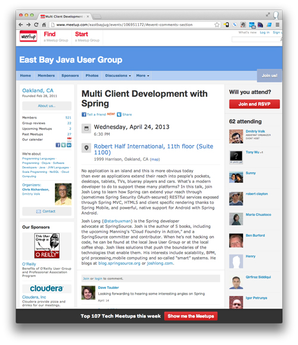
Hi guys, tonight I'll be speaking at the Oakland JUG on Multi Client Development with Spring. The talk will be geared towards developing modern web applications that are REST-centric using Spring, Spring MVC, Spring Android, and Spring Mobile. If we have time, we could go into even more detail on other technologies like Spring Security and Spring Security OAuth. I hope to see you guys there as it figures to be a fun time! On a related note, I will have my pal Andy Piper in tow. He's a Cloud Foundry ninja, and I'm sure he'll have answers for people with questions!
Java Configuration with Spring Batch
14 April 2013
In the first post in this series, I introduced Spring's Java configuration mechanism. There is the base configuration style, and - as we saw - there are annotations (like @EnableWebMvc) that turn on container-wide, and often conventions-oriented features. In the case of @EnableWebMvc, the annotation enables Spring MVC and turns on support for correctly exposing @Controller-annotated beans as HTTP endpoints. Java configuration APIs of the same style as @EnableWebMvc can often optionally implement interfaces that are used to contribute, change, or otherwise tailor the API. Most Spring projects today offer beta-or-better APIs that work in this same manner.
In this post, we'll look at Spring Batch's Java Configuration API available in the upcoming 2.2 release.
Spring Batch provides a solution for batch processing. It lets you describe jobs, which themselves have steps, which read input from some source system (a large RDBMS dataset, a large CSV file or XML document, etc.), optionally process the input, and then write the output to a destination system like an RDBMS, a file, or a message queue.
@Configuration
@EnableBatchProcessing
public class BatchInfrastructureConfiguration {
@Bean
public TaskScheduler taskScheduler() {
return new ConcurrentTaskScheduler();
}
@Bean
public PlatformTransactionManager transactionManager(DataSource ds) {
return new DataSourceTransactionManager(ds);
}
@Bean
public DataSource dataSource(Environment environment) {
String pw = environment.getProperty("dataSource.password"),
user = environment.getProperty("dataSource.user"),
url = environment.getProperty("dataSource.url");
Class classOfDs = environment.getPropertyAsClass("dataSource.driverClassName", Driver.class);
SimpleDriverDataSource dataSource = new SimpleDriverDataSource();
dataSource.setPassword(pw);
dataSource.setUrl(url);
dataSource.setUsername(user);
dataSource.setDriverClass(classOfDs);
return dataSource;
}
}
Once you've done this, you can start describing jobs using the Spring Batch configuration DSL. Here, we define a job named flickrImportJob which in turn has one step, step1, that in turn reads data using an ItemReader named photoAlbumItemReader and writes data using an ItemWriter named
photoAlbumItemWriter.
@Configuration
@Scope(proxyMode = ScopedProxyMode.TARGET_CLASS)
@Import(BatchInfrastructureConfiguration.class)
public class BatchImporterConfiguration {
@Bean(name = "flickrImportJob")
public Job flickrImportJob(
JobBuilderFactory jobs,
@Qualifier("step1") Step s1
) {
return jobs.get("flickrImportJob")
.flow(s1)
.end()
.build();
}
@Bean(name = "step1")
public Step step1(StepBuilderFactory stepBuilderFactory,
@Qualifier("photoAlbumItemReader") ItemReader ir,
@Qualifier("photoAlbumItemWriter") ItemWriter iw
) {
return stepBuilderFactory.get("step1")
.chunk(10)
.reader(ir)
.writer(iw)
.build();
}
// ... omitting definitions of ItemReader and ItemWriters
}
Java Configuration with Spring Social
14 April 2013
In the first post in this series, I introduced Spring's Java configuration mechanism. There is the base configuration style, and - as we saw - there are annotations (like @EnableWebMvc) that turn on container-wide, and often conventions-oriented features. In the case of @EnableWebMvc, the annotation enables Spring MVC and turns on support for correctly exposing @Controller-annotated beans as HTTP endpoints. Java configuration APIs of the same style as @EnableWebMvc can often optionally implement interfaces that are used to contribute, change, or otherwise tailor the API. Most Spring projects today offer beta-or-better APIs that work in this same manner.
In this post, we'll look at Spring Social.
Spring Social a OAuth 1.0, 1.0.a and 2.0-compliant REST-services client and builds on top of this strongly typed Java bindings. Here's an example setup.
@Configuration
@EnableJdbcConnectionRepository
@EnableFacebook(appId = "${blog.facebook.appId}", appSecret = "${blog.facebook.appSecret}")
public class SocialConfiguration {
@Bean
public ConnectController connectController(ConnectionFactoryLocator connectionFactoryLocator,
ConnectionRepository connectionRepository) {
return new ConnectController(connectionFactoryLocator, connectionRepository);
}
@Bean
public ProviderSignInController providerSignInController(
ConnectionFactoryLocator connectionFactoryLocator,
UsersConnectionRepository usersConnectionRepository) {
return new ProviderSignInController(connectionFactoryLocator, usersConnectionRepository, new SignInAdapter() {
@Override
public String signIn(String userId, Connection connection, NativeWebRequest request) {
return SignInUtils.signIn(userId);
}
});
}
@Bean
public DisconnectController disconnectController(Environment environment, UsersConnectionRepository usersConnectionRepository) {
return new DisconnectController(usersConnectionRepository, environment.getProperty("blog.facebook.appSecret"));
}
@Bean
public UserIdSource userIdSource() {
return new UserIdSource() {
@Override
public String getUserId() {
Authentication authentication = SecurityContextHolder.getContext().getAuthentication();
if (authentication == null) {
throw new IllegalStateException("Unable to get a ConnectionRepository: no user signed in");
}
return authentication.getName();
}
};
}
}
Once you've done this, you can simply inject instances of the Facebook API binding and make calls against it. Spring Social will attempt to make the call if there is an authenticated user, and if not will prompt the user to approve the API access and then proceed with the call.
@Inject private Facebook facebook;
@RequestMapping("/hello")
public void showProfileInformation( Model model){
model.addAttribute( "name", facebook.userOperations().getUserProfile().getName() );
}
Java Configuration
13 April 2013
In my last post I talked a little bit about how – at runtime – Spring beans are all just the same thing. I tried to emphasize that beans defined in any number of styles can be mixed and matched. While the XML format will always be supported, I personally like the increasingly numerous Java-configuration centric APIs and DSLs that the Spring projects are exposing.
Java configuration offers some of the strengths of both XML-based configuration and convention-oriented component scanning. It’s a single definition of the components in your system, and it’s type safe and defined by Java types, not a secondary grammar that doesn’t enjoy the same validation cycle as the compiled code.
@Configuration
@PropertySource("classpath:services.properties")
@ComponentScan
@EnableTransactionManagement
public class ServiceConfiguration {
@Bean
public DataSource dataSource(Environment e) {
org.apache.tomcat.jdbc.pool.DataSource ds = new org.apache.tomcat.jdbc.pool.DataSource();
ds.setDriverClassName(e.getProperty("dataSource.driverClassName"));
ds.setPassword(e.getProperty("dataSource.password"));
ds.setUsername(e.getProperty("dataSource.user"));
ds.setUrl(
String.format("jdbc:postgresql://%s:%s/%s",
e.getProperty("dataSource.host"),
Integer.parseInt(e.getProperty("dataSource.port")),
e.getProperty("dataSource.db")));
return ds;
}
@Bean
public PlatformTransactionManager platformTransactionManager(DataSource dataSource) {
return new DataSourceTransactionManager(dataSource);
}
}
This class does a lot of things that you might recognize from the XML format. It’s a configuration class because of the @Configuration annotation. You feed this class to an instance of AnnotationConfig(Web)ApplicationContext, which will scan the bean and look for methods annotated with @Bean. It invokes each in turn, giving each bean the same lifecycle services as it would an XML bean, and makes the returned value from the method available for injection. Other methods may depend on it by specifying an argument of the type, optionally qualifying it with the ID, for example, using @Qualifier. We turn on declarative transaction management (@Transactional) and define a bean that’ll be used to handle transaction management with the @EnableTransactionManagement annotation. Annotations of the form @Enable* typically correspond to *:annotation-driven elements in the XML, enabling features and component models declaratively. The @ComponentScan annotation tells Spring to register all components in the same package or lower as this configuration class, in this case beans annotated with @Component or @Service. The @PropertySource annotation tells Spring to load property values, which can then be injected with a reference to the system object called Environment.
Then, we can easily imagine moving our application into the web tier, so we’ll setup Spring MVC using Java configuration, like this.
@Configuration
@EnableWebMvc
@Import(ServiceConfiguration.class)
public class WebConfiguration extends WebMvcConfigurerAdapter {
@Bean
public ViewResolver viewResolver() {
InternalResourceViewResolver internalResourceViewResolver = new InternalResourceViewResolver();
internalResourceViewResolver.setSuffix(".jsp");
internalResourceViewResolver.setPrefix("/WEB-INF/views/");
return internalResourceViewResolver;
}
@Override
public void configureDefaultServletHandling(DefaultServletHandlerConfigurer configurer) {
configurer.enable();
}
}
This class is too annotated with @Configuration. It enables Spring MVC (bean validation, file upload support, REST, etc. etc.), and scans the context for beans of well known plugin objects like ViewResolvers. But here we see something new: the configuration class extends a base class, or implements an interface having the word “Configurer” in it. Typically the framework runs these callback implementing instances and uses it to tailor how it builds itself. Here, for example, we have callback methods we can implement to provide things like HttpMessageConverters, validation, view controllers, etc. We use @ComponentScan to scan and register beans (typically beans of type @Controller) in or below the package that the configuration class is in. And, because we want to inject references to the services we’ve just defined, we’ve used the @Import annotation to import the bean definitions from the ServiceConfiguration class.
This was by no means an exhaustive look at Java configuration, but hopefully you see that there is a lot of convenience in this approach. You can still substitute values from external property files, you can still override and extend the frameworks, and you can still achieve a single configuration artifact – a place where you can get a bird’s eye view of the system.
There are many Spring projects that provide idiomatic, Java configuration centric APIs and DSLs as Spring core does for building services using Spring and web applications using Spring MVC.
One Big Bag of Beans
13 April 2013
At runtime, Spring is just a bunch of beans. Spring provides basic services like dependency injection and lifecycle management, of course, but everything else is just a bean that can be injected, and participate in all the services that the container provides. One big bag of beans. To take advantage of this, all you have to do is tell Spring about your beans. You don’t need to tell it much – just basic things, like the bean's class, optionally an id by which to disambiguate it, an optional scope, and information about which dependencies a bean has. If you want to build the bean in a special way, besides just using a regular no-arg constructor, you need to tell Spring what to do: use the constructor, use a factory method, etc.
Before Java 5, the natural way to describe this information to Spring in the enterprise Java landscape was XML. So, that begat Spring’s XML flavor. But, as I say, this is just a format by which Spring ingests information about your classes. Metadata. There are lots of other ways. The Groovy Bean Builder. The Spring Scala approach. At one point early on there was a property-file based approach that you could use to manage beans (not from SpringSource, obviously, but still pretty novel!) Some of you may remember the work being done by the XBean project before Spring 2 had official support for namespaces.
Then Java 5 came out and with it annotations. We had ways for the class files to carry the metadata with them! And very shortly after that, we saw the first annotation-centric approaches to – by convention – applying services in Spring with the @Transactional annotation. Then the stereotype annotations emerged -@Controller, @Component, @Service, etc, that – along with component scanning and @Autowired – made it dead simple to register beans entirely based on convention. Concurrently, work began on Spring Java Config. This approach predates Guice or CDI, for example. Spring Java Configuration lived on the side, as a separate project where the ideas could be fleshed out. In 2009, for Spring 3.0, it was merged into the core framework.
Remember, at runtime all of these beans exist as beans in the same, giant bag, described using the same metadata. For this reason, Spring makes it very easy to assemble applications that employ different approaches as appropriate. You can let component scanning and stereotypes carry you 80% of the way, use Java configuration to assemble everything else and then use XML DSLs in domains where an expressive DSL is available. Beans defined by component scanning can participate in AOP defined by Java configuration, etc. Beans defined in Java configuration can have injected references to beans defined in XML. One type of stuff at runtime. One big bag of beans.
Breaking the 1000ms Time to Glass Mobile Barrier
11 April 2013
I just found this video on reddit.com, Breaking the 1000ms Time to Glass Mobile Barrier.
It's a video from a Googler - Ilya Grigorik - on delivering applications that render in under much less than 1000ms, not just time to first byte.
This is particularly interesting because he's got a lot of great data points on user tendencies given slower experiences, and on experiences on the dektop vs. mobile, etc.
I don't expect this is all completely new to anyone, but I certainly learned a few things! This is a nice talk if you like performance, and could definitely inform some of the discussion on resource pipelines, mobile, and javascript and web applications.
Fixing Facebook
31 March 2013
I've been trying all sorts of things to make Facebook interesting. Some of you will know that I was super sick (puking my brains out) in China in early January this year. This left me bed ridden and bored for 3 days. Out of utter desperation and having exhausted all the news sites and comics books and tech journals - I turned to Facebook, the anus of the internet. I like my friends/family, but if I'm honest I just don't care *that* much about everything that's going on. Who does, really, after all if they're your friends you'll hear about the important stuff eventually, anyway... So I've never been a really good Facebook user. A lot of the people I know on Facebook through a shared passion for technology.
This makes keeping up with them a worthy endeavour because I might learn about some interesting facet of the technology world.
I figured Facebook was as good an outlet as anything. So I've added them, but I wasn't doing a good job in keeping up to date until January. Since January, I've been taking a new approach, however, to expand the scope of the content on Facebook. I've started "friending" perfect strangers or casual acquaintances. Anybody who "friend request"s me I accept. Some requesters are spammers, of course, but as often as not it's someone who knows me via the books, blogs, conferences, twitter, etc. It's a small world, after all.
The results have been really surprising. My friends expand my world view but only in so much as they themselves like certain things, and my friends don't typically like things I vehemently dislike. That's sort of the nature of connecting with someone - familiarity and trust. So, nothing venturd, nothing gained, in following my existing friends. Perfect strangers, on the other hand, are wildcards. Who knows what they'll put up? I *really* like the content on my wall these days. I suppose this must be obvious, but try "friending" perfect strangers. You'll probably make some real friends in the process.
I'd still argue the level of discussion on Twitter's better simply because it forces conciseness and allows a conversation to iterate and evolve very quickly. (I couldn't write this post there, after all!) By befriending perfect strangers, though, I've at least expanded the scope of content on Facebook. Maybe the discussion'll be improved, too.
I also use Google+, and on Google+ my content is essentially wide open. I thus don't really need to friend anyone because it's wide-open and out there for people to see. The scope of content there is thus very good.
The final benefit is that - as I'm interested in the variety of content on the Facebook wall now, I've almost accidentally been able to better follow my family and friends' content, too! Small wonder, that.
C'ya on Facebook! (or Twitter, or Google+)
REPL vs. Unit Tests misses the Point
20 March 2013
An interesting thread emerged on Twitter today regarding ways to explore a problem: REPL or Unit tests? Michael Nygard (@mtnygard) said:
Exploratory unit tests are a crappy REPL with a really slow response time.
This - to mine own scripting and interpreted-language friendly ears - sounds about right. On the other hand, there's definitely an argument to be made for unit tests, which a lot of people did. To wit, @judsonlester replied:
Also: a REPL is a crappy unit test that requires a lot of extra typing and programmer recall.
This also makes sense! So, we've got two great perspectives offering competing views. It's important to not to get too lost in the methodology and step back from it. What we have here are two competing perspectives on the same agreed upon approach: better programs result from thinking about the problem space before trying to solve it. I would argue that - depending on what you're trying to do - there are a lot of valid approaches. If you're trying to build your own API that others will consume - then exploring possible arrangements in TextMate for me is far more useful than a unit test or a REPL. If you're trying to explore and kick the tires on an unknown API, then a REPL (if it's available!) gives you more immediate feedback. Once you've gained some facts about the behavior of the API, codify them with a unit test.
This whole discussion, of course, centers around whether or not your programming language of choice supports a REPL! I work principally on the JVM, particularly in Java and Scala. As Java has no REPL, it can be useful to drop into some other shell or language and use that. Groovy is great for this as it is a full featured (more-than fully featured) language that you can interact with in a REPL and that can interface with JVM libraries.
In the same vein, years ago, there was a project called BeanShell, which provided a REPL for Java. I confess I haven't heard much about it of late, probably due to the prevalence of Groovy. There was even a JSR (JSR 274) to advance the project to a standard with the expectation that it would one day be folded into the Java platform itself.
Anyway, I'm just thinking aloud. I thought it was an interesting thread. If you've got any thoughts, I'd love to hear about it on Twitter or Google+
Upgrading to JDK 7 on OSX
20 March 2013
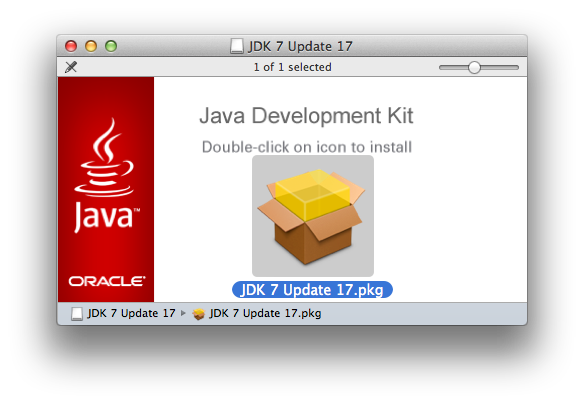 I just made the jump to JDK 7 on OSX. I know, I know, I'm very behind, but when it comes to JDK iterations, I'm always a little behind. I guess I'm just more cowardly as I age... :) Anyway, just made the jump. This is the first release of Java on OSX that Oracle - and not Apple - is supporitng. To make it happen, simply grab the OSX JDK from the Oracle Java SE Development Kit 7 Downloads page. Once it's downloaded, double click the downloaded bundle and just follow the prompt.. there might have been two prompts, but I'd be surprised if there was, it went so quickly!
When it's installed, you should just be able to confirm the upgrade by going to the shell and typing java -version. Interestingly, I didn't even need to reload my shell to see the new version. It all just worked! Nicely done, Oracle (for once)!
Update if, for example, you wanted to remove JDK 7, this article might help.
SpringSource Bag 'o Swag
19 March 2013
We're giving away bags 'o swag! To get some, just follow the instructions on the SpringSource Bag o' Swag website! Oh, did I mention that you could also win a free ticket to SpringOne2GX 2013? Don't delay, act now! We've given away a lot of cool stuff, already!
The Apache Hadoop Ecosystem, Visualized in Datameer
08 March 2013
I just found this amazing graphic visualizing the Hadoop ecosystem in Datameer on the Cloudera blog.
Multi Client Development with Spring Webinar on March 14, 2013
07 March 2013
I'm going to be doing a webinar for SpringSource on March 14th, 2013, called Multi Client Development with Spring (and Spring MVC). The webinar will feature an introduction to Spring MVC's basic component model, as well as the principles of REST. Once we've introduced Spring's REST support, we'll look at how to take your application to your users by building clients that your users want to use with Spring Mobile, Spring Android, and HTML5.
Be sure to register now and bring questions, ideas, etc. I look forward to seeing you at there, and we'll look at some of the amazing support Spring offers for building best-of-breed web-centric, RESTful applications.
Spring MVC Performance FTW
07 March 2013
We've all seen Matt Raible's awesome talk comparing web frameworks with each other. He routinely gives this talk, often updating it as new technologies emerge. More often than not, Spring MVC and Grails emerge as leaders. These sorts of talks of course never have a conclusive winner, but, as I say, more often than not, Grails and Spring MVC emerge near - or at - the top of the stack in terms of community, ease of use, lines of code, performance, features, etc.
For a very detailed dissection of performance, you might check out this talk comparing web framework performance. Matt's talk builds on the data amassed from that talk.
My Post on Spring at China Scale
06 March 2013
Hey guys I put up a post on the SpringSource blog, Spring at China Scale: Alibaba Group (Alipay, Taobao, and Tmall) which details some of the stuff I learned when I visited TaoBao, TMall, Alipay, etc., under the Alibaba group in December, in China. Check it out! |
Validating with Spring MVC, JSR 303, and BindingResult Arguments
05 March 2013
TL;DR: In your Spring MVC controller handler method, make sure that the BindingResult argument is immediately after the command or model argument.
Ran into something of an odd behavior in my Spring MVC application:
The following code works fine: requests come in and if there are request attributes whose names map to JavaBean-style properties on the SignInAttempt POJO, an instance of that POJO is created and populated with the values from the request. This POJO is then made available in the Spring MVC controller methods that depend on them, like this one below.
If there is a JSR 303 @Valid annotation on the POJO, as in this case, Spring MVC will validate that the POJO itself complies with the constraints. If it doesn't, it will bind the errors it finds in the BindngResult object, as message keys (like Email.signInAttempt.username) which can be used to display errors to the client.
public String signin(@ModelAttribute @Valid SignInAttempt signInAttempt, BindingResult result, Model model) What won't work so well is if you bind position the BindingResult anywhere besides immediately after the model / command / POJO itself as we have above. Thus, all of the following configurations will fail with an exception.
public String signin(@ModelAttribute @Valid SignInAttempt signInAttempt, Model m, BindingResult result )
public String signin(@ModelAttribute @Valid SignInAttempt signInAttempt, @RequestParam String username, BindingResult result )
// etc.
So, takeaway and rule of thumb: all model object arguments must be succeeded by a
BindingResult in your Spring MVC request handler method.
How to Deploy Cloud Foundry to Amazon Web Services using BOSH
28 February 2013
Today I was fortunate enough to learn from Dr. Nic as he introduced his open source utility, bosh-boostrap, which makes shortwork of the chores of setting up and deploying BOSH and Cloud Foundry on AWS. Largely, the steps are reproduced and available on his tutorial which he's put online online.
BOSH is the orchestration manager for the underlying IaaS component - vSphere, Amazon Web Services or Open Stack.
BOSH in turn knows about releases, the makeup of some distributed systems, like Cloud Foundry. Cloud Foundry in turn has lots of moving parts and components, like PostgreSQL, and NATS - the Cloud Foundry message queue.
Since BOSH deploys its own packages of components like PostgreSQL, there is a lot of compiling. This process takes a few hours with Dr. Nic's excellent utility. Most of that, happily, is just wait time as you wait for things to compile and upload or download. If you weren't using the bosh-bootstrap utility, however, you'd spend a lot more time setting things up and configuring things. BOSH is very flexible, and overwhelming. bosh-bootstrap is opinionated, concise, and surfaces only the things it couldn't possibly devine by itself.
Anyway, feel free to ping Dr. Nic or me on Twitter if you have questions. It was really cool to see it all startup and then be able to deploy applications to it.
A few words of caution and advance notice:
You'll need an Amazon Web Services account. The utility will leave you with 5 very expensive nodes on Amazon Web Services as well as a lot of configured storage. You should stop the instances and storage or just outright delete them when you're done if you don't intend to keep it running.
Also, you'll need to have a domain you can point to this. During this process you'll be given an IP, and you'll need to create an A-name record (for *) in your DNS configuration for your hostname and point it to that IP.
I got the application presented here on this Pre Shaved Yak blog post up and running at starbuxman.org, and a colleague got it working on his private instance as well.
Bubble Wrap
20 February 2013
This whole conversation just struck me as being really funny. So, I shall shamelessly re-post it here.
Coffee Drinks in China
19 January 2013
My amazing adventure in Shanghai, China is almost up. I return home to the US on January 31, and must wind down my time here. As part of that, I need to finish my amazing stash 'o iced coffee drinks that I've only found here in China. I don't know if you know this about me, but I love coffee. And yes, before you ask, that really is the bedspread they gave me at this hotel in Shanghai. @_@
On Damien Katz' "The Unreasonable Effectiveness of C"
19 January 2013
I loved Damien Katz' blog on The Unreasonable Effectivenes of C.
I also really liked commentor Mark Peskin's input on the news re-cap of Damien's blog over on InfoQ. I just wanted to offer my 2c from the perspective of someone who's done enough C to have 2c.
One thing that Damien noted is that it's rare to see really large, comprehensive framework-like APIs in C. As long you as build small, singly-focused APIs with light domains (a few typedefs / structs and functions as the 'contract') then it's very easy to 'export' the library and re-use it. This, I think, is a sweet spot for C. I would never write something in C for performance, but instead because it's simply easier to do certain things in C (kernel programming, embedded programming, anything working with the hardware, anything relying on APIs that aren't both established and widespread enough as to have warranted an cross-platform 'abstraction' in a higher level language like Java, Ruby, Python etc).
I would also try to not write a full blown system in C, simply because it doesn't 'scale' for large projects. The large projects that do use C end up re-inventing a lot of things (like 'objects' and namespacing). IMHO, there are very few domains that truly need to be in C the whole way through. Some very notable exceptions are systems level components like operating systems (Linux) or UIs like GNOME, of course. But for applications, it's easier to build out in a higher level language and 'integrate' with lower level APIs where the higher level language and platform has gaps. Java has many such 'gaps,' though some've been slowly addressed in the last decade as APIs have become commonplace across many different operating systems: event driven IO, file system notifications, file permissions and metadata, etc.
Mark makes a great point about how to integrate C libraries and modules. He suggests JNI sucks, and to use messaging. I am a big fan of messaging. Fundamentally, successful use of messaging and successful use of JNI both require the same thing: you need to simplify the exported API drastically.
When using JNI, I try to never 'leak' any complex C types into my java API and vice versa, always communicating through numeric types and char* -> jstrings. Even if the native code I'm exposing is C++, I'll still use the C-flavor of JNI (not C++) because it forces this canonicalization that's favorable to interop. If you keep the surface area of the C API very light, and try to avoid threading, it's easy to make it work as a native extension via Java JNI or CPYthon or MRI Ruby, etc.
Once you've gone through this process, then exposing the C API via messaging is easier because the message payloads between two systems can't, by definition, be much more complicated than the surface area of the C library. Of course, if you're using messaging, that means either writing messaging code in C, or exposing the C library to some higher level language and doing the messaging there. The nice part about messaging is that insulates your higher-level language code from your C code which - let's be honest - might be flakier than your Java code. I still won't link code written against the imagemagick C APIs directly to my application! There is some black magic in that library...! If the C code dies, the messaging system absorbs the requests until another node running the C code can pick up the slack. On the other hand, if you really are using C for performance, then messaging introduces at least a network hop, not to mention another component in the system, and you might lose any gains you made by writing it in C. In this case, it is possible to use write stable, well-behaved JNI or native extensions, but this again requires keeping the surface area small and understanding the pre-conditions nad post-conditions. No threads. Don't pass around pointers to complex objects between C and Java. Make sure you understand who's supposed to clean up memory, and when.
Programmer Pet Peeves #242942: Sheraton
14 January 2013
Sheraton's website's got some issues that drive me, a programmer, nuts.
I tried to look at my past stays so that I could, in theory, get a reference number and then ask for a folio for my expense reports. I logged into the website and was presented with a java.util.NoSuchElementException, which - for you non-programmers geeks - says that they tried to walk through data and there was none there and they didn't handle that possibility. (Anyone who knows me knows that I've stayed at more than a few Sheratons...)
Then, I figured I'd work around this by talking to someone on the chat, and was greeted with the message 'Invalid ichannel: null,' which also indicates that they attempted to do something behind the scenes on the assumption that something was there that wasn't.
Sometimes I wonder if people test things before they release it :/
At least the meatware operator I spoke to was lovely / helpful...
Super Productive Sick Days
03 January 2013
I have been super sick these last two days. I ate some bad alcohol or food in my new year's eve celebrations and paid for it by spending the last two days in the bathroom. It has been ugly!
On the upside, I've lost a lot of weight and I've been super productive! Submitted for 3 conferences, replied to a backlog of holiday emails, caught up on some reading, setup VPN for my Android phone and iPad thanks to boxpn.com, caught up with amazing people I haven't talked to in a while (owing in part to usual neglect of, and - as I've been sick - my sudden reinterest in) Facebook, started writing some pages on this chapter I've been working on for my next book (Manning's Cloud Foundry in Action), and more! In short: I recommend people take more sick days if they want to catch up on work.
Happy New Year, and Here's to 2013
31 December 2012
I just wanted to state the obvious: I wish you all a wonderful and happy new year, and hope your 2012 has been as awesome as can be. Mine sure was! Here's to 2013! This year I'll ring in the new year in Shanghai, which should be interesting!
They Think of Everything
31 December 2012
Just bought some ramen at the store. I love that it comes with a serving bowl. I know you're thinking, "but, who wouldn't... have.. a bowl?" And the answer is: I didn't have a bowl! But now I do. Problem solved. The Chinese think of everything!
Chinese Weather
26 December 2012
In related news, I woke up to rain today. it's freaking cold in China. Northern parts of China - like Harbin - already cold enough that it's famous for its ice festivals in which amazing and beautiful ice structures are constructed in a true winter-wonderland fashion - have seen daytime HIGHS of -22C. Nanjing, which is an hour's train ride from Shanghai, where I am, hit -6 C for daytime lows. And, when the SpringSource team and I were in Beijing for SpringOne Beijing 2012 we routinely hit temperatures of -8 or -9C. Brrr! I hope you're warmer, wherever you are.
I'm originally from Los Angeles, and sometimes gets, and while I'm now in rainy San Francisco, I'm not used to this kind of cold. I much prefer the cold to the hot mugginess of a humid summer, however, so I suppose this will just have to do.
As you can imagine, slingshotting from Beijing, China (at -8C) to Hyderabad and Bangalore in India, where it's a warm 30 C or so, has not been easy on the immune system. I've got a cold. Oh well..
Christmas in Shanghai
26 December 2012
Merry Christmas! Feliz Navidad! Joyeux Noel! Feliz natal!
It's already Boxing day, or - as we call it in Shanghai, "Wednesday" (I translated that from the original Mandarin for you).
Christmas was such a trip here in China. It's celebrated like people in the west celebrate St. Patty's day: a chance to shop at discount sales, drink and hang out with friends, and potentially take the day off. And, shop they do. China's economy's growing, while the economies in the US and Europe have slowed. Last year, in 2011, the average affluent Chinese spent the holiday abroad and - in England, for example, spent 1300 pounds for the holiday (avergage). (By comparison, the average wealthy Englishman spent 1200 or so pounds). What an amazing phenomenon. One thing that was a big seller, the 'Christmas Apple', which - as I understand it - sounds in the Chinese language like the words for 'Christmas Eve.' What salesmanship. That said, I've never had a Christmas apple, and I think I should like to try one. I wonder if they'll have after-Christmas sales?
PeppedUp.org
21 December 2012
I hope you guys will permit me some time on the ol' soapbox. My life is amazing, and I'm very fortunate. I haven't really done enough charity this year, though, if I'm honest. It's not like I can't afford a few charitable donations, and my parents always taught me to give to those who need it or aren't so fortunate. I think we all agree that charity is OK. The tension comes when we try to qualify for whom charity is appropriate. But.. kids with cancer? I'm pretty sure we can all agree that's a pretty rough rap. So, when I discovered a former colleague - Ron Haberle (himself a cancer survivor) - had started a charity to support and help kids with cancer, I donated and - since no amount I could possibly donate would be enough - I ask you to consider donating, to this or something else. 'Tis the season, after all, and even if you're not feeling particularly charitable, I'm pretty sure donations are tax deductible, but you have to get them done before the end of the year!
If you can contribute, then thanks, and if you can't, then thanks at least for reading! ;-)
A Shanghai French Connection
17 December 2012
I'm back in Shanghai after the amazing SpringOne China and SpringOne India events. Had an odd encounter today. While there are no doubt many visitors to Shanghai, and China in general, you'd be forgiven for wondering where they are. They tend to be drowned out in the throngs of locals. Which is awesome. I love the locals! No complaints. Still, it was not very surprising to learn yesterday - on the news of a proposed new law in China that would let immigrants (who spend 90 months in 10 years in China on a valid business or student visa) apply for citizenship, granting much of the same rights in China as the American green card does in the US - that there have hitherto been only 600,000 legal permanent residents (all of substantial independent financial means) in China thus far. By comparison, the US grants 250,000 green cards every year.
So, when today on the metro going to the VMWare Shanghai offices I happened upon a lone other caucasoid like me who insisted on standing right next to me, I couldn't help but ask, "I wonder if other people think we're together?" He laughed. We chatted for a moment and then I realized he was French! I speak French. So we spoke briefly in French until the train'd arrived at his stop a few a minutes later. Then I started thinking about it. Since I arrived in China on December 2, all the other Caucasoids I've met have been French. In the hotel when I first arrived. At a few different cafes, and now there, on the metro -- all French!
What does this mean? Absolutely nothing. I have no idea. Just relaying a curious observation. Except for the people from SpringOne China, I haven't seen any other Americans. Granted, I'm not looking for Americans, or French, or anything. Just... bumping into them. What a wonderful, small world.
Booking.com rewrites the Java-based YUI compressor using Perl
16 December 2012
Booking.com has announced that they've re-written the Java-based YUI Compressor using Perl. I'm used to seeing people talking about rewriting systems written in Java into other languages like Python, C, C#, Haskell, Erlang, Scala, Groovy, etc. If I'm honest I just haven't seen many new Perl programs except buried in people's system administration logic and, of course, Puppet.
The results are impressive though, so this is very cool. And, I expect that this will make the tool more approachable to developers as Perl's still far easier and more pervasive than Java virtual machines on machines of developers who are not Java developers. So... cool!
Rest in Peace Ravi Shankar
12 December 2012
|
I'm in India (Bangalore and Hyderabad) and the news today is of the passing of Ravi Shankar, the sitar virtuoso who's music influenced the Beatles in the 60s and changed the genre in some ways. The first introduction to him that I had was through the music of his daughters on Concert for George (Harrison), a tribute concert to honor the late Beatle. From there, I explored his other music and in particular his influence on the Beatles and really have a lot of respect for the man. He was an amazingly talented musician, and all walks of music owe him a debt of gratitude. RIP Ravi Shankar. |
SpringOne Beijing and India Trip Report
12 December 2012
I just finished SpringOne China over the weekend. The show was absolutely amazing and the attendees were, as usual, the highlight of the show. It was such an honor to meet so many wonderful people. We finished SpringOne China over the weekend and are today at the first of two events for SpringOne India in Bangalore and SpringOne in Hyderabad. The shows have been really amazing! In particular, I've enjoyed the food, the sites and the amazing community that have turned up in droves!
Tomorrow, I'll join my colleagues at the SpringOne India Hyderabad event, the second of the two shows in India.
| 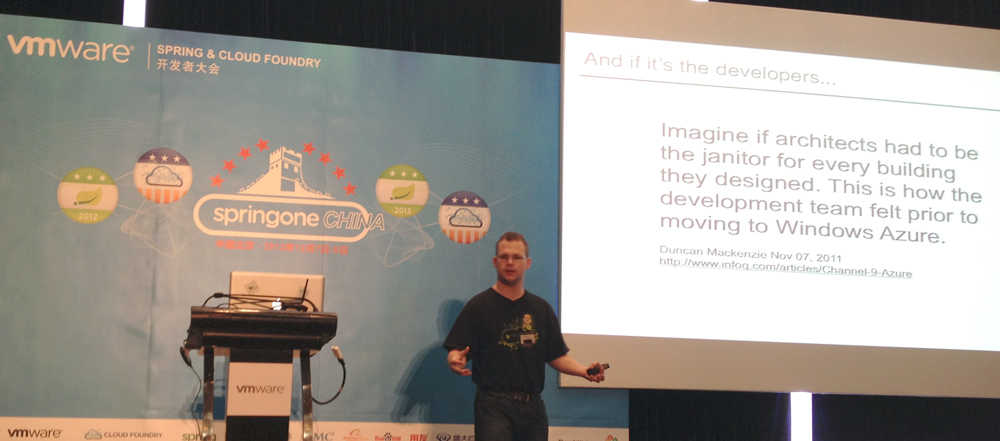 An attendee took a shot of me as I was giving a talk on Spring on Cloud Foundry |
Dr. Mark Pollack, myself, Gary Russell and Chris Richardson at a restaurant in Beijing |
| 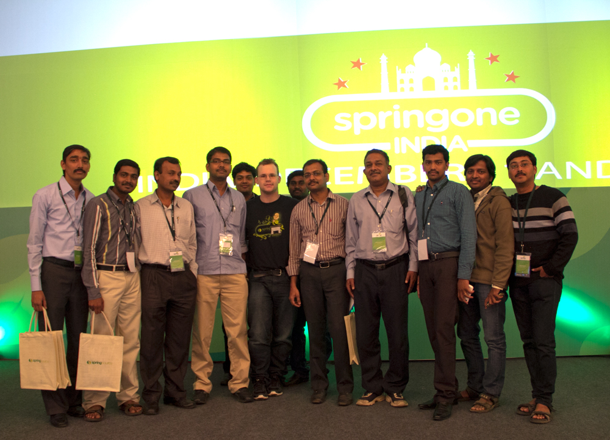 I gave a talk in Bangalore and people deluged the stage with questions and greetings. I asked the last wave of people to take a photo with me. |
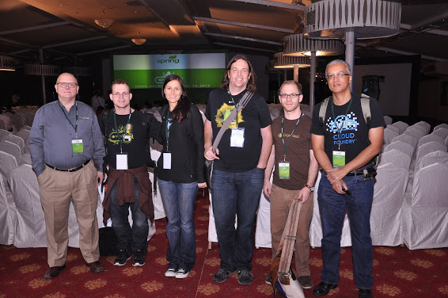 Left to Right: Gary Russel, Josh Long, Jennifer Hickey, Jeremy Grelle, Oliver Gierke, Chris Richardson -- the whole SpringOne India lineup |
Shanghai, December 4th
05 December 2012
This post was written December 4th, but am only now getting a chance to post it as I've got a few minutes stuck on the tarmac in Shanghai waiting to take off.
I arrived in Shanghai on Sunday, December 2 at around 18:30, and was received by a hotel chauffeur who took me to a hotel where I could sleep. The hotel, kindly booked by the rock stars at the VMWare Shanghai team who realized I wouldn't enjoy looking for a place to live on arrival, sleepy and during particularly cold weather, was a great way to go. This morning, I woke up early, checked my email, went to the office and - with the help of people at the office - found a service apartment. A service apartment, of course, is sort of like a long-term hotel, but short term relative to the typical duration of a real apartment or home.
The service apartment one of my VMware Shanghai colleagues recommended is ridiculously cheap (I think for a month I'll end up paying something like 4000 CNY, which is roughly 650 USD, which - I would argue - is well within the reach for a lot of people) and quite effective. Kind of like an idealized hostel in most European cities: private rooms with a bathroom, adequate internet, TV, air conditioning and heat, an electric kettle and more. The only thing I'm not sure of just yet is whether they have a place to do laundry. I'm sure they must. And, they don't particularly care if your stays are relatively ephemeral. I'm setting off on the 5th for SpringOne China and SpringOne India and will be gone for 8 days, so, I simply checked out. I won't need to pay for that portion. The bathroom's nothing fancy, but the shower is quite nice and has refreshingly warm water and - once you find that the toilet paper is on the same platter as the complimentary tea and mugs in the bedroom - the toilet works well enough.
I'm quite enjoying the subway or metro here. Very convenient! 20 minutes to get to the office and I'm only a single metro stop away from Xin Tian Di which, as I understand it, means "new world." A friendly place for (temporary) expats where lots of Chinese dwell as well. One thing that's taken some time to get used to is the quiet on the metro. Everyone's heads down - headsets on and all - on their mobile phones or tablets. iOS and Android both seem pervasive. Apparently singers here make more from ringtones than they might from actual record sales. Awesome.
Curiously, Shanghai is completely dolled up for Christmas. This is most evident in the marketplaces. For a country that has a statistically insignificant population of Christians, this place sure does Christmas decorations well!
Anyway, will continue tracking my progress as time permits on this blog. For now onward to SpringOne!
Living in China for 2 Months
01 December 2012
Today, I'll begin another adventure, going to work in Shanghai, China, for two months where I'll be able to work with the Cloud Foundry Shanghai teams and more fully take in life in the next empire. I'm not sure if this blog will be available there, but if it is, I'll try to post updates as often as I can. If you can read this in China, feel free to reach me at josh (at) joshlong (dot) com. I'd love an opportunity to potentially talk to your organization about how you're using Spring and / or Cloud Foundry, or - if you're running an event or meet-up or conference and would like a speaker, I'd also be interested in hearing from you.
And of course, I look forward to meeting any and all of you in the near future at both SpringOne India and SpringOne China events, both of which I'll be at during my time in China!
Wish me luck!
The Kettle in Manhattan Beach, Los Angeles, at 4am
27 November 2012
This is a picture of The Kettle in Los Angeles' Manhattan Beach area at 4AM. So surreal. The Kettle, by the way, is an amazing restaurant that's open 24/7 in Los Angeles and situated a block away from the Pacific Ocean. Beautiful and fun during the day. Downright amazing at 3am.
Nice Application to Enumerate the Cloud Foundry Environment Properties
25 November 2012
I found a nice application on Cloud Foundry that enumerates the environment variables in Cloud Foundry with the values for this particular application.
Spring Data Mongo transaction synchronization does not find a bound DB
25 November 2012
There's an issue with Spring Data Mongo when used in the context of an application with existing PlatformTransactionManager-based transaction management setup, where Spring's TransactionSynchronizationManager tries to find the bound Spring Data Mongo DB instance, but fails and throws an exception.
The issue is resolved, but you wouldn't know that if you checked the Spring Data MongoDB web site because there is no mention of the later releases. This issue is fixed in the latest releases, however, versions, 1.1.1.RELEASE.
If you're using Maven, you can specify the latest revision with the following Maven coordinates:
<dependency>
<groupId>org.springframework.data</groupId>
<artifactId>spring-data-mongodb</artifactId>
<version>1.1.1.RELEASE</version>
</dependency>
The error looks like this:
java.lang.IllegalStateException: No value for key [Mongo: localhost:27017] bound to thread [1128017935@qtp-1027055145-3] at org.springframework.transaction.support.TransactionSynchronizationManager.unbindResource(TransactionSynchronizationManager.java:209) ~[spring-tx-3.1.1.RELEASE.jar:3.1.1.RELEASE] at org.springframework.transaction.support.ResourceHolderSynchronization.beforeCompletion(ResourceHolderSynchronization.java:69) ~[spring-tx-3.1.1.RELEASE.jar:3.1.1.RELEASE] at org.springframework.transaction.support.TransactionSynchronizationUtils.triggerBeforeCompletion(TransactionSynchronizationUtils.java:106) ~[spring-tx-3.1.1.RELEASE.jar:3.1.1.RELEASE] at org.springframework.transaction.support.AbstractPlatformTransactionManager.triggerBeforeCompletion(AbstractPlatformTransactionManager.java:937) [spring-tx-3.1.1.RELEASE.jar:3.1.1.RELEASE] at org.springframework.transaction.support.AbstractPlatformTransactionManager.processCommit(AbstractPlatformTransactionManager.java:738) [spring-tx-3.1.1.RELEASE.jar:3.1.1.RELEASE] at org.springframework.transaction.support.AbstractPlatformTransactionManager.commit(AbstractPlatformTransactionManager.java:723) [spring-tx-3.1.1.RELEASE.jar:3.1.1.RELEASE] at org.springframework.transaction.interceptor.TransactionAspectSupport.commitTransactionAfterReturning(TransactionAspectSupport.java:393) [spring-tx-3.1.1.RELEASE.jar:3.1.1.RELEASE]
Hat tip to the one and only Oliver Gierke for helping me with this!
Devoxx 2012 Trip Report
16 November 2012
I had a really good - (if exhausting!) - time at Devoxx this year. The show was bigger and better than ever, and - of course - I'm happy to find that Devoxx will be again returning to Paris, but also - this time - to London! I helped man the SpringSource / Cloud Foundry booths, and then gave a 15 minute talk on Cloud Foundry, and another talk on the Spring framework. I also enjoyed running the Spring BOF, though I wish it had been held a little earlier in the evening! That said, I'm glad it wasn't! The trip from Sofia, Bulgaria - where I was a speaker in the Cloud Foundry Open Tour event in Sofia, Bulgaria - was harrowing, to say the least! I left Sofia, flew to Frankfurt, then took my connection to Brussels, which meant I still had a 40 minute train ride into Antwerp. From there, I ran to the hotel, found a cab then raced to get to Devoxx in time to run the Spring BOF. Just made it! And that's how Devoxx started for me! It only got crazier as the week rolled on. This show is also one of the best on earth to connect with friends and users of the Spring framework from all around the world. We were so busy on the SpringSource and Cloud Foundry teams that I - at least - had only a few wonderful Belgian beers this time! I'll try to fix that before I go! I can't wait until next year. Although, I'm not sure if I'll be recovered by then... |
Getting Started with Cloud Foundry for Java and Spring Developers
16 November 2012
I received the following (very awesome) e-mail the other day:
Josh-
I have been watching a couple of your videos on YouTube, and I have some questions that are decidedly remedial, which I recognize, but i am also having trouble getting answer to them.
I am not a developer - I have managed a bunch of Wordpress sites, and have built 8-10 sites with Dreamweaver, leveraging CSS and basic functionality. I understand the basics of HTML web development, and have even built a .NET application using Visual Studio. But I am not a developer - you could call me a hobbyist and have some nominal experience around building websites using HTML and Dreamweaver.
However, I am running into more and more situations where knowing how to write real web applications will be beneficial... I have installed the latest rev of STS, signed up for CloudFoundry, even configured the micro cloud on my macbook.... but now I don't know how to get started! what do I do? how do I build a database (vPostgres, MySQL, I don't care), and connect to it with a web application? I can't seem to find the tutorials that are remedial enough for me.
Any suggestions?
Thanks, Josh -...
A few points: he is referring to the SpringSourceDev YouTube channel, where I have a few videos (and where you can find a slew of content from other great presenters on all things SpringSource). Additionally, I omitted his name from this email.
So, what we have here is an essentially tech-minded, but not particularly advanced, developer looking to take the plunge into the wide world of web development, and he wants to get started with Cloud Foundry. This is an awesome (and increasingly common) occurence. Cloud Foundry gives an outlet to all the people and departments that want to get things on the web and in production quickly. The cloud is an important next step, not only for the hard core developers out there, but also for the infinite many that need technology in place, quickly, and can't or won't wait for IT to deliver it. This happens a lot with what Patrick Chanezon and others refer to as situational applications.
I've updated and included my initial response to him below in the hopes that it will help others.
You say remedial like it's a bad thing! We all get started at some point.
Cloud Foundry is a good way to get started (and continue to mastery!) with web development.
An important tool is the
vmccommand line tool.vmcis the simplest way to get started with this stuff. Setup vmc and interact with the command line and understand the tool's capabilities. Here are some docs on getting started with vmc and the vmc tunnel. If you have questions don't hesitate to reach out to me. Once you've gotvmcand the tunnel installed, there's a lot you can do!If you're doing Java development, specifically, then the SpringSource Tool Suite (STS) is a huge start. STS is a free, Eclipse-based distribution. It is a super set of the Java EE distribution of Eclipse, and includes a slew of handy plugins pre-installed, including Maven support. Maven is a tool that lets you easily compile your code. While you can install STS's plugins on top of an existing Eclipse distribution, you won't get the Maven support, and that's required for this tutorial.
Cloud Foundry lets you run and manage web applications. You don't need to worry about the hard disk, servers, databases, RAM, etc. However, the compromise is that you can only run well known application stacks. Cloud Foundry.com supports Java (including Spring applications, and anything else you might want to run on a command line or inside of Tomcat 6), Ruby, Node.js, and Scala. Other ecosystem partners have taken the code and run their own version of Cloud Foundry, and often include extra features. For example, AppFog has support for Python and PHP, above and beyond what Cloud Foundry offers. Tier3 and Uhuru both support .NET on their derivatives. So, what type of language will you use? I've written the following assuming you're going to use Spring and Java, a very common combination.
To make sure that everything is easy to find in STS for this tutorial, use the
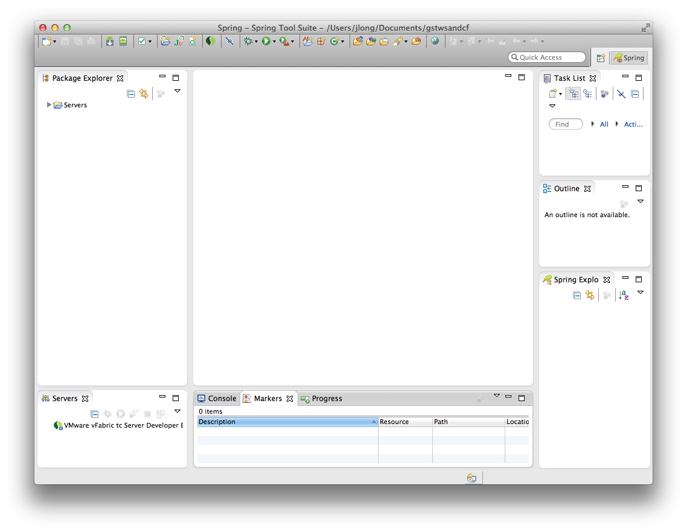Window->Reset Perspectivecommand.If you're using STS (which is an Eclipse -based distribution) you'll need to install the Cloud Foundry WTP (web tools project) connector. Go to the
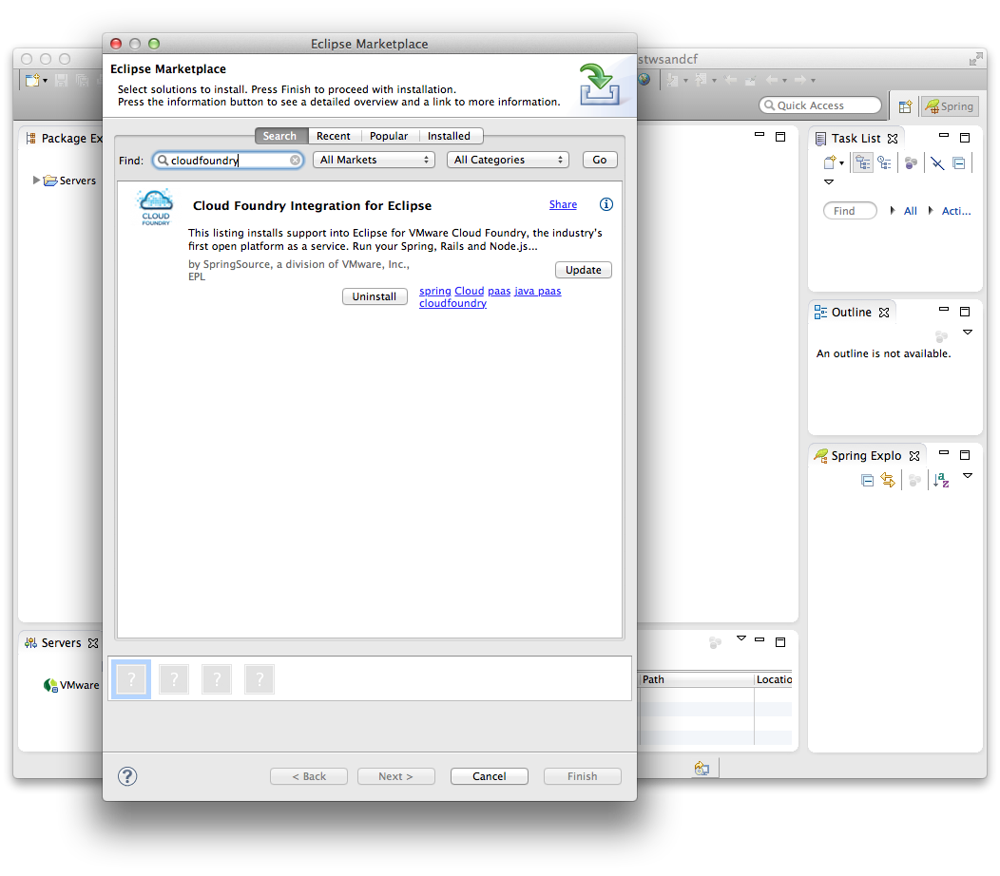Help->Eclipse Marketplace. Search for "CloudFoundry" and you'll find the "Cloud Foundry integration for Eclipse." Install it if you haven't already.Once installation finishes, right click on the white space in your Servers panel, and choose
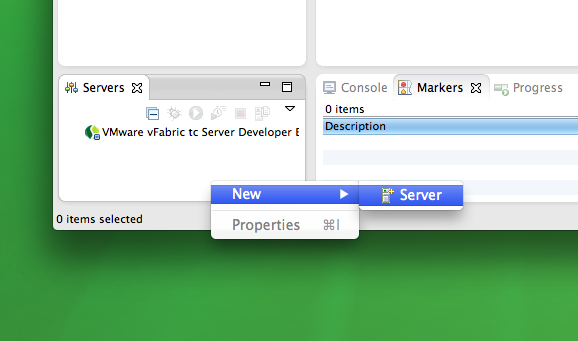New Server.Then choose
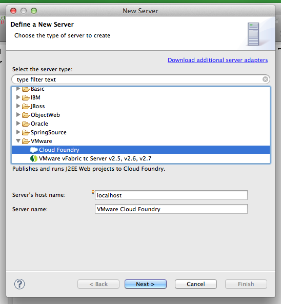VMWare->Cloud Foundry.Click
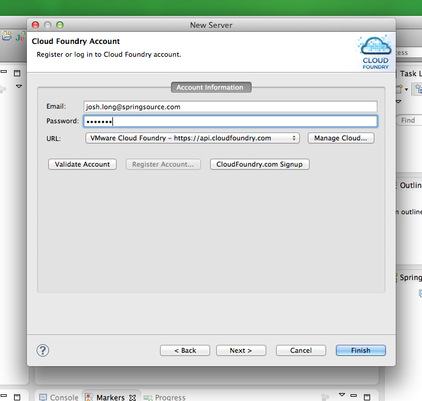Nexton the first screen (there's no need to change anything there.) and then enter your credentials to log in to the cloud.You can verify your credentials by clicking
Validate Account. Then, clickFinish.Once installed, you can double click on the Cloud Foundry server to see what's going on in your account, just as you would from the
vmccommand line tool. The tab that presents itself can take up some serious screen real estate, so you might close theSpring Explorer,Outline, andTask Listpanels, as I have. The Cloud Foundry tab has two sub tabs at the bottom: one calledOverview, and another calledApplications. You can click on an application to see the resources provisioned for the application, including which services (databases, message queues, etc) have been apportioned for it and how much RAM and CPU the application is taking.
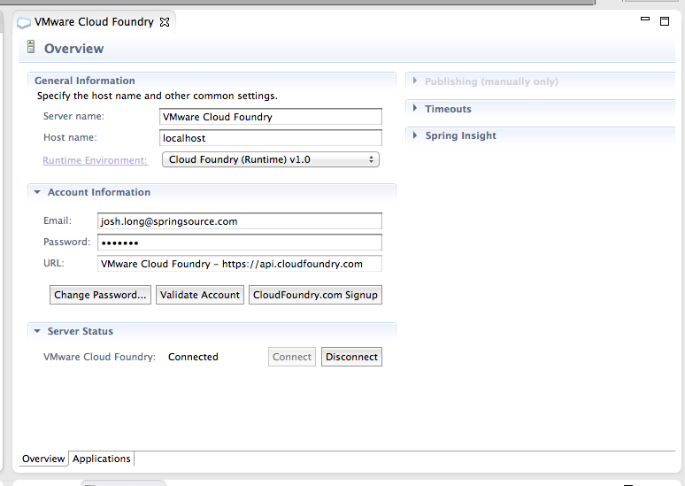 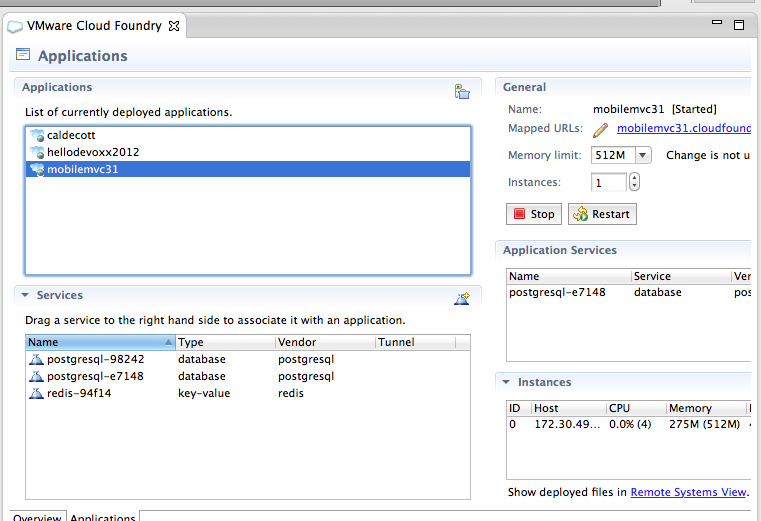 To create an application, go to the
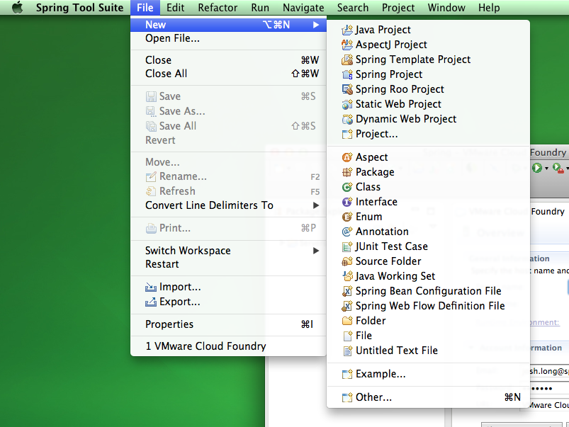Filemenu, chooseNew->Spring Template Project.Then choose
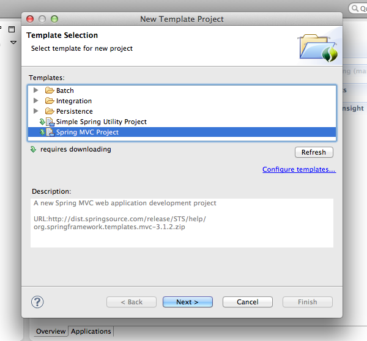Spring MVC projectand clickNext.It might ask you to download a few kilobytes to get the tutorial if you haven't already downloaded this before. If so, click
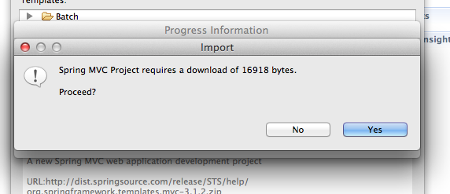Yes.Then fill in an application name and a top-level package. The wizard requires 3 tokens in the top-level package name, so
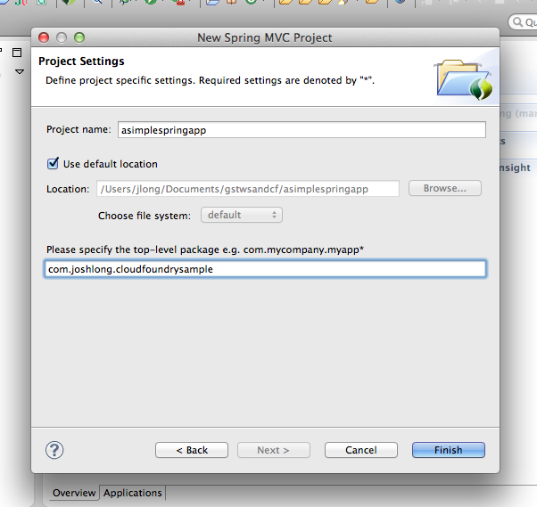com.joshlong.cloudfoundrydemowould work, butcom.joshlongwon't.Once you have an application, it's easy enough to deploy it to Cloud Foundry. Simply drag the project from the
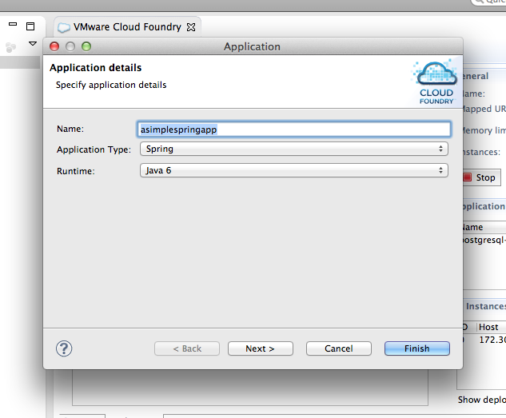Projectpanel onto the Cloud Foundry server in theServerspanel. It'll ask you to specify information about the application: what runtime, what language, etc. The defaults are good enough in this case, so just leave them as-is and clickNext.Next, you'll be asked to specify the URL for the application as well as how much memory to allocate. Again, the defaults are fine in this case.
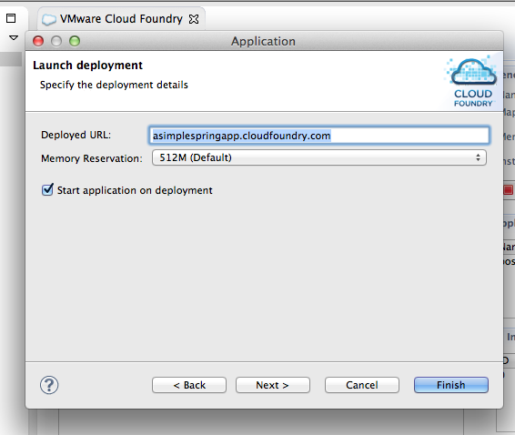The application will deploy, and - if you open the URL given in a browser window - you'll be greeted with a new application on Cloud Foundry!
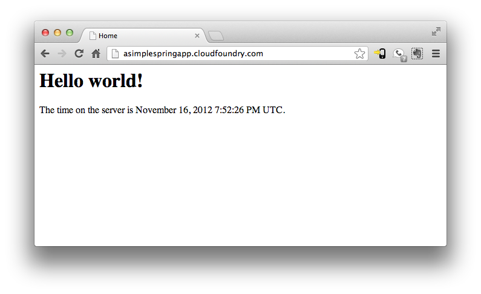Getting started with programming Spring is another story for another blog post at least! In the meantime, you might checkout the Green Beans blogs on SpringSource.org
I hope this post has been helpful. If not, always feel free to reach me at my email.
Devoxx 2012
12 November 2012
Are you guys going to be in Antwerp, Beglium for Devoxx? If so, feel free to reach out to me. I'll be speaking on Spring (including a look at Spring 3.1 and 3.2), Cloud Foundry, and much more. This will be my third year at Devoxx and, as usual, I'd love to grab a beer (or two!) and chat with anybody and everybody about Spring, Cloud Foundry, big data, the cloud and much more. Also, feel free to ping me on @starbuxman on Twitter.
Last year was an amazing event for me. I was very sick and gave 5 talks, but still had a heck of a lot of fun. This year I expect I'm feeling great (I'm in Sofia, Bulgaria, at the moment and will head to Antwerp tomorrow), and I only have 3 talks, so it should be a very relaxing, entertaining trip indeed. As usual, SpringSource and Cloud Foundry will have a booth, as well. So feel free to drop by - I'm sure you'll find me there, as well.
Cloud Foundry Open Tour, Sofia, Bulgaria
10 November 2012
I'm excited to report that i'll be speaking at the Cloud Foundry Open Tour event in Sofia, Bulgaria! This event's sure to be fun, and it'll be my second trip to Bulgaria in two weeks! If you're in Sofia, Bulgaria, and want to talk Spring, and Cloud Foundry, please be sure to drop by! I'll be joining several other world-class speakers to talk about application development on Cloud Foundry with various technologies.
If you want the slides to the talk, they're available on my SlideShare account. Additionally, the code is all available on on the A Walking Tour project on my GitHub account. Specifically, check out the android and mobilemvc modules. Enjoy!
Java2Days 2012 Trip Report
31 October 2012
I've just returned from one of my all-time favorite conferences, the amazing Java2Days conference in Sofia, Bulgaria. This was my fourth year speaking there. I've had the unique, and rare privilege of having been there every year since the show started in 2009. Here's my post of the show from 2010. Each year, the show gets better and better. This year was no exception. I gave two talks - my Multi Client Development with Spring MVC (which is mainly about connecting clients (Android, native, HTML5) to your services with REST) and The Cloud Foundry Bootcamp. (Those links are to the slides on my SlideShare account, if you're interested..)
Group shot of me with several of the speakers at this year's event.
Compare and contrast with this photo from 2009
Twitter follower @Ivelina took this shot of me from the audience
I enjoyed this year like crazy, and - as usual - can't wait until next year! Thanks again to the Java2Days team for putting on such a magnificent show!
I would be remiss if I didn't mention, in this particular instance, that I'll be back in Sofia, Bulgaria in a few weeks for the Cloud Foundry Open Tour event Sofia! If you're in the region and want to talk Spring and cloud computing on Cloud Foundry, the open source PaaS from VMware, then drop by and see me!
Java2Days 2012
23 October 2012
Again this year ill return to my favorite conference in eastern Europe, the Java2Days conference in Sofia, Bulgaria, where I'll give my talks on multi client development with Spring MVC and on getting started with Cloud Foundry, the open source PaaS from VMware. If you're in the region (Turkey, Greece, Armenia, Bulgaria, etc.), then join me and we'll talk Spring and Cloud Foundry over rakija!
Arlington, VA Cloud Foundry Dev Day
19 October 2012
Fresh from SpringOne2GX, I'm in Arlington, VA, working with developers who want to get started with Cloud Foundry. This is a hands on event, and many of my colleagues and I are here to help developers get started.
There are two tracks -- one track focusing on application development using Cloud Foundry: getting started with the tools, setting up the environment, pushing applications to the cloud, and managing the application once it's there. The other track focuses on Cloud Foundry internals and architecture. The turn out has been great, and it's great to see so many developers using the technology so enthusiastically. People are already pushing and migrating their existing, sophisticated Spring based applications to Cloud Foundry!
Spring Integration and Spring Batch on CloudFoundry talk from JavaZone 2012
19 October 2012
My talk from JavaZone is now available online. I co-presented with Oleg Zhurakousky, colleague and co-committer on Spring Integration. If you'd like a quick look, check it - and all the other great videos on the JavaZone Vimeo page - out!
SpringOne2GX 2012 Trip Report
18 October 2012
And so concludes SpringOne2GX 2012! This year's event was even crazier and more wonderful than last year. The opening day keynote saw SpringSource CTO Adrian Colyer kick off the show along with Juergen Hoeller (pictured above), Dr. Mark Pollack, Graeme Rocher, and This is the premier event for JVM developers, featuring great speakers from VMWare, SpringSource, TypeSafe, Neo4j, and many others speaking on all manner of topics. I thoroughly enjoyed giving my talks on Cloud Foundry, Spring Integration and Spring Batch, and RabbitMQ.
My Dear Aunt Sandra
15 October 2012
My aunt Sandra passed gentle into that good night, yesterday morning, from complications of ALS. Sandra raised my sister and I as children like her very own every summer for years and years in her home of Salem, Oregon. She raised her own beautiful family. She worked her entire life and made a good living for herself all the while donating substantial time and money to church and charity. She took students in as part of foreign exchanges, mentored children at schools and at the YMCA, where she was a swimming teacher and swam thrice weekly up until last year, in her late 70s. She took me to Paris and London for the first time, and showed me what a quick flight across the ocean could do. She's the reason I speak French (and other languages), and the reason I enjoy so many privileges in this life. Sandra was brave and adventurous. She'd visited by cruise or by plane almost all the ports on earth and over 75+ different countries in her long life. She never went into anything with assumptions. She never let a bad situation stand, always attempting to fix it or better it. She was unpretentious. The matriarch of my dad's side of the family. A true family Matriarch. Sandra was the best of us, and I'll miss her with all my heart. RIP Aunt Sandra.
SpringOne2GX 2012
15 October 2012
Anders Hejlsberg Introducing TypeScript
10 October 2012
I was in Aarhus, Denmark last week and gave my talk on using Cloud Foundry, and then spoke in the evening at the local Java User Group as a special guest, which was awesome. The only regrettable thing was that Anders Hjelsberg was concurrently giving his talk introducing TypeScript, which meant I couldn't see it. So, I watched it today in the background while I was wrestling with expense reports. Check out the link to Microsoft's Channel 9 where you can watch the video. TypeScript is not the first technology to solve the static-language-to-JavaScript problem, following the most recent introduction into the market, Google's Dart. Before that, of course, we had CoffeeScript, ScriptSharp, GWT, etc. I could actually see myself using this one, though. My one twinge of discord is that I think a lot of the complaints he identifies as inhibiting large application development (such as the lack of strong types) are less of a problem with a good organizational framework in place. An MVC framework like backbone.js or Angular.js let you plugin the missing pieces which means that no single component is going to be so big that it might see substantial benefit by having a stronger type system, and coordination between the components is handled by the more rigorously tested framework.
Mysterious Algorithm Responsible for 4 Percent of All Trading Activity Last Week
10 October 2012
According to CNBC, a mysterious algorithm was responsible for 4% of trading activity last week. I'm not sure what's more impressive: the single algorithm that generated the noise, or the company whose monitoring algorithm saw the aberration..
San Francisco
09 October 2012
I've moved to San Francisco, CA! Found a nice place in Nob Hill for the king's ransom of 300% of what I was paying in Pasadena, CA, just a few weeks earlier. Anyway... I only mention this because... I'm in town. Let's grab a drink and talk Spring and Cloud Foundry. JUGs? Meetups? Hackathons? Let's do all the meetups. Plus, this has the additional benefit of putting me in town for more of the awesome events / meetings with my SpringSource colleagues! Life is so good sometimes.
Spanner, the Goldilocks database
09 October 2012
The other N.*?SQL shoe has dropped. Google seems to have discovered the Goldilocks database: it's fast, and transactional. In short, it's juuuust right. I haven't had the time to read the paper, but it seems very interesting! Check out the High Scalability post for more.
Lanyrd
01 October 2012
If you guys want to know when and where I'll be speaking next, feel free to check out my Lanyrd.com page, which usually has information about which shows I'll be at and where. In fact, some times I check it out and learn of my obligations before I've been told!
Speaking at the Aarhus, Denmark Java User Group
01 October 2012
I'll be speaking at the Aarhus, Denmark Java User Group on Tuesday, October 2, 2012 from 17:00-19:00. I'll be talking about Spring and Multi Client Development and giving a Cloud Foundry Bootcamp. I hope to see you there!
GOTO conference in Aarhus, Denmark, 2012
27 September 2012
I'll be speaking at the GOTO conference in Aarhus, Denmark, from October 1-3 talking about Cloud Foundry, the open-source PaaS from VMWare. If you're at the show, I'd love to meet you! We can talk all things Spring, and Cloud Foundry, or just throw back a beer. Ping me on Twitter (@starbuxman)
This guy!
21 September 2012
"Who loves Spring and has two thumbs? ...This guy!"
A photo of me from OSCON 2012 by my pal (the one and only) Andy Piper.
How to Learn a Framework
18 September 2012
I was asked recently how I might suggest going about learning a framework (like Spring). I replied in an email and I reproduce most of that email below.
Basically, don't learn a framework first. Learn how to solve the problem. Once you learn how to solve the problem, identify common design patterns that will help you solve the problem. Then, find the framework that lets you work with those design patterns. If you're trying to build a web application - learn what principles people use in building web applications. One common pattern when building web applications is MVC. Spring MVC makes it very easy to build MVC-based applications. If you're trying to build a service, you will typically learn about data-access technologies and repositories and ORM. Spring and Spring Data have great support for building service objects (a pattern) and repositories or data access objects (DAOs). If you're trying to build an application that has many layers - services, web tier, repositories, unit tests, etc.- then it is helpful to have dependency injection, which is another pattern that Spring also supports. That is the 'correct way' to learn new technologies, in my opinion. If you understand the problem you're trying to solve, and you've identified a good technology, then looking at other people's code can be VERY helpful. This is one of the reasons I love open source so much. You can look at so many other peoples' code.GitHub is an amazing place. Look at the SpringSource repository and you'll see the source code for many different projects. If you look, you will often find '-samples' projects inside of the SpringSource project. Also, the Cloud Foundry Samples repository provides great, multi-language samples that you can refer to for getting started on Cloud Foundry. These projects show how to use the patterns. The Spring Hibernate Template shows a good example of building an application on Spring MVC and Spring that works on Cloud Foundry. In addition to looking at source code and looking at design patterns, you should always ask questions. If you have a chance, go to the Java User Groups in your area. Ask questions on the SpringSource forums or Stack Overflow. And, of course, i am always happy to help answer questions, too ;-)
Cloud Foundry System Integrators Tour in India, ArchSummit, OSChina in China, August 2012
16 September 2012
If you've been following my tweets in the last two months, you know I've been bouncing around India and China. Actually, in China, you would've noticed the lack of tweets, as Twitter's blocked there.
I went to India early in August to visit system integrators and talk to them about the about the promise and potential of Cloud Foundry, the Open Source PaaS from VMWare. System integrators are the first frontier - these guys are often 50,000+ employees strong and service customers all around the world! It's no surprise that they would want to know about a on-premise, open source solution like Cloud Foundry! The feedback and enthusiasm there is very exciting, and - of course - there is a huge story for support for Spring in the cloud, which they wanted as well.
Then, I went to various cities in China on a mini-tour. I visited Shenzhen, China (for the InfoQ ArchSummit conference), where I gave a keynote lecture to a thousand enigmatic developers with simultaneous translation. My colleagues from VMWare Shanghai were there and gave a few talks on Cloud Foundry as well. The reception was, as you can imagine, very good. I am particularly grateful for my VMWare colleagues, who sort of played tour guide for me while I was there. There can be no doubt - the Chinese are learning English. It is part of the country, now. But not all speak it conversantly, and so I really appreciated the help. I got pretty good at charades, though! Then, it was off to Nanjing, China where I gave a talk introducing Cloud Foundry to the amazingly enthusiastic developers at OSChina. At one point the air conditioning died and the room was left - 200+ people and packed! - in a sweltering standing heat. I would've left! I was shocked no one else did, and it was really gratifying to be able to talk to them. I know they weren't comfortable, but the content from all the speakers was good, and the developers were the kind of people all conferences want: inspired, passionate. Truly inspiring. I imagine I walked away from the conference as inspired as anybody.
Finally, I went back to Shanghai to speak at an all but impromptu Spring and Cloud Foundry meetup. A few dozen developers gathered around and I gave my Spring, a Walking Tour.
I'd been to India before, (three times this single year, at this point!), so while I was very happy to be there, I was particularly enamored with my trip to China. I feel humbled and, as with China, feel like I made some real friends.
I really enjoyed my time in both India and China, and look forward to my next occasions to visit there! If you're in China, by the way, you can follow the SpringSource Weibo account!
| 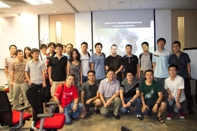 | |
The Cloud Foundry Open Tour 2012 in Pune and Bangalore, India
16 September 2012
I just returned from the Cloud Foundry Open Tour in India (in Pune and Bangalore) where I gave my talk Multi Client Development with Spring MVC and helped with the bootcamp (along with my pal Raja Rao). The trip was astonishing - my third trip to India this year! - and the food was even better. We spent a lot of time talking to people about building modern applications, including how to architect applications for cloud-scale. The show had the same format in each of two cities: for the first several hours it was individual talks. Then, at 3pm, Raja and I took the stage and kicked off the bootcamp, as a separate event (people who had come for the individual talks may not have wanted to stay for the bootcamp). The bootcamp was amazingly satisfying because most people walked away from the event having pushed something to the cloud and - in the case of a few dozen teams - having built something really awesome on Cloud Foundry and deployed it to production! Nice job, and I hope to see a lot more of this.
| |
WTF
16 September 2012
A Walking Tour of Spring 3.1
08 March 2012
I put together a quick walking tour of Spring 3.1. The code is available on my GitHub account. It runs on a Servlet 3 container, and demonstrates how to build a completely XML free (no persistence.xml, no web.xml, no orm.xml, etc.) application that uses Hibernate 4, Spring 3.1, and Spring MVC 3.1. It shows how to build everything from a transactional service to a RESTful endpoint.
My trip to JFokus, Vaadin Dev Day, and Spring I/O with my Dad
21 February 2012
|
All three photos: una manifestación!
|
He was most looking forward to visiting Stockholm. Stockholm is every bit as lovely as he imagined it would be, having seen The Girl with the Dragon Tatoo.
But, dad fell ill - something he ate didn't agree with him (probably the airline food!) - and he was trapped in the hotel for a few days, and very weak. This made moving around a bit more problematic than it should have been as we made the subsequent trip to Madrid, Spain. One thing we did learn: getting sick in a hotel room's a good idea, especially in Stockholm. The staff at the hotel we stayed at - the lovely Radisson Blu Waterfront in Stockholm, right next to the JFokus venue - treated him exceptionally. It seemed as though the staff was almost rooting for him to recover! Somebody even checked in on him for me, while I was tending to my obligations as a speaker at the conference! Talk about great service.
During all of this, I took a quick jaunt (a train, then a flight, then a cab) from Stockholm, Sweden to Helsinki, Finland's port, where I jumped on a cruise headed back to Stockholm! This cruise, in particular was the vessel on which the Vaadin Dev Days took place. It was an amazing, enthusiastic group of programmers, and you couldn't ask for a more interesting venue. I enjoyed everything, and particularly, I enjoyed giving a talk against the background sound of ice breaking as the ship plowed onward, through the frozen waters. Adding that to the list of things that I can't beleive I got to do...
We finally made it to Madrid. By that point dad was on the mend, and the temperature in Madrid was more favorable to people of, em, superior years. It was a lot warmer than in Stockholm. Madrid seems like it was realized from a story book illustration: nice people, great food and - most manifestly for an American like my dear dad, never before abroad in his 75+ years of life - full of beautiful architecture! Madrid ended up being his favorite city.
It didn't hurt that the conference coincided with carnivale, which was being celebrated in some form or another in many different Catholic countries world-wide. The streets were abuzz with music, debauchery and crowds of people. Dad and I went outside, took in some of the scenery and had to find a place to sit when one of the Manifestacións plowed through the center where we were! What an incredible thing to behold! We missed the memo, evidently, where it was announced that the entire walking population of Madrid would go on a walkabout!
I really enjoyed JFokus, the Vaadin Dev Days, and finally Spring IO both because they were great events with enthusiastic developers, but also because I got to go with my dad, who got to experience Europe for the first time with me. We learned a lot. I'll be back in Europe next month for 33rd Degree, and I'll be in Sweden, again(!), and in numerous other countries in April for ScanDevConf and the Cloud Foundry Open Tour (which we'll talk about a bit later), respectively, and I'll be sure to approach those trips in the same way as my dad did: full of a (renewed) curiousity.
JFokus and Vaadin 2012
17 February 2012
Hey guys, are you going to be at JFokus' University day tomorrow? Come see Chris Richardson and I talk about building better Spring applications on Cloud Foundry at 9AM tomorrow morning. If you're in Helsinki, might I recommend the JFokus with Vaadin cruise which leaves from Helsinki aboard the MS Silja Symphony at 17:00 EET, and then works it way to Stockholm, where of course you're then free to attend JFokus. I'll be there, giving a talk on getting to production quicker with technologies like Cloud Foundry, Spring and Vaadin. The deck from the talk from the Vaadin dev meetup on Spring, Roo and Vaadin is available, and so is the deck from the JFokus Cloud Foundry quickie is available here.
Spring IO 2012
17 February 2012
Looking forward to presenting my talk on Integration and Batch Processing with Cloud Foundry tomorrow at Spring IO 2012. RabbitMQ, Spring Integration and Cloud Foundry are Natural Vehicles for applications that handle large workloads and scale well. In this talk, I'll introduce common architectural patterns to better scale, using Spring Integration and Spring Batch, using RabbitMQ as the communication fabric. For those of you who want the deck, it's available here.
A Google Music API, Please?
26 January 2012
You know what I want? A Google Music API.
I feel like Google Music's still the leader. Apple's iCloud just kind of leaves me cold. It not only stinks of lock -in, but it's not even particularly flexible. Where's my .ogg support?
The things I would do...
The Google Music App doesn't do the right thing a lot. I plug it into the car and hit play, thinking it'll either playing all songs after it, or the whole album, and often it just plays one song. Even worse, the shuffle function's odd. Google Music has weird behavior when you run the Navigation app and have to share the audio with other apps. Sometimes when Google Music gets the control back, it doesn't pick up and go, again.
Finally, I want Google Music on Roku, and on other devices. Otherwise, I still don't feel like I could just throw away my CDs, yet. And, while I appreciate that there's a "offline" mode for Google Music, I still don't see a way for me to get my original music back. Where's my liberated data section for my music?
Supporting Your Own Field or Method Injection Annotation Processors in Spring
01 January 2012
So, I had a use case the other day - I wanted to support a custom annotation for denoting injection at the class level.
Spring users will know that Spring already supports
Spring's native
@Autowired, JSR 330's @javax.inject.Inject, and JSR 250's '@javax.resource.Resource.
These annotations, when placed on a setter, or a field, signal to Spring that
a value should be injected at the site of the annotation. These annotations
are synonyms for the same thing.
Spring also supports other annotations - like the JPA 1.0 @javax.persistence.PersistenceContext
annotation. The annotation is used in a special circumstance, when you want Spring to inject an EntityManager or an EntityManagerFactory.
Here are some examples.
@javax.inject.Inject
private DataSource dataSource ;
@Autowired
public void setDataSource(DataSource ds){
this.datSource = ds ;
}
@PersistenceContext
private EntityManager entityManager;
To "teach" Spring what to do with a custom annotation like @PersistenceContext is fairly easy once you know the actors involved.
The work is typically done inside of a special BeanPostProcessor. What we want is a framework hook to inspect the beans after the bean's have been created, but before they've been populated with properties.
The BeanPostProcessor interface is powerful, but not quite what we need. What we actually need
is a combination of the the more specialized InstantiationAwareBeanPostProcessor and MergedBeanDefinitionPostProcessor.
InstantiationAwareBeanPostProcessor
provides the following callback method:
PropertyValues postProcessPropertyValues( PropertyValues pvs, PropertyDescriptor[] pds,
Object bean, String beanName) throws BeansException;InjectionMetadata. The metadata represents information about the injection sites. You can extend this class and provide specific metadata about the call site - perhaps by caching the contents of the annotation that you're dealing with - and then use that to actually perform the injection. It is up to you to crawl the beans - including the super classes and so on - to gather the fields and property setters and then provide the relevant InjectionMetadata.
There's a lot of expectations here, but it's pretty simple to implement. I have provided a reusable base class (below) that generalizes all but the specific concerns. This code is written in Scala, but it can be reused from Java, once compiled. Alternatively, it wouldn't be hard to translate to Java. The only thing that wouldn't map nicely into Java are the uses of callback methods, which can be expressed nicely in Scala, but would require an object with a callback method. (I probably should re-write it in Java and provide callback interfaces in lieu of the various callback methods or provide an abstract base class with well known, abstract callback methods)
Anyway, you can basically ignore the implementation - it's presented so you can include it in your project (under the Apache 2 license, of course).
See you after the example to
see how to implement it.
package com.joshlong.spring.util
import org.springframework.beans.factory.support.{RootBeanDefinition, MergedBeanDefinitionPostProcessor}
import org.springframework.beans.factory.annotation.InjectionMetadata
import org.springframework.beans.factory.BeanCreationException
import java.beans.PropertyDescriptor
import org.springframework.beans.factory.config.InstantiationAwareBeanPostProcessor
import org.springframework.beans.PropertyValues
import java.util.LinkedList
import java.lang.{String, Class}
import java.lang.reflect.{Method, Field, Member, Modifier}
import org.apache.commons.logging.LogFactory
class AnnotatedSiteInjectionPostProcessor [T <: AnyRef, X <: java.lang.annotation.Annotation]
(annotation: Class[X], fieldMetadataCallback: (X, Field) => InjectionMetadata.InjectedElement, methodMetadataCallback: (X, Method) => InjectionMetadata.InjectedElement)
extends InstantiationAwareBeanPostProcessor with MergedBeanDefinitionPostProcessor {
val logger = LogFactory.getLog(getClass)
def postProcessBeforeInstantiation(beanClass: Class[_], beanName: String) = null
def postProcessBeforeInitialization(bean: AnyRef, beanName: String) = bean
def postProcessAfterInstantiation(bean: AnyRef, beanName: String) = true
def postProcessAfterInitialization(bean: AnyRef, beanName: String) = bean
def postProcessMergedBeanDefinition(beanDefinition: RootBeanDefinition, beanType: Class[_], beanName: String) {
if (beanType != null) {
var metadata: InjectionMetadata = findInjectionSiteMetadata(beanType)
metadata.checkConfigMembers(beanDefinition)
}
}
def postProcessPropertyValues(pvs: PropertyValues, pds: Array[PropertyDescriptor], bean: AnyRef, beanName: String): PropertyValues = {
try {
logger.debug("about to attempt injection for class "+ bean.getClass )
val metadata = findInjectionSiteMetadata(bean.getClass)
metadata.inject(bean, beanName, pvs)
} catch {
case ex: Throwable =>
throw new BeanCreationException(beanName, "Injection of persistence dependencies failed", ex)
}
pvs
}
private def doWithMembers[T <: Member](clazz: Class[_], filter: T => Boolean, fieldsFactory: (Class[_]) => Array[T], doWith: T => Unit) = {
var targetClass: Class[_] = clazz
do {
fieldsFactory(targetClass).filter(filter).foreach(doWith)
targetClass = targetClass.getSuperclass
} while (targetClass != null && !targetClass.equals(classOf[AnyRef]))
}
private def findInjectionSiteMetadata(clazz: Class[_]): InjectionMetadata = {
val currElements = new LinkedList[InjectionMetadata.InjectedElement]
doWithMembers[Field](clazz, f => !Modifier.isStatic(f.getModifiers) && f.getAnnotation(annotation) != null, c => c.getDeclaredFields, f => {
val fieldAnnotation = f.getAnnotation(annotation)
val injectedElement = fieldMetadataCallback(fieldAnnotation, f)
currElements.add(injectedElement)
})
doWithMembers[Method](clazz, f => !Modifier.isStatic(f.getModifiers) && f.getAnnotation(annotation) != null, c => c.getDeclaredMethods, m => {
val methodAnnotation = m.getAnnotation(annotation)
val injectedElement = methodMetadataCallback(methodAnnotation, m)
currElements.add(injectedElement)
})
new InjectionMetadata(clazz, currElements)
}
}
This class takes care of crawling the beans and performing the injection for you. All it needs from you is a subclass of InjectionMetadata.InjectedElement, which you provide. That object in turn is responsible for ultimately providing the reference to the object that you want to be injected based on the metadata available. To make this easy, this particular responsibility is factored out as callback functions which you provide in your concrete implementation.
To do its work, you need to tell this class which annotation to match, and the type of object you'd like to inject (you could stipulate just a regular java.lang.Object, or, in Scala terms, an AnyRef.).
In this particular example, I want an annotation that can be used to lookup, and inject, a reference to an
Akka actor, called a ActorRef in Akka parlance. Akka actors can live locally, or remotely, and when injected you can lookup an Actor by a logical name or by a path, which itself can be absolute, or relative, as Akka actors form supervisory hierarchies which map very much like a file system. For more information on the supported addressing scheme, check out ths document from the Akka documentation.
So, the example (in Java) might look like this:
@ActorReference("akka://my-system@serv.example.com:5678/app/service-b") private ActorRef actorRef ; @ActorReference("akka://my-system@serv.example.com:5678/app/service-b") private var actorRef: ActorRef = _ First, we need to extend the base class, and provide the callback hooks that tell the base class what to do with a field or property (a setter method). In our case, this is pretty simple, and straight forward:
class ActorReferenceAnnotatedSiteInjectPostProcessor(actorSystem: ActorSystem)
extends AnnotatedSiteInjectionPostProcessor[ActorRef, ActorReference](
classOf[akka.spring.ActorReference],
(ar: ActorReference, f: Field) => new ActorReferenceInjectedElement(actorSystem, ar, f, null),
(ar: ActorReference, m: Method) => new ActorReferenceInjectedElement(actorSystem, ar, m, BeanUtils.findPropertyForMethod(m)))
In this class, we extend the base class and call the constructor, passing in the class of the annotation to detect, a callback method which accepts an instance of the annotation and a particular instance of a field, and another callback method and a particular instance of a method. The contract is that, given the instance of the annotation and matching field or method, you will return an instance (or sublcass of) the InjectionMetadata.InjectedElement class. So, that's what we do, constructing an instance of ActorReferenceInjectedElement with the ActorSystem reference given in this subclass' constructor and the detected ActorReference annotation, and the detected class member to which the annotation was attached, a java.lang.reflect.Field or java.lang.reflect.Method as well as the annotation itself.
The ActorReferenceInjectedElement is where the important work happens.
Let's take a look at that class.
class ActorReferenceInjectedElement(
actorSystem: ActorSystem,
annotation:ActorReference,
member: Member,
propertyDescriptor: PropertyDescriptor)
extends InjectionMetadata.InjectedElement(member, pd) {
override def getResourceToInject(target: AnyRef, requestingBeanName: String) = actorSystem.actorFor(annotation.value() )
}
If you read Scala, then this is a pretty simple class. The constructor (the prototype of which is included inline in the class declaration, at the top) expects an ActorSystem, a reference to the ActorReference annotation, a java.lang.reflect.Member (the common base class of both Field and Method), and a PropertyDescriptor. We don't use the PropertyDescriptor in this code (except to invoke the super constructor), but it's nice to know that we have it available. It might be null, however, if we're looking at a java.lang.reflect.Field. The unspoken bit is that the constructor arguments implicitly become class variables, and so are reference-able from other methods.
In the class, we override the getResourceToInject method, providing the object to be injected.
We simply need a reference to the actor, so call actorSystem.actorFor with the String that was provided as part of the annotation (the value() field). We could, for example, provide a wrapper object instead of the reference itself. This is what happens when you use the @PersistenceContext annotation. It injects an EntityManager proxy that in turn manages thread-local
EntityManagers so that no matter which thread you call a method on, if it accesses the class EntityManager, it's guaranteed to be thread-safe. We don't do anything fancy like that in this case, but it's easy to see the potential there.
Now, all that's left to do is register the ActorReferenceAnnotatedSiteInjectPostProcessor
in your Spring configuration. It's just a regular bean with constructor arguments. Spring detects the interfaces and calls the appropriate methods. Here's a code configuration based example (written in Scala):
@Configuration
class MyAkkaConfiguration {
@Bean def actorSystem = ... // provide your own reference
@Bean def actorReferenceAnnotatedSiteInjectPostProcessor =
new ActorReferenceAnnotatedSiteInjectPostProcessor( this.actorSystem())
@Bean("sample") def someBeanThatDependsOnActors =
new Object { // anonymous inline object just to show you what a usage might look like
@ActorReference("myActor")
var someActor:ActorRef = _
}
}
object Main {
val ac = new AnnotationConfigApplicationContext(classOf[MyAkkaConfiguration])
val sample = ac.getBean("sample")
Assert.notNull( sample.actorSystem )
}
The Week Spring 3.1 Went GA, or, The Holidays Begin Now!
17 December 2011
This week has been nothing short of a rollercoaster! The week started with Spring 3.1 debuting, chock full of new features. From the release announcement,
- The environment abstraction and the associated bean definition profiles, along with centrally configurable property sources for placeholder resolution.
- Java-based application configuration based on @Enable* annotations on configuration classes, allowing for convenient container configuration: e.g. using @EnableTransactionManagement to activate declarative transaction processing.
- The cache abstraction with our declarative caching solution (@Cacheable etc) on top, focusing on convenient interaction between application code and cache providers.
- The Servlet 3.0 based
WebApplicationInitializermechanism for bootstrapping a Spring web application without web.xml! This is a key piece in Spring's web configuration story, providing a rich alternative to XML-based bootstrapping. - Revised MVC processing with flash attribute support, a new
@RequestPartannotation, and further REST support refinements. This newHandlerMapping/HandlerAdaptervariant is also highly extensible for custom MVC needs. Beyond the above major themes, we invested into our O/R Mapping support, allowing for JPA package scanning withoutpersistence.xml, and supporting Hibernate 4.0 (CR7 at this time - we will fully support Hibernate 4.0 GA once released). - Last but not least, this is the first Spring release with first-class Java 7 support. While older Spring versions run perfectly fine on Java 7, Spring 3.1 goes the extra mile and fully supports JDBC 4.1 as well as convenient
ForkJoinPoolsetup and injection. - As usual, this release also includes many recent bug fixes. Spring 3.1 is fully compatible with Spring 3.0 and continues to have Java 5+ and Servlet 2.4+ as minimum system requirements. We recommend a Spring 3.1 upgrade to all Spring 3.0.x users.
That was Tuesday. The web reacted as expected, with news announcements aplenty, on TheServerSide, on InfoQ, and on Dzone, and on a zillion other sites, too.
Then, Costin Leau, who I'm pretty sure never sleeps, shipped Spring Data Gemfire 1.1.0, and Spring Data Redis 1.0.0, both of which have many new features and are compatible with Spring 3.1.
Then, Grails 2.0 was released, also compatible with Spring 3.1.
Then, vFabric SQLFire 1.0 was Released! SQLFire, for those of you who haven't heard about it before, is an SQL92 compliant database that runs on top of GemFire, the distributed data grid product from VMware. It can be used to run, unchanged, a good many existing RDBMS applications and acheive drastic improvements in speed immediately. This has little to do with Spring 3.1, but is instead a release of its own import, also released in the last week.
Then, Spring Social 1.0.1 was released, also compatible with Spring 3.1! Spring Social's release is important too because other projects depend on it. So, we can expect to see the floodgates open even more soon with more releases, all because Spring 3.1 was released.
To top things off, Oleg Zhurakousky's interview at JavaOne with InfoQ on messaging, Spring, and the cloud is now available, and so is Roy Clarkson and Keith Donald's SpringOne2GX talk on Making the Mobile Web Native with PhoneGap.
Awesome.
I for one, need a breather. Can't wait until this weekend.
Next week's going to be crazy, as well. I'll be at the San Diego JUG on December 20th, talking about all things Spring and Cloud Foundry. There are actually two talks, one on Spring and Cloud Foundry, and another still on Tailoring Spring for Custom Usage. Hope to see you there!
Mamacita...
10 December 2011
Yeah, so this is stuck in my head. Sigh. It's really catchy... the first twenty or thirty times.
Simple things I do to OS X itself whenever I set it up
03 December 2011
I do a few things to every OS X installation to make them more useful. Most of the things I mention below are things you can do to OS X itself, some are third party applications that are generally useful. I hope they help you, but really I'm listing them here so I don't have to rediscover this stuff again next time I'm doing a fresh OS X installation. ;-) My hope is that these are general, generic and useful enough to be applicable for everybody, not just software developers with a penchant for photography like myself. I've put all the things I could remember here, but I'm sure I've probably forgotten a few, too. I'l follow up if I think of anything.
- Enable Remote Login Go to System Preferences > Sharing > and then enable Remote Login. This will give you SSH access to your machine, which of course should need no justification.
- Add a Login menu to the Finder Go to System Preferences > Users & Groups > and select the Login Options item on the left, with the picture of the house next to it. Then, choose Show Input menu in Login Window and select Show fast User Switching Menu as [Full Name]. This is useful as a quick way to lock the screen, as well as change accounts. You can, of course, use Hot Corners to trigger the login screen, but I found I kept accidentally triggering them.
- Show a Full Date Go to System Preferences > Date & Time > and then choose Show the day of the week, Show date, Use a 24-hour clock, and Display the time with seconds. I also uncheck Flash the time separators.
- Make the Dock Less Obtrusive Go to System Preferences > Date & Time > and select Minimize windows into application icon, Automatically hide and show the Dock, and Show indicator lights for open applications. Finally, drag the divider - it looks like a broken, vertical line that narrows towards the top - between the dock and the rest of the icons and make the dock as small as you're comfortable seeing with and could still reach with some accuracy with a flick of the mouse.
- Know Your Shortcuts While OS X's Finder is pretty shortcut-phobic, it does have some pretty useful ones.
For more, consult this useful Apple support doc.Home Directory COMMAND + SHIFT + H Applications Directory COMMAND + SHIFT + A Utilities Directory COMMAND + SHIFT + U Desktop Directory COMMAND + SHIFT + D Computer window COMMAND + SHIFT + C - Clean the DockRot Drag Everything on the dock away that you're not absolutely sure you're going to need. I try to keep mine as an indicator of the applications that are open, so I remove about everything except the Trash, Launchpad, and Mission Control. There are lots of ways to still get to your often used applications. You can of course use something like Spotlight, but there are even better (albeit third party) tools like QuickSilver and Alfred that can make all applications trivial to access. I know I implied I wasn't going to mention third party applications, so let me also remind you that you can get at your applications very quickly by using Spotlight or the two commands mentioned above - COMMND + SHIFT + U (for the Utilities folder) and COMMAND + SHIFT + A (for the Applications folder).
- Disable Spotlight Since I don't ask much of the Dock, and since I use things like Alfred or Quick Silver, it's useful to reuse Spotlight's keyboard shortcut for those alternative application switchers. While there are a lot of ways to disable Spotlight more effectively, for my purposes it is enough to simply disable the key command and render Spotlight partially inert. Go to System Preferences > Spotlight, and uncheck every checkbox there under the Search Results list. Uncheck the two options below, Spotlight menu keyboard shortcut and Spotlight window keyboard shortcut.
- Speak Truth (About) Power You can view detailed information about your Mac's power consumption (if you're on a laptop variety) by going to System Preferences > Energy Saver and then selecting Show battery status in menu bar. In the menu bar, right click on the power icon, and choose Show > Time (to see how much time you've got left before the charge runs out) or Show > Percentage to see how much battery power you've got left.
- Switch Resolutions on the Fly I end up plugging into projectors and into various monitors a lot in my work, so keep in mind this might be more valuable to me than it is to you. Go to System Preferences > then select Show displays in menu bar. This will install a menu in the menu bar that you can use to quickly switch resolutions and access monitor settings.
- Install a better browser I've always installed as many browsers as possible. It used to be because I wanted to have a better developer-friendly tool to develop web applications with, or because I wanted to have a browsers to test the rendering of my web applications, but these days I'd recommend anybody do it because the default browsers in all operating systems usually leave something to be desired. OS X and Safari, in my humblest of opinions, is no different. I'm using Chrome pretty happily these days, but that's not to say you need to. Next week Firefox might be back on top again! Who knows. Either way, get yourself a better browser.
- SWitch it up Switching between applications with the COMMAND + TAB shortcut in OS X is tedious. If you are using an application like Chrome which can have multiple document windows, then you will simply be returned to the application itself, not any specific document in that application. Similarly, if you have minimized a window, COMMAND + TAB'ing to that window will not "activate" and focus on it. So, I sought another option and the intertubes pointed me to Witch. It fixes all of these problems, and more, although be warned it costs (USD $14, as of this writing).
Devoxx 2011 Report and Seattle Mongo 2011
30 November 2011
Devoxx is a huge conference that redefines "community." I like the conference - a true paradise - it has a lot more soul than JavaOne and represents a really nice sampling of what's what out there, not just what Oracle's working on. So, it was with great pleasure that I went, despite being pretty sick. I stopped by the doctor's on my way out of town and loaded up in antibiotics then began the 20-hour door-to-door journey from Los Angeles, United States to Antwerp, Belgium.
I gave a 15 minute quickie on Spring Roo, a 3-hour university talk on Spring on Cloud Foundry (with Chris Richardson), a regular talk on Spring on Cloud Foundry (with Patrick Chanezon), another regular talk on social Spring applications using Spring Social and Spring Integration, and I helped lead the Spring BOF. Basically, I had more fun than anybody should be allowed. I may have looked (and felt) like death warmed over, but I had a wonderful time. All the talks were well attended, and I loved the feedback! Keep it coming, guys.
That said, I'm now on a flight heading to Seattle, Washington, where I'll present on Cloud Foundry and Mongo DB at the Mongo Seattle event. If you're in town, come see me! We can talk Spring, big data, cloud and anything else you'd like. Also, if you know the area, I'd love to know which coffee shops will help me to best endure the inclement weather. Ping me on Twitter or on Google+. See you there!
Trip Roundup for October and November
11 November 2011
What a ridiculous blur of insanely fun travel and technology.
I spoke at the MongoDB Chicago conference on the 18th of October on using MongoDB with Spring Data Document on Cloud Foundry. This was a fantastic event and the response seemed enthusiastic about the cloud and, of course, Cloud Foundry. After all, Cloud Foundry was among the first (the first?) major PaaS players to bring MongoDB to market. On a related note, I'm honored to say that I'll be giving the same talk (basically) at Mongo Seattle, on December 1. If you're in Seattle, and want to grab a beer (or coffee!), then ping me on Twitter or on Google+. Naturally, you could always just come to the Mongo Seattle event - $100 for a fully day of talks from experts in the field is amazingly good deal (and, at this point, an ideal holiday gift!).
That was October 18th. I flew home, caught my breath, and then flew back to Chicago for SpringOne2GX, which I blogged about recently. SpringOne2GX was amazing. I ended up doing not only the three talks I blogged about before, but an impromptu joint session with Roy Clarkson on HTML5 mobile application development. The whole conference is something not to be missed. What an absolutely amazing show filled with amazing people.
| The Mongo Chicago venue at "The Library" | Adam Fitzgerald kicking off the keynote festivities at SpringOne2GX |
| The Chicago skyline at night from one of those trips. I love how the clouds hung in the air, making an otherwise mundane photo really beautiful. |
I returned home just long enough to get a fresh load of laundry and then set back out to Sofia, Bulgaria, for one of my absolute favorite conferences, Java2Days. The conference, in South East Europe, is at the nexus of Greece, Turkey, Italy, Armenia, etc., so it attracts a lot of people who are really enthusiastic about the conference and the technology.
| I met Jean Claude van Damme, and survived! |
The conference itself is unrivaled, of course, but the real draw is the chance you have to meet and greet and to take in the culture. Pack your stomach pump, though, the rakia (and the fraternizing, dancing and fun that accompanies it!) tends to sneak up on you! I was at dinner on with the other speakers and with attendees from the show and in walks Jean Claude van Damme who was in town, apparently, shooting the Expendables 2. He sat down, celebrated a bit and was even kind enough to indulge me in a photo, which I proudly post here. Merci, Jean-Claude!
I returned home on the 6th - giving me just enough time to get a small flu and to prepare my decks for Devoxx, which I leave for on the 12th (in 24 hours, or so, basically).
If you're in Belgium, this is the event to see! Come see me talk with Chris Richardson on Spring on Cloudfoundry for the university talk (3 hours! We're going to cover NoSQL, AMQP, the <cloud:/> namespace, and much more!) and with Patrick Chanezon for a 1-hour introduction to getting started with Spring on CloudFoundry. Additionally, I'll be participating in the Spring BOF. I've also got a
Spring Roo "quickie" talk, and a talk on socializing your Spring applications using Spring Social.
Should be utterly exhausting, but I look forward to seeing you all there! We're gonna have a lot of fun.
SpringOne2GX 2011
24 October 2011
SpringOne2GX 2011 is upon us! I'm in a terminal at San Francisco Airport ("SFO," for those of us in the live-on-plains biz) waiting for my flight to Chicago. This year's going to be ridiculous. Honestly, I can't wait.
I've got three talks - each 1.5 hours! So, eh, if you can't get enough of my ugly mug, then please join me for some of these talks!
One talk is with Roy Clarkson, we're co-presenting on Native Android Development. This talk I look forward to quite a bit - Android's a powerful platform and certainly the most ubiquitious, so learning how to build a better Android application from client to server is very useful! (I can't wait to make it even more ubiquitous when I buy my Galaxy Nexus!).
My second talk is a deep dive at Spring Batch. Sure, anybody can sling together a Spring Batch application, but do you really know what's going on there? Do you know what you could do with Spring Batch? Spring Batch's so amazingly robust and feature rich that a lot of people just plunk down what they need to get their occasional batch processing solution finished, but don't stop to reflect on the power-user features as well as the details. This is a credit to Spring Batch - after all, the 80% case is super simple. But, you can take it and further, and this talk should be a great start for the curious. Additionally, because I'll be diving deep into some basic concepts, this talk will also be a good introduction to Spring Batch for the uninitiated.
My last talk is that's a bit more medium-to-advanced level. In this talk, I'll introduce some of the Spring framework's various SPIs. Spring's a very simple technology and it features a rich component model and framework libraries that you can pull down and use, a la carte. However, a lot of Spring's power is in the stuff right below the surface - the extension points. Come learn about some of my favorite extension points in this talk. Remember, these extension points are the same ones that we leverage in building other Spring frameworks like Spring Integration, Spring Batch, etc., so this isn't just idle speculation! The most demanding user of the Spring framework is often the engineer trying to build a sister project!
Great Content to get Started with Neo4J and Spring Data Graph
10 October 2011
I recently had somebody ask me what the best content for getting started with Neo4J is. Naturally, my answer was to grab Spring Data Graph and don't look back. But that's not entirely fair. Admittedly, you might be better served by simply learning Neo4J and then layering in the Spring Data support to reduce a lot of the tedium. So, without further ado, here's a list of great content that I put together for people who are looking to learn Neo4j and Spring Data Graph (which works with Neo4j.).
- Start with the documentation, of course. Like SpringSource, the Neo4j team goes to extreme lengths to make sure their documentation reflects the APIs as the APIs evolve. If you want to get an idea of how extreme, just ask Peter Neubauer. The docs provide a good introduction to the APIs and modeling concepts and - in parts III and IV - introduce how to operate, scale and manage Neo4j instances.
- Jim Webber, lead author of REST in Practice (one of my favorite books, by the way!), now works for Neo4j Inc., and he put togehter an amazing Koan-style tutorial for everybody to consume on Github. Check it out!
- Check out the videos. There are lots of them. Neo4J has their content on videos.neo4j.org, and buried in all the great Spring content on the SpringSourceDev channel on YouTube, there's the great introduction to the Spring Data Graph project with project lead Dr. Mark Pollack and Neo4j CEO Emil Eifrem.
- Steve Mayzak and I co-authored a book, "Getting Started with Spring Roo," from O'Reilly. We were honored to have Michael Hunger, from the Neo4j team, contribute and co-author the content on the Roo addon for the Spring Data Graph project. O'Reilly has generously made this book available for free to the community; check it out!
- For a great example (running, and open source, too!) of Spring Data Graph, check out this blog introducing the example along with some background information. Then, check out the source code.
- Michael Hunger also co-authored an amazing book, The Spring Data Graph Guide Book. This book is a great piece of content.
Python? Good. Python on CloudFoundry? Better.
01 October 2011
I love the characterization of Python in this post from InfoQ:
"For Adam, Python fostered the development of modern web frameworks, with Zope and Plone. These frameworks introduced concepts like separation of business and display logic via view templating, ORMs for database interaction, and test-driven development were built into Zope 5 years before Rails was born. The main reason why they have not been successful in the market is their complexity and a steep learning curve while being way ahead of their time. Eventually, and despite the initial lack of involvement of the Python community, Django emerged as a strong competitor to rails. .."
That basically says it all: Zope (and Plone) was an integrated, productive framework/application server before EJB 1.0x and it already had ORM, a proper MVC web framework, etc. It was no wonder that EJB and J2EE left a lot of us who had Python backgrounds a little... underwhelmed. I love the point surrounding the "noise" of the community: Python's everywhere - it's a "sleeper" success and yet most people would still not describe it as either legacy or hipster. I remember learning Python in the late 90's and it had already seen adoption by companies that were doing amazing things. That's actually what struck me so much about Python: people who could use any language and technology they wanted, as long as they got results, chose Python. Among the companies that "chose" Python instead of C++ or PHP or even Java (at that point) were unambitious, fly-by-night organizations like Google, NASA, ILM, and many, many more. That spoke volumes more than all the noise Node's generated. (As an aside, if you want to actually build software and take advantage of Node's promise with a language and platform you trust, may I recommend Node.X?)
Python offers a wealth of options for developers. My first Python use cases - even at Python 1.5 a decade ago - were all about exploiting Python's "batteries included" mantra to build distributed applications on grids. Oh, and text processing. Honestly, Python does a remarkable job at text processing. I don't miss Perl, at all!).
I note that if you want a seriously good Python cloud-story, check out ActiveState's (you know, ActiveState, the maker of leading IDEs and integrated language bundles/SDKs for Python, Perl, Tcl, etc., for at least the last decade?) Stackato, which is based on CloudFoundry, the open-source PaaS, is awesome. As much as I love the MicroCloud Foundry VM instance, the truth is that the ActiveState guys beat us (I work for SpringSource, a division of VMware) to the punch: they had a VMWare image running their port of the CloudFoundry cloud before VMware! Awesome ;-)
Libraries and Component Models and APIs (in Spring), Oh My!
23 September 2011
One of the most importants about a framework is that it is pluggable, that it is extensible. This is very much a core promise of a good framework, and separates it from mere libraries. Most of the Spring frameworks are exposed as libraries and component models. These are the two levels most people interact with Spring: they reuse the numerous and powerful libraries as-is, or - when the libraries aren't able to read your mind, Spring provides some surface-level API against which to write pluggable code for certain responsibilities. For example, Spring Integration comes with batteries included, many, many batteries, actually. In this case, the batteries I refer to are the integration technologies supported in terms of the various modules that are provided: web services, databases, message brokers (JMS, AMQP), file systems (FTP, FTPS, SFTP, and regular filesystem mounts), etc., etc. The same is true of Spring Batch and indeed of all the other Spring frameworks. If the batteries included aren't quite what you want, and you'd like to plug in your own logic, the 80% cases are accounted for in terms of the component models that the projects expose.
In Spring Integration, the 80% case is to reuse the libraries. It is possible to not write a single line of Java code and solve complex problems using Spring's declarative XML namespaces. When this isn't enough, the next tier of support is the Spring Integration component model that works with annotations. The only time you need to use these component models is to help the framework fill in the gaps, to understand the parts of your application that it could'nt possibly already know or infer. For example, if you want to provide conditional routing based on your business logic - the integration equivalent of an if/else statement - then you need to work in terms of a router. Here's how you write the rough skeleton of a custom router, one that's specific to your application, in Spring Integration:
@Router( ... )
public class MyBlogRouter {
public String chooseWhichChannelBasedOnTheInputMessage( Message<String> msg) {
if(msg.getPayload().equals( "a") {
return "channelA";
}
...
}
}
In Spring MVC, the 80% case is creating a controller that can handle requests as they come in from the web, and naturally, there's an easy, declarative way of telling Spring MVC about controllers, like this:
@Controller
public class MyBlogController {
@RequestMapping( ...)
public String handleRequest( @PathVariable("id") long id) {
...
}
}
In both of these cases, the component model lives side by side with the framework itself. There's an interplay, an unspoken contract: the framework provides all the machinery to automate as much as possible. Ideally, when you do come to the point of needing to plug in code, it's because you're trying to express something quintessentially related to your business problem, and not focusing on the machinery of writing an integration flow, or handling HTTP requests. Small focused hooks provide a lot of power, and these two layers go a long way for most users.
What a lot of people don't know is that all of the Spring frameworks (notably, Spring core itself) provide a third echelon of support, of functionality. To me, this third echelon is the APIs that it provides against which you can code. I like to think that, when the 80% cases aren't enough, you should look for the 20% answer in the APIs.
You deal with these APIs a lot, and sometimes they overlap with the component models, so the line can be a bit blurry. One blurry example is if you register a bean that implements InitializingBean, then Spring will automatically invoke the InitializingBean#afterPropertiesSet() method when the bean has had its dependencies satisfied and is about to be made available in the context. This, in effect, gives you a construction hook, like a second constructor that gets called after the properties have been satisfied. This is an API. You get power by implementing an interface. However, from the component model perspective, there's an alternative: you can use the JSR 250 annotations, e.g., @javax.annotation.PostConstruct to trigger that any arbitrary method be invoked. Here's an example:
@Component
public class MyClass {
@javax.inject.Inject DataSource dataSource ;
@PostConstruct
public void setup() { ... }
}
Either one's fine, and at this level it's largely a matter of personal style.
Taking the examples further, and moving from the ambiguous to the clearly API-centric, Spring provides convenient interfaces that give you access to the lower level workings of the Spring framework. Examples of these include the BeanPostProcessor and the BeanFactoryPostProcessor. At this level, you start tapping a lot of power.
Admittedly, a lot of people aren't going to need or consume the framework in this way, but it's nice to know it's there. These APIs are the force multipliers that the other Spring frameworks leverage to provide the powerful abstractions for you. Ever wondered how Spring does its magic when you use declarative transaction annotation, @Transactional? You might be surprised to learn there's a BeanPostProcessor involved. Nothing in the Spring framework is magic -- you can build infrastructure or framework code just like the other Spring projects do for your users by tapping into these APIs.
Exposing your frameworks and common abstractions in terms of these well known, idiomatic Spring APIs provides a powerful, familiar surface to your API that consumers of your abstraction can leverage.
There are extension points all over the place in Spring - places where you can provide your own implementation that fits into the machinery - an example of the strategy pattern.
In Spring MVC, ViewResolvers help map abstract view names (Strings) into concrete view resources (that might mean a .jsp, a Velocity or ThymeLeaf template, or any of a zillion other implementations. In core Spring's REST support there exists an interface, HttpMessageConverter<T>, that Spring uses to figure out how to convert HTTP request and response payloads into domain-centric objects: a POST request with bytes might becomes a java.io.InputStream, a response with a JAXB object might need to be marshalled into XML and then sent as the response, etc. Those strategies are all codified as implementations of this interface. Adding new ones is quite easy. In Spring Integration, outbound adapters implement the MessageHandler interface, and provide the interface between the messaging code and an external system. You can add new ones and teach Spring Integration new tricks by implementing this interface.
Anyway, I could go on, but - for my own good - I won't, since I wouldn't have anything left for my talk at SpringOne!
What talk at SpringOne, you say? Oh Yeah! About that: if you want to hear more about these extensibility hooks and the powerful, intricate layering that's possible using the Spring frameworks, come check out my talk at SpringOne on "Tailoring Spring for Custom Usage" in Chicago, in October 2011!
Trip Roundup and The Dallas Spring User Group
17 September 2011
Hey sports fans! What a crazy few weeks! September started off with a bang as I found myself in sunny Las Vegas for VMWorld 2011. I really enjoyed the time there to connect with my ops- and system-centric brethren. What a great crowd, and the excitement surrounding the exodus to the cloud was palatable. People are excited about vFabric, and about connecting their applications with a truly integrated stack, RabbitMQ, GemFire, tcServer, etc., and they're doubly excited that they have in the Spring portfolion a unified programming model for all of these technologies. So, exciting stuff, definitely. If you missed all the excitement, don't fret: lots of was recorded and made available here!
The week after that, I found myself en-route for Oslo, Norway, for the 10th annual JavaZone conference, which rocked. This was my second time speaking there and I can tell you, in no uncertain terms, that vikings rock! What a great community. This conference seems like the conference for the thinking developer, and featured plenty of content on Spring and Scala this year.
I also had the pleasure of taking a tour of the Norwegian fjords with colleague and great guy Chris Richardson. If I get around to it I'll try to post some incriminating photos later :-)
The best part? Even if you weren't lucky enough to be there, you can still partake in the fun by watching the recorded videos which JavaZone's generously put online on Vimeo for free. There's of course my talk on Spring configuration, Costin Leau's the Spring 3.1 caching abstraction, Mark Fisher's talk on Spring Integration with CloudFoundry (bonus: the talk, "Event Driven Architecture with the Spring framework" from last year is also available!), Costin's other talk on Spring Data, and Chris Richardson's talk on Polyglot Persistence, all available in English. If you speak Norwegian, then there's ample content for you, as well, including a talk on Spring Java configuration in Scala, and on performance gains with Spring Batch. I think I saw some others, too, but as I don't speak Norwegian, I can't be too sure! Enjoy!
As if that weren't enough excitement, next week I have the honor of speaking at the Dallas Spring User Group. I'll be giving two related talks, one on the SPIs exposed to the interested Java developer in core Spring and, one on the SPIs exposed in Spring Integration. Both talks are done with an eye towards extending the framework to accomodate advanced use cases.
Of course, some of it may be old news for the veteran and whip-smart Spring users at that particular group, but we'll see if I can't surprise a few of 'em! ;-) If you're in the Dallas, Texas area and want to talk Spring, come on down or ping me on Twitter at @starbuxman.
Happiness is...
31 August 2011
Happiness is having RabbitMQ and PostgreSQL in the output of my vmc services invocation ;-)
vmc target api.cloudfoundry.com vmc login ... vmc services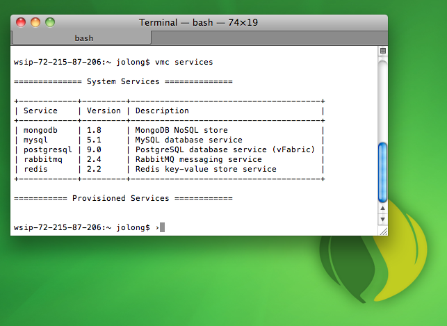
What a wild month for CloudFoundry! RabbitMQ! MicroCloud! and now, PostgreSQL (this was one of the biggest pieces of news to come out of VMWorld 2011 in Las Vegas, where I am right now)! And, for the Python and PHP inclined among us, there's now the CloudFoundry partner providers that are now supporting these languages on their CloudFoundry clouds. It's all coming together, quicker and better than ever. Stay tuned for more!
WTF! Linked Lists patented
27 August 2011
Tim Fox retweeted this tweet from Hacker News's Hacker News Bot that linked lists had apparently been patented and responded as aptly as I could've: WTF.
Getting Started with Spring Roo
12 August 2011
Steve Mayzak and I have just finished a book for O'REILLY, Getting Started with Spring Roo. The book's a very quick introduction to Spring Roo, and includes information about the many useful addons (including support for Vaadin - a powerful, alternative web framework, and Neo4j - an alternative, powerful NOSQL data-store), as well as the in-built Spring Roo addons. If you're interested in Spring Roo, I hope you'll check this out.
RabbitMQ is now officially available on CloudFoundry!
12 August 2011
For you code lurkers out there, the news that RabbitMQ is now available in CloudFoundry should come as no surprise.
But, it's finally here! This is very exciting. One thing I've always loved about RabbitMQ is its ubiquity. It is more widely used than
any other message broker on the cloud, and on Amazon Web Services in particular. The AWS tidbit's a bit more awesome when you realize that AWS already has a message broker service called SQS! ;-) Anyway, it's now available on CloudFoundry. You should definitely check it out. The news overall seems good, too! Messaging middleware is the critical component for scale. Cloud-scale is a way of life, not just a switch to be turned on and off. Specifically, an architecure that scales is going to enjoy temporally decoupling, or asynchronism, and RabbitMQ is the perfect vehicle to enable that asynchronous coordination.
If you're a Spring developer, and haven't had a chance to look at CloudFoundry, then I strongly recommend you see Mark Fisher's entry on the SpringSource blog introducing the wide world of the cloud for Spring developers from a few months ago. There's also great content on the SpringSource YouTube channel.
Speaking at JavaZone 2011
07 August 2011
I'm excited to announce that I'll be speaking at JavaZone again this year. I must confess, I was a little worried that I would not be accepted this year! My talk last year - on business process management and Spring Integration - seemed to garner puzzled looks. Perhaps I just misread the amazing Norwegian audience? The conference (and the technical presentations, to boot) were both wonderful.
I had the wonderful experience of stopping at a booth and having somebody try to sell me training in Spring (which, I mean, sure... more training's always good!), but the kicker came when he showed me the training manual! It was the book that Gary Mak and Daniel Rubio and I co-authored, Spring Recipes!
I submitted on other topics, as well, last year, and those were not accepted. No matter, I gave my talk, and indeed the people that did get it, really got it! So, while I'm not complaining, it still wasn't exactly my best day. I'm thus thrilled to be invited back and - as if fate wasn't already shining on me - my 3-hour university talk's been accepted. My talk's called, "Spring, a Walking Tour," which is a bit of misnomer, as I'm usually the only one walking at all! ;-) I'll be talking about the Spring landscape - everything, from the cloud, mobile, integration, batch processing, big-data, and more! Check it out. This talk was well received when I gave it at Geecon earlier this year, and I've already updated it to reflect a lot of the new stuff in the Spring 3.1 milestones.
The city of Oslo, as you no doubt have heard, recently experienced a terrorist attack resulting in the massacre of innocents, both adult and children. It broke my heart to see this. What a disgusting, horrible incident, obviously. It's beyond comprehension, no matter where it happens, of course. It was particularly surprising to me that it happened in Oslo, however, as it seemed like such a beautiful, clean, ideal city when I was there. I will take more time, this year, to explore Oslo, and to take in more of Norway's beauty, and to walk among these strong people. I really have a lot of respect for the way the people of the city responded to the incident. They are inspirational.
I hope you'll join me at JavaZone, and in Oslo, in general, to be inspired.
Spring Corner: Beyond the FactoryBean
23 July 2011
I looked at what a basic FactoryBean is in my previous post. While FactoryBeans are important - and knowing what they do can help you navigate
the framework - they're by and large no longer the recommended approach to the task as of Spring 3.0 and the imminent Spring 3.1.
The whole point of a FactoryBean is to hide the construction of an object - either because it's very complex or because it can't simply be instantiated using that typical constructor-centric approach used by the Spring container (Maybe it needs to be looked up? Maybe it needs a static registry method?)
Spring 3.0 saw the introduction of Java configuration which lets you define beans using Java. For instance, to register a regular javax.sql.DataSource with Spring in XML, you will more than likely delegate to a properties file for the sensitive configuration information (like a database password) and use Spring to instantiate the javax.sql.DataSource, like this:
<beans ...>
<context:property-placeholder location = "ds.properties" />
<bean id = "ds" class = "a.b.c.MySqlDataSource">
<property name = "user" value = "${ds.user}"/>
<property name = "password" value = "${ds.password}"/>
</bean>
</beans>
This is a simple bean, and translates naturally into Java configuration. It would look like this:
import a.b.c.* ;
@Configuration
@PropertySource("ds.properties")
public class MyConfiguration {
@Inject private Environment env ;
@Bean public MySqlDataSource ds(){
MySqlDataSource ds = new MySqlDataSource() ;
ds.setUser( env.getProperty("ds.user") );
ds.setPassword( env.getProperty("ds.password"));
return ds;
}
}
The beauty of this is that you're free to do anything you'd like inside the method. The return value is what's registered in the Spring container. Anything you do in service of properly constructing this object is up to you - you're no longer bound by the limits of what Spring can instantiate based on the XML specified. And, this is more natural - it's far easier to guarantee there's no typos using Java than XML. So, take away from this that Java configuration is - about equal in terms of lines of code, but a lot more powerful, and conceptually more natural.
With those limitations lifted, the value of the FactoryBean is starting to lessen. After all, if all a FactoryBean does is encode construction logic in a novel or unique way, then there's no reason that couldn't be done inside a Java configuration method, is there?
Let's revisit the example from the last blog post, a custom FactoryBean designed to factory cars.
public class MyCarFactoryBean implements FactoryBean<Car> {
private String mark;
private int year ;
public void setMark(String m){ this.mark =m ; }
public void setYear(int y){ this.year = y; }
public Car getObject(){
// wouldn't be a very useful FactoryBean
// if we could simply instantiate the object ;-)
CarBuilder cb = CarBuilder.car();
if(year!=0) cb.setYear(this.year);
if(StringUtils.hasText(this.mark)) cb.setMark( this.mark);
return cb.factory();
}
public Class getObjectType() { return Car.class ; }
public boolean isSingleton() { return false; }
}
In this example, we only conditionally set values if there are values to be set. So, we do some dancing around to ensure that we have values. This code is ugly, because it has a lot of different execution paths, but it's not particularly novel. We're adults, we can do this sort of thing ourselves. Let's dispose of the FactoryBean and simply use Java configuration to replace it for a definition of a Car. Again, we happen to know what configuratoin we need,
so we don't have to duplicate the null checks in our code.
@Bean public Car honda(){
return CarBuilder.car()
.setYear( 1984 )
.setMark("Honda")
.factory();
}
Not bad! We no longer need the complex FactoryBean, and we have a usable bean definition.
If we wanted to make this reusable, we could, as well, by simply creating a factory method, like this:
// presumably exposed from some place where other configuration classes can reuse it.
public Car buildCar(int year, String make){
CarBuilder cb = CarBuilder.car();
if(year!=0) cb.setYear( year);
if(StringUtils.hasText( mark)) cb.setMark( mark);
return cb.factory();
}
...
// now the Spring definition itself is even simpler, and it's reusable!
@Bean public Car honda() {
return car(1984, "Honda") ;
}
In Spring 3.1, there are many places where Spring also provides a Builder alternative to a FactoryBean. A Builder, as a pattern, is conceptually simialar to a FactoryBean. In practice, however, they are usually exposed like the CarBuilder demonstrated above. They are
typically chainable - a method returns this and so subsequent invocations don't need to dereference the object, they can
continue chaining invocations.
Additionally, a Builder usually does the null pointer checks that I forced in the previous code.
So, a properly rewritten CarBuilder object usage might look like this:
@Bean public Car honda(){
return CarBuilder.car()
// doesn't matter if the parameters are null -
// it'll validate in the factory() method
.setYear( 1984 )
.setMark( "Honda" )
.factory();
}
A great example of a builder providing a much smoother experience in 3.1 over Spring's FactoryBeans is the new Hibernate 3 SessionFactoryBuilder, whose usage looks like this:
@Configuration
@EnableTransactionManagment
public class ServiceConfiguration {
@Bean public javax.sql.DataSource dataSource(){ ... }
@Bean public SessionFactory hibernate3SessionFactory(){
return new AnnotationSessionFactoryBuilder()
.setDataSource(dataSource())
// you could do this:
//.setAnnotatedClasses( Customer.class, LineItem.class, Order.class )
// or simply scan a package where your entities live
.setAnnotatedPackages( Customer.class.getPackage().getName())
.buildSessionFactory();
}
}
The equivalent FactoryBeans now delegate to these builder classes, in fact!
Spring Corner: What's a Factory Bean?
22 July 2011
In this post, I'll look at Spring's org.springframework.beans.factory.FactoryBean<T> interface.
The definition of this interface is:
public interface FactoryBean<T> {
T getObject() throws Exception;
Class<?> getObjectType();
boolean isSingleton();
}
A FactoryBean is a pattern to encapsulate interesting object construction logic in a class. It might be used, for example,
to encode the construction of a complex object graph in a reusable way.
Often this is used to construct complex objects that have many dependencies. It might also be used when the construction logic itself is highly volatile and depends on
the configuration.
A FactoryBean is also useful to help Spring construct objects that it couldn't easily construct itself. For example, in order to inject a reference to a bean that was obtained from JNDI,
the reference must first be obtained. You can use the JndiFactoryBean to obtain this reference in a consistent way.
You may inject the result of a FactoryBean's getObject() method into any other property.
Suppose you have a Person class whose definition is thus:
public class Person {
private Car car ;
private void setCar(Car car){ this.car = car; }
}
and a FactoryBean whose definition is thus:
public class MyCarFactoryBean implements FactoryBean<Car> {
private String mark;
private int year ;
public void setMark(String m){ this.mark =m ; }
public void setYear(int y){ this.year = y; }
public Car getObject(){
// wouldn't be a very useful FactoryBean
// if we could simply instantiate the object ;-)
CarBuilder cb = CarBuilder.car();
if(year!=0) cb.setYear(this.year);
if(StringUtils.hasText(this.mark)) cb.setMark( this.mark);
return cb.factory();
}
public Class getObjectType() { return Car.class ; }
public boolean isSingleton() { return false; }
}
You could wire up a Car instance using a hypothetical CarFactoryBean like this:
<bean class = "a.b.c.MyCarFactoryBean" id = "car"> <property name = "mark" value ="Honda"/> <property name = "year" value ="1984"/> </bean> <bean class = "a.b.c.Person" id = "josh"> <property name = "car" ref = "car"/> </bean>
In this example, the result of the FactoryBean's getObject method will be passed, not the actual FactoryBean itself.
Spring knows that the result can be injected into the target property because it'll consult the FactoryBean's getObjectType() type
and check whether the target property's type is assignable.
Spring reserves - but in practice doesn't always exercise - the right to cache the returned bean if the FactoryBean's isSingleton() method returns true.
If you are using Spring's newer (and far more elegant, in my humble opinion) Java based configuration, then you will find this doesn't work quite as you'd expect, but it can still be
made to work, but you must dereference the FactoryBean explicitly and call getObject() yourself, like this:
// identical configuration in Java to the XML above
@Configuration
public class CarConfiguration {
@Bean public MyCarFactoryBean carFactoryBean(){
MyCarFactoryBean cfb = new MyCarFactoryBean();
cfb.setMark("Honda");
cfb.setYear(1984);
return cfb;
}
@Bean public Person josh (){
Person p = new Person();
p.setCar( carFactoryBean().getObject() );
return p;
}
}
Spring FactoryBeans have all the other characteristics of any other Spring bean,
including the lifecycle hooks and services (like AOP) that all beans in the Spring container enjoy.
So, if you'd like a chance to perform construction logic after the properties on the FactoryBean have been set, but before the getObject() method has been called,
then you can avail your FactoryBean of a method, annotated with @PostConstruct (or simply implement InitializingBean). This method will be called,
in this case, after both the mark and the year properties have been set.
You might use this callback to do sanity checks before the object construction's started.
@PostConstruct
public void setup () throws Throwable {
// these methods throw an exception that
// will arrest construction if the assertions aren't met
Assert.notNull(this.mark, "the 'mark' must not be null") ;
Assert.isTrue(this.year > 0, "the 'year' must be a valid value");
}
One important takeaway here is that it is the FactoryBean, not the factoried object itself, that lives in the Spring
container and enjoys the lifecycle hooks and container services. The returned instance is transient - Spring knows nothing about what you've returned from getObject(), and
will make no attempt to excercise any lifecycle hooks or anything else on it.
This point often confused people.
OSCON Java 2011
07 July 2011
Hi guys. I'll be speaking at OSCON Java. I'm giving two talks, one on Spring Roo and on using Spring to bring your application to your customers (through a web application, through Flex, through GWT, and through mobile clients like Android). I'm also working with my colleague and friend Steve Mayzak to write an ebook on Spring Roo called "Getting Started with Spring Roo," which will be available from O'REILLY as an ebook in time for OSCON. I hope to see you there. I heard, but can't confirm, that if you register tomorrow (07/07/2011 - the release of Java 7), you'll get a giant discount (77%?). There are also a few other great talks from SpringSource and VMWare there, and I look forward to seeing you there!
AOP's Not Just Logging
05 July 2011
If you've ever read about Spring's powerful AOP support then you've probably heard about the canonical example of introducing logging functionality - a cross-cutting concern - to your beans. The example goes like this: you want to log the start and stop time for every method invocation. You can either modify every method and introduce logging, which is tedious and error-prone, or you can simply use AOP to wrap every method invocation. With AOP, you'll get a chance to perform logging every time a method is started and finished, or both! This is a common example, but it doesn't even begin to illustrate how powerful AOP can be. The most powerful example of AOP is perhaps the Spring framework itself. It uses it every where! Let's look at some common examples:
- In Spring, beans are by default singletons and have no particular guarantees about thread-safety. This is fine most of the time as many objects are thread-safe (e.g., the
JdbcTemplate) so consumers never need to know. This usually ends up being the most performant, and most natural, style of Spring bean. One example where Spring uses AOP to acheive the feeling of thread-safety without concerning the developer with it is in Spring'sEntityManagersupport. Spring will correctly inject a proxyEntityManagerusing AOP.EntityManagers are not thread-safe, but the consumer doesn't need to know. As an example, you might write:@PersistenceContext EntityManager em.Spring then automatically routes all concurrent requests to the appropriate, thread-local instance being maintained in the background. - Spring's declarative transaction management is based heavily on AOP. With a single annotation, Spring can start a transaction before your method is invoked, then commit (or, in the case of an exception, roll it back) when the method terminates. You don't need to know about this as a consumer, of course, but behind the scenes.
- Spring Security can guard method invocation access, limiting the call to clients that are secured. This authentication checks against a security context, and - if authorized - proceeds. This works through the judicious use of AOP and some thread local state.
Reframing the Question
30 June 2011
Just watched a recording on JavaEE6 and JBoss AS7. JBoss AS7's looks like it's evolved by leaps and bounds! I wonder if it's as mature as Glassfish now... Some of the new features in JBoss AS 7 seem to just be bug fixes.
- It's faster (which is great, because it's always been dog slow. JBoss AS5 had startup times of 60 seconds or more on trivial applications!)
- It doesn't leak classes (because previous versions had all sorts of classloader issues and this was a very common complaint)
- It supports the full JavaEE6 specification (because JBoss AS6 - the first release of the JBoss AS server line after the JavaEE 6 specification was finalized - didn't, instead choosing to only support the web profile)
- It's productized into part of the JBoss EAP (which is great, because JBoss AS 6 wasn't, and - as JBoss AS 7 is still not out yet, this means that Websphere (!!) was quicker to market with a supported version of Java EE 6 (both full profile and web profile) than JBoss!
Towards the end, one of the presenters made the nonsensical assertion that, basically, Spring is quite old (and was therefore straddled with all of this imaginary legacy code), and that CDI is - in contrast - quite new. This is an example of "reframing."
Spring's been around since 2003, in some form, and since 2004, in a big way. It's certainly older than CDI, sure. Obviously. However, applications written in 2004 still run without modification on Spring 3.0 and the upcoming Spring 3.1, with very few exceptions. The only exceptions are on the very few cases where we've deprecated certain APIs like our support for Apache OJB. Even still, if the older, relevant extension library is loaded, it runs. The supported parts of the component model haven't changed, just the libraries that we ship that build on top of the component model. Usually when we deprecate something, it just means we're not shipping it with the project, not that the code won't work on current versions of Spring.
In contrast, if you'd written your application on the "standard" EJB 2 (which was the norm when Spring first emerged), it would not run on contemporary versions of these Java EE 6 application servers, especially those that just support the web profile. For that matter, if your application in Seam 2 (which was current six months ago!), it would not run once you upgraded to Seam 3 without heavy migration. (Definitely not anything close to a drop-in upgrade)
Spring's older, but evidently far stabler than both the J2EE / JavaEE implementations and the standards. If you're running Java SE 5, then there's little reason Spring wouldn't continue to work on an existing J2EE 1.4 server. To boot, new versions of Spring support programming models that are more powerful and as lightweight, as anything JavaEE has, while maintaining backwards compatibility. It's unfortunate that JavaEE6 can't maintain its legacy code and add support for "new" component models at the same time, and even more so that this is what passes for a "standard." Spring has a better backwards compatibility story, within Spring as well as within J2EE and JavaEE application servers.
Don't let people maliciously reframe this point. Spring's maturity is a strength, not a weakness. The component model introduced in XML in 2004 still works today, and we've provided several alternative input configuration types to tap this same component model, including annotations and Java-based configuration. This is possible because any configuration mechanisms - be it XML, Java configuration, annotations, the Groovy BeanBuilder, or anything else, is eventually normalized to a common component type at runtime.
Geecon 2011 Roundup
29 June 2011
What a couple of months! I've been running around like crazy. I attended Geecon, the Spring S2G Forums, and then the JAX San Jose conference, all in fairly short order. I'll try to put up roundups of my trips a bit more consistantly, starting with Geecon. I've been to many European conferences, but this one is now among my favorites. The conference has the unique combination of excellent speakers at a low price, like the SpringSource S2GX Forums or SpringOne.
Poland was the real surprise. This was my first time here and it far exceeded my many expectations. The Polish Zlati is cheap against the English Pound, European Euro and - yes - even the American dollar (2.6, in May). It's easy to be taken (in any country) as a tourist, but I found myself dropping my guard after five days. Nobody'd really tried anything, and most everything met with my expectations.
Assert.assertTrue( taxi.getPrice() <= expectedAmount,
"the cab faire should never exceed " + expectedAmount+"!" ) );
At one point, I was taken for a ride (literally!): a taxi charged me 50 Polish Zl for a ride from the central square to my hotel which was otherwise consistently 19-24 Zl (even in traffic). By comparison, a train ride from Krakow to Lodz is 54 Zl, and the trip is several hundred kilometers. That said, 50 Zl is roughly 19 USD at the moment, which is not enough to feed two adults and a child at McDonald's (the lowest of the low) in the states. So, it's all relative. The takeaway is that even being ripped off didn't feel so bad in Poland.
I did a university talk on the first day (the university talks are three hours each), and I did a second, single-hour talk, on the first day of the conference proper. The university talk was interesting because fully 70% of it was live coding or walk throughs or demos of some sort and I had dual screens, so I ended up coding using a 50' theatre-screen! I still have some small neck pain! :-) Next time, I'll simply mirror my screens. Ow.
The audience was great, I never know what to expect of audiences. Some times they ask questions, some times they don't. These audiences did a fine job of asking questions all throughout the talks and outside, during the conference! Wonderful. This makes these trips worthwhile. The in-the-conference-hall discussions are invaluable, and redeeming.
After the first two days, I decided to have a look around. The conference promoters were kind enough to help arrange a tour of the salt mines for Heinz Kabuts, Heinz' son Maxi, and myself. Heinz is a personal hero of mine. I suspect most Java developers have read his pearls of wisdom as dispensed in his newsletter at some point or another. I found him through Bruce Eckel, whose book - Thinking in Java - helped me learn Java 13+ years ago. (I liked the book so very much that I sent Bruce a brief letter, the majority of which has appeared in the reader comments section of the book since 2003!) So, to finally get a chance to hang out with Heinz was great - he's even cooler than I imagined! His son Max is quite the character, and of course is already programming!
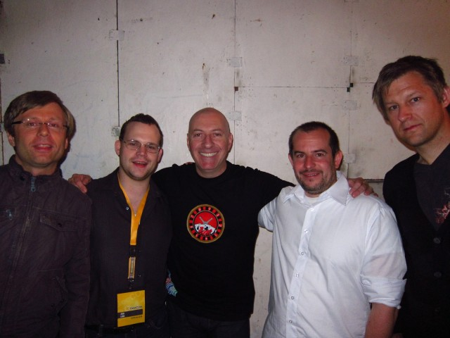On the final day - Saturday - Heinz (and son Max), Emmanuel Bernard and I took a tour of the Za Kapane mountains - and the region surrounding it. What an amazing tour! We also took an impromptu boat trip, and floated downstream on a river bordering Slovachia on a wooden raft / boat for a few hours. I'm a throughly crispy critter at this point -- I burnt in the sun and am now watching my skin turn into flakes. This was very good fun and the conversation even greater. We then toured the regions specifically, stopping in markets, at castles, and at other geological oddities like a mountain that resembled a sleeping man. As the tour guide - Carolyna - predicted, I was asleep in my seat as we returned home.
Emmanuel (a French speaker) and Heinz ( a German speaker) both speak impeccable English, and it always depresses me that I've let my language skills fall so far behind while they do so well in so many other languages!
Several people asked me about the code to my university talk, which was a walking tour through all of Springdom. It introduced core Spring and the advanced component model underneath, AOP, and the proxy facilities, it introduced Spring's support for data processing and backend architecture (including JDBC, JPA, Hibernate, various NoSQL options, batch processing, event driven architectures, messaging, integration, and services), Spring's support for web applications including rich clients and web clients (including Spring @MVC - both standard HTML and REST, Spring Flex, Spring Mobile and Spring Android) and it introduced the world of Spring in the cloud. The code is here and I'll put the slides up as soon as possible and tweet it from my Twitter handle @starbuxman.
After the Geecon conference, I took a trip to Lodz (pronounced, I learned, as "wooj"), in Poland, to visit a friend of mine (who I know by way of my mother's online bridge tournaments). I spent a few wonderful days there surrounded by truly wonderful people. I can't possibly hope to relay all the great experiences I had there, but I will share one. I was asked to talk to a young man of 13 years - my host's nephew - to encourage him in his computer studies. I reluctantly obliged and sat with him. The conversation was moving pretty well, he explained that he was trying to learn Java, and that he loved the new Android mobile phones. I asked him how he was proceeding in his Java studies, and he trotted out Thinking in Java, in Polish! I asked him which phone he most fancied (that, he later explained, he was saving up to purchase) and he responded that he liked the Google Nexus S (which I both have and love!). I materialized the iPad I had in my backpack and he was uninterested, fascinated more with the Nexus S. I asked him to bring out his laptop so I could help him get setup to program in Java. He rebooted and - this is the part that kills me - he already had Ubuntu installed, but was still taking his first steps and hadn't quite figured out how to get on the internet. Amazing! What a kid! I think - and you can never tell him this - that I emerged from that discussion more inspired than he was. What a wonderful experience.
I was a curious kid, growing up, and I owe any success I've had to this curiosity. I was programming very early in my life, and this was fortunate, because it's empowered me. I've heard it said that there will be two types of people -those who consume computers, and those who control computers. I'm privileged, I think, to be among those who can control computers. I'm excited by this kid's potential - indeed, by all of our potential.
After Poland, I was then off to the Spring S2GX Forums in Amsterdam and London. I'll cover that trip, however, in another post.
A Script for Retrieving Wayward OS X Windows
21 April 2011
Dear Lazy Webs,
I just had to unplug my secondary monitor and follow the procedure outlined here to get a wayward OSX window back on my display.
Is there a better way?
So Close, but... So Far
22 March 2011
Started today pretty impressed that Interoperability @ Microsoft was a sponsor at EclipseCon, which kicked off today. So, score one for community and interoperability. Then, I see that Microsoft is suing Barnes & Nobles and others for their use of Android in their tablet environments. Huh. They almost went an entire day without being ... Microsoft. One for the history books.
The Mystery of the Indexer Segfault in Eclipse CDT, a True Story
18 March 2011
I just hit a good 'ol fashioned segfaulting bug!
For reasons I'm not proud of, I had cause to write some C++ code. I downloaded Eclipse CDT (And before some sadist comes along suggesting I should've stuck with vi or butterflies, I've tried just about every C/C++ environment out there. I'm one of those guys that just doesn't understand writing C or C++ code without an editor. I'd sooner write Java than C or C++. Far too many things that can go wrong, it seems.)
I downloaded the latest one based on Eclipse Helios, installed it and then created a new C++ project (File > New > C++ Project > Executable > Hello World C++ Project). As soon as the Eclipse indexer started churning, Eclipse suddenly just disappeared! One second, I'm looking at Eclipse, and then a blink later, I'm staring at my computer Desktop! The darned thing had segfaulted on me! I triaged the droppings it had left just before it died - here are the salient excerpts of the log:
#
# A fatal error has been detected by the Java Runtime Environment:
#
# SIGSEGV (0xb) at pc=0x00007ffc8537f61e, pid=412, tid=140722453255936
#
# JRE version: 6.0_24-b07
# Java VM: Java HotSpot(TM) 64-Bit Server VM (19.1-b02 mixed mode linux-amd64 compressed oops)
# Problematic frame:
# V [libjvm.so+0x29861e]
#
# If you would like to submit a bug report, please visit:
# http://java.sun.com/webapps/bugreport/crash.jsp
#
--------------- T H R E A D ---------------
Current thread (0x0000000040530800): JavaThread "CompilerThread0" daemon
[_thread_in_vm, id=422, stack(0x00007ffc7fc69000,0x00007ffc7fd6a000)]
siginfo:si_signo=SIGSEGV: si_errno=0, si_code=1 (SEGV_MAPERR), si_addr=0x000000000000000d
Registers:
RAX=0x0000000000000000, RBX=0x0000000000000005, RCX=0x0000000000000000, RDX=0x00000000d8000000
...
Register to memory mapping:
RAX=0x0000000000000000
0x0000000000000000 is pointing to unknown location
...
RDX=0x00000000d8000000
{other class}
- klass: {other class}
RSP=0x00007ffc7fd671e0
0x00007ffc7fd671e0 is pointing into the stack for thread: 0x0000000040530800
"CompilerThread0" daemon prio=10 tid=0x0000000040530800 nid=0x1a6 runnable [0x0000000000000000]
java.lang.Thread.State: RUNNABLE
...
RSI=0x00007ffc85a840d0
0x00007ffc85a840d0: in /usr/lib/jvm/java-6-sun-1.6.0.24/jre/lib/amd64/server/libjvm.so at 0x00007ffc850e7000
...
R9 =0x0000000040534d90
0x0000000040534d90 is a global jni handle
R10=0x00000000404f5790
0x00000000404f5790 is pointing to unknown location
...
R15=0x0000000000000001
0x0000000000000001 is pointing to unknown location
Top of Stack: (sp=0x00007ffc7fd671e0)
0x00007ffc7fd671e0: 0000000000000005 000000004080b200
...
Instructions: (pc=0x00007ffc8537f61e)
0x00007ffc8537f60e: 48 89 fe 0f 84 2e 01 00 00 4c 8b 05 8a 13 83 00
0x00007ffc8537f61e: 8b 53 08 41 8b 48 08 48 d3 e2 49 03 10 8b 4a 18
Stack: [0x00007ffc7fc69000,0x00007ffc7fd6a000], sp=0x00007ffc7fd671e0, free space=1016k
Native frames: (J=compiled Java code, j=interpreted, Vv=VM code, C=native code)
V [libjvm.so+0x29861e]
V [libjvm.so+0x296c0b]
...
Current CompileTask:
C2:1110 org.eclipse.cdt.internal.core.dom.parser.cpp.CPPASTFunctionDeclarator.postAccept(
Lorg/eclipse/cdt/core/dom/ast/ASTVisitor;)Z (97 bytes)
--------------- P R O C E S S ---------------
Java Threads: ( => current thread )
0x000000004129e000 JavaThread "Worker-9" [_thread_blocked, id=781, stack(0x00007ffc623e6000,0x00007ffc624e7000)]
...
0x00007ffc79ad8000 JavaThread "org.eclipse.cdt.internal.ui.text.CReconciler" daemon [_thread_blocked, id=760, stac My many years of experience have helped me in these situations - they inform my professionalism and abiity to react decisevly and appropriately. It is imperative that one keep is cool when things don't work out as planned.
So, I sucked my thumb, all the while whimpering a little. I mean, c'mon! Somewhere in the millions of lines of Linux source code and the entire 30+ million lines of Eclipse source code was a bug, actively working to ruin my day! You'd cry too if you just thought about it a little.
But I had one last defense before the false recourse of sticking Eclipse itself under a bugger (and, how I would've done that remains unclear; I couldn't very well have used Eclipse CDT to debug itself and the interactions between Eclipse CDT and the native code in the JRE!). I knew that I could ask my old pair programming pal, Google! I then started scanning looking for unique, repeatable information (i.e., something that would make a good, precise Google query.). At the bottom, I found "org.eclipse.cdt.internal.ui.text.CReconciler," and away I went! I asked The Google about any issues with that class in Eclipse CDT, and was given this Eclipse forums link. That eventually led me to this bug report. That is where I found a workaround. It didn't quite match my situation, but the fix was the same: add -XX:-UseCompressedOops to the end of my eclipse.ini.
So, I hope this blog has helped you avoid this particular bug. It'll probably be fixed soon, but my pain remains. The worst part about all of this? I did all that work just to end up in a position where I could write C++ code! That's like... helping the Dentist look for his really big drill so he can give you a root canal!
Meh.
Hot to Retrieve Your Application From Google App Engine
12 March 2011
Sometimes, just sometimes - once every 5 years - I need to reverse engineer my own binary because I've either FUbar'd the code or the code is lost to me. Don't care to explain why the latter is true this particular time, but it is true. I need a built version of an application so I can run it through a trust Java Decompiler like the trustworthy JAD tool. JAD tool hasn't correctly reverse current Java code since Java 1.5, but it does come close and it's far easier to simply clean that up (you can see the structure of the code, even if it isn't immediately obvious what to do to get it to compile again).
In my particular scenario, my deployed Spring application lives on Google App Engine. So, at least it's safe. A bit too safe, unfortunately. I didn't know how to get a copy of the binary for my own purposes from Google App Engine. I did some Googling and found some documents that suggested a fix - use the Google App Engine's SDK tool appcfg - to download the deployed source. Only catch was that the documents describing the tool were for the Python SDK, not the Java SDK. I looked at the Java SDK and even tried running the command as described in the Python documents and got nowhere. So, I cheated. I did some more Googling, and by this I mean I simply contacted my friend at Google. He pointed out that I'd already had the answer: use the Python SDK to download your Java application!
So, if you're on Google App Engine, and if for one reason or another you obliterate your only copy of the source code and if you want to work against a deployed binary (a very specific situation, sure, but it could happen to somebody else besides me... one day!), then run the following command:
./appcfg.py -e $YOUREMAIL@gmail.com download_app -A $YOURAPPID $NAME_OF_FOLDER_TO_WRITE_THE_RESULTS_TO
Getting Started with Various LAMP Languages
09 March 2011
A friend of mine pinged for some good bootstrap content on various technologies, namely Perl, MySQL, PHP, Python, Linux, C and C++. I learned (or, tried to... I'm convinced I'll never understand C++ and Perl) all of these different things over the years and so my knowledge is either outdated or incomplete. Nevertheless, I figured some of it might help others, too, so I'm reprinting a cleaned up version of my response email here. This information, of course, reflects my biases and experience and, except Perl, reflects professional experience in some form or another.
Perl: Never. ever. use. Perl. I don't know it (couldn't seem to sit and learn it with a straight face. It made me anxious), and can't recommend it unless you're a hard core system administrator who doesn't know Python, Ruby, C or Bash. It's horridly unreadable to all but the most exacting of eyes. It's been stuck at version 5.x for the last 10+ years. 6.0 has been "in progress" since 2001, code-named "Parrot." When Parrot becomes real I could easily see taking it on again.
PHP: it's a dead simple language - I don't know that there's a good introduction to it since I learned it when it was at PHP 3 from the early 2000's. (It's the 5th language I learned, after Java, C, Python and JavaScript). I tended to dislike the language at 3 and 4. 5 seems markedly improved, though I haven't used it since 4. The community's active and in agreement about its strengths. Typically, it lives inside a web server (Apache, Ninx, Lighttpd). It has no built-in modularization mechanism besides classes - no name spaces and compilable unit, so you end up sharing source code. The latest and greatest is PHP 5.3, which means that 6.0 isn't out yet. Most "extensions" to PHP are written in C, not PHP, presumably because it's not fast enough, or can't be used to manipulate enough things to achieve the extension. PHP does have PEAR (PHP extensions, libraries) and PECL (C extensions), last I checked, to provide a way to bundle standard classes and binary extensions. If you want to do core web programming, then PHP's an OK way to go. I'd still argue for Java (or a JVM language, like Groovy or Scala), Python or Ruby on Rails though. Sorry I can't help you learn it - it truly is easy, though. Google for tutorials. The original language was little more than a macro processor, and following its evolution was dead simple. Most of the object-oriented features in 4 and 5 were approachable given my background in Java, so that came naturally, too.
C: C is markedly more difficult to learn than PHP and at the same time much friendlier for the simple things. (Brian) Kernighan & (Dennis) Richie wrote the introduction to C, back in the 70's. People still refer to the variant of C as "K&R," or they refer to a particular standard. C99, for example, is the standardized version of C that came out in 1999. I only know "C99"-ish C, not proper "K&R" C. I only write C when I'm trying to glue stuff - typically operating-system specific stuff - together: Java and Windows, OSX, or Linux, via C, for example, or Python and something else, via C. I rarely have a use case for a full, stand-alone C program, if I'm honest. I almost always write modules that use C. C has no library - just a few standard types and the very, very loose language itself. So, the language itself is very easy, if a bit useless. You'll need to bind to something - either to your operating system (i.e., through POSIX or some additional APIs, or to some other library) to do anything. I've only met one person I'd call a "master" at C. To learn C, I learned by Googling and spending lots of time looking at Linux sources (sources included with Linux, not only the source for the Linux kernel itself) and so on. Check out SourceForge or Github.com.
C++: I tweeted recently that Herbert Schildt's now outdated C++ book was available for free download, which you might try finding. I think it was on MSDN (the Microsoft Developer Network). I learned C++ from Bruce Eckel's amazing "Thinking in C++" back in the 90s. He also wrote "Thinking in Java," which I loved so much so that I wrote in to him and gave a positive reader comment back in 2001. My comment is on one of the few pages on the inside front cover of his book, book under "reader comments" to this day ;-) He used to make the books available for free download, which I suspect you could still find if you Googled. Otherwise, you can buy the two volumes of it on Amazon. In college I also read "Starting Out With C++" which was... lame compared to "Thinking in C++," but it's also thorough (and shorter!), so it might be a good intro-read to ramp you into it. As with C, but to a lesser extent, to make use of C++, you need third party libraries since C++'s core standard library is kinda crap compared to Java or .NETs or Pythons, etc, so one popular choice is to use a platform abstraction like Boost, or Apache Portable Runtime (APR) or Netscape Portable Runtime (NPR). Some good books on Boost/APR that I often refer to these days when I've (rare) occasion to write C++ is "Beyond the C++ Standard Library" and "Cross Platform Development in C++." The first introduces Boost, the second introduces ... APR and a lot of other stuff. All that said, C++ is not as universally used (or even close to as universally useful) as C, and it's far, far, far, far more complicated than Java or C. I would avoid C++ if possible. The only reason I liked C++ is because I then understood why Java was an improvement.
Linux: I have no good book on Linux to recommend, only several that all helped fill in parts of the puzzle: Red Hat Linux Administrators' Handbook, O'Reilly's UNIX Power Tools, Practical MythTV, EXTREMETECH "Hacking Ubuntu", EXTREMETECH "Linux Toys" I and II, the "Official Gnome 2 Developer's Guide," etc. Of course, with this one I was lucky to have a talented Linux ninja - Mario Gray) - to really push me into it and make sure I didn't have a chance to escape until I'd seen everything he wanted me to see. By then, I didn't want to escape. Linux worked wonderfully. ;-)
MySQL: MySQL's dead simple. sudo apt-get install mysql-server-5.1 on Ubuntu Linux, and then follow any tutorial on the internet. It's a a database with 3/4 of the features of PostgreSQL and Oracle. It's also a ...scary open source project at the moment, because of all the politics surrounding licensing. MariaDB, MySQL, Drizzle, Percona, etc. I know Google has patched it over the years to suck less. If you need scalability and speed, use a NoSQL option. If you need features and an amazing, open-source database, use PostgreSQL. If you need a little bit of both AND commercial support, use Oracle, or the EnterpriseDB PostgreSQL build. Don't use MySQL unless you can avoid maintaining it. Amazon and Google App Engine for Business provide MySQL-like databases for their clouds, for example.
JavaScript: If you know absolutely nothing about JavaScript, then Webmonkey, formerly part of Wired.com, had Thau's Javascript Tutorial. That's how I learned it back in 1997. Don't let the 2010 date fool you, that tutorial's almost as old as the net itself. I learned it on IE 4 and Netscape 3 or 4. Since then, webmonkey.com shutdown and was sold, and then brought back to life after a few years shutdown. So, that tutorial is old content on TWO different versions of webmonkey.com! Since then, I've just read other people's code or wrote code and used Google for answers to things.
Python: Python was one of the easiest languages to learn since it was designed to be easy to learn, and, if I recall, Guido van Rossum (Python's creator) had experience with ABC, a learning language, which influenced Python's creation. I got my first look at Pyhon in the late 90's, or early 2000's. I think Bruce Eckel, again, mentioned Python in one of his books and that was enough to catalyze me to learn it properly. It's not hard to get going quickly, and for many years I kept it as my in-my-backpocket language, to do real work when Java might've been too complicated or if the task leant itself particularly well to Python's strengths in leveraging operating system-specific tools and APIs. Python has a large part of the POSIX APIs almost directly exposed through Pythonic APIs, for example, so your C skills come in handy there. It's a very good glue. I haven't really done more than played with Python's more recent web-tier support (and WSGI API, which provides the gateway interface between a web framework and application to the underlying web server, in much the same way servlets sits on top of the webserver, but below Java-based web applications.). I did have a pretty good experience with Zope (and the Plone CMS), which sort of predates all the current crop of Python web-framework killer-apps like Django and Turbogears. I have an older version of O'Reilly's "Programming Python," and I saw that it's since been updated, but it's huge - and as much a tutorial as a reference.
So, that's a lot of how I got started. I'd of course be interested in any suggestions since a lot of this is outdated (At least, I hope it's outdated and that better texts have come since!).
Dependency Injection and Inversion of Control Have Been Commoditized
06 March 2011
The world of enterprise Java looks very different than it did 10 years ago. 10 years ago, I started following the news, the open-source projects, etc. In essence, I joined the "cult" of Java and haven't looked back. Even as I write Groovy and Scala code, I still feel a part of that cult today.
The marked progress hasn't been more apparent to me than today, when I read that Apache Excalibur had been retired. Apache Excalibur, for those of you who weren't lucky enough to watch the IoC and DI wars in the early 2000s, is an IoC container that's been around forever. It hosted Java components that could be defined using the Avalon framework. So, Excalibur was a container with type contracts, like an EJB server was (up until November 2009 when Java EE 6 came out) to EJBs, not a POJO IoC container as you'd expect today. It was basically a way to build and manage enterprise components and also take advantage of the Avalon component lifecycle and services. I remember looking at Excalibur in 2001 or 2002 and being very excited by it. Same with the Pico Container which also is still alive and kicking today, to my surprise!
So... was anybody using Excalibur today (besides Apache James, the open-source Java e-mail server, which I'm not even sure still uses it and which I quite like as a test e-mail server)? Is this a market segment I've just been obvivious too? I've of course been oblivious to community trends at other big events, too. When EJBs first came out, I got suckered by the press and marketing behind it and thought it was going to be a fantastic tool. It took me a year or so to get to a point where I simply didn't care anymore about my job options, I refused work in EJBs! I think the community also had the same reaction - at one point, we all sort of realized nobody else liked EJBs, either! I became a huge fan of XDoclet during this period, and an even bigger fan of Ant. I no longer have 80 hours a week to spend wrestling with code that could be written in a fraction of the time in .NET or Python. I no longer like Ant, or XDoclet, of course. For that matter, it took me a long, but happy and oblivious year to realize people were employing JSF 1.0. I didn't think anybody would use JSF if things like Apache Tapestry and, later, Wicket and Echo and GWT were there. So, clearly, I've got a history of bad predictions. Sometimes, when a technology or trend just doesn't make any sense to me, personally, I tend to take for granted that others won't use it, too. Anyway, when the IoC/DI competitions started flaring up, I paid attention because I was definitely looking for an alternative to the then current stack.
Things are very different today. Dependency injection is commoditized today - everyone uses the Spring framework, and some also use Guice or CDI. Naturally, I'm very biased (I work for SpringSource), but I'm pretty sure you'll find that's true too. You might check job listings, or informally just ask people if they use IoC or DI, and if so, which container implementation.
I would argue that Spring has been, from day one, a very good IoC/DI container. In the beginning, there were arguments about pure-play IoC, and how one container supported constructor-injection, and another supported method or property injection. I remember when Apache Hivemind (a project that grew as an offshoot of Howard Lewis Ship's work building Apache Tapestry 4.0) made its debut and only supported interface based injection, all the while giving us novel ideas like factory methods and method-based injection. Spring didn't pick favorites or impose philosophies - it supports all of those things! Spring goes out of its way to be as straightforward and flexible as possible.
This too doesn't matter, I think. Conceivably somebody could simply build all of these things (and I'm sure many have) pretty easily.
So, while Spring's an excellent DI and IOC container, I hardly think everyone adapted it because of that alone.
Spring won because it offered a component model and a supporting ecosystem of libraries and frameworks that were built from the ground up to support clean, IoC-centric, POJO-centric Java code.
Core Spring (and everything you'd need to have a competent, pure-play IoC container) all lives in 1-3 .jars, depending on which parts you want and whether you also want the component model that comes with it.
It's all the other stuff that you can do with Spring that has made it a crucial tool in every developer's toolbox today. These frameworks deliver real value to customers because they simplify or enable outright solutions that they couldn't otherwise build. I think this is more true every day as the industry continues to grow and evolve, and Spring tracks it in lockstep, providing support for all th emerging trends and technologies. The cloud and big-data are two key areas where the players and - indeed-the game itself is changing so fast that no standards body could ever hope to do a good job standardizing there.
Anyway, enough of that rant. Just my two cents, as always. If you weren't paying attention to IoC or DI, then you don't know what you missed and this post won't be of much help ;-) It's interesting to see that today there's a very active debate about IoC and DI in both the .NET and ActionScript communities. The discussion there feels very simialar to the intense debates we had in the Java world 10 years ago. And there too, the winners will be the ones that deliver the most business value beyond simply supporting the "dependency injection" pattern.
Rest in peace, Excalibur.
Birthday week 2011
26 January 2011
Well, it's that time of year again! My dad's birthday, my birthday, and my favorite little 3 year old's (My buddy's little girl Makani - she's a whopping three years old already) birthday! I'm taking a trip to Portland, Oregon with the misses this Friday to visit dad and see the family. I'm really looking forward to that. Nothing quite so wonderful as perpetually, if only slightly, damp trees and coffee. :-)
At "work" at SpringSource (where I spend the largest chunk of my day and usually the happiest part, too!) we just posted "Green Beans: Getting Started with Enterprise Messaging in Spring." I had a fairly big hand in that and feel like it'll be a very good introduction for a lot of people to two of the most important tools you can have in your arsenal, AMQP and JMS. In my humble, bordering-on-insignificant-opinion, the Spring support for JMS has always been second to none. It's easier to use JMS from Spring than it is from Java EE or anything else by far, and it has been for most of the last decade. It's way easier to use AMQP-based brokers from Spring than anything else! Check it out - add that extra asynchronous kick to your architecture and code!
For my new year's resolutions, I decided I needed a hobby (err, besides coding...). I sat down and wrote up a list, like this:
- work out and diet. Aim to lose 10 lbs a month. This was basically a fear-based reaction. It reflected a lack of resolve in last year's resolution, which was to gain 1 lb a month. I was told to never negotiate out of fear! Don't negotiate with terror(ists)! Choosing this would amount to an affront to the basic liberties I've long held dear.
- Read comics more. I used to read comics a lot as a boy, and look how I turned out; I'm fi... well... eh, I could be worse!
Anyway, after giving option one due reflection, I decided for option two, because ... well, who wouldn't? So, for my birthday, my girl bought me (sssh! She doesn't know this yet, it's a surprise...) a Marvel Comics digital comics subscription. All told, it was like $60.00 for armchair-easy access to all the comics you could ever want to read from the last... at least 10 years (I missed a lot of stuff in the last ten years!) as well as new stuff. The only gripe is that it uses Flash to display the comic books on the screen (which isn't normally something I care about one way or another) and it doesn't have an iPad app. It works ok on my Google Nexus S, and of course my Linux Book Pro works perfectly, but they're of clumsy form factors. I want it to work on the iPad. I'd even pay an extra ten dollars.
Maybe next year...
And We're Off! 2011's Moving Way too Quick!
24 January 2011
And we're off! The new year has been moving exceedingly quickly (I can't beleive we're already almost done with the first month! "Stop the world, I want off!") I don't know if you guys noticed, but SpringSource has been putting out new educational content (and a corresponding amount of code that quickly overwhelms any attempt at providing educational content..) on the SpringSource.org web site. I have been trying to publish two weekly-ish (we may miss a day or two or a column or two) "columns." One is called "This Week in Spring," which details all the new stuff in the community related to Spring and/ or SpringSource. If you've written a cool Spring tutorial or read a blog post that had what you needed to get going with Spring, let me know! Here's an example of last week's "This Week in Spring." The other "series" I've been working on (with occasional guest-scribes) is our series of educational, back-to-basics posts called "Green Beans."
At SpringSource R&D, we've been racing like crazy with new stuff! Spring Data for NoSQL support, Spring Hadoop (which provides integration with Hadoop), Spring Integration point releases, Spring Batch, Activiti support, Spring AMQP, Spring Mobile (which, at the simplest level is Spring MVC support for mobile device content negotiation), Spring Android (support for consuming RESTful services from Android devices using Spring's RestTemplate) etc., are all in active development! I've missed a lot, of course, and this doesn't even include the very impressive Spring core 3.1 changes that are fast nearing completion! We've got so much code we don't even know where to keep it all! We have a presence on github.com/SpringSource, on our own git.SpringSource.org and of course the older (http://src.springsource.org) Subversion tree where Spring classic (among others) is still hosted. Users are, of course, always encourage to contribute and feedback.
So, this is why I'm not doing a good job at keeping this blog current. Come visit me at on the forums or in the blog posts!
Springing Forward
02 January 2011
I can't believe how quickly things have come and gone. I thought 2009 was great, but 2010 year no doubt takes the cake! Now that we're all on the other side of the new year, I thought I'd take a quick look at my year (and my decade) and talk about the Spring framework.
Last decade started strangely for a lot of us here in the United States. We saw a very strange election, the source of much discord in the political world. Scandalous though that might have seemed, it would all seem so fleeting when two planes crashed into the twin towers in New York City, New York. The reactions of a panicked country seemingly under siege would change the landscape over the next several years. The ramifications are still very pronounced and felt, I fear, in every corner of this tiny little planet.
I started the decade, and my professional career, wading through the dot-com boom and subsequent bust. I've been fortunate to have worked with a lot of startups over the years. I've also worked in stodgy, established corporations. I feel like working at a bank is the easiest way to fall through the cracks in life. It never ceases to amaze me that there are projects in some banks being started this very day, January 1, 2011 (1/1/11..!) using Struts 1.
It has been my experience that startups have the blessing - and burden - of having no room for failure. I have spent a lot of time making things work that just shouldn't work. While I've always been best-practices-oriented, I was leery of any gospel according to the vendors. I once had a manager utterly terrorize me because I was using EJBs when he had PHP script kiddies that purported to be able to deliver a huge function of the project done by "just downloading a script!" This taught me a valuable lesson. Looking back, I suspect the manager's claim was probably genuine, and I feel like such a heel for blindly relying on the vendors' claims that EJBs were the way forward, the future. I never could convince myself that the PHP way was the way, but there was no denying the obvious productivity gains for many common tasks. There was a time when I was looking pretty seriously at moving to .NET because it promised radically improved turnaround times. One of my main reservations about the then-nascent .NET ecosystem was the lack of open-source. I've always worked hard to use open-source if I could.
The Spring framework came along just in time. Engineers that survive in startups tend to be scrappy engineers who are interested in results, not process, and who aren't in it for the 9-5 shift, but for results. The Spring framework is open source; it closed the gap between .NET and Java by providing niceties like declarative remoting, declarative transactions, etc; it also helps further best-practices, not hinder them. I've been a true believer in the Spring framework from day one.
In early 2005, I moved to Tempe, Arizona to help start a company. The venture was a victim of the wayward economy when the housing bust hit. While I made some great friends, I was glad to return to Los Angeles in March of 2009.
Early in 2010 I had the fantastic good fortune to join a company here in Los Angeles called Shopzilla - they're the group behind BizRate.com, BeSo.com, Shopzilla.com, and tada.com, each of which gets a staggering amount of traffic. They use the Spring framework extensively and feature an excellent engineering environment as well as one of the best workplace environments in the business (arcade, lounge, free lunch, great perks, gym, etc., etc.). There are many brilliant people at Shopzilla. I think it is our natural tendency to approach strange codebases with trepidation and a sense of, "well, I could do this better!" and a lot of times, unfortunately, that instinct is on the money. I never felt that way with the large swaths of code I encountered in Shopzilla's codebase.
I've been in the unfortunate position in my life of having to work at places where engineers were begrudged unit tests; where code and projects were wildly inconsistent, or antiquated across projects; where there was a strong, undue sense of code ownership and code was walled off to all but two engineers (who had twelve weeks off yearly and were busy planning their retirements). Shopzilla was the antithesis. It was... wonderful to be completely unencumbered by management and bureaucrats.
I loved Shopzilla's earnest maximization of the Spring framework.
Let me try to explain. If you'll permit a generalization, engineers at startups can't afford to trust, anything. No time, after all. You hope that people already appreciate the benefits of code reuse, of course. I wonder if those people also realize the responsibility that comes with reuse. If something breaks in that code, its up to you to see it gets fixed. Keeping a stack as open-source centric as possible facilitates fixes. Broken code in a server is bad, but try proving it, let alone fixing it, without the source code! Support contracts might help there, but rarely as quickly as you need it to. It takes courage to use other people's code, and it takes courage to trust and verify promises extended by that code. It takes skill to integrate - and to care - about the big picture system, and not just the individual moving parts, too.
That is my conceptual framework when approaching projects. I use the Spring framework because it integrates with many different technologies and insulates users from the idiosyncrasies between various technologies through a unified component model. It levels the playing field. Depending on the stack, there are any number of places one might have to tailor a project 's behavior to the requirements of a system. Logging frameworks, service tiers, web service tiers, caching frameworks, web (including core APIs like Servlets), workflow engines, integration engines, processing grids, batch processing frameworks, job scheduling frameworks, etc., all have their own notion of a "component" in that domain, and each one of them expects you to work in terms of that component model, ignoring the uniformity and conventions you'd hoped to establish across your code base.
Spring opens the doors to all these technologies (and untold many others) and lets you work in terms of your domain model. The engineers behind the Spring framework have plumbed the depths of these various frameworks and done the legwork to make it easy for you to integrate them in a manner consistent with your codebase. Where they've had to, they've fixed parts of these projects, and provided less risky paths for integration. Often, this process is as simple as dismantling the custom component model in place and letting people think in terms of plain 'ol Java objects (POJOs), avoiding the inconsistent, ever-varying, project-specific configuration files.
Spring's power - and the reason why I personally find the very notion of some other pure play IoC container like CDI as a "competitor" to Spring to be laughable at best - is its rich, unified libraries and the platform that it provides through its integrations. Spring provides a clean, consistent metaphor for approaching problems. It provides libraries that are idiomatic and that work wonderfully together, and it provides services that can be weaved in a clean way across an application. These libraries are often layered. They present the 90% case solution first, but provide hooks through the use of things like strategy interfaces and callback methods should you need to tailor the behavior.
The Spring framework is a very good example of the open/closed principle. It is telling that very few people even know about all of the Spring framework's extension points; most people don't need them. For 90% of the use cases, Spring makes the impossible easy, and provides the flexibility to tackle the other 10%. Where possible, Spring makes facets of an application invisible - things that used to require an API. Where there is still an API dependency, Spring typically ships with a cleaner API that insulates you from it or simplifies it.
I mention all of this because Shopzilla's architecture and applications - as much as possible - lived in the 90%; things were as simple as possible thanks to Spring and the incredible diligence of the engineering team. Shopzilla really excelled in all the little 10% spots, too. They used or extended everything, taking nothing for granted. Shopzilla had a custom Spring MVC view resolver and view templating format, for example. They have a custom JMS message listener container that was geared to batching in the style of the Spring framework's message listener container. They made ingenious use of monitoring, Spring's amazing AOP support, JMX, and various open source projects to handle terabytes of logging. The entire federated architecture across several different teams used REST and a standard, Maven controlled archetype to keep projects standardized. In essence, as part of a engineering-wide culture of consistency, and code reuse, Shopzilla had built upon and extended the Spring framework, and it underpinned everything they did. Shopzilla integrated technologies and published reusable solutions for common problems so that everybody benefited in the same way that the Spring framework itself does.
Shopzilla's amazing, and I would recommend it to anybody if you're looking for an amazing company to work for.
So, when I was approached to join SpringSource as the Spring developer advocate, I was at once sad to leave Shopzilla, but elated at the prospect of playing a part in this technology that had so well served me for the better part of the last 8 years. Leaving Shopzilla was painful, of course, but I had to see this opportunity through. I have a deep respect for SpringSource and the committed engineers there who - even as I write this, on the last Saturday on New Year's weekend - are sending emails about developments in the projects! I've been with SpringSource since August. SpringSource is a worldwide organization, so no matter what time of day it is, there is somebody committing something awesome, somewhere, in plain view of the world. If I'm not careful, I forget to leave my desk trying to keep up with all the exciting stuff!
Spring's made my decade much more pleasant than it might've otherwise been. If you'd told me we'd have something like the Spring framework in 2000, and that I'd be privileged enough to work with the people behind it, I would have dropped my CORBA and EJB books on your feet. It would have seemed so cruel to joke about something like that.
It's been a fantastic decade, and a particularly fantastic 2010, and I can't wait to see what comes next.
I hope you had a safe, joyous New Years, and I wish you a fantastic new year, and a new decade.
Devoxx 2010
23 November 2010
I've just returned from Devoxx 2010 where I manned the SpringSource booth and talked to members from the community and gave a talk on the latest and greatest in the wide world of Spring. It was a lot of fun, but I'm glad to be home! There's a bit of downtown for those of us in the states as we celebrate Thanksgiving. Looking forward to catching up on some work!
Then, I'm off to speak at the Salesforce.com Dreamforce conference. I'll be giving an intro to Spring for the busy Force.com developer with my friend Quinton Wall, the SalesForce.com evangelist. This talk will be useful for developers interested in moving to the VMforce cloud, coming from a Force.com background. The event looks to be very interesting (beyond the incredibly cool technical sessions, I hear Bill Clinton's giving a keynote, and Stevie Wonder's the musical talent... not too shabby!), so don't miss it!
The H2 Embedded Database
23 November 2010
I've been making heavy use of the H2 database of late. H2 represents the next big idea from the mind of the gentleman who created HSQL, so, of course, it's a rock-solid alternative to that.
I used it for my sample code in my blog post on the SpringSource blog Green Beans: Putting the Spring in Your Step (and Application)
a few weeks ago and it worked really well.
Ultimately, the example demonstrated Spring's fantastic support for creating embedded databases through the jdbc namespace. Using the namespace, you can create an in-memory, embedded database instance, feed it setup SQL scripts, and then reference it as a datasource, all in the following 3 tidy little lines:
<jdbc:embedded-database id="ds" type="H2">
<jdbc:script location="classpath:setup.sql"/>
</jdbc:embedded-database>
I mention this all because it'd be easy to think of H2 as only an embedded database. But it's not. I've not used it in anger myself yet, but recently I've seen it used in several places I wouldn't have imagined at first. H2 itself bills itself as the most advanced open-source database out there (not just of the Java, or embedded databases, but all of them!)
I'm a big believer in the power of a good workflow / business process managment system, and support and use Activiti which is an Apache 2 licensed open-source BPMN 2.0 implementation. I'm also a committer to the project on the SpringSource side, along with the unnaturally brilliant Mr. Dave Syer, but my knowledge of it is mainly from using it as a consumer. Activiti stores process state in a database (this is how it's able to passivate processes over long expanses of time). The first several milestone releases of Activiti featured exclusive support for persisting process state in H2, and H2 alone. As the project nears 5.0 GA, support for PostgreSQL and MySQL have also been added, but it's pretty telling that initially H2 was and they weren't.
If you spend time spelunking git.springsource.org (and why wouldn't you?), you'll know that it's a veritable treasure trove of code - many of the SpringSource open-source projects are there. Users are also free to create accounts, and clone and manipulate repositories as they like, in very much the same fashion as one might with Github. One particularly interesting project is Greenhouse, which is a reference application out of which many different, great little projects have emerged like Spring Social, Spring Mobile and Spring Android. The application is an event manager for conferences. Most conferences have something like it to let you build a session schedule and be notified of changes, usually from the convenience of your mobile device, like Greenhouse. It too is built on top of H2 which is already in production and available to a non-trivial userbase.
The reason I use it is because I tend to do a lot of things in the interest of exhibition, and nothing beats a readily available, easily installed database. With H2, you simply download it, unzip it, cd bin, and then run h2.sh. Boom, up pops a browser which prompts you to login and off you go! You can introspect your schemas, run queries (the query editor has auto complete and is ridiculously intuitive, and keyboard friendly!) and do basic administrative tasks all from your browser.
So, what's my point? I didn't know much about this handy little database until a year ago and now, increasingly, I find myself reaching for it all the time! Give it a go if you have a moment, as that's all you need. As I've never sat down and done a comparison against my RDBMS-of-choice, PostgreSQL, I don't really know where H2 stands as an alternative, but my cursory sort of uses thus far give me the impression that it'd handily give MySQL a run for its money.
Adobe MAX 2010
30 October 2010
What a whirlwind month! First, Java2Days, then SpringOne, and then Adobe MAX.
I just spoke at Adobe MAX 2010 with my colleague Jeremy Grelle on high productivity Flex applications using Spring Roo. Reception seemed to be very, very good (I'm attributing this to Jeremy, of course). Jeremy's the main contributor and founder of the Spring BlazeDS project from SpringSource. He's also the sponsor for the Spring ActionScript project. Spring BlazeDS brings enterprise messaging and services to Flex and Flash clients. Spring ActionScript provides a clean way of describing IOC in your client-side ActionScript code - it even provides the ActionScript equivalent of the @Autowired annotation on components that are added to the stage.
This year was a very good year to be an attendee. They gave attendees new Droid 2 Android-based phones (I finally made the switch from an iPhone 3GS to an Android device! Yay! The Droid 2 is not the most impressive Android offering, by far, but represents a marked improvement over the iPhone. I was glad to get it. Attendees also received a Logitech Revue, which is a Google TV-based device.
As you might expect from a good conference, there were plenty of great hallway conversations. Look forward to it next year!
Now, however. I'm going to enjoy this beautiful Southern California weekend and look forward to Devoxx
SpringOne2GX 2010
18 October 2010
I'll be speaking at SpringOne2GX this week along with a raft of supremely awesome speakers from the Spring and Grails communities. I'll be delivering a talk about building custom components (mostly, custom adapters) for Spring Integration. There are other talks happening concurrently that, if I weren't giving a talk, I'd want to attend. :-) This year is poised to continue last year's agressive growth in attendance. Besides my talk, I'll be there taking in the talks and chatting with people in the hallways. I hope to see you there!
Java2Days 2010
04 October 2010
Ubuntu 10.10 (Maverick Meerkat) on a MacBook Pro
04 October 2010
I have long used rEFIt to install Ubuntu on a MacBook Pro. Simply install rEFIt as instructed on the site and then install Ubuntu on the newly created partition. No weirdness. Depending on your hardware, you may need to make sure that the Ubuntu installer program uses nomemset. This wasn't the case for me.
This setup lets me have my favorite operating system on (admittedly) fairly nice (albeit overpriced) Intel x86 machines. However, the latest generation of MacBook Pros have caused me no end of grief with Ubuntu 10.04. Ubuntu 10.10, Maverick Meerkat, remies everthing and I'm happy to report I'm running the release candidate of Ubuntu 10.10 on my Macbook Pro as I type this.
Everything seems to be working fairly well. I put this post out to confirm it can work for you on a Mac, and to also point people to this page if they're having trouble getting VMware's excellent VMware Player product working on 10.10.
Spring and the Activiti BPMN2 engine at JavaZone 2010
03 September 2010
I'll be speaking at JavaZone in Oslo, Norway on using Spring and Activiti together. If you want to learn a bit about Business Process Management using Activiti in conjunction with the Spring framework, then this talk is for you! We'll explore using Spring from Activiti's BPMN 2 engine, and we'll explore connecting your business processes to other interesting systems and offloading work using Spring Integration, SpringSource's framework for building event driven applications and connecting your applications to your data and services.
We'll talk a little bit about Spring Integration, but you won't want to miss Spring Integration lead Mark Fisher's talk on Spring Integration either! If you're new to the wide of world of Java configuration in Spring 3, then be sure to check out Costin Leau's talk on Spring 3 Java Config.People may know about JavaZone from their excellent Java 4-Ever trailer or their Lady Java video. If you haven't seen these, then check them out!
Spring for Force.com Developers
03 September 2010
I did a webinar with Quinton Wall, the Developer Evangelist for Salesforce.com and specifically on the VMforce collaboration. The talk went very well (thanks for all the questions and good feedback, guys!) and we have the recorded webinar, code and slides up here. This first webinar was more about introducing developers to the Spring framework, and establishing basic skills to enable developers to use VMforce.com. Stay tuned for the next webinar, coming Sept 9, that will expand on the details of VMForce.com as an opportunity for Spring developers.
(Secure) File Transfer, the Only Way to Fly... err Copy
24 August 2010
I've recently posted a piece on using the file-transfer adapters in Spring Integration 2.0 on the SpringSource blog. Check it out and leave a comment!
My Weekend in Oregon
31 July 2010
My dad Clark, to the left, and my brother, Cary, to the right.
Left: is the view from Detroit dam.
Right: the fish that dad and I caught. He'd remind us that 2 of the largest were his :-)
Left: the capital building in Salem, OR.
Right: a duck crossing. Doubt this is fabled one in the story...
I took the chance while in Oregon to head south a little bit and visit family in Salem, Oregon. I have a lot of family up there on my dad's side. Oregon's a beautiful state, Portland a beautiful city, but Salem... Salem is a beautiful capital. There are things about Salem you'll have to see to believe. The people are nicer, the air - with Oregon being the greenest state in the union - is cleaner. I spent many a summer in Salem as a kid - making the long trek down to Bend for summer activities, enjoying the parks, the forest and - of course - the jam.
This trip felt like coming home again; I got to visit with aunt, uncle, assorted family, brother, and my niece and nephew. Time flies. I was very glad to see my brother Cary and my sister-in-law Sandy, and their family. It's been a few years, I'm afraid. His son, my nephew, is Curtis. His daughter, my neice, is Samantha.
Honestly, these sorts of stories make me feel old. Curtis was a giant! I hardly recognized him! He handily dwarfed both my brother and myself in stature and size. Whatever they feed those kids there, it's working! He has grown into quite a guy.
Curtis took my dad and I fishing on Saturday. He navigated and was the oreseman, guide, baby-sat us city-folk, handled re-baiting the lines and untangling the poles, and he still caught 5 fish (while helping ensure that dad and I each caught 4-5 fish!) It was amazing! I thought I'd seen everything. It was a catch-and-release river, so we didn't keep or eat anything we caught, but had a lot of fun nonetheless.
On Sunday, dad and I head out to Detroit Dam where we spent the early morning hours - 6 AM to 10AM - with a line hanging off the side of the dam fishing. It was as if the fish were queuing, single-file, and then jumping on our hooks.
Next comes my time with my niece, Samantha, now 16 or 17, going on 40. We spent the afternoons watching her play in a city-wide basketball tournament called Hoopla. They cordoned off certain roads in downtown Salem and had groups of all ages play in matches. First, you have to admire a town where they have the initiative to close down major streets to provide such an outdoor, summer time activity for the youths. Second, my niece was excellent! Her team was ultimately eliminated on Sunday, but it was quite a riveting few matches getting there!
I've long enjoyed Salem. It's a small city with big-city folks. I laughed so hard I hurt myself a few years ago when my aunt and I set out for something and she impatiently came to a stop at a street with THREE cars on it at rush hour. She didn't appreciate being dragged out into the rush-hour traffic - a rush hour of THREE cars. She really didn't appreciate having to stop. I poked my head out the window to see why traffic (I use the term loosely) had come to an abrupt stop, and almost fell over. There was a duck crossing!
I look forward to doing it again next year. What a good trip, with great people. And, being from Southern California, I more than appreciated the 85 degree-highs on a Summer day!
Spring Integration at OSCON!
17 July 2010
Whew! Time sure flies!
I've been working 'round the clock of late with my fellow authors Daniel Rubio and Gary Mak to wrap up the writing for Spring Recipes, 2nd Edition (more on that as it goes to press). This book's going to be second to none, folks. Spring Roo, Grails, Spring Integration, Spring Batch, Flex, REST and many (16, in fact!) other awesome chapters to bring you to the wide world of Spring 3. As a user of the Spring framework first and an author second, just trust me when I say I'd be very, very interested in buying this book if I wasn't already entitled to a free copy as an author. I digress. The book - all consuming though it is - isn't even why I'm writing this post!
Mark Fisher - lead of the Spring Integration project and all around nice guy (I'm going to throw in brilliant, as well, just in case you haven't had a chance to scour the code behind Spring Integration and come to that conclusion yourself) has been kind enough to let me contribute some adapters to the Spring Integration project - these adapters are centered around bridging communication between systems normally used by humans and automated systems. We have built support for XMPP and Twitter thus far. More's most assuredly coming, too! Looking into the crystal ball, I see ATOM and RSS playing a big part along with IRC. These adapters round out the support already provided for user-facing services like e-mail.
There's a lot of power and promise here. First, in a system with variable states, XMPP is a very promising technology because - besides being a good way for diffent entities to exchange messages (it is, after all, the backing protocol behind Google Talk and Facebook chat) - it lets you add the notion of availability to actors in your system. Imagine a game, with users joining and leaving the game, or a chat room, or a grid of grid-nodes that may be taken off-line. XMPP provides a natural way of representing availability, which is increasingly important in a system with many fluctuating agents and states.
Twitter, ATOM/RSS and others are important because they let you consume human-synthesized events. Trends, volume, etc, are all interesting metrics that can be very valuable to your business. I can see a lot of power in having a Twitter account that responds to queries or commands - in much the same way as the Smarter Child IM bot work(-s,-ed).
In some sense, these adapters are only the beginning. They let your application drink from the proverbial firehose of events, but what to do with them once you have them? Graph them? Send them to Splunk? Send them through a message broker (and, depending on the volume, which one?)? Why not send them through a complex event processing (CEP) engine like Esper using this fantastic third party Spring Integration adapter for Esper? There, you can can process and analyze these events, and synthesize more interesting, complex events.
If this all sounds interesting to you (and why wouldn't it?), you should check out OSCON next week in Portland, OR. I'll be there giving a talk called the "The Social Enterprise Service Bus." I'll be with some colleagues and friends from Shopzilla, too. If you'd like to grab a beer, ping me on Twitter (@starbuxman) and we'll see what we can do! This is my first time presenting at OSCON, so I'm looking forward to attending some of the other talks almost as much as I am about getting a chance to talk to you guys. Hope to see you there!
Is This Thing On?
16 July 2010
Hello, world! Nothing to see here, simply conducting a few tests of the software. Move along...
Idempotent Queues With HornetQ (or: the 'Last Value Header')
04 May 2010
Often times, a message queue is used as a way to publish "events" to other services in the enterprise. The publish/subscribe architecture decouples clients from the senders and alleviates the publisher from specific knowledge of the consumers of the messages. This, plus the asynchronous nature of a message queue - the publisher does not block while clients consume the events - makes it ideal for publishing events to keep other systems aware of the state of a given system.
Now, let's establish the use case: we want to consume events in a very busy system. In our case, it's possible to receive multiple events. Or, perhaps in your system you've positioned the message queue as a way to deliver commands - "pings" - using the "command bus" pattern. It may - and quite often is - be acceptable to ignore duplicate requests in architectures like these. For example, a "command" message notifying a system that it can being processing a batch of data for the day only needs to be handled once per day, not 10 times, even if 10 different events are published. It'd be ghastly and inefficient to process the load 10x a day. What's required is some way to make message submission idempotent for certain messages - to make them indifferent to duplicate message submission.
Backstory: I've been playing with JBoss' HornetQ a lot recently. It's a
very fast message queue: it recently bested ActiveMQ in the
SpecJMS2007
benchmark by more than 300%!. It is able to perform these feats
because it uses a native, asynchronous IO layer on Linux centered
around the kernel's libaio functionality.
On all other platforms, it's just gosh darned fast, regardless, but
doesn't benefit from the native code acceleration.
So, imagine my surprise when I found out that HornetQ supports something it calls a Last-Value Header - a well known message header that - when the value is duplicated by other messages - causes the submitted message to override the existing message: the latest message with a duplicate header wins.
Here's how code submission to the queue looks using Spring's JmsTemplate functionality:
this.jmsTemplate.send(this.destination, new MessageCreator() {
public Message createMessage(final Session session) throws JMSException {
TextMessage textMessage = session.createTextMessage( ... );
textMessage.setStringProperty("_HQ_LVQ_NAME",
someUniqueStringThatYouSpecify);
return textMessage;
}
});
So, it's often easy to find a business value that can be used to derive a semantically correct, unique key to identify duplicate events. Processing a customer's order with 3 items in the shopping cart at 12:30:30s PM? Build a key combining the 30 second window, the customer ID, the count of items, and the order ID. This provides a service-level mechanism to prevent nasty double submit issues, for example.
You need to enable this characteristic on the queue itself in the configuration files.
In HornetQ there are a few files under the
$HORNETQ/config/ folder that you need to be aware of to
configure HornetQ: hornrtq-jms.xml,
hornetq-configuration.xml, and
hornetq-users.xml. In this scenario, we need to only
modify the hornetq-configuration.xml.
For a queue configured in hornetq-jms.xml
<queue name="dupesQueue">
<entry name="/queue/dupesQueue"/>
<durable>true</durable>
</queue>
... you'll need to make the following changes to
hornetq-configuration.xml:
<address-setting match="jms.queue.dupesQueue">
<last-value-queue>true</last-value-queue>
</address-setting>
Simple, right? So, go ahead, send all the messages you want - only one will remain (unless of course that message is consumed. This only guards against duplicate submissions assuming the messages haven't been delivered yet. Enjoy!
A New Post on Artima.com Called 'SOA, 5 Years In'
26 April 2010
I've just posted a blog on Artima.com called SOA, 5 Years In. In it, I talk about some of the core value principals behind Thomas Erl's excellent Service Oriented Architecture: Concepts, Technology, and Design. Check it out!
The ServerSide Java Symposium 2010 Recap
20 March 2010
I'm in my hotel room thinking about the last 3 days here at The ServerSide Java Symposium. I've had a fantastic time. I gave and/or participated in two talks: one was a talk on jBPM and Spring, the other was participation (representing Spring Integration) in a panel with Jeff Genender (representing ServiceMix) and Ross Mason (representing Mule) on ESBs. I enjoyed that process and enjoyed talking to Jeff and Ross gentlemen to the last. The 400+ people in the audience were invigorating too. Im pretty sure anybody would tell you this year was a welcome, marked improvement over previous years, especially in attendance numbers. It also heralded the introduction of a new editorial lineup, with Cameron Mckenzie taking the lead-editors position. Hes got his work cut out for him, but Im confident hes up to the task.
Rod Johnson gave a "zepo" (zero-powerpoint) Spring / Roo keynote, which was very impressive until it seemed to have failed him at the end. A post mortem revealed that the demo was fine, just a simple error. It was interesting to note that he misplaced his wedding ring and still gave a 99% performance without slides in front of 400+ people! Well done! Spring Roo seemed to garner a lot of attention from the audience and the Twitterati. Matt Raible and James Wards talk on Flex vs. GWT was fun, as expected. Jeff Genender and Keath Hesler both turned in good talks on ServiceMix. Ted Neward and Scott Davis gave their talks to great reception, as usual. Finally, my old friends Reza Rahman, Kito Mann, etc., did very well too. I missed some of the JBoss crowd (Emmanuel Bernard and Dan Allen, notably) this year, however.
It was nice meeting James Gosling, too. Can't help but feel a little in-awe. The final treat was partaking in the festivities, libations, etc., with my colleagues at Shopzilla. Tim Morrow, Senior Architect at Shopzilla, gave a very well received talk about the scale story at Shopzilla.
A Month's Gap And No Explanation
17 February 2010
Hello, world! I've been utterly and completely drowned in lake-busy these last few months. Updates may be a little slow for the next month, too. I've started working as an editor for Infoq.com's Java Queue. Work is progressing apace on my next Spring book, and some exciting things are happening in my personal life pretty soon. Plus, I'm working on an opensource side-project that'll unveil hopefully pretty soon here. Anyway, check out my updates on Infoq.com if you want good old fashioned news, and on Twitter if you want commentary in 140 character chunks. Sorry I can't say more, but I will when I can! If you're going to The Server SIde Java Symposium next month (March 17-19), don't forget to say hi, and attend my sessions!
A Very Interesting Technique For Cross-Domain AJAX Requests
13 January 2010
I read a very good article on breaking the crossdomain wall for
Ajax requests. It's presented here,
as an entry on http://www.wait-till-i.com. In it, Chris
Heilmann talks about using a Yahoo service and JSON-P requests with
Ajax to load any site's contents. You should most certainly read his
article - it's fantastic.
I post here the most salient bit (for me) since it genuinely knocked
my socks off. To re-use this in your own code, copy the parts I've
highlighted in bold. You can use your own version of jQuery,
naturally, as the most interesting aspect is the bits inside the
ajax function (which itself is pretty trivial. I created
the wrapper function so that the code could be stashed away and
re-used more readily).
I demonstrate its use in the script fragment below that, where I load
the HTML for this very site.
<!DOCTYPE HTML PUBLIC "-//W3C//DTD HTML 4.01//EN"
"http://www.w3.org/TR/html4/strict.dtd">
<html>
<head>
<meta http-equiv="Content-Type" content="text/html; charset=UTF-8">
<title> ZOMG! </title>
<link rel="stylesheet" href="styles.css" type="text/css">
</head>
<body>
<script src="http://code.jquery.com/jquery-latest.pack.js"></script>
<script language="javascript">
function ajax( url, cb){
var yqlUrl = "http://query.yahooapis.com/v1/public/yql?"+
"q=select%20*%20from%20html%20where%20url%3D%22"+
encodeURIComponent(url)+
"%22&format=xml'&callback=?" ;
$.getJSON( yqlUrl, cb );
}
</script>
<script language="javascript">
$(document).ready(function(){
ajax( 'http://www.joshlong.com', function(data){
alert( data.results[0] +'' ) ;
});
});
</script>
</body>
</html>
Modeling
11 January 2010
I can't tell you how powerful overcoming the leap-before-looking temptation is when building a system. Have an object model? Model it using UML or ERD. Have a workflow? Draw a workflow diagram (an activity diagram). Have a webflow? Draw a webflow diagram (looks like a state diagram, or in more sophisticated scenarios, like an activity diagram). Have a site map? Map the site using a site planning tool like Denim. All of these tools facilitate VISUAL feedback. They are cognitive, high level disciplines, and for good reason! Your mind interprets things visually differently than it does when coding from the left brain - it is able to "see" associations between related concepts when it's fed ideas through feedback that ends up in the right brain.
I've mentioned this before, I think, but check out Neal Ford's On the Lam From The Software Police for more.
Even if you don't check it out, invest in trying the modeling tools associated with the task you're attempting to solve. Even if you feel - after giving the technology a REALLY good-faith effort - that you've gained nothing, I'm willing to bet your product will still be more "consistent" than if you had developed it from scatch, unable to see the big picture.
Spring BlazeDS and your RIA/Thick/Thin/Fat client
06 January 2010
How are you handling messaging in your thin client, thick client, fat client, RIA, or mobile client?
BlazeDS provides the ability to proxy messages from a JMS destination. Your AIR / Flex client can subscribe to it and provide a callback, very much like a Message Driven EJB or Spring's Message Driven POJOs.
Traditionally, reacting to an event on a bus in a client (which very well could exist outside the firewall) means polling some service or setting up a specialized proxy or perhaps having separate DMZ-safe JMS destination where you forward client-bound messages.
Suffice it to say, all of this is tedious and imposes an unecessary burden on the architecture and the developers. When it comes to messaging and remoting based services, there is definitely an extra burden on the developer of a RIA to secure or handle that requirement where this burden simply does not exist with traditional web applications. It is too frequently glossed over when architecting a system and then becomes a pain point.
There are some tools...
If you are using AJAX for your RIA, then you will have mastered tools like comet for push-based messaging. Even here, though, the burden of connecting and configuring comet is on you, the developer. For example, DWR - which is fantastic - doesn't have a way of proxying a JMS destination that I know of. It can be done, of course.
David Dossot showed me a very interersting, albeit specific, solution that solves the problem for Ajax using ActiveMQ's JavaScript client.
So, back to the question at hand - how are you solving the problem? Do you just avoid building systems that have the problem? You truly can't think of at least one or two or a millino problems that would be better served by messaging?
To me, the most complete solution appears to be Flex partnered with Spring and BlazeDS. If this post sounds like that of a gushing fan boy, you'll forgive me. It's true, unbounded enthusiasm. This technology is liberating, enabling! It reduces a real problem to a half hour of configuration - relegating the architectural burden back to the "gloss over" column, if you're using Flex. The Spring - BlazeDS integration is more than just a lot of "could"s. It provides out-of-the box support for connecting to JMS, and if you use the excellent Spring/BlazeDS solution, then you can do all of this with aplomb, and you can hook up any flex client to any channel on your Spring Integration bus with a minimum of fuss.
Naturally, all of that will all be covered in Spring Web Recipes, so stay tuned!
So: how are you talking to your messaging middleware? Remember - messaging is even MORE important in the wild Web 2.0 / cloud world than the client-server applications of yesteryear. Temporal decoupling brings scalability.
PostgreSQL 8.4 and Bitronix XA
31 December 2009
I use PostgreSQL 8.3 - highly recommended by the way - and I just updated an application to 8.4. The application is built principally using Spring, Hibernate, and JMS. Naturally, some level of cooperation among transactions is required, so I use an XA provider - Bitronix. Everything was working swimmingly with PostgreSQL 8.3, but the application buckled on startup with errors when I upgrade PostgreSQL to 8.4:
Dec 30, 2009 11:25:50 PM
bitronix.tm.twopc.AbstractPhaseEngine logFailedResources
SEVERE: resource xasql failed on a Bitronix XID [737072696E672D62746D2D-
73656E64657200000125E3A04B9900000038 : 737072696E672D62746D2D73656E6465720-
0000125E3A04BA40000003A]
org.postgresql.xa.PGXAException: Error preparing transaction
at org.postgresql.xa.PGXAConnection.prepare(PGXAConnection.java:254)
at bitronix.tm.twopc.Preparer$PrepareJob.run(Preparer.java:134)
at bitronix.tm.twopc.executor.SyncExecutor.submit(SyncExecutor.java:12)
at bitronix.tm.twopc.AbstractPhaseEngine.runJobsForPosition(AbstractPhaseEngine.java:109)
at bitronix.tm.twopc.AbstractPhaseEngine.executePhase(AbstractPhaseEngine.java:71)
at bitronix.tm.twopc.Preparer.prepare(Preparer.java:68)
at bitronix.tm.BitronixTransaction.commit(BitronixTransaction.java:176)
at bitronix.tm.BitronixTransactionManager.commit(BitronixTransactionManager.java:95)
at org.springframework.transaction.jta.JtaTransactionManager.doCommit(JtaTransactionManager.java:1009)
at org.springframework.transaction.support.AbstractPlatformTransactionManager.processCommit(AbstractPlatformTransactionManager.java:754)
at org.springframework.transaction.support.AbstractPlatformTransactionManager.commit(AbstractPlatformTransactionManager.java:723)
at org.springframework.transaction.interceptor.TransactionAspectSupport.commitTransactionAfterReturning(TransactionAspectSupport.java:394)
at org.springframework.transaction.interceptor.TransactionInterceptor.invoke(TransactionInterceptor.java:117)
at org.springframework.aop.framework.ReflectiveMethodInvocation.proceed(ReflectiveMethodInvocation.java:172)
at org.springframework.aop.interceptor.ExposeInvocationInterceptor.invoke(ExposeInvocationInterceptor.java:89)
at org.springframework.aop.framework.ReflectiveMethodInvocation.proceed(ReflectiveMethodInvocation.java:172)
at org.springframework.aop.framework.JdkDynamicAopProxy.invoke(JdkDynamicAopProxy.java:202)
...
Caused by: org.postgresql.util.PSQLException: ERROR: prepared
transactions are disabled
at org.postgresql.core.v3.QueryExecutorImpl.receiveErrorResponse(QueryExecutorImpl.java:1592)
at org.postgresql.core.v3.QueryExecutorImpl.processResults(QueryExecutorImpl.java:1327)
at org.postgresql.core.v3.QueryExecutorImpl.execute(QueryExecutorImpl.java:192)
at org.postgresql.jdbc2.AbstractJdbc2Statement.execute(AbstractJdbc2Statement.java:451
If you're in my situation, the immediate cure is to uncomment and set
the max_prepared_transactions
attribute in data/postgresql.conf. A safe value seems to
be 10, though your mileage may vary.
There must be a reason they've disabled this in 8.4, so further
investigation is required. In the meantime, though, everything seems
performant and works as it did before.
So Much to Do, So Little Time!
28 December 2009
Spring 3.0's out (you didn't get the memo?), and there's a lot of interesting stuff. This release has been long in coming due in no small part to the specifications it tracks and to the intense furvor and emphasis placed on quality assurance and testing. One target platform - JEE6 (and with it the final versions of JSR330) - also just recently went final, and you'll find support for these technologies, as well, where appropriate. Now that it's out, you can start certifying applications in production on it. I've found that - aside from dealing with the new Maven imports - the upgrade process has been flawless. I've taken complex applications and merely fixed the jars and they continue to work. You will find, however, that there are a lot of reasons to go through and start selectively enabling new features, and namespaces.
In our book Spring Enterprise Recipes, my co-author Gary Mak and I discuss a lot of the new, exciting Spring 3.0 features. Spring 3.0 debuts slightly more streamlined scheduling / TaskExecutor / thread pool support. The idea is that you can more readily model asynchronous, repeating (at a scheduled time, rate, or both), and concurrent programming problems using these facilities and - in some cases - do so while leveraging more advanced facilities underlying a given target platform, like the WorkerJ implementations, the Java5 task executors, and thread pools and more.
I won't go into much of that here as the book ablely covers most
of it, but one thing I did want to cover (which we couldn't cover in
time in the book as the feature was not ready as the book went to
press) was the very elegant task namespace.
Background
It should be noted that these features are not, exactly, novel. Spring has shipped with a Quartz scheduling framework integration for years. Among many other niceties included therein was (and still is, for what it's worth) a MethodInvokingJobDetailFactoryBean that allowed you to schedule future executions of a method on a Java bean using Quartz.
A few years later, EJB 3 debuted support
for a limited form of scheduling using the Timer
mechanism. One major limitation was the lack of support for CRON-like
expressions and for asynchronous methods. Naturally, you could use JMS
to acheive the same effect, in a way...
The JBoss gang debuted JBoss Seam support for scheduled and asynchronous method execution on a Seam component as well as a proprietary mechanism to do the same with EJB 3. In Seam, using these features was simply a matter of adding the appropriate configuration (as we do in Spring) to enable the executor (they have a few, including one based on the EJB3 Timer and one based Quartz.) The usage here is familiar to what has recently been debuted in Spring 3.0.
Clearly, the need for
such features is common enough that they've both been fully
incorporated into
JEE6 and EJB3.1. There, you can specify CRON expressions as well
as defer the invocation of a method using the
@Asynchronous or @Schedule annotations. A
simple example looks like:
package com.joshlong.ejb.timer ;
import java.util.Date;
import java.util.logging.Logger;
import javax.annotation.Resource;
import javax.ejb.Schedule;
import javax.ejb.Asynchronous;
import javax.ejb.Stateless;
import javax.ejb.Timeout;
import javax.ejb.Timer;
import javax.ejb.TimerService;
@Singleton
public class PeriodicGreeter {
// you could use this to schedule things manually
@Resource TimerService timerService;
// or use the annotations to do so automatically
@Schedule(minute="*/3", hour="*")
public void sayHelloPeriodically() {
System.out.println( String.format( "Hello, world, at %s" , new
Date()) ) ;
}
@Asynchronous
public Future<String> sayHelloAsynchronously() {
System.out.println( String.format( "Hello, world, at %s" , new
Date()) ) ;
// ...
}
}Spring 3.0 Implementation
The task namespace let's you declaratively configure a
TaskScheduler and a TaskExecutor instance
using XML. From here, you can configure beans that have scheduled, or
asynchronous, executions using the XML or - my personal favorite if
you can get access to the code - via Java annotations.
Here's an example Spring application context featuring this namespace and configuring a scheduler and executor with default-ish settings:
<?xml version="1.0" encoding="UTF-8"?>
<beans xmlns="http://www.springframework.org/schema/beans"
xmlns:xsi="http://www.w3.org/2001/XMLSchema-instance"
xmlns:task="http://www.springframework.org/schema/task"
xmlns:context="http://www.springframework.org/schema/context"
xsi:schemaLocation="
http://www.springframework.org/schema/beans
http://www.springframework.org/schema/beans/spring-beans-3.0.xsd
http://www.springframework.org/schema/lang
http://www.springframework.org/schema/lang/spring-lang-3.0.xsd
http://www.springframework.org/schema/context
http://www.springframework.org/schema/context/spring-context-3.0.xsd
http://www.springframework.org/schema/task
http://www.springframework.org/schema/task/spring-task-3.0.xsd">
<context:annotation-config/>
<context:component-scan annotation-config="true"
base-package="com.yourbasepackage.scheduling" />
<task:scheduler id="scheduler" pool-size="10"/>
<task:executor id="executor" pool-size="10"/>
<task:annotation-driven scheduler="scheduler" executor = "executor" />
</beans>
What you do from here is up to you. You could simply start defining tasks inline with your XML. That approach certainly has its redeeming qualities, not the least of which is that your code is more readily "documented" and conceivably adjustable at runtime with some refresh trickery... sure.. you could.
<task:scheduled-tasks scheduler="myScheduler">
<task:scheduled ref="greeter" method="sayHello" fixed-delay="5000"/>
<task:scheduled ref="greeter" method="sayHello" fixed-rate="5000"/>
<task:scheduled ref="greeter" method="sayHello" cron="*/5 * * *
* MON-FRI"/>
<task:scheduled-tasks/>
...In practice, however, the annotation approach just FEELS soo much better! So, here is how you might write a scheduled or asynchronous bean in Spring.
package com.joshlong.spring.timer ;
import org.springframework.beans.factory.annotation.Autowired;
import org.springframework.scheduling.annotation.Scheduled;
import org.springframework.stereotype.Component;
import javax.annotation.PostConstruct;
import javax.annotation.Resource;
import java.util.Date;
@Component
public class SpringPeriodicGreeter {
// you can do everything you normally would using Spring, obviously
@Autowired CustomerService customerService ;
// this runs once every 5 minutes
@Scheduled(fixedRate = 1000 * 60 * 5)
public void sayHelloEveryFiveMinutes() {
System.out.println( String.format( "Hello, world, at %s" , new
Date()) ) ;
}
@Scheduled(cron="*/5 * * * * MON-FRI")
public void sayHelloOnlyOneWeekdays() {
System.out.println( String.format( "Hello, world, at %s" ,
new Date()) ) ;
}
@Async
public void doSomething(String s) {
// this will be executed asynchronously
}
@Async
public Future<String> returnSomething(int i) {
// this will be executed asynchronously, but you can get the
// result by blocking on Future.get
}
}
Thus, this is nothing too strange - very simialar in fact to what's in JEE6. Obviously, I've not mentioned every permutation of the features from the various technologies, but hopefully this gets you past the initial cognitive "hump" of adapting a new technology. It helps that - at least in the Spring case - it's dead simple to start using it if you're already using Spring. I wonder if there will be support for working with the JEE6 annotations that describe the same things? The major takeaways are that you can get this simply by updating your version of Spring, which should be painless if you're not tied to Java 1.4. You can get the JEE6 functionality by updating your version of the platform and server, if the platform/server are ready (Glassfish is!).
Use
Now, as to where this stuff might be used, well, I can only think of a few thousand things...
- Quartz is probably still more powerful, but the implementation and usage are hackneyed - this new approach will feel much more elegant. You could probably get away with removing the old Quartz code and using this for most of your implementation needs.
- Because Spring's implementations are swappable, you could back this functionality with varying TaskExecutors/TaskSchedulers of your own implementation, if you wanted.
- The obvious use case is that you can now remove CRON, Autosys, Flux and any number of other third-party, dedicated middleware schedulers from your architecture (if you're only using them to run Java services.)
- As with Spring itself, this abstraction is useful because you can deploy it inside of a web applicatior or any other place you can imagine Spring running, so you don't need to install a scheduler if you just want something run periodically inside your web container
- If you have a Spring Batch job, this might be an ideal way to kick
the jobs off periodically. You need to start processing the billing
batch every night at 2am, but only on weekdays? This is a match made
in heaven! How you get a Batch job to start running is left mainly as
an exercise to the user. I recommend using an ESB (like Spring
Integration) to react to events, or using a scheduler like this
tasknamespace (or Quartz) to kick the jobs off. - Spring Integration has a gateway mechanism that lets you front
what is essentially a send (and/or) recieve operation on a channel
(think: JMS queue/topic) with a method on an interface. I love
this feature and use it a lot because I don't want to surface JMS
queues / topics to the client (that's a little too loose and
decoupled an API!). I also use it because it allows me to model
fire-n-forget messaging using Java interfaces, which is exactly what
the
@Asyncannotation does. The other benefit of the Spring Integration feature is that the processing leaves the VM and goes somewhere to finish (ostensibly, wherever the consumer for the topic/queue lives) the job and then return the result. This provides scalability benefits to both the client and the server, whereas the@Asyncannotation would only increase the thoroughput of the client, in this case: processing still takes place on the node with the@Asyncannotation, it's simply deferred... Deferment is a valid way to increase capacity while decreasing thoroughput.
My Tweet Cloud
29 November 2009
Waiting for a long running process to finish up. Started screwing around on the internet and found a useful little application called TweetCloud. It generates a neat looking image-based cloud of your tweets. Here's my tweet cloud. I'm @starbuxman, if you're on that busy network and wanna chat.
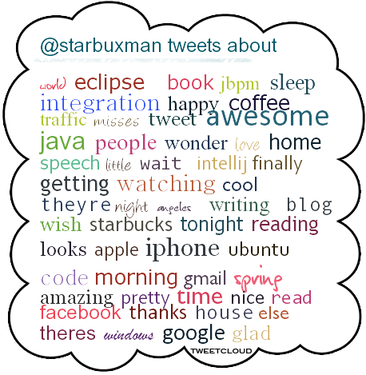
Spring Batch's MultiResourceItemWriter
28 November 2009
If you've ever had to do batch processing, then you know how tedious it can be to write all the infrastructure code surrounding retries and error recovery and usefully handling long running processing and all the other tedium that surrounds a typical batch application. For these types of applications, I use Spring Batch, a batch processing framework from Dave Syer and the fine people at SpringSource.
The basic idea is that you setup jobs that have
steps, that have tasklets. This the normal
use case, but by no means the only one. You use jobs and steps to
string together sequences of processing input and writing to output
via a reader and a writer.
Spring Batch has implementations for both reading and writing that
will likely meet most of your needs: XML, files, streams, databases,
etc. There's so much interesting stuff here, so of course I humbly
recommend you take a crack at the documentation or read my book, Spring Enterprise
Recipes.
That said all said, there's no obvious way to read from an input
source and then write to multiple files. The use case here, in my
case, is Google's
Sitemaps. These are XML files that describe the pages on your
site. You list every URL possible. If you have more than 50,000 links,
then you must create many files and list those files in a Sitemap
index file.
So, I wanted to read from a database and derive all the URLs possible
for content, and then write those to sitemap XML files, where each
sitemap could not exceed 50,000 entries. Spring Batch ships with an
adapter writer that serves exactly this purpose. It's called
org.springframework.batch.item.file.MultiResourceItemWriter.
You define it just like you might any other writer, except that you
wrap another writer with it.
Here's the salient bits from my configuration. Most of this is
boilerplate. I don't include the configuration of the Spring Batch
environment, or the configuration of the reader, because those are
pretty typical. Note that here we configure the writer
for the job and in turn configure its
delegate property, where we have the real writer
implementation. In this case, there's no need to configure the
delegate writer's resource property.
<beans:beans xmlns="http://www.springframework.org/schema/batch"
xmlns:beans="http://www.springframework.org/schema/beans"
xmlns:aop="http://www.springframework.org/schema/aop"
xmlns:tx="http://www.springframework.org/schema/tx"
xmlns:p="http://www.springframework.org/schema/p"
xmlns:xsi="http://www.w3.org/2001/XMLSchema-instance"
xsi:schemaLocation="
http://www.springframework.org/schema/beans
http://www.springframework.org/schema/beans/spring-beans-2.0.xsd
http://www.springframework.org/schema/batch
http://www.springframework.org/schema/batch/spring-batch-2.0.xsd
http://www.springframework.org/schema/aop
http://www.springframework.org/schema/aop/spring-aop-2.0.xsd
http://www.springframework.org/schema/tx
http://www.springframework.org/schema/tx/spring-tx-2.0.xsd">
<beans:import resource="batch.xml"/>
<job id="batchForCreatingSitemaps">
<step id="sitemap">
<tasklet>
<chunk reader="reader" writer="writer"
commit-interval="${job.commit.interval}"/>
</tasklet>
</step>
</job>
<beans:bean id="siteMapLineAggregator"
class="com...sitemapscreator.SiteMapLineAggregator">
<beans:property name="domain" value="${sitemaps-domain}"/>
</beans:bean>
<beans:bean
class="com...sitemapscreator2.ResourceSuffixCreator"
id="resourceSuffixCreator"/>
<beans:bean id="writer" scope="step"
class="org.springframework.batch.item.file.MultiResourceItemWriter">
<beans:property name="resource"
value="file:#{jobParameters[outputResourcePrefix]}"/>
<beans:property name="resourceSuffixCreator"
ref="resourceSuffixCreator"/>
<beans:property name="saveState" value="true"/>
<beans:property name="itemCountLimitPerResource" value="50000"/>
<beans:property name="delegate">
<beans:bean
class="org.springframework.batch.item.file.FlatFileItemWriter">
<beans:property name="encoding" value="UTF-8"/>
<beans:property name="shouldDeleteIfExists" value="true"/>
<beans:property name="lineAggregator"
ref="siteMapLineAggregator"/>
</beans:bean>
</beans:property>
</beans:bean>
<beans:bean id="siteMapUrlRowMapper"
class="com...sitemapscreator.SiteMapUrlRowMapper"/>
...
</beans:beans>
Thanksgiving
26 November 2009
I have a lot to be thankful for. This year I moved back to Los Angeles, where I've been well received in a new job and by family. I've experienced success speaking at various conferences, and this year saw the publication of my first book, Apress' "Spring Enterprise Recipes." Recently, I was in a pretty bad accident (a big-rig rear-ended me) and I emerged alive. I have made good friends. I am thankful for the readers of my blogs. I am thankful for my loving friends and family.
I hope you have a long list of things for which you're thankful, too. Happy Thanksgiving!
'Spring Enterprise Recipes,' from Apress
21 November 2009
Warning: Shameless Plug
I am pleased to announce that, after a long time and a lot of
work, my first book Spring Enterprise Recipes (which I
co-authored with the indefatigable, epic and extraordinary Mr. Gary
Mak, author of - among many other things, Apress' Spring
Recipes) has been released and is now purchasable. It should be
hitting book stores soon, but in the meantime, you can buy the e-book
at Apress.com, or you can pre-order it on
Amazon.com.
The book discusses Spring 3, but also accounts for the many "modules" surrounding Spring with an eye towards building elegant, scalable systems with a minimum of fuss. Many of these modules have come from SpringSource, and some are independent third party projects that integrate well with Spring. Spring Enterprise Recipes introduces concepts like business process management (BPM), enterprise application integration (EAI), distributed computing and messaging and then grounds these introductions with real-world examples using Spring and lead open source frameworks.
This book discusses both the why and the how. It starts with a discussion of the usual suspects, exploring the quintessential tools in any developer's toolbox: RPC (RMI, Hessian, Burlap, Web Services, HTTP/Invoker, EJB 2 and 3, and more), messaging (via JMS), database access (JdbcTemplate, and a few of Spring's numerous supported ORM abstractions), transactions (e.g., various transaction abstractions supported by Spring), and numerous services like e-mail, JMX, worker pools, and scheduling infrastructure.
Then, we progress into more advanced solutions. This book includes the first-in-print or most updated coverage of a lot of technologies, including Spring Integration (a lightweight ESB-like integration framework for EAI), Spring and jBPM 4 for business process management, GridGain for grid computing, Terracotta for clustered state managment, Spring Batch for batch-processing solutions and OSGi to bring modularity to your application.
In the large, this book is a gentle, but comprehensive introduction to the best-of-breed solutions for tomorrow's architecture using Spring and other lightweight, powerful tools. Having said all that, I hope you'll consider it for your next purchase and that it helps you solve some interesting problems and build even more interesting solutions!
Understanding Go
17 November 2009
Go, a new language from Google, has created quite a stir. It has a great pedigree, owing to renowned experts like Rob Pike (a member of the Unix team, and a creator of the Plan 9 OS from Bell Labs.) The language is a procedural language (like C, or Python) which offers a strongly typed, but flexible type system (not centered around object-oriented facilities as we know them from languages like Java and Ruby). The syntax is a strange mix of C and Python. Honestly, it feels like C when you read it, but it writes more like Python - lots of features in the syntax that are designed to be consistent, predictable.
One blog entry prompted a very lively discussion of the language: it made the comparison that Go seemed awfully similar to Algol 68, a language 40 years past irrelevance. The blog entry said that while Algol 68 was a nice language, Go might be considered an efficient language. It claimed that efficient languages are the ones that - ultimately - propagate. Witness COBOL, C, C++, and Java, for example. Go, thus, may very well be a very efficient language, but it's not even close to a nice language. It's a lost opportunity.
Programming languages tend to come and go, but they all advance basing their innovation in some small part on their predecessors. Programming languages have to evolve slowly. Languages do not exist in a vacuum. They must respect the work that's preceded them, while innovating. They must strike a careful balance, never alienating the existing community, the legacy base, and always advancing the state of the art. Doing so incorrectly can be the biggest sin a language can make. Kowtowing to the legacy of C crippled the evolution of C++, leaving it a confusing mix of phantom requirements and artificial features. Conversely, Java achieved meteoric propagation because it looked and felt like C++ without many of the warts. This made the transition to Java easy. Compatibility is a double edged sword.
Most recent languages look and feel like C/C++. They've innovated ever so slightly, inducting into the syntax features formerly handled by libraries. Or, the language is flexible enough to support requirement-specific DSLs. You can see this with Scala and Groovy, Ruby and C#. They're all fairly familiar, but offer advantages in their grammar over their predecessors. C#, for example, introduced LINQ, while Scala surfaced its concurrency facilities as an Actors DSL. The idea of a language syntax as a differentiators is even more relevant of late. The .NET runtime popularized the idea of a multi-language run time. It meant that choosing a language did not mean forsaking libraries. The JVM has matured, and there are many languages implemented atop it, as well. Other infrastructure VM projects have emerged, like the LLVM.
So, I don't blame Go for looking so much like its predecessors. That's the cost of doing business. It's intended to be a general purpose language, after all. It does have a few unique features surfaced as language constructs, like intrinsic concurrency facilities, which it calls gorountines.
I don't understand why they have built another virtual machine. If Go is going to innovate, it will be in its Virtual Machine. Why not the CLI, JVM, or LLVM? The language has strong support for interop - easily wrapping native code much like you might using C++. The .NET CLI supports this sort of thing, though. I understand the language needed to run on Unix (at the moment, you can't run it on Windows!), and perhaps Mono wasn't sufficiently advanced. Why not the JVM? Would building that kind of infrastructure be that hard? What about the LLVM? It seems well suited to working on Unix and to handling interop. Perhaps interop is not the only concern. The implementation of the goroutines seems to have been a priority. The language does not yet have assertions or exceptions specifically because doing so would be awkward with goroutines. This language, as Mr. Pike explained it, was created for Google to build servers. Cheap, and efficient threading was priority #1. This piques my curiosity. Why could the JVM - which hosts Scala and Clojure - not be used to build goroutines. Is there some fundamental flaw that makes concurrency on the JVM a non starter? I don't understand.
I would agree that the language is not particularly novel. What I don't understand is why the VM is novel. Clearly there are requirements I don't understand, and this is why I think Go will be worth paying attention to, in much the same way Erlang is.
There is also something refreshing about a genuinely new language. New platform, new libraries, new syntax. Programs written in a language like that represent advances. Shortly after the debut of the language, a command line Twitter client emerged. The example is promising - by definition the implementation was from-scratch. It was quick, and the result is imminently readable.
Perhaps I'm over thinking this. Perhaps the language will be successful because it's simple, and efficient. Perhaps the VM is some how unique and better served by a custom implementation. Only time will tell.
The Last 2 Crazy Months
12 November 2009
What a busy couple of months!
I started last month (from October 2nd to the 11th) at the Java2Days conference in Sofia, Bulgaria. I gave three talks on Spring and JSF, Spring and jBPM, and Spring Integration (the Spring ESB-like framework). I think the slides will be available there in shortly. Meanwhile, here are some photos of the event below, though you're encouraged to log in to Facebook and check out the full galleries there.
The name of the gentleman on the far left escapes me, but that's John Lewis, Emo, and yours truly on the right |
| 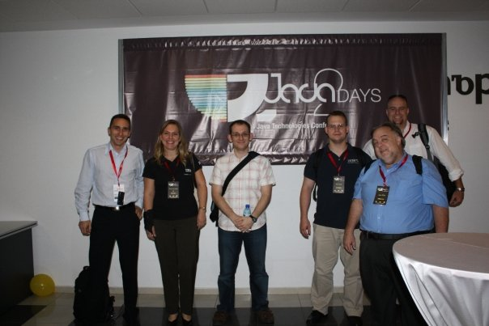 |
From left to right: Ivo Penev, Gisele Consoline, Rob Harrop, yours truly, John Willis, and Heath Kesler |
I had a great time at the conference. The audience was great the discussions great, too. The drinking was good, too! :-)
At some point, I got some sort of stomach bug (perhaps in Greece?) and when I returned home, I was severely dehyrdated. I spent a little time hooked up to an IV and then spent the subsequent week pounding antibiotics, gatorade, and soup. There's a thousand ways to get sick, only one way to get better!
After that, I got deep into the final edits for my book "Spring Enterprise Recipes." Really enjoyed that process - it's fascinating to see what goes into writing a book. Trust me, the book is far better for the effort of the amazing editors at Apress! :-)
I spoke at the Pasadena Java User Group on using Spring Integration - that crowd was very cool and the discussion that ensued was also good.
Recently, my sister got hitched. I wish her, and her husband, many happy days together.
I think that wraps up the highlights. I'll start chiming in more frequently. A lot has happened of late, including the debut of Google's Go programming language, The Motorola Droid, the continued standoff between Sun/Oracle and the European Union over objections to Oracle's accquisition of MySQL, and more. Exciting times...
CRUD's Not The Answer
10 September 2009
I was really glad to see Udi Dahan's, "Don't Delete. Just Don't." I wholely agree with the main premise - that deletion is rarely, if ever, a valid business state and that care should be taken in dealing with it. He cites various examples, saying, "The real world doesn't cascade." His example is of a marketing department that deletes an item from the catalog. Should all orders containing that item then be unlinked? Should they redo the company's profit and loss statments?
His example's a perfect
illustration of a valid case where care needs to be taken both in
modeling the case and dealing with it in code. I fear a lot of people
have gotten hooked on instant-models or CRUD "frameworks." The idea
that you can annotate a few entity classes and suddenly you have a
model and business logic all taken care. A lot of this became popular
with Ruby on Rails and has only gotten worse in the JEE world. It's
now common to expose EntityManagers to the web tier (both
the Seam and Spring Web Flow examples, not to mentino the Open Session
in View pattern itself, speak to this) and to let web frameworks
handle the lifecycle of entities and committing transactions on that
EntityManager to persist those entities. We now think of record
creation and managment as so mundane that we've automated it and
surrounded it in scaffolding.
Unfortuntately, this misses the true value. Objects in a system have state that has dependencies. Just because an entity has a (required) no-args constructor, it doesn't mean that you should not write a constructor with dependencies. A lot of this stems from the "active objects" or "naked objects" pattern, where objects are open books whose state can be mutated on the UI tier directly and those changes propagated directly. We tell ourselves that we can apply Hibernate validations (or validations in any other ORM framework) and that we'll guarantee valid business constraints thus, but it rarely works out that way. Prescribing the valid creation and destruction of an object is critical.
The most insidious part of this abuse is that it rarely ever occurs in the first iterations of a project, only in maintenance. People "forget" how an object is created, or destroyed. They forget details. Consistancy with other parts of the system is forsaken because, after all, how much could there be to it? This happens more often than you'd expect: new people come on to the team and are assigned to rework an existing feature and screen in a system. Institutional knowledge is important but it's not always easily transferred, so safe-guards need to be taken.
Plus, as business evolves, object creation is often only part and
parcel with a larger process. If a new customer is added to a
database, and nobody does anything with it, did it really get added?
Put another way: if a new customer gets added to a database, there's
an implied lifecycle that customer must follow. Perhaps a trial period
window and then a follow up email? Perhaps a monthly subscriptio fee?
Who knows, but the act of instantiating a Customer object
and then issuing entityManager.persist( customer ) will
rarely, if ever, be enough.
Indeed, I've seen many projects
build their models using only a GenericDao<T>
variant. This is dangerous. Transitions from one state to another
for an entity can often cost money.
Do things the old fashioned way, building services that handle the business operations, not merely Create, Read,Update and Delete objects. Using Dao's in a view tier is almost as ghastly a sin as making JDBC calls from the view, and encourages the same kind of copy-n-paste code reuse we prided ourselves on having moved away from.
While the services approach isn't exactly code-generation friendly, it can pay off in the long run. As soon as you decide to use your services in a phsically separated tier, you'll be glad. It's easier to build services that express every dependency as a method parameter. There are several reasons why this works out. While web service support is getting better, object marshalling is still the number one headache. Most toolkits make interoping with primitives a brease, though. It may seem like your losing ground by not taking advantage of the POJO you have floating around in the view tier, but in point of fact it's rarely that big a burden to unmarshal the relevant fields and use those instead. On the services side, reloading the relevant record is painless because the entity's usually cached and thus refetching it is cheap.
Take for example the idea of a shopping cart which surfaces methods for adding line items to orders, orders to shopping carts and shopping carts to customers. A clean version of this might look like:
public interface ShoppingCartService {
ShoppingCart createShoppingCartForCustomer( long customerId,
Date
whenShoppingSessionStarted ) ;
Order createOrderForShoppingCart( long shoppingCart ) ;
LineItem createLineItemForOrder( long orderId, long productId,
int quantity) ;
void removeLineItemFromOrder( long orderId, long lineItem ) ;
void startOrderFulfillment( long orderId ) ;
/* other methods for loading and removing the various
objects, as appropriate
*/
}
In these methods, you can do sanity checks,
care for business cases, handle the state of the various objects and
not worry about having a transactional resource like an
EntityManager or Hibernate Session open in the client thread.
In this example, you might imagine the Order won't
officially be fulfilled until it's paid for, at which point it'll move
to the PAID state. Simialarly, adding a
LineItem might require a check to an inventory,
decrementing how many of those Products are in stock. The
same is true of the inverse operation:
removeLineItemFromOrder should appropriately restore the
inventory count and update the totalPrice field on the
Order.
EntityManager from your Seam backing bean and executed
the logic there, except now the logic's codified and reusable.
Setting Up jBPM 4's XSD File In Eclipse
03 September 2009
I've recently been playing with jBPM 4.1 and, while I haven't quite gotten into it, I did manage to break an Eclipse setup of my "old" jBPM 4.0 code. This is definitely a user error. So, trying to ensure I have a reproduciable baseline, I start setting everything up again (I don't have the jBPM plugins or anything installed -- I keep it mean and lean, if possible. )
I got to the point where
everything was running fine again from the IDE, but I noticed I no
longer had code completion for my jBPM .XSD file. I'm
not sure if I ever did, or if I did, then I've forgotten how. So, I
stumbled through getting it working with the Eclipse Resource Catalog.
Here are the steps to reproducing it if you have the same issue.
- You'll need a copy of the
.XSDitself. For me, the simplest option was to just download the sourcejarand use theXSDfile therein.mkdir ~/xsds; cd ~/xsds ; wget http://repository.jboss.com/maven2/org/jbpm/jbpm4/jbpm-api/4.0/jbpm-api-4.0-sources.jar ; jar xvf jbpm-api-4.0-sources.jar ;
- In Eclipse, go to Window > Preferences
- Search for "XML Catalog," under the "XML" node.
- Click "Add..."
- Fill out the dialog, using the values
below.
I hope this spares somebody some pain. Once you've got it working, go check out the awesome new jBPM 4.1!
My Christmas Wish, OR How the JVM Will Outlive the Cockroach, and .NET
29 August 2009
It started with a Tweet from Miguel De Icaza. Miguel's the leader of the Mono project, whose goal's to bring .NET to Linux. He's also the former leader of the Gnome project. Generally, he's whip smart and not usually prone to flame baits. So, I tend to read his words carefully, as it usually pays off. He said: "I wish Java tried to compete with .NET, but they seemed to have given up a long time ago: http://tinyurl.com/mfxmqm"
At this point I wanted to write him a terse letter stating my point of view, stating how he had clearly missed the obvious. I resisted, cried a little, sat on the beach with candles, attended a book club meeting, found Jesus, and then came back and reconciled that I was just sad because he was right. He was also pointing out the obvious. (There, at least I can say that! in the anonymity of my blog, far, far away from where he might see it...)
The link points to integrations in Project Coin, a project that's taken the JDK and aggressivey evolved the language to try certain features out in an isolated fork. In general, I'm supportive of the movement, but it's a sad truth that any final edition of JDK 7 is already late, and will likely not incorporate many of those integrations in Project Coin, or even many of the originally announced - big ticket changes coming straight from Sun. JDK7 is the Windows Vista/Longhorn of the JDKs.
You remember Longhorn, right? It was the code name for Windows Vista for a few years. If I recall, there was talk of integrating 4 pillars or waves of technology into the then-hyped next generation of Windows, including WinFS (Am I wrong in thinking that it was called something else, then? Avalon? Or am I thinking of the now-defunct Java DI container?) Indigo, and a slew of others. As the roadmap slipped further and further, more things were dropped. In fairness, in 2009, some of those pillars have subsequently shipped, sort of, as parts of .NET 3.0-3.5x. Some are lost to the annals of history.
With a heavy heart I proceeded to code, ignoring what he said. I'm tougher than that. I can handle having the rug yanked out from under me. "Why would he say that about my precious Java??" I thought, typing as I thought it. "I wish I could come up with something to refute his claims!", I moaned. Something elegant, quick, crazy fast, and future proof. Something's got the best of C#, F#, Python, JavaScript and more. I tend to ignore skills I've built up over years of use and revert to primitive, conveniently blog-friendly samples from tutorials when I'm stressed (don't you?). And boy was I stressed! I looked at my screen. I was really in a tizzy at this point, thrashing away at the keyboard! (Like in those movies where they feature somebody running their hands along the home row and suddenly they've infiltrated the FBI's secret-most files.)
Here's what I had typed:
object Maps {
val colors = Map("red" -> 0xFF0000,
"turquoise" -> 0x00FFFF,
"black" -> 0x000000,
"orange" -> 0xFF8040,
"brown" -> 0x804000)
def main(args: Array[String]) {
for (name <- args) println(
colors.get(name) match {
case Some(code) =>
name + " has code: " + code
case None =>
"Unknown color: " + name
}
)
}
}
It was a Christmas miracle! A language on the JVM
that already had most of the proposed changes in Project Coin and
great deal otherwise and was very fast and that worked
on all platforms, just like Mono! Errr... that is,
just like Java!
This language, Scala, has gained a great deal of traction in the Java community and even people you'd expect to offer otherwise have endorsed it. People like James Strachan, creator of Groovy, and James Gosling, creator of Java.
I just hope that other people can find out about this wonderful language. Why, wouldn't it be nice if -for Java 8 (will we ever get to have a Java X? How cool would that be??) - we just shipped Scala?
And that, boys and girls, is how Java outlived the cockroach, in our hearts.
The End!
A Survival Guide to Maven, OR, Why Maven's Still Cool
27 August 2009
The Problem: Confusion
I've had a lot of small discussions recently with people where they were just absolutely not interested in using Maven. Has it somehow gotten a bad reputation when I wasn't looking? Am I missing something? When did I suddenly become the guy using a tool that was too slow, or not agile enough for everybody? I can still sing and dance and jump like you guys, too! Even if I do use Maven...
So, let old Josh tell you a little bit about Maven. Maybe we're not all talking about the same thing. Consider this a survival guide to Maven.
Maven, like this guide, assumes you're trying to solve the 80% cases effectively. Already, we have a point of confusion!
I'm pretty confident that your first thoughts on that last sentence were to what Maven considers "80%," and you're probably wondering what you might reasonably call Ant's "80%" cases. I would argue that Maven's "80%" is 80% of a much, much bigger pie.
I haven't met an Ant build
yet that couldn't be cut down in complexity by using Maven. Sure,
sometimes the resulting Maven pom.xml was more verbose
(though, that doesn't happen all that often in practice, either), but
that's not the same as complexity. Intrinsic complexity is one thing.
Surface complexity is another. I define intrinsic complexity as the
concepts required to effectively deal with a problem in a problem
space. I define apparent complexity as the busy work a process
presents you with to obtain a goal.
I'm pretty convinced Ant suffers from both of those kinds of complexities. I wasn't going to start any bar fights about it, but I was pretty sure. Then, Ruby On Rails debuted and made code generation popular again. It brought "convention over configuration" to the mainstream. Then, I knew I was on to something with Maven.
I might argue that when you download Ant and decide to keep it in your tool chain, you think of it as providing a solution, assuming you've configured it, to:
- compiling Java source files into classes
- copying resources to the right place, such as .XML files, .properties files, etc.
- generating .jar or .war artifacts from the aforementioned classes.
- generating JavaDocs. I'm adding this one as a "maybe." Does anybody still do this and actually keep JavaDocs floating around? Is the Eclipse or IntelliJ support for rendering in-popup the contents of the JavaDoc not enough?
The enlightened Ant user will also, maybe, add dependency management with Ivy to Ant's 80% cases. I mention this to be fair, though I highly doubt it's that common. I suspect that a lot of Ant users would still relegate that to the fringe 20% cases.
Alright, so we have our 80%. Most people have a sample ant build.xml that they've lugged around and, when it's time to seed a new project, they plop it into place and it's got some variables that need to be replaced and then it does most of the things above. Except JavaDocs and Ivy. I'd be surprised, anyway.
Maven's got all of those features - right out of the box - in 5 lines of XML and a standard directory structure. This is where it stops being a fair fight. No matter how much you tug or pull against that list above, chances are you're at least going to use Ant to compile. No way around it. Even the simplest Ant configuration requires more exertion to acheive that than Maven does. This point, and this point alone, is why I'm just not convinced people are taking a look at this and understanding it. If the goal is simplicity, then there's nothing simpler than nothing. If you've had to put even a moment's care into that list above, than you've already wasted time and could have been using Maven.
Now that I've gotten the soap-box speech out of the way, read on to understand a little bit about it, including how to set it up to do all the things in that list (and hundreds of other things) with a few directories and a 5-6 line XML file (the 5-6 lines comes from my formatting. It could easily be 3 lines of XML, if we're honest.
Things To Know
Where Can I get Maven? Maven is freely available, just like Ant, from Apache. Alternatively, many distributions have it in their repositories. For Ubuntu, it's
sudo apt-get install maven2 How Do I Install Maven? The simplest way is, like Ant, to
unzip it, and add the bin folder of the directory to your
system's PATH variable. Alternatively, skip to the next
question and simply use your operating system's repository to install
it, if possible.
How Do I Build a Maven Project Building a Maven project is easy, as the command never changes.
mvn
installpom.xml file. That's usually the parent
project. Usually, Maven projects cascade downwards, so you might try
issuing:mvn installtarget directory in each project (if there are any).
Inspect the target directory for your .jar
or .war, or whatever you're expecting.
If for some reason there's no target directory in the
directory that contains the source code you're trying to build,
descend into it to the point where you're adjacent to the
pom.xml. Then, issue again: mvn
installHow Do I Bootstrap a New Maven Project The simplest setup requires the creation of directories as well as one XML file. But, you'd likely create these directories and at least one XML file with Ant, too.
Run the following on the command line. NB: I haven't translated for Windows. I'm sure it's easy enough, there, too.
mkdir -p
myproject/src/{main,test}/{java,resources}jlong@studio:~/Desktop/myproject$ find .
.
./src
./src/main
./src/main/resources
./src/main/java
./src/test
./src/test/resources
./src/test/java
src/test/*.
That leaves you with src/main/{resources,java}.
Java code goes in src/main/java. Things you'd like on the
classpath of the same artifact, such as Spring application contexts,
go in src/main/resources.
Finally, you're going to need an XML POM file. POM standards for
"Project Object Model," I think.
It's the sole center for configuration related to your project. No
need to do includes, or externalized configuration or anything.
The simplest pom.xml looks like:
<project xmlns="http://maven.apache.org/POM/4.0.0"
xmlns:xsi="http://www.w3.org/2001/XMLSchema-instance"
xsi:schemaLocation="http://maven.apache.org/POM/4.0.0
http://maven.apache.org/maven-v4_0_0.xsd">
<modelVersion>4.0.0</modelVersion>
<groupId>com.yourproject.crm</groupId>
<artifactId>utilities</artifactId>
<version>1.0-SNAPSHOT</version>
</project>
pom.xml, at the root of the myproject folder
created above. You're done.
From here, so long as you're just planning on using the JDK, etc, then this will work fine.
What do those directories and 5 lines of XML buy me? Think of that as being equivalent to hundreds of Ant targets. The project already has enough information to, among other things:
- Generate javadocs:
mvn javadoc:javadoc - Compile classes:
mvn compile - Compile and generate an artifact (a
.jar, in this case):mvn install - Generate a Checkstyle report:
mvn checkstyle:checkstyle - Or, in the alternative (and perhaps a complement): generate a PMD
report:
mvn pmd:pmd - Build a web site with documentation on the structure of the
project (anemic thing that it is):
mvn site - Build a cross reference of the project's sources:
mvn jxr:jxr - Setup project files for your favorite IDEs:
mvn eclipse:eclipse, ormvn idea:idea(NB: if you're using IntelliJ IDEA 7 or later, or Eclipse with the fabulous m2Eclipse plugin, then you don't need these plugins. You can simply 'open' the project as you would any project by importing or opening thepom.xml. Netbeans also has incredible support for opening Maven projects directly.
How Do I Add JARs to the ClassPath? Short answer: you
don't. You let Maven handle it for you.
If you need a .jar, more than likely, it's already
available in some repository, in the same way that a package might be
provisioned by an operating system (such as Windows Update on Windows,
apt on Debian distributions, rpm on RedHat
distributions, port on OSX, etc..). For Maven, using a
depdendency is as simple as identifying it and adding the metadata to
the pom.xml.
There are many ways to "find" a
.jar. The simplest is to start browsing a central
repository and opening the pom.xml files. To add a
dependency, you need it's <artifactId>, its
<version>, and its <groupId>.
These elements are usually at the top of all pom.xmls. To
add a dependency on the Apache Commons Lang library
to our project above, add the following lines to your
pom.xml, right before the closing <project>
element:
<dependencies> <!-- plenty of room to add
dependencies --></dependencies>dependencies section, you will add all your
dependency information. The information you enter could be that for a
third party .jar, or a .jar in your own
project. Perhaps one team's project depends on another's. If Maven
can't find the cached version of the .jar, it'll download
it for you.
<dependency><groupId>commons-lang</groupId><artifactId>commons-lang</artifactId><version>2.4</version></dependency>
To test, simply rebuild it as before: mvn
install. Most of the IDE integrations will have suport for
updating the project configuration in the IDE (i.e., the classpath)
according to what's in Maven's configuration. If you'd rather not
spelunk through the ibiblio repository site, you can
always use one of the many Maven repository indexes. A good one is Maven Search. Type in a
fragment of what you're looking for and it'll provide you with
matches. Thus: I entered "commons-lang" and it found results.
Additionally, most of the IDE's will have support for some form of
repository browsing.
I'm Test Driven!
This one's easy. If you do want to use JUnit (or TestNG), then
fret not - that's Maven's default M.O.! By default, any JUnit classes
put into the src/test/java folder will be compiled and
run before proceeding with the build.
The Tour's Over, What Did You Think?
In this guide,
I've given a walk through to the questions I can imagine thinking
about when setting up a project with Ant. The result is that you can
get a LONG ways with nothing (the minimal pom.xml).
The balance of a given effort is the 20% stuff. As they say,
the 20% cases can take 80% of the time. I can't speak to whether this
is true or not as Maven's never delayed me, for any particular length,
except when I was pushing it to do stuff that nothing else, including
Ant, could have done.
Even so, if you hit the 20% cases, you can rest easy in the knowledge
that Maven is built to be flexible and extendable. It's whole model is
exposed as a lifecycle. If you want to inject custom logic at a custom
point, doing so is easy. It's also insanely interoperable. In fact,
even if you don't want to use Maven but wan't to get a very high
quality build script, setup the project using Maven and then use
mvn ant:ant. It'll generate an ant script that'll handle
most things you'd want to do. Finally, if you decide you absolutely
can't live without, or translate effectively, an Ant script, there's
good support for running Ant scriptlets inside of Maven.
Go ahead and give it a try if you haven't tried it before or if you were put off. It's truly powerful. The most visible testament to this are the ideas (like Ivy) that are inspired by it in Ant.
Building Servlets With Spring
24 August 2009
The Problem
Earlier, I wrote about having to build a solution using servlets to write out the contents of the RSS feed for my blog. I am using JSF on this site. There are solutions - like Pretty Faces - that work and provide a lot of flexibility for mouting JSF logic at a given URL. So, initially, my RSS and Atom feeds were being handled by a backing bean in JSF. Being JSF, this necessitated the need for a session cookie (even though, clearly, the RSS / Atom feeds are stateless.)
The cookie wouldn't have been so bad, except that - I think as a consequence - RSS readers consuming the blog were being constantly refreshed for the entire contents of the feed, because to them the resultant blog requested was "different" than the previous version.
The Solution
So, I planned to write a servlet that handled the requests and I expose that in my JSF application. This would be a clear differentiator between the new Spring + JSF version of the software running my blog and the old Spring MVC version: it's uselessly difficult to support stateless endpoints with JSF, where as it's as natural a goal as anything in Spring MVC.
Using a servlet meant I'd lose two advantages I'd had in the JSF application with Pretty Faces: bookmarkable URLs, and the convenient programming environment that Spring Faces afforded me, namely, configuration, dependency injection, etc.
Refinements
I decided to
use URLRewrite to solve
the boomkarkable URLs (yes, that means this site is hosting not one,
but two solutions for bookmarkable URLs in the same
.war!) and Spring's under appreciated
HttpRequestHandler.
HttpRequestHandler is an interface that, when
implemented, becomes serviceable by a Spring framework servlet. The
interface looks like:
package org.springframework.web;
public interface HttpRequestHandler {
void handleRequest(HttpServletRequest request,
HttpServletResponse response) throws
ServletException, IOException;
}
You then configure a Spring framework class
(org.springframework.web.context.support.HttpRequestHandlerServlet)
in your web.xml and name the servlet the same as the bean that
implements the HttpRequestHandler interface is named in
your Spring application context. By virtue of the fact that your
HttpRequestHandler bean is a Spring component, you get
all the advantages of using Spring or Spring MVC, without having to
load an entire framework.
For my code, the implementation looks something like the following:
package com.joshlong.blawg.site.view.servlets;
import java.io.IOException;
import java.util.ArrayList;
import java.util.Collection;
import java.util.List;
import javax.servlet.ServletException;
import javax.servlet.http.HttpServletRequest;
import javax.servlet.http.HttpServletResponse;
import org.apache.commons.lang.StringUtils;
import org.apache.commons.lang.exception.ExceptionUtils;
import org.springframework.beans.factory.annotation.Autowired;
import org.springframework.stereotype.Component;
import org.springframework.web.HttpRequestHandler;
import com.joshlong.blawg.BlogService;
import com.joshlong.blawg.model.Blog;
import com.joshlong.blawg.site.view.util.RssFeedCreationUtils;
import com.joshlong.blawg.utils.LoggingUtils;
import com.sun.syndication.feed.synd.SyndEntry;
import com.sun.syndication.feed.synd.SyndFeed;
import com.sun.syndication.io.SyndFeedOutput;
@Component("feed")
public class BlogFeedServlet implements HttpRequestHandler {
static private String FEED_TYPE_VARIABLE = "feedType";
static private int START_FEED = 0, STOP_FEED = 500;
@Autowired
private RssFeedCreationUtils rssFeedCreationUtils;
@Autowired
private BlogService blogService;
@Autowired
private LoggingUtils loggingUtils;
private SyndFeed buildEntryList(HttpServletRequest req,
HttpServletResponse res, String type, int start, int length) {
SyndFeed feed = ... // build up the SyndFeed however you want
return feed;
}
private void showAllAtomBlogs(HttpServletRequest request,
HttpServletResponse response) throws Throwable {
SyndFeed feed = buildEntryList(request, response, "atom_0.3",
START_FEED, STOP_FEED);
response.setContentType("text/xml");
SyndFeedOutput syndFeedOutput = new SyndFeedOutput();
syndFeedOutput.output(feed, response.getWriter());
}
private void showAllRssBlogs(HttpServletRequest request,
HttpServletResponse response) throws Throwable {
SyndFeed feed = buildEntryList(request, response, "rss_2.0",
START_FEED, STOP_FEED);
response.setContentType("text/xml");
SyndFeedOutput syndFeedOutput = new SyndFeedOutput();
syndFeedOutput.output(feed, response.getWriter());
}
public void handleRequest(HttpServletRequest request,
HttpServletResponse response) throws ServletException, IOException {
try {
String feedType =
StringUtils.defaultString(request.getParameter(FEED_TYPE_VARIABLE));
if (StringUtils.isEmpty(feedType))
feedType = "rss";
if (feedType.equalsIgnoreCase("rss"))
showAllRssBlogs(request, response);
else
showAllAtomBlogs(request, response);
} catch (Throwable th) {
loggingUtils.log(ExceptionUtils.getFullStackTrace(th));
}
}
}
Thus, it's simpler than a standard Spring MVC controller or a struts controller (though admittedly lacking a lot of the frills - this happens to be a simple use case.
I then configured the
web.xml for all of this:
<servlet>
<servlet-name>feed</servlet-name>
<servlet-class>org.springframework.web.context.support.HttpRequestHandlerServlet</servlet-class>
</servlet>
<servlet-mapping>
<servlet-name>feed</servlet-name>
<url-pattern>/urlPatternForFeedServlet</url-pattern>
</servlet-mapping>
Note that we've used the name fo the bean (configured using bean
classpath scanning, so the name is in the @Component
stereotype at the top of the class - "feed".) for the
servlet name. Sure, it smells a bit like engineered coincadence, but
it works well.
From here, all that remained was configuring a
URLRewrite rule to map the servlet to the endpoints visible on the
site right now ("/jl/entries/blog.atom", and
"/jl/entries/blog.rss")
Hope this helps somebody...
Quick Update to RSS
22 August 2009
I just published a change to the code that should hopefully prevent readers (like Google Reader) from constantly requeuing all my old blog entries as "unread." �I don't know if it'll work (I've never had to debug this particular web client!), but we'll see.
I suspect the issue is something like the following: the spider hits the page which in turn causes it to get a cookie from Java Server Faces, which makes the blog feed look "new." I've checked the last modified dates and so on using Http Live Headers and the Last-Modified dates and everything look alright. Anyway, I'll post back with results once they manifest (or, hopefully, don't manifest!)
Succinctly, the change involved creating a servlet (sort of) and using that to write/render (I wanted to say "feed") the feed.
Component Oriented Architectures
20 August 2009
Warning, this blog entry is as much a rant as a blog, and tends on the somewhat lengthy side. You've been warned. I'm looking for the secret of life, as always, and failing it, I'll settle for the secrets of software. This is a blog I don't know how to write, but have wanted to, for a long time. I suspect getting it out on paper will let me revisit with more clarity later.
Prompted by Brian Sam-Bodden's musing on the subject a week or so ago on Twitter, I've been ruminating on the notion of a "component." I think that the evolutions of modern day software development are embodied in the notion of a component, not a "service," or a "bean," or anything else. Those words don't convey enough.
Thinking about it, a "component" can be broadly defined as a thing which integrates readily into a bigger thing - that is, it's adapted to the thing that uses it, and any other such thing could be made to follow suit, with the same adaptations. The container is composed of components.
Getting more specific, we think about a component in software as a thing that is integrated into a container and that can only function as a subordinate entity to the container. In practice, this vague description manifests itself as class that implements an well-known interface. Sometimes, being a component means is simply a matter of letting the container control when the component starts working and when it is stopped. Here, you might not even need to implement an interface since object creation and destruction or (typically!) built into the language itself, and thus there's no need to codify it further.
This ends up quite often being too much of an abstraction. Something that is everything is also nothing. So, again, in practice it's a matter of establishing a common interface. In recent years, the "interface" for a component has evolved beyond the literal notion of a language interface and can be any number of things now. After all, all the interface does is distinguish an object as being a component in a sea of non-components. Such a distinction can otherwise be made, as with annotations or attributes in the Java and .NET platforms, respectively.
So, a component is something that belongs to a container and that so marks itself as usable in that container with an interface or some other distinguishing feature.
Now, when the component is deployed, it sustains some sort of behavior, perhaps over a period of time. There is often a setup phase and a destruction phase. This implies a lifecycle, to setup state to begin servicing requests and to stop servicing requests. This lifecycle might provide hooks tot he component unique the containing environment.
Because the component exists inside of a container, collisions are apt to occur. Language features like assemblies or packages help isolate a component, but often the container will provide addressing to further isolate a component from its siblings.
At this point, I think, the nuances are what qualify the application of a component. If we agree on the previous points applying to most components, then surely we agree that following aspects apply only to some components. The specification is where the term component is starts being prefixed, i.e., "web component," "service component," etc.
Analyzing these definitions, a HUGE number of things could be consider a component.
- the now-defunct Avalon framework had "components"
- Spring has a @Component stereotype that marks beans as "components"
- JCDI - the pending DI component model in JEE6 describes "components"
- Indeed, EJB's original documentation spoke of EJB "beans," which you might argue was Sun's jargon for "component."
- The web frameworks Tapestry, Wicket, Echo, etc, provide components for the user.
- The Java UI model, Swing, provides components
- The J2ME and Android mobile phone platforms provide "components"
The list goes on and on, but you can see plainly that the idea of a "component" is not new. A component by any other name...
These various notions of a component - though not all of them - share several more concepts which we might describe as key to any description of a component.
Most of them provide some way to export state. In Tapestry, Seam and JCDI, you can "outject" values, effectively binding an internal value to a client's state, so that the internal state is reflected in the external variable when state inside the component changes. This is often called just "binding," and is -usually -an abbreviated way of responding to some event and then synchronizing client state with the state of the component manually. JavaBeans themselves, a core tenant of the Java platform, provides this notion of properties, which are nothing more than accessor/mutator pairs by which state may be shared in a generic fashion. The Dojo JavaScript framework, Wicket, Echo, and Spring, ASP.NET, and Swing all provide support for broadcasting state changes as events. This tends to be very effective as it decouples the listeners from the component itself.
In this discussion I've lumped both events and properties as goals by which to achieve the same thing, and though these concepts are not present everywhere, they're key for good components in this author's experience.
In this respect, Delphi, C# and Scala and other languages that embrace these concepts and codify events and properties have the edge. Software development can't be about being able to bundle state and functionality, it has to be about components that play nicely with each other, not in a box but in an ocean. Promoting the ideas behind a component promotes decoupled, and well behaved, software.
Indeed, the trends in software development themselves beg for components. Grids, with many concurrences and actors at play, are very well suited to components -services exposed behind a publish/subscribe mechanism. Services so exposed publish functionality that other actors in the system can consume if they can address them. This sort of dynamism is already alive and well in things like Jini or GridGain. The components themselves comply with a life-cycle for their respective containers.
The very idea of a component - things out of which something bigger is composed - implies composition. The biggest thing to come out of SOA is the push towards service reuse and composition, which components encourage.
Clearly, I'm thinking this through as I write it, and so any input's appreciated (good, bad, or indifferent.)
The addressability part is key. Brian mentions the notion of a REST-ful component. In the specific, he was talking about a component on a page amight be addressable, but the question is equally well put to how to expose distributed components uniformally.
Is there an ideal way to build components and to model these concepts - what's the next generation of software going to bring us? Clearly, functional languages are here to stay, but they don't preclude the idea of a component, in fact I imagine it might work for it.
What do you think? What's the most succinct way to model software? Is your architecture composed of objects and services? Of global variables and functions? Or of components? What will the architectures of tomorrow look like?
Ooops!
17 August 2009
Today started off nice enough... I went to Malibu Seafood today and enjoyed a lovely day on the beach and came back to check my blogs and, blam! mistake-in-the-face!
In my last blog I discussed that I'd updated the software powering this blog, and that there might be some bugs to work out.
Boy,
am was I on the money on that one! Turns out, I updated the logic used
to implement my RSS feed and Atom feed (eh, mainly, the switch - I'm
embarrassed to admit - was to actually use the token that ROME expects
to generate an Atom feed instead of the RSS 2.0 type of feed.)
Bluntly: if you subscribed to my Atom feed, you only got an RSS feed,
because I fat fingered the 'feedType' parameter on that
one!
Apologies to all those were spammed this morning with 'duplicate' (essentially) blog entries! Everything except this and the one before it are old and can be marked as read... thanks.
You're looking at a work in progress..
16 August 2009
Man at work
You're looking at a work in progress.
The software that runs this site - joshlong.com - is home-brew. I built it myself, not because I feel like I'm going to do an inherently better job than any of the numerous pre-built options - furthest thing from it, actually.
I built it myself to be able to eat my own dog food. If I had to learn at the same pace I take on a new job and get exposed to a new skill set by force, I'd know much less. Practice is the only thing that can be usefully attributed to improved skills. The previous version of this site was written in Spring MVC so I could refine my understanding of the @MVC model and truly get a feeling for how it works (very nicely, I should add). I've long been a fan of Tapestry and have built numerous sites with it. I figured, with all the new work going on in the JSF world that it was time for me to refresh myself on that platform, especially as JSF 2.0 creeps ever closer.
JSF has seen major "upgrades" (in lieu of actual upgrades from the specification) from JBoss, with Seam, and with the Spring Faces support from SpringSource. Additionally, RichFaces and numerous other projects have evolved their component frameworks so much that result is rarely portable, but usually very nice. In effect these component libraries are their own sort of framework and often carry their own specialized support for core framework concepts like component development, JavaScript, rendering (i.e., view templates), Ajax and internationalization. These frameworks can make JSF very pleasant.
Except... when it isn't. It turns out that JSF's many weaknesses -
while in some places well addressed by some of these 3rd party
solutions - are not completely surmountable, and in some cases you're
forced to simply "grin and bear it."
This includes things like statelessness (you'll be greeted with a
JESSIONID on your first request, for example), binary
responses, and SEO-friendly URLs. I've talked about solutions for some
of these problems in Spring MVC before, but they were to augment a
capability that was already there. Here, the solutions and the
home-brew components I had to put together were to avail myself of
these capabilities in the first place.
For SEO-friendly URLs, I found an incredible library called Pretty faces. I'm still using JAWR, as before, but because I'm also using RichFaces - which has its own CSS/JS compression mechanism, the solution's not quite as effective as I would have liked. Still, 2 heavily compressed, minified JS files and CSS files (one from JAWR, one from RichFaces) still beats 10+ HTTP requests on non-minified/non-gzip compressed resources required otherwise!)
The blog software itself has many components, only about 20% of which is the UI layer. Thus, porting to a new UI framework's pretty easy because the back end and most of the processing are divorced from the UI layer.
But... Why?
No good reason, really. I know what you're thinking - "what could possibly be more 'website site babysitting a database' than a blog?". Since I'm trying to experiment with things, I've hit a few different places where it's paid to invest in exploiting temporal decoupling, and thus in investing other technologies. Most of these features are part of the creation of blogs, thus, not something you'll ever notice. There are two ways to create blogs on this site. An administration section in which I can log in and post blogs and save drafts is the sort of first-blush approach. It works well enough, but it's not nearly as full featured as the equivalent functionality inside GMail for composing an email. So, I create a Spring Integration integration that polls an email and posts that. It's got a white-list on incoming e-mail addresses, of course, and I've had to do a few unconventional things to make it work, but it's actually the most fluid way to deal with my blog. Not surprisingly, this feature's available in other blogging software, too.
Once I do send in a blog, processing occurs on the blog entry itself. The act of creating the blog triggers a jBPM process that prepares the blog for final publication. The jBPM process is handled in a separate VM, with JMS serving as the transactional queue that pops tasks off of the queue and handles the work. This is useful because it lets longer running tasks happen with no apparent delay to the readers of the site.
Any externally referenced images in the blog are parsed and their URLs used to asynchronously download the image, which gets stored in managed file system. Then, in the published blog, you see a URL pointing to that managed image, not the original, which means if the original disappears, my blog will still look correct.
Another part of the process involves submitting pings to the various syndicates for a blog to let them know they should update their listing. This too is something that a lot of other blog software will do, but it can take a while which is why in my software it's modeled asynchronously.
The number one reason for building my own blogging solution is, simply, that I can say I did. Because the domain model and services tier are familiar, it's easy to gauge progress with a UI framework by how quickly I'm able to build for it.
Naturally, there are many (seemingly endless) reasons not to do what I've done. However, they all focus on practicality with respect to setting up a blogging solution. They fail as means by which to practice my craft.
Having said that, please excuse any inconsistency in this blog as I'm still tweaking things (as I tend to do every 6 months or so. The software's more or less at parity with where it was in Spring MVC, having ported the UI layer over. Missing are keywords and descriptions in the meta tags, a working version of the admin section (though, as I indicated, I use the e-mail integration more frequently and that still works since it has nothing to do with JSF or servlets), working titles (ie, each post's title should appear between the <title> tags in the browser window, and I'm sure there's more.
There are many fixes in this new software, too, but ideally, you'll never notice them :-)
If you notice anything I'm missing or you think might be worth experimenting with adding in a reasonably malleable blogging platform, leave a comment. Thanks!
Composite components in JSF 1.2.x
22 July 2009
I'm trying to build a component in JSF that in turn has several drop downs that, with the magic of RichFaces, updates the server on the state via Ajax and rerenders the components "downstream" of the component whose state has changed. This is the classical idiom of a drop down has options depend on the previous selections made. The component's used in several places on the system and it would be magnificent if we could blackbox its internals.
With Tapestry, you could build a component that does its work and then "outjects" or writes a value to a property upon completion. Imagine, for example, a login form. The login form has two text fields (email, password, or anything like that) and a backing class. As the login form component is rendered, you might have preconditions to establish, so you use the Tapestry component life cycle to setup state on the fields before rendering. Finally the text fields are rendered. When the form is submitted the fields values are updated and you have a chance to read the values and perhaps do something with them. For example, if the credentials are correct, you might do a query and create a valid User object. The User object is then set on a property and that property can be bound to a property of the client of the component. If you use the same component 10 times on the same page, they all have their own internal copy of the property and they can all update the same one or they could update 10 individual properties. That is, the "backing bean" is scoped to the component, not the page.
The difference with JSF is that for any kind of composite components you have to do soething like building the tree or using Facelets. These components will in turn require some place to store the values they submit. For the above example of the login form, the user name and the password need some place to be stored. Since facelet ui:components don't have their own backing bean, you need to provide the backing bean for the values. Thus, it's up to the client of the component to provide storage for internal state of the component. Not very component oriented. And, more to the point, it quickly becomes untenable if you want to use the component more than one time in the scope the backing bean lives. That is, you can only use the component once per request or once per session (without creating new backing beans, at least).
I know that JSF 2.0 will feature better support for composite components, but I need this to work on JSF 1.2, and have not managed to find many good resources / examples on how to build a sophisticated UIComponent subclass so it can handle its own storage.
Anybody have any ideas?
JoshLong.com on EC2
19 July 2009
This is my first working version of the system being posted from the EC2 cloud. Performance seems alright. I'll update as I dig more into the capabilities. So far getting things up and running has been relatively painless. There's something inherently awesome about being able to login and setup your own server without having to beg for certain extra capabilities.
I like most that this could eventually grow with a minimum of fuss.
My talk on Spring Integration At TheServerSide.com '09
15 June 2009
I did a talk waaay back in March on Spring Integration for TheServerSide Symposium. If you're into Spring and want an hours worth of good wholesome ESB fun, may I humbly suggest you check out the talk. I'd love to know what you think so please feel free to leave a comment!
Tapestry 5.1
07 June 2009
Recently, I've been playing with Tapestry 5. The experience has been extremely satisfying. Although there are issues that could be worked on, on the whole this is the most pleasant development environment I've ever use for Java Web development. Frankly, it started as just a way to keep my mind away from a main project I'm working on. I figured I'd give it the five minute test. Actually, this is the third time I 've given it the five minute test, and this time it took. What did it was release 5.1, which sports a few features that indicate that Tapestry 5 is becoming a very "practical" choice, not just the right one.
Tapestries 5.1 sports the ability to gzip compress, as well as consolidate, JavaScript files. It does other things with images and css, too. It's not just yet on par with JAWR - which, honestly, I love - because there's something freeing about knowing that if your page needs libraries x, and y, that there's a component out there that's doing everything possible to make the impact of inclusion of that library acceptable. CSS and JavaScript are to the web what "jars" are to the JVM: an encapsulated packaging of externalized, reusable functionality. Being able to optimize loading them, then, is crucial.
Knowing this, I decided to give it a look. I got into it, just a little. I used the Maven Tapestry archetype and created a separate project. Downloaded Tomcat 6 and even loaded Eclipse 3.4. I imported the Maven project using the m2eclipse plug-in, setup a Tomcat 6 server instance, and deployed my application to the instance. I configured Tomcat to "serve modules without publishing," and disable auto publishing. Then I crossed my fingers and hoped for the best. I loaded the browser and hit the front page. The site that's generated is pretty, but boring. It does, however, prove inviting. I returned to Eclipse, associated the HTML editor to *.TML files, and then started hacking. I started with a change to a .TML file. <h1>Hello, world!</h1>, placed in the middle of the Index.tml file. I refreshed. It worked...! I went to the Index class itself, and added
public String getMyMessage(){
return "Hello, moto.";
}
Then, on the Index.tml file, I added ${myMessage}.
Again, I just refreshed the browser, and it worked! In comparison to Tapestry 3 and 4, this was great. But I've blogged about Zero Turnaround's JavaRebel product and I've certainly seen Tomcat do some neat things with regular Struts projects or Spring MVC projects. I wasn't.. aghast, just yet. Finally, I started getting into it.
I have used the various versions of Tapestry before, so I knew - essentially - what components to expect and essentially what to imagine possible. I had programmer courage. So I was a little more ambitious and decided I'd tackle something a little more ambitious. I started with a component to provide a panel. The panel would have a parameter for a ValidationTracker, which is the object that keeps track of what validations have occurred on a @Form component (very much like ActionErrors/ActionMessages in Struts. The panel would turn red if there were errors in the form it contained. This was a hard thing to do before because Tapestry had issues with the order of the layout of the components.
Suffice it to say, it worked. It was also blissfully simple. No interfaces, not even annotations if I didn't want them. I was able to parameterize the title of the panel using a @Block (like a facet in JSF). In a package adjacent to my test page, I added a simple POJO, with a few accessor / mutators (a Customer class, with the usual sort of properties..). I declared an instance of it on my test page's class and added a @Property annotation to it - I didn't have to even create a java bean style accesor! I added a Form and a few TextField components to the class, too.
@Component(parameters={"value=customer.email"}) private TextField email ;
@Component(parameters={"value=customer.password"}) private TextField password ;
@Component private Form form ;
On my page, the I had:
<form t:id="form">
<t:label for="email" /> <input t:id="email" /> <br/>
<t:label for="password" /> <input t:id="password" /> <br/>
<input t:id="signup" type="submit" />
</form>
This seemed like enough, so I hit refresh and .. unsurprisingly, it worked!
Naturally, this doesn't do anything. I wanted to make the Form component do something on successful submission.
I looked around, and the simplest way to do that was to name a method as though I was descrbing it in English:
void onSuccessFromForm() {
System.out.println( new ReflectionToStringBuilder( this.customer).toString()) ;
}
And of course, that worked! It's worth mentioning that during all of this - method additions, field additions, component adjustments, etc, I've not redeployed or published or even waited for more than a split second even once. The 5 minutes had become an hour. The reason I write this blog is because I'm now well into hour 7, and I'm thoroughly impressed. It's actually fun to work in. If you've ever had that wow! moment in a dynamic language where you just can't beleive how nice it is to hit refresh and work, then you'll appreciate Tapestry. I can't usefully compare it to another Java framework because there's nothing like it. It's liberating. Check out Neal Ford's amazing "On the Lame From The Furniture Police" to watch a discussion on keeping focus, flow while working. In it, he basically discusses just how damaging a minute idle time is when developing an application. Tapestry breaks that cycle for you. No more flow stoppages. I've become impatient with the browser's ability to repaint, actually!
I wholely recommend you take a look at Apache Tapestry 5.1.
My Los Angeles Musings, Seam, Tapestry 5, JavaOne, Spring Workflow, Spring Python and more
05 June 2009
Hello, world.
My life has been utterly and completely busy for the last several months. I don't know about you, but I love it when that happens, even if it does take me aay from priority things like maintaining this blog. I'll take this post to sort of stretch my blog legs out again, and then try to establish a blog with more frequency.
When last I wrote, I mentioned that I had moved from Phoenix, AZ to Los Angeles, CA. I started work on April 1 (cool company, nice people, interesting software, moving on...). I worked pretty consistently and started looking for a place to stay as I was at that point lodging with my mom. I've found a nice apartment in Canyon Country, CA, which is honest very nice. It's far away from Los Angeles proper that the prices seem acceptable, but close enough that I can make my 20 mile commute in about 24 minutes, which I appreciate. I've also enjoyed (surprise surprise) the weather, which has been beautiful of late. As an example, as I write this it's very, very early in the morning, just after midnight, on Friday, June 5. The temperature is 88F in Phoenix, AZ right now, and 59F here in Los Angeles, CA. Couldn't be happier. Nothing like being able to program with the air conditioning off in the winter. Frankly, I've really just sort of enjoyed the little things.
I don't mean to gloat, but it's amazing what you take for granted when you live here. It doesn't hurt that the economy's so bad it's sort of leveled out the prices, making parts of Los Angeles very approachable for somebody who's used to Phoenix prices. I'm a fan of AT&T's Uverse ISP here in Los Angeles. I had COX cable in Phoenix, AZ. I paid about $130 a month to get two DVRs, cable internet with very limited storage and no ability to share among the bedrooms and almost no channels. Not to mention, I couldn't get a static IP (the shame, the humanity!) without a business account, which given how little I liked them was out of the question as it would've compelled me to accept a year long contract. Needless to say, all of that's been improved, and I pay less, and I have a much wider channel selection, to boot!
Of Web Frameworks
I've had the chance to play with some very cool technologies in depth of late, one of which is Jboss Seam. I've had issues with Java Server Faces in the past, and have even spoken to some of the issues I've had, but nonetheless it works and, when taken together with something like Tomahawk, Facelets and the various Spring integrations, you can be productive using it. Naturally, JSF has it its battlegrounds, and really scalable, stateless applications with Google indexability is not one of them. Knowing that, you can get it to work. Seam rectifies some of this and worsens it, as well. I've had an amazing time sort of rethinking through problems, learning how to approach things the Seam way. If you let your mind wander, it seems like it's very easy to produce terrible code. Essentially, this stems from certain assumptions JSF, and Seam on top of it, make for you.
One of them is that the HTTP Session is infinite. Seam addresses some of these issues by providing a very cool concept called a "conversation" - which I'm sure we've all seen before, but which really is quite refreshing in its application inside of Seam - which models the idea that you have a unit of work that is greater than a single request but smaller than a session. This is fine as it allows you to keep state around and use it as required and then trust that, when the conversation's finished, Seam will reap all that session memory back. Additionally, because Seam components are basically stateful session beans (unless you're using Seam POJOs, in which case they're basically stateful session beans that you can't use on another framework or EJB3 stack..) there's very little clear separation of tiers. You need to find an entity inside of a JSF action listener? Grab an entity manager and issue a query, and then add JSF validation messages if you can't find it! It almost seems like a step back, honestly. This extra state, I find, has required me to whip out a debugger more times than I care to admit. In complex interactions it becomes very difficult to keep track of preconditions and postconditions for a given interaction.
The real shame to me as a person who is very fond of jBPM, Seam doesn't force the concept of conversational state far enough down the throat of the users. JBPM is definitely well integrated, but it's not required. It's also very possible to eschew altogether jPDL based Seam navigation, which makes for an application that has complex continuations and state without rail guards within which to advance. Anyway, giving it credit where credit is due, it's definitely better than raw JSF. I've also come to very much like Ajax4JSF and RichFaces. Part of me cringes when I realize that even simple Ajax requests are basically re rendering the whole page (or, rather, most of the body and several additional script tags), and in the process making the net burden of a given interaction with the server for certain pages on the order of several megabytes of un-cacheable Ajax JavaScript and HTML. The other part of me is utterly stunned with the richness of the results. It does, really, work. Taken together with some of the awesome features Seam itself provides (why couldn't they have just chosen Tapestry? Such apparently talented people working on JSF seems like a crime...)
I can't help but feel, sometimes, that we're heading down the path of ASP.net with JSF. ASP.net is a component based framework, and component based frameworks like Wicket, JSF, and Tapestry all fundamentally are familiar to somebody who knows ASP.net. ASP.net has a slew of components that you can use and which rammed a lot of state down the clients throat to keep the illusion that the programmer was dealing with a Windows Form application. This worked well until, one day, you wanted to override a style attribute on some component that had inline the CSS and no assigned ID. Now, you were fighting with the framework to restore your will. In this way, I feel like JSF is very similar. When I use Ajax4JSF, RichFaces, and Seam in general I am able to easily forget that I'm working n top of a statless protocol where every request has absolutely no idea what happened just one request before it but for the graces of a cookie or a state field in the request. This is why ASP.net MVC was birthed, to provide an approach for those that wanted more fine grained control. In this way, the .NET community has sort of reversed our evolution in the Java community, going from the action-oriented Strutses and Webworks and even Spring MVC, to the componented oriented JSF, Wicket, Tapestry and GWTs of the world.
Using JSF/Seam, I even forget about the cost of state a little bit. State's what it's all about. The Seam proponents will insist that storing state on the HTTP session is far more efficient than in the database, which is inherently less scalable. In theory, I agree with this. However, Seam still hits the database for non cached data (if you have that setup!), and you're still not excused from reconciling optimistic lock exceptions using Seam, and it leaves you with an HTTP Session brimming with state and a HTML that can easily grow to be several megabytes for midly complex UI interactions and their components.
I have met people who were under the illusion that servlets (raw servlets) had a session by default, that it was to be taken for granted. I've spent a long time building applications where the goal was to avoid the session at all costs, until absolutely necessary (make your Struts beans request scope, turn of JSP sessions, and if you're going to do redirect after post, either encode the state in the redirect request or be darned sure you use what's now being called "flash" scope, session persistance in the service of just two HTTP requests.
Anyway, having invested so much in understanding and learning Seam, I decided I might as well give Tapestry 5.1 a chance, as it's been a few years since I had a chance to work with Tapestry, and that was Tapestry 4. I always had a personal fondness for Tapestry. It's always been session friendly by default and to be efficient as a component oriented framework. This has led to some gimmicky approaches (the render/rewind cycle, and lack of support for dynamic (read: programmatic) component creation and attachment)
I spent a little time getting used to it. I have to tell you, given my experience with ZeroTurnaround's JavaRebel javagent for Java class reloading, I really appreciated the intrinsic support for class/component reloading in Tapestry. As a development environment goes, I haven't had this much fun since Python on a web application. Truly amazing. I was somewhat disappointed to see that Tapestry has slackened it's feverish refusal to use the session, and made everything redirect after post unless specified otherwise. The implication here is that there's some session. It's still very efficient, and I've not caught it trying to store an entire backing bean (page or component) in the session yet! If you have a chance, I wholely and completely recommend it. It's lacking support for the things JAWR (a JavaScript/CSS) compression filter) provides - though there seems to be at least some effort aimed at adding it at no additional technical cost to the developer. It just works.
The World At Large
I sat, jaw agape, as the rumor milled tossed around the notion that IBM would buy Sun, and wondered what would become of some of the interesting technologies inside Sun. Imagine my surprise when I woke to find the rumors quashed and Sun bought, by Oracle of all things! I couldn't believe it. Larry Ellision took the stage at JavaOne and reaffirmed interest in JavaFX. JavaFx is one of the few decent options we have in the Java client landscape, and even if I never write an application in JavaFx itself (I once tripped and learned ActionScript 3 and Flex programming, and I don't think I could see the value in switching now..), the work done to support JavaFX has been a boon for the JVM/JDK. Hopefully, this innovation will continue.
SpringSource has been doing a lot of great things of late. Spring Roo is a promsing mechanism by which useful prototype applications can be created on the fly, a sort of Spring-y version of Rail's application generarots. Spring IDE being released for free, which is a boon as somebody who's used OSGi without good tooling, and - most interesting to me - I discovered Spring Workflow, which looks very promising indeed. I am a huge fan of a good BPM engine, and it's something fundamentally hard to do correctly. Enterprise BPM engines are even harder. Hopefully, Spring Workflow will remedy some of this. Finally, I couldn't help but note the amazing progress of Spring Python. I adore Python, and have used it in anger many, many times over the last decade. It's never failed me. I'm pleased to see Spring's offerning not merely being a Java-Spring that happens to be written in Python. This framework seems to be geared towards the Python way, even going so far as to remind people in the (incredible) documentation that if nothing else, the libraries Spring Python provides can, and very well may be, used independant of any XML format!
Additionally, May saw the debut of Google Wave, which seems to be an incredibly cool platform on which to build. I'll be very interested to see what comes of this.
I wonder what the next month will bring. I'll do my best to keep this blog up to date. I've heads down on a lot of work, and a few cool surprises I'll share when appropriate. By the by, I encourage you to follow me on Twitter at http://twitter.com/starbuxman.
Moving to Los Angeles.
06 April 2009
What a month! I know this is a little late, but boy has it been a crazy month! April's shaping up to be no less crazy, too.
First, there was much ado about nothing early in the month when the court in Tempe, Arizona scheduled me for jury duty only to relieve me of it the day-of.
Then, on March 17th, I drove to Las Vegas for the conference - my first big speech - at the The ServerSide Java Symposium in Las Vegas (which reminds me, I need to remove that banner on the right side of the page... ) which went off fine enough. More usefully, I have some very interesting new friends. I was especially happy to have had a chance to see the Mandalay Bay Aquarium, which was amazing.
From Las Vegas, I drove to Los Angeles, CA to meet my friend Srinivas who I'd invited to join me for a weekend there. We drove 500 miles in 2 days just inside of Los Angeles, and another 400 when we shared the drive home to Phoenix, Arizona. We went to the Laugh Factory and were delighted to find that Dane Cook was a special, secret guest-of-honor. Awesome!
Then, I came home. I had given notice at my job at Wells Fargo and so the last week of March I spent closing up shop there and preparing for the next step. March 31st was my last, very sad day at Wells Fargo. I said good bye to everyone -- good people I should like very much to keep in contact with -- and packed up a few computers and books (and clothing, I suppose.) and drove to Los Angeles (again!) to start a new job there April 1. The first step is getting out here and finding a place to live and so on. At the moment, I'm staying with family.
These last few days have all about getting into the new job - interesting people there, too - and reuniting with some old friends.
Boy, am I glad to be back!
The Times, They Are A Changing
15 March 2009
Not to cheapen such an awesome Bob Dylan song, but I felt it was a propos... Things are really going to be busy pretty soon.
Lot's of things are happening in my life right now. It's going to be a pretty tumultuous two months.
For someone who's adamant about encouraging change, and reacting gracefully to change in the software development lifecycle, I'm about to be put to the test. I'm moving back to Los Angeles, CA, where I'm from. This will put us closer to family. As I move forward and start speaking and doing more open source in my career, I don't want my vacation time to be spent just going to see family if I can instead spend it going to more conferences and being involved in the software world.
It's a very interesting time to be in software: I haven't felt like this since the late 90s.
I've resigned my current position at my job and am looking forward to the next opportunity. I expect I'll be challenged, and hopefully given a chance to institute positive change. Getting to that opportunity, could be ... tedious, however. State or continental moves are always challenging.
In the more immediate short term I'm looking forward to The Server Side Symposium in Vegas this week! I'm speaking on EAI and Spring Integration, in particular. It's a very promising new technology and I hope to encourage people to check it out. If you're coming and you want to read some more on it, there's always the site I just linked to, as well as an article I wrote about it a little while ago, "Getting Started With Spring Integration," on Infoq.com. I definitely encourage you to check those out.
By the by, anybody know of what parties / events are happening after the event? I'd love to meet and greet any of you who are going to be there.
After that, it's off to Los Angeles, where I'll be advance scouting for a place to stay. If anybody wants to grab a beer while I'm there, let me know. I can be reached at josh 'at' my domain name. Or, contact me on Twitter.
Embedding The Apache Mina FTP Server
08 March 2009
I had the requirement to provision users of a system with an FTP solution. I wanted something lightweight and very configurable. I chose to embed The Apache Mina FTP Server since it's flexible, imminently hackable, (it's written in Java and is deployed using Maven and Spring) and embeddable. This entry is about that process.
Essentially, I didn't want to have to wrap it in a layer of abstraction just to support adding and removing users and configuration options like their home directory. It also had to be flexible, as there may be different requirements down the line oriented towards security.
My use case is simple: I want to build a processing pipeline for images (who doesn't?). I want users of the system to be able to login to an FTP with their same credentials and upload media. On the server, Spring Integration will watch for uploads and send off a message to the message queue which is where the BPM engine sits, and is waiting to begin image processing on inbound images.
What could be simpler? In this blog entry, I will only discuss addressing the first requirement: provisioning system users with accounts on an FTP server.
I did look at some other alternatives, namely HermesFTP and AxlRadius, which seemed both to be interesting projects. I really have no opinions for - or against - them, Apache just has the backing foundry's name and more sophisticated documentation.
To test, I suggest using FileZilla, because it's powerful, free and features a no-pain installation for the big 3 operating systems,
You can run the application as a stand alone server, but I'm running it as process that piggybacks the web application. In this blog, I'll simply introduce using it a simple public static void main(String [] args) context.
Installation
Getting the server is easy, as I'm using Maven. Below are the dependency elements to add to a POM if you don't already have them. Note the strangeness with slf4j. I don't know if you'll encounter any issues with it in your configuration. My setup was riddled with ClassNotFound exceptions, and the configuration resolved them. You may very well be able to remove the exclusion from the org.apache.ftpserver dependency as well as the two explicit dependencies on slf4j at the top.
I don't include the Spring framework dependencies here, but I do make use of Spring 2.5.x, though I suspect this would run just fine with Spring 2.0. Your mileage may vary.
<dependency>
<groupId>org.slf4j</groupId>
<artifactId>slf4j-api</artifactId>
<version>1.5.3</version>
</dependency>
<dependency>
<groupId>org.slf4j</groupId>
<artifactId>slf4j-log4j12</artifactId>
<version>1.5.3</version>
</dependency>
<dependency>
<groupId>org.apache.ftpserver</groupId>
<artifactId>ftpserver-core</artifactId>
<version>1.0.0</version>
<exclusions>
<exclusion>
<groupId>org.slf4j</groupId>
<artifactId>slf4j-api</artifactId>
</exclusion>
</exclusions>
</dependency>
Code
Now that the JARs are in place, you need some a Java class to launch it and some configuration.
The java code is below. It loads the Spring application context and punts the chore of configuring the server to it and the Spring XML file I've setup, ftp-server.xml. Once a freshly obtained instance of the server is obtained, the server is started.
package com.foo.integrations.ftp;
import org.apache.ftpserver.FtpServer;
import org.springframework.context.ApplicationContext;
import org.springframework.context.support.ClassPathXmlApplicationContext;
public class Main {
public static void main(String[] args) throws Throwable {
ApplicationContext classPathXmlApplicationContext =
new ClassPathXmlApplicationContext("ftp-server.xml");
FtpServer ftpServer = (FtpServer)
classPathXmlApplicationContext.getBean("server");
ftpServer.start();
}
}
Configuration
The configuration's the most involved bit, but should be pretty self explanatory shortly. It's included below. The FTP server exposes configuration using a Spring XML Schema, which acts as something of a DSL in this case.
The XML configures the server instance, tells it to defer authentication to a database. It seems like the component provide is expecting data to be available in a table called ftp_user. In this case I modeled a table called ftp_user and created columns in it for testing. The final solution will either be a view on top of existing data that vends the table and columns expected by the component, or a series of triggers that keep a real ftp_user table in sync with the canonical user/password and status data in other tables.
I'm not sure which is more performant, and will address that later. It should be evident how that might work, I hope. In the code below you can see we're giving the database authentication component the SQL queries to use. I'm not sure I want to keep the delete/update functionality in place there. I don't think it's accessible from the FTP protocol, but instead there are APIs that Mina ships with, and I think use of those APIs delegates to these queries.
The dataSource is just like any other dataSource inside of Spring. I'm not using the Apache Commons Connection Pool class here because I didn't want to require more jars for you, dear reader, to try this example out. But use your judgment. If your application server requires something else, then use that.
Finally,
a word about directories. Below, in the <select-user> configuration, I return a result set that contains a column homedirectory. The home directory in this case is not an Operating System home directory (~, for example), but instead the directory the logged in user should be dropped. Here I'm using ficticious UNIX path and suffixing it with the user's ID. The user ID and the path are then returned as the home directory when the user tries to login. As it's configured now, if the user's folder doesn't exist on login then Mina FTP server will create it. This behavior is controllable by setting the create-home attribute on the native-filesystem element below.
I tested this code on Unix and Windows. I set it to run on port 2121, so that I wouldn't have to get access to the privileged port 21 on Unix. The configuration for that is on the nio-listener element. The other interesting behavior which only became evident to me when, surprisingy, it still worked on Windows, is that the path /folder/to/store.. resolved under Windows! Now, I'm not sure if java.io.File has some intrinsic support for POSIX-style paths, or there's some handler registered by cygwin on my particular system, or what, but I tried opening up a grails console and verifying the absolute path of a java.io.File object for "/" and sure enough it returned "C:". So, don't worry if you want to test this on either operating system, I guess!
<?xml version="1.0" encoding="UTF-8"?>
<beans:beans xmlns="http://mina.apache.org/ftpserver/spring/v1"
xmlns:beans="http://www.springframework.org/schema/beans"
xmlns:xsi="http://www.w3.org/2001/XMLSchema-instance"
xmlns:tx="http://www.springframework.org/schema/tx"
xmlns:aop="http://www.springframework.org/schema/aop"
xsi:schemaLocation=" http://www.springframework.org/schema/beans
http://www.springframework.org/schema/beans/spring-beans-2.0.xsd
http://www.springframework.org/schema/tx
http://www.springframework.org/schema/tx/spring-tx-2.0.xsd
http://www.springframework.org/schema/aop
http://www.springframework.org/schema/aop/spring-aop-2.0.xsd
http://www.springframework.org/schema/lang
http://www.springframework.org/schema/lang/spring-lang-2.0.xsd
http://mina.apache.org/ftpserver/spring/v1
http://mina.apache.org/ftpserver/ftpserver-1.0.xsd ">
<beans:bean id="dataSource" class="org.springframework.jdbc.datasource.DriverManagerDataSource">
<beans:property name="driverClassName" value="JDBC_DRIVER"/>
<beans:property name="url" value="JDBC_URL"/>
<beans:property name="username" value="YOUR_USER"/>
<beans:property name="password" value="YOUR_PASSWORD"/>
</beans:bean>
<server id="server">
<listeners>
<nio-listener name="default" port="2121"></nio-listener>
</listeners>
<db-user-manager encrypt-passwords="clear">
<data-source> <beans:ref bean="dataSource"/>
</data-source>
<insert-user>INSERT INTO FTP_USER ( user_id, user_password, home_directory,
enable_flag, write_permission,
idle_time, upload_rate, download_rate ) VALUES ('{userid}', '{userpassword}', '{homedirectory}',
'{enableflag}', '{writepermission}', {idletime}, {uploadrate}, {downloadrate})
</insert-user>
<update-user>UPDATE FTP_USER SET user_password
='{userpassword}',home_directory='{homedirectory}',enable_flag={enableflag},
write_permission={writepermission},idle_time={idletime},
upload_rate={uploadrate},download_rate={downloadrate}
WHERE user_id='{userid}'
</update-user>
<delete-user>DELETE FROM FTP_USER WHERE user_id = '{userid}'</delete-user>
<select-user>SELECT user_id as userid, 100000 as maxloginperip ,
100000 as maxloginnumber , user_password as
userpassword, '/folder/to/store/files/uploads/'|| user_id as homedirectory, true as
enableflag, true as writepermission, true as readpermission, 100000 as idletime, 100000 as uploadrate,
100000 as downloadrate FROM FTP_USER WHERE user_id = '{userid}'
</select-user>
<select-all-users>SELECT user_id FROM FTP_USER ORDER BY user_id</select-all-users>
<is-admin>SELECT user_id as userid FROM FTP_USER WHERE user_id='{userid}' AND user_id='admin'</is-admin>
<authenticate>SELECT user_password as userpassword from FTP_USER WHERE user_id='{userid}'</authenticate>
</db-user-manager>
<native-filesystem case-insensitive="false" create-home="true"/>
</server>
</beans:beans>All in all, I'd say using the FTP Server's been pleasant - except for the ugliness concerning slf4j - and I hope it works for you. I am well aware of the availability of other FTP servers that support database backends, but I really was looking for something lightweight and embeddable, and ideally something I could unit test in Java. This worked out well. It's interesting to see how much of our own dogfood we Java developers manage to get away with using. I used Apache's James email server several years ago. It was very powerful and not a little bit complicated, but it worked, and it was all Java. It scaled and was also very robust, and even with it's wharts was still easier to get working than sendmail. So: I use a Java editor, Java web /application server, Java middleware, Java build tools, Java FTP servers and even a Java text editor. I should really start looking into H2 or Derby and see if I can't close the gap on a completely Java infrastructure stack! It'd be freaking sweet if I could mvn clean install an entire environment (which, for that matter doesn't care which host operating system it's on...)
Now to begin the count down to having a completely Groovy based stack!
The West Wing, House MD, and MythBusters
03 March 2009
My favorite show on television used to be The West Wing. The show was witty, and featured arcane, blissfully self contained plots and narrative.. dialogue... banter that would tickle Shakespeare. It was amazing. It was an ideal view of the White House and the men and women inside the executive branch. There were, with rare exceptions, no ludity, no over-the-top romances, no digressions into the characters' personal lives. Except, of course, where these digressions served the episode's plot. The plot - the challenges these characters faced in day-to-day governance - was the only thing respected.
It appealed to me in the same way that The Watchmen (which, btw, I'm going to see tomorrow, days ahead of the US premiere!) appealed to me. It was layered, multi faceted. Each episode featured many continuations that - while they often dovetailed nicely one with another by the end of an episode - didn't always have anything to do with each other in substance. Every show was like an essay. The series took the art of narrative to a new form, and entire episodes were often just very ornate interjections into an argument or discussion. People walking, and talking.
My new favorite TV series is with no qualifications House. I noticed that a lot of other nerds/engineer types like this show, as well. Follow any sampling of the programming world on twitter and you'll see people speaking to their fondness for the show in 140 character exclamations. It's riveting for a problem solver. Dr. Gregory House is a diagnostician in at the ficticious Princeton Plainsboro Teaching Hospital where he and his team tackle medical mysteries deemed otherwise unsolvable. House's character is brisk, lacking all tact. He doesn't suffer fools, hates wishy-washy ideas founded on expressions of feeling. He is a scientist to the last, often refusing to even see his patients and instead letting the symptoms - the facts - stand on their own.
He would make a very fine programmer. He is the quintessential "debugger."
The Wikipedia page I linked you to elaborates on some of the parallels between House's character, a doctor, and Sherlock Holmes, a detective. Their staunch adherence to the facts, their disinterests in what people say or think, and their abilities of deduction. Apparently, Sherlock Holmes himself was based on a doctor, so it's something of a full circle.
Now, I'm wondering what other shows are popular among nerds. I appreciate shows that can pull off the art of satire, of deadpan, well. I also love shows with strong "whodunnit" plots. I appreciate shows aimed at resolution of issues. I love MythBusters. I appreciate shows dripping in irony, and really like a lot of the programs on the BBC, because a lot of that sort of humor is unavailable here in the states.
What do other people watch? What kind of show is interesting to a nerd?
And... we're back!
26 February 2009
A lengthy upgrade process caused my blog to die, but it's back!
Usually when I upgrade the software it's not so big a deal, but this version introduced a few new components into the architecture, which complicated things. I really ought to open-source this sucker.
Anyway, there's very little that you - dear reader - would likely see in the new software. But stick around, that's to come!
Obsolescence of Skills
24 February 2009
In my last post I talked about habits geared towards acquisition of skills. It does sometimes happen the other way â where you need to unlearn something, or re-frame an existing skill in a different way in order to advance with it. This is a natural part o moving forward in life, of adapting. I like to think that I do an acceptable job of keeping current, of adapting.
The proof is in the pudding: how many skills do I have the have been obsolesced*? I hadn't counted, honestly. I'm still not going to count (not that you will see, anyway!) but you might try taking a look at the Obsolete Skills Wiki to see if anything you've learned has become irrelevant, and whether you've successfully crossed that chasm.
Don't freak out if you see something you swore was still relevant â some of the entries are on the site, but are disputed!
Some are pretty dead on, or scary. "Counting back change" is - saddeningly - appropriate. How many merchants do you know that employee people who can count back change? How many people do the math to leave a 20% tip?
How many things do you know that have become irrelevant?
obsolesce - become obsolete, fall into disuse; "This word has not obsolesced, although it is rarely used"
Has the word "obsolesce" ... obsolesced?
A Weekend With the Voices
21 February 2009
I'm looking forward to the chance to get some code done unabated by distractions of living with somebody: synchronized meals, activities, favorite TV shows, etc. No disractions. Not if I can help it.
Often, I will run across an idea or concept that I'd like to explore but don't have the time to immediately pursue. I acrrue these ideas in an email thread sent to myself. I call it my "negative resume" - a listing of all the things I don't have any experience and can't claim to know.
When that list gets too long (for me that's about 10 items), I start popping things off the queue, attacking each entry. The items on the list are usually innocuous. Occasionally I'll add significant changes / ideas that involve starting in on a rapidly new technology. In this case I make sure to either qualify a very specific, obtainable success scenario, or I diminish the other suggestions and move them to another list. In a way, the process is very much like updating a bug tracker.
I'm tracking bugs in my knowledge. Deciding which bug to remedy first requires prioritization.
You can imagine how complicated this process was before I added, "learn basics of Project Managment" to a list!
The last list included the following: "try out H2 database", "See if you can get Seam Framework 2.0 working under Maven," "check out Hibernate Search," "Read a few chapters from Manning's iPhone In Action," and so on. I don't like to let more than 10 things accrue because then there's no chance I could get it push through all of them in a weekend - even with intense focus (which I am not usually blessed with on weekends, above and beyond my day-job hours. )
The sentiment behind these bursts of learning is simple. As my dad always said (I'm sure he still does, he's just no had reason to recite of late...): "It's a sinch by the inch, hard by yard."
This weekend I've got another such list. I'm looking forward to address some of the items on this list with no direction or instinct besides the chorus of prioritizing voices in my head.
What do you want to learn?
Mobile News Recap
18 February 2009
As I like to do every now and then I'm checking into the world of mobile. Theres been a flurry of activity in this space recently, so it's high time I recap, lest I forget. Among the headlines: Adobe announces massive Flash Mobile deployments: iPhone not accounted for, WebKit's just about the official mobile platform browser of choice, though irrelevant for mobile platform development, and finally JavaFX Mobile announced (surprisingly) amidst questions of relevance.
Let's tackle each of these one by one.
First, Adobe's FlashPlayer 10 for SmartPhones debuts. Adobe has also unveiled eBook and PDF Mobile support. Palm's joining the OpenScreen project â Adobe's initiative to bring Flash to the handset as a platform (announced later last year) and finally Flash 10 itself will ship on the Palm Pre, which lends big name brawn to Flash's platform claims. This, and a lot more, is recapped here on Scoble's site.
All of this brings to the foreground just how prevalent the WebKit platform is. WebKit's now the main browser agent on Apple's iPhone in the form of Safari. It's the browser on Google's Android platform, as Chrome. It's the WebOS on Palm. Nokia's Series 60's using it, and a lot more. This means that a consistant browsing experience can be had on many of the new smartphones. Missing from that lineup, curiously, is the Storm. I expect that it'll catch up, eventually, though in the meantime I think there are other issues more prominent in deterring users of the "Flopberry".
Having said all of this, don't get too excited. The presence of this browser doesn't mean what it would if a browser shared that level of prominence on the desktop specifically because a browser simply isn't rich enough to model typical mobile application development scenarios. Things like backgrounding â the ability of a client to "pause" during a phone call - and "actions" or "intents" are simply something that must be modeled at a lower level closer to the firmware.
The only thing potentially helpful is that your investment in languages that terminate statements with ";" is safe! Today, the modern development environment â with the glaring exception of the iPhone â is Java (though not the JME platform!) or JavaScript. The iPhone of course requires Objective C.
Adding another Java platform to the roster, JavaFX 1.1 was just announced and with it news of release and adaptation plans for JavaFX Mobile. Information on the main site (http://www.javafx.com) is sparse, but the list of partners is interesting: LG, Sony Ericsson, among them. It'll be interesting to see what traction this platform gets especially in light of Flash Mobile and the iPhone.
Getting Started With Zero Turnaround's JavaRebel
14 February 2009
I go out of my way to make the development experience quick. I'm still a java developer and not, say, a Python developer, but I loathe the iteration time. It's the number one thing I wish we could do better in Java. Sure, during development I go out of my way to make iteration less painful. One aspect of this is using Maven's Jetty plugin, which lets me edit HTML, JSP(X), CSS, JS files without undo redeploys. However, it's not enough. I keep my model and services tier in a separate VM for testing, so that the code isn't collocated by default. This has the effect of making the occasional redeploy of a web application much more bearable. However, even thoere, sometmes you find yourself fidgeting with things inside of an Action or a Spring MVC controller that aren't broad strokes but really sort of fine granularity changes. Each time you redeploy you lose your session and it's just generally an unnerving mental interference, even if it is only a few seconds.
Recently, I was trying to show this application to a friend (one of those PHP people I keep hearing about...) and he complained that the redeploys on changes to the Java class were annoying. I know he was just trying to spread some religion. That's alright. In this case, he was right. If you use a scripting language and are used to the instant feedback cycle, then Java's a hard sell (even in light of the less and less meaningful, "well, it scales," or "it has a broad library" arguments).
This next paragraph reads something like a sales pitch. I'm in no way affiliated with JavaRebel. You may, however, skip the next paragraph if you want.
I'd heard of, and even experimented with, JavaRebel before when it came out, so I knew of the solution. My main reservation was that it was proprietary. There's a US $99.00 personal license fee to pay in its use. However, the license wasn't a license for deployment, it was a license for development, in much the same way you can deploy a million instances of software written using one license for IntelliJ IDEA, the same applies here. Additionally, the jar doesn't need to be deployed in the production artifact. You carry it with you and use it on any development. As tools go for engineers - it's really cheap. I already spend on (or win! Thank you Phoenix Java User Group! ) copies of IntelliJ because as a craftsman I demand the best tools. An extra US $99.00 for hassle-free development seemed a great compromise. More to the point, there's a proven productivity gain had in zero turnaround development iteration from other languages, so this would only be a win-win for any projects I worked under. I might even be able to pitch it to a boss one day and get them to spring for it!
At this point I decided I'd need to walk the walk if I want to talk the talk. I set about integrating it. My setup's pretty plain:
- Maven 2.0.8
- IntelliJ IDEA 8.1 for edits (by the by, have you tried the new IntelliJ? Markedly faster, in some cases especially related to large projects.)
- Java 5
- Spring MVC 2.5
My definition of success would be to be able to update a Controller, compile that one class, and then refresh the page and have those changes reflected. This meant that all code relying on Spring itself should also work. For example
You can declare variables to be injected into you controller via annotations.
@Autowired private IServiceInterface service;
And, similarly, you can add new configurations for Spring MVC requests inside a Controller with no problem, thus:
@RequestMapping("foo.do")
public String handleRequestForFooDo( Model model) {
model.addAttribute( "message", "Hello, World!" ) ;
return "foo" ;
}
Both of these code snippets should just do the right thing and work when I refresh the page.
So, the first part of the solution was getting JavaRebel installed for development at all.
This was relatively straight forward. Go to zeroturnaround.com and download the Jar for the trial. Unzip it and put the javarebel.jar someplace you can find it. I created a folder called javarebel in my home directory and put the jar in there. You will put the license in the same folder if you buy the product.
The next trick is to make sure it's available to your Java server's process as a boot agent. Since I'm using Maven's Jetty plugin, my configuration was simply to update MAVEN_OPTS, before running Maven, thus:
export MAVEN_OPTS="-noverify -Drebel.log=true -javaagent:~/javarebel/javarebel.jar " ;
mvn jetty:run ;
This is already an improvement.
I did one more thing, which was to disable Intellij's urge to build a .war itself each time I compiled anything. Do this by right clicking on the web application in Intellij, File > Project Structure, clicking on the Web component of your web project (it's a blue icon.), then clicking on Java EE Build Settings. I unchecked both "Create web facet war file", and "Web Facet Exploded Directory."
At this point, if I modify a class in IntelliJ (say I have a controller open and I change a method body) the change will be manifest if I reload the controller in the browser. However, if I add any new fields, or change any method signiatures, it won't be reflected in the reloaded class because Spring won't have had a chance to "refresh" the class. Any annotations for Spring injections will be there, but the Spring runtime won't have had the chance to react to them.
So the next piece is to ensure you give Spring a chance to react to the new class. This is done using a plugin. The plugin's free open source software, which you can download readily from here. You can add the plugin however you like. I'm using Maven. While I know that ZeroTurnaround has a repository, I found that the jar didn't work. So, I just downloaded that one and deployed it to my own repository and dependended on that .jar, which has worked just fine. At this point, I can now edit a controller in Intellij, including addding methods, etc, without more than a compile (ctrl + shift + F9) - it's tantamount to the time it'd take to save a class in Eclipse) and a page refresh.
Hope this helps somebody else looking for information on how to get started. This is really quite powerful.
Dust
04 February 2009
Sometimes people tell me, "Josh, you're an idiot!" Then I have myself a good cry and walk it off.
Then people ask me about the 7-node grid I keep in my home office.
They wonder why I would keep that many computers in so small a space. They wonder, "why?" Besides providing something of an electric heater (the room's consistently 10F warmer than the rest of the place!), the computers let me test algorithms/concepts in scale. Frameworks like Teracotta don't test very consistently on a single node, after all. And, of course, there's nothing like having 2TB of space exposed as one giant mount.
Finally, people ask me if there are any disadvantages. They ask if the electric bill's high. It isn't, but that's a side effect of living in Arizona, where my air conditioner's on 24/7 and so an extra few computers doesn't really make a difference. They ask if I spend my time maintaining them.I tell them I run Ubuntu, so I never get viruses. If a PC malfunctions then I simply repair it and reimage the node. They press me. Surely there's something disadvantageous to running so many computers. I tell them the honest truth. It's the dust. The dust alone is the reason I want to just invest in EC2. And of course, I'm an asthmatic and a green fiend. So I can't use the aerosol canisters to dispel the dust. Nor can I use the Ozone-friendly canisters -- they both trigger my asthma or offend my green sensibilities. So, I have to clean them with a rag on occasion (once every couple of weeks).
Next time I get a home office, I'm going to get it with tile. Remember, if you're going to setup a grid, the biggest challenge you face may not be technical.
Revised Spring Integration Maven <code>pom.xml</code> Example
04 February 2009
I published an article on Infoq.com recently.
The code was sound but it used the cock-a-many OSGi friendly
Maven jar dependencies that were being provided off the Spring Source Maven repository.
The problem was that these jars were custom to SpringSource's build of the product. If you had
an existing Spring application and then you introduced the Spring Integration jars it would
bring down a different set of jars -- possibily conflicting with your existing jars' classes.
It wasn't addressable using Maven's dependencyManagement element either, as the artifactIds were different.
A bug was filed. Finally - and regretfully after the article was beyond my editorial control - the correct
jars are in the public Maven repository using the correct for the Spring Framework proper.
What follows is my sample POM for another project. Use it at your discretion. Please note that in this case <spring.version> is 2.5.6 and <spring.integration.version> is 1.0.1.RELEASE. That updated version is the release that contains the corrected revisions. Upgrade time!
<dependencies>
<dependency>
<groupId>log4j</groupId>
<artifactId>log4j</artifactId>
<version>1.2.14</version>
</dependency>
<!-- COMMONS STUFF -->
<dependency>
<groupId>commons-lang</groupId>
<artifactId>commons-lang</artifactId>
<version>2.2</version>
</dependency>
<dependency>
<groupId>commons-io</groupId>
<artifactId>commons-io</artifactId>
<version>1.1</version>
</dependency>
<dependency>
<groupId>commons-collections</groupId>
<artifactId>commons-collections</artifactId>
<version>3.2</version>
</dependency>
<dependency>
<groupId>commons-beanutils</groupId>
<artifactId>commons-beanutils</artifactId>
<version>1.7.0</version>
</dependency>
<!-- SPRING FRAMEWORK -->
<dependency>
<groupId>org.springframework</groupId>
<artifactId>spring-context</artifactId>
<version>${spring.version}</version>
</dependency>
<dependency>
<groupId>org.springframework</groupId>
<artifactId>spring-webmvc</artifactId>
<version>${spring.version}</version>
</dependency>
<dependency>
<groupId>org.springframework</groupId>
<artifactId>spring-context-support</artifactId>
<version>${spring.version}</version>
</dependency>
<dependency>
<groupId>org.springframework</groupId>
<artifactId>spring-core</artifactId>
<version>${spring.version}</version>
</dependency>
<dependency>
<groupId>org.springframework</groupId>
<artifactId>spring-aop</artifactId>
<version>${spring.version}</version>
</dependency>
<dependency>
<groupId>org.springframework</groupId>
<artifactId>spring-aspects</artifactId>
<version>${spring.version}</version>
</dependency>
<dependency>
<groupId>org.springframework.integration</groupId>
<artifactId>spring-integration-core</artifactId>
<version>${spring.integration.version}</version>
</dependency>
<dependency>
<groupId>org.springframework.integration</groupId>
<artifactId>spring-integration-httpinvoker</artifactId>
<version>${spring.integration.version}</version>
</dependency>
<dependency>
<groupId>org.springframework.integration</groupId>
<artifactId>spring-integration-file</artifactId>
<version>${spring.integration.version}</version>
</dependency>
<dependency>
<groupId>org.springframework.integration</groupId>
<artifactId>spring-integration-jms</artifactId>
<version>${spring.integration.version}</version>
</dependency>
<dependency>
<groupId>org.springframework.integration</groupId>
<artifactId>spring-integration-adapter</artifactId>
<version>${spring.integration.version}</version>
</dependency>
</dependencies>
"Scalability Is Not An Architectural "Capabity" Anymore," on Artima.com
02 February 2009
I've just posted a new blog entry on my Artima.com blog: "Scalability Is Not An Architectural "Capabity" Anymore". Any input's appreciated.
My Favorite Month
31 January 2009
Today - the 31st of January - is my birthday. I celebrated it by sharing a wonderful meal of Pancit (http://en.wikipedia.org/wiki/Pancit ) with my girl last night, and then finally going to see Russel Peters last night at the Improv at the invitation of my good friend Venkatesh. That was probably the hardest I've laughed in a month. My brother from another mother Mario took me out drinking last night afterwards, and the fact that I don't remember much of it attests to how well we did!
January 31st's also my dad's birthday! Yes, that's right, I was an awkward birthday gift :-) He's 71, now. Astonishing. I'm very surprised that a man's years can so belie a man's youth. I hope everybody gets to be as interesting, and wonderful a man as he is - even once in there lives. I love my dad very much, and owe a large debt of gratitude to him. I wouldn't be the man I am without his unique contributions. I'll be going to Los Angeles next Friday to see him. I can't wait.
January in recent years has become more involved because there are two new special occasions to celebrate.
My buddy's daughter Makani - a light in dark, boring times - joined the eternal conversation of life on January 26th, 2007. She's one year old now. Long may she live, and smile. I don't normally like babies. It's not that I dislike them - I just don't know what to do with them. This one's different. She's humbling. She inspires. I can't believe it's been one year, and I can't believe she's come as far as she has. She's been 100 different Makanis over the last year - constantly, and manifestly, evolving and growing. Part of that is biological imperative. Part of that is... something else altogether miraculous.
Here's to January.
Thinking About Meebo's Enterprise Service Bus
27 January 2009
I don't know if they're using an ESB, but they should be.
Meebo.com's a very novel little Ajax-oriented IM client. It's acheived some stunning success, all very well deserved. Recently (a few weeks ago), I noticed Meebo.com has added support for talking to Facebook as well as MySpace users via their presence-aware messaging feature ("Instant Messaging"). This means that they're exposing connectivity with services provided by the platform. They built their previou lot of IM connectivity/functionality using a concurrency-friendly version of libpurple (This article on Meebo on WikiPedia metnions that, and so does these two from Meebo's Blog). libpurple is the library behind the ubiquitous F/OSS Pidgin (formerly, GAIM). Essentially, it knows how to speak/receive messages from all sorts of IM protocols/platforms.
I want to take this opportunity to imagine their architecture a little bit, and explore it as an ideal candidate for an ESB-based solution. Architecting an application like that requires some of the features that an ESB best provides: messaging, routing, transformation.
The messaging quality I attribute to their natural requirement to send and receive messages. Their application has endpoints that know how to "receive" messages and endpoints that know how to "send" messages. That these endpoints are written on top of libpurple or on top of the Facebook Chat and MySpace IM API's is irrelevant.
Naturally, Meebo needs to provide routing. It wouldn't be kosher if you sent a message to Fred, and a complete stranger Wilma got it!
Finally, Meebo must provide support for transformation - I can only imagine - if for no other reason than that's a requirement in the Canonical Data Model Pattern, which describes integration across many disparate endpoints made possible by reducing the permuations of connective channels. This is feasible by having all endpoints "adapted" into a normalized message format. All channels to and from those endpoints undertand this format. This makes adding a new endpoint as simple as adding an adapter from its format to the normalized system format. Thus, for Meebo, it is imperative that for any messages being passed from point to point, the message model itself is normalized and then pased on to a channel bound for an adapter. This avoids "architectural spaghetti!"
Finally, their architecture must make use of certain design patterns, for example a correlation ID would be invaluable in a cloud application where anybody can send messages at any time but they must consistantly show up in a normalized sequence for all clients of the discussion involved.
I don't know what Meebo's made of, though I am happy to speculate. Plenty of people have tried to build solutions, like SOAShable, for example, which has since stopped functioning. But, it's a good start at the project, and is worth a look. There are other explanations of some of the hard core nitty gritty behind Meebo. One such article, How Comet Brings Instant Messaging To Meebo, is a good read. Finally, to see how some of this might be implemented it's worth noting that there's already support for some of this functionality in a few different ESBs. Here's an example using XMPP and JBoss ESB. This example provides XMPP support for the popular Mule ESB. Who knows, perhaps with a little work and some C I'm sure you could get a server-ready, concurrency friendly version of libpurple running yourself!
Just food for thought..
Whatever is Ray Ozzie Going To Do?
26 January 2009
I'm catching up on some of my reading (more on that later). I was reading the December issue of WIRED. I don't envy Ray Ozzie his situation. He's the new chief software architect at Microsoft (taking over Bill's job). Questions need to be asked about whether Microsoft's viability is certain. Ozzie is himself a wunderkind that Bill Gates hs called the "one of the top five programmers in the universe". Certainly,the proof is in the pudding. He invented Lotus Notes based on the research and learning environment Plato (see this good article ), which he tinkered with during his college years. As an aside, I note that the WIRED article attributes Price Waterhouse's purchase of Notes as a turning point for Ozzie and his work one that eventually made it attractive to IBM, which then bought Lotus two years later. My mother worked at Price Waterhouse during that time, and I remember her having this incredible workgroup software on her laptop. It was only later that I'd understand how powerful it was. Now, Ozzie isn't just changing the face of office workgroups, he's chaning the landscape of the computer desktop in general, and he's got to do it through Windows and Office.
He's come on strong. In 2005 he wrote, and with Bill Gates, sent a memo to high level executives at Microsoft whose purpose was two-fold: evaluate the current situation and landscape and map out what the future holds. He was writing on he money in describing the next computing platform as a cloud based paradigm. The latest and greatest out of Redmond confirms this. A lot of the stuff that was supposed to be in Vista, including a cohesive service-oriented platform, seems to be present in this new version of Windows, Windows Azure. It seeks to make the internet as much a fiber of the next generation of applications as an operating system's kernel is today.
He's also previewed the cloud-friendly version of Office. For a good review, check out this MSDN webcast. The cloud-friendly Office -- honestly, Linux and Java zealot that I am -- looks really cool. The idea is that you can drift between the web, the web, and the mobile version of the client. Finally, communal workflows are supported natively -- they're showcasing examples where somebody makes a change in a thick client and that change is propogated instantly to the ajax version of a document. I'd love to see how that particular ESB's being secured. I wonder if it's channeled centrally through Microsoft's servers, or if it's installable on the client's servers? I know they mentioned Sharepoint, but I genuinely hope they don't compel users to buy that whole boondoggle of a stack just to get the integration features. 'Sides, what am I griping about? And, really, perhaps I'm not their customer anyway. I'm using OpenOffice and Google Docs to write this.
But the question is -- is it too late? Google Docs is already thoroughly entrenched, and even Apple's iWork /iLife suite are in the cloud already. iTunes, the number one music application and service by far, has been a thick-client/cloud hybrid since day one, and has been doing it successfully. Even infrastructure has successfully, and comercially, been made available through services like Google's App Engine and Amazon EC2. The list goes on and on (photo albums, email, etc.) for all the things Microsoft might do that it doesn't do. It seems like the only thing they have left, realistically, is the operating system itself. And in this respect, perhaps Windows Azure is viabe. After all, I haven't yet heard about a cloud-oriented version of OS X or Linux, though I'm not sure what makes Azure cloud-friendly in the first place.
Perhaps he can turn the ship around. So far, I'm impressed with what I've seen. What, exaclty, does "success" look like for Microsoft, though?
If You Build It, They Will Come: Communally Crazy
25 January 2009
Do the web 2.0 communities remind any one else of the glory days of the wild dot-com boom (and bust?) of the early 2000s?
The communal web (isn't that redundant?) has inspired so many different applications that one wonders why any startup would want for a business model. Upstart and favorite Twitter just raised 250 million US through an unknown VC. Meebo went through similar rounds of funding a year ago. At the time, it was unclear what the business model behind the then naked/unadorned Ajax-powered IM client would be. Twitter, with a similarly large proliferation, faces the same question: what is the business model? Meebo.com solved the problem by adding advertising to its property, which works well because the property is what the users interact with. Twitter, I imagine, is something that people use from their cell phones, from desktop rich clients like Spaz and Twitterific, and so on. Twitter is the network, not the home page. I don't know - short of suffixing every 140 character update with an ad on all outbound messages – how they can monetize it.
But, as we've seen time and time again, if you build it, they will come. Or, they will build it on top of what you built. Or something. Twitter is valuable as it's become the standard bearer for any type of "status" requirement. Facebook, Plaxo.com, etc, all incorporate it. You can embed a Twitter status on your home page, should you like. It's become an platform for an essential part of a community: presence.
In the same vein, Facebook has become so menacing a threat to established giant MySpace by encouraging development on top of its platform, where MySpace had done everything possible to thwart it. MySpace failed to provide an API and a marketplace for such improvements. There were ambitious “hacks” that tried to integrate with the site, but were ceremonially squashed through MySpace's various “security” enhancements. This is the same tact that Microsoft took with Windows in its early growth: it made development on top of Windows a very cheap proposition and promised an entrenched market for those applications. Now a days it seems like Facebook integration's de rigueur, an absolute must for any application wishing to get off the ground and into the hands of a large audience quickly. There's also a cross pollination between larger apps, such as the one between the various applications on the Facebook platform itself and other standalone services, like Yelp.com, or the new Citysearch beta.
There's no way to monetize these integrations in of themselves except that they broaden the applicability of the application.
The iPhone has had a simialar effect; it's marketplace has birthed many different applications that have been carried to exorbitant levels of profitability simply by being accessible to the audience that the iPhone application marketplace carries with it. Witness: the iFart application.
This all makes me wonder: are we seeing another dot-com boom? Do these new folksonomy-based applications rely on a quality that isn't by itself profitable and achieve profitability solely through VC investment?
New article on Infoq.com
20 January 2009
I wrote an article about getting started with Spring Integration, available at Infoq.com. If you get a chance, please check it out.
New Entry on Artima.com: "Modeling to Avoid Hacking Your Model in ORM Mapping Format"
17 January 2009
I just posted another blog entry on Artima.com, called "Modeling to Avoid Hacking Your Model in ORM Mapping Format," and naturally would appreciate any feedback. The entry is available here. The entry is a discussion on modeling, and its advantages, using either UML or ER. A solution using Maven is provided to provide a work flow using ER modeling.
Web Framework Utility Llibraries: URLRewrite, JAWR, DWR, and HeaderFilter
09 January 2009
I've had the dubious pleasure of doing some web programming in the last week (actually, 4 days) and I've had quite a few different requirements which, frankly, I was surprised to find weren't eally me by the framework I was using (Spring MVC). Instead, I came upon a sle of single-focused, quality components out there that I think ever Java web developer should have in his or her arsenal. These component usually work across frameworks and are Servlet agnostic. They seem to be reasonably well documented. While I promise I will go into great depth about them in a future post, I want to at least list them here right now i the hopes that they save some people some trouble.
Url Rewriting For Servlets
I've had to do some URL rewriting to support search engine optimization. SEO is something of a black art, I admit, but there' still something to be said for building your web application wit search engine navigability in mind. Naturally, this means man things, not the least of which exposing your pages on friendly book markable URLs. Spring MVC supports accessing low level servle configuration, but what is most appropriate for this sort o requirement is mod_rewrite. Mod_rewrite let's you map URLs coming into the server and transform them into other types of URLs, which then are used to access HTTP resources on your application. I didn't have - and didn't want to commit to – a full installation of Apache HTTPD or anything like that. Instead, I wanted something inside the servlet container. I stumbled upon UrlRewriteFilter. It's fairly well documented and definitely powerful enough for 80% of your usecases. It can even match against request variables. It's got support for wildcard syntax as well as regular expressions. My regex-fu was strong enough that it just made sense to use that from the get-go.
JavaScript, CSS Minification and GZIP Compression
I had to deploy quite a bit of CSS and JavaScript, but wanted to take advantage of the compression savings of gzip, css and JavaScript minification and of the enormous HTTP latency reduction had by consolidating my JavaScript and css into one file. Lacking the discipline and time, I turned to JAWR, which does all of the above an plays nicely with your choice of frameworks. It's got smarts enough that you won't have to have to deploy/build yourself, like knowing whic revision of IE 6 should not be served gzip content. I wrote about this filter before.
Ajax
The following are pretty commonly known, but they bear repeating. I needed to do Ajax and talk to a simple Spring bean I was exposing as a client facade from the servlet. I used a package called DWR, which stands for "Direct Web Remoting." This package has been well documented and covered elsewhere. Suffice it to say that it allows you to invoke methods on a JavaScript object from your web page and it takes care of marshaling that to the server and invoking methods on a server-side bean. It's got all sorts of options and definitely merits some investigation of your own.
Performance With YSlow and Expire Headers
I wanted to make sure that any page elements I use were reasonably performant and in line with good standards like what the Yslow plugin from Yahoo! Recommends. One of the main improvements was sending Expire Headers for *.jpgs, *.gifs, *.css and *.js resources. I did this using a very powerful filter by "Julius, A simple dev", to add headers to requests whose code is similar in spirit to this oldie but goodie by Jason Falkner. Either is powerful enough to do the job.
Synergies of the Solutions
The synergy between JAWR and DWR is wonderful. DWR tends to expose your beans as JavaScript, which it dynamically writes for you. The onus is on you to include that JavaScript file in your page. So, if you have 10 server side beans and you want to talk to all of them on the client, then you'd end up with 10 different HTTP requests and JavaScript <script> tags. JAWR, however, sports an integration option with DWR and will treat your dynamic DWR URLs exactly as if they were standard JavaScript using special configuration elements.
The synergy between JAWR and the HeaderFilter's been wonderful. JAWR's gzip compressing and minifying content. It servers content on random URLs based on a hash of the content itself. So, if content changes it gets a new URL, which is immune to the cache issue, if you need to upgrade your application. Otherwise, the existing content is cached for a long time. Beautiful!
What a week! I had a fascinating time building this solution. Because of all the techniques I've used, the application is now very SEO friendly, very performant (it has a grade 'B' on the YSlow plugin, which Yahoo.com itself does, as well. I wouldn't want to have had to do all that manually, though. Thanks again to the creators of those many brilliant utilities!
My other blog on Artima.com, and my first post, "The New Old"
18 December 2008
The New Old, my first post on Artima.com. Check it out. Let's talk.
A journey of a thousand miles begins with a single step: “Programming Collective Intelligence”, by O'Reilly
17 December 2008
Working through my reading list. You might infer that I'm a bit behind because this review is about a book published in September of 2007.
You'd be correct.
"Programming Collective Intelligence" is astonishingly clear and concise in the examples, and a brilliant introduction to the foundations of a lot of fields of study. A well presented discussion on many of the key items in the AI/algorithm world. Why is this so worth repeating? Because these concepts – genetic algorithms/ AI / optimization, etc, are NOT common nor are they simple. Anybody who manages to make them appear so is worth of praise. The examples are further interesting because they're written in Python, which is as simple as a language can get. (Digression: Python 3.0's out! How come I didn't see a flurry of news? How come there was no ball drop in Times Square? I'm excited, and proportionately confused by some people's reactions, like this one. Get your copy while it's hot!
The book is sort of the first rung of knowledge on a whole gamut of complex topics, but that's OK because these topics become approachable only once you've gotten the introductory tour. Finding that "tour", the source for the inevitable epiphany, is what's so hard about these concepts. It's even further difficult because it's not like there's a lot of mainstream thinking going on here and these concepts just represent a slight tangent on what you're already dealing with. Anything but. People who know why they want to use something like JBoss Rules already knew it. You'll notice there's no good "sales" rhetoric on the JBoss website. It's the chicken and egg problem. Understanding the concepts in this book is key to caring about, and eventually understanding, things like JBoss Rules.
All in all, a very worthy read. If nothing else, it's a good refresher.
A Quick Guide to Posting To (A Few) Blogs with Java
17 December 2008
First, How to Post to Any API that supports the (admittedly) outdated MetaWeblog API.
How to Publish A Blog Entry For Roller 4.0 Software I found very little in the way of a solid API in Java on top of this XMLRPC API. However, I did find quite a bit using just good old Apache XMLRPC 3.0. Here's how that solution looks:
/**
* @param serverUrl if youve unpacked a stock Roller 4.0 url, it's
likely going to be http://www.YOURHOST.com/roller-services/xmlrpc
* @param user the user you have configured on Roller itself
* @param the password for the user name
* @param blogId the id of the blog. When you log into the Admin
screen most pages will mention it.
* @param title the title of the post
* @param content the content of the post (can be in HTML)
*/
public String createPost( String serverUrl, String user, String
pass, String blogID, String title, String content) throws IOException
{
String ret = null;
try {
XmlRpcClientConfigImpl config = new XmlRpcClientConfigImpl();
config.setServerURL(new URL(serverUrl));
XmlRpcClient client = new XmlRpcClient();
client.setConfig(config);
Map m = new HashMap();
m.put("title", title);
m.put("description", content);
m.put("dateCreated", new Date());
m.put("category", "Java");
Object[] params = new Object[]{blogID, user, pass, m, true};
ret = (String) client.execute("metaWeblog.newPost", params);
} catch (Throwable th) {
System.out.println( "blam!") ;
}
return ret; // a unique ID generated by Roller
}
How to do the same thing with Blogger Usign Google's GData.
GoogleService service = new GoogleService("blogger", "");
service.setUserCredentials(user, pass);
Entry myEntry = new Entry();
myEntry.setTitle(new PlainTextConstruct(title));
myEntry.setContent(new PlainTextConstruct(content));
Person author = new
Person(StringUtils.defaultString(authorName), null, null);
if (!StringUtils.isEmpty(authorName)) myEntry.getAuthors().add(author);
URL postUrl = new URL("http://www.blogger.com/feeds/" + blogID
+ "/posts/default");
return service.insert(postUrl, myEntry);
The Google Data stuff was using the Java Google Data APIs. The XMLRPC library is quite formidable. I'd not recommend using Apache XMLRPC 3.1.1 from Maven, as it didn't seem to be a valid artifact.
Anyone else noticing the extreme slowness of Java applications on Ubuntu 8.10?
17 December 2008
Anyone else noticing the extreme slowness of Java applications on Ubuntu 8.10? I upgraded and was expecting that the seminal Java 6u10 (strike that! 11! ) would do better than this.
I was expecting draggable applets and for the performance of my Java applications to not deteriorate. I was disappointed on both fronts. If you're having issues with IntelliJ crawling, a lot of people have downgraded to 8.04 Ubuntu.
Apple News, Mobile and Otherwise
17 December 2008
SeaDragon, an application from Microsoft that extracts the "Deep Zoom" component from Silver Light and enables it on an iPhone, has been released to the Apple Application Store (Wonders never cease!) because the Apple iPhone has a fantastic GPU.
What's very interesting to me about this feature is not the mobile component, but the ajax one.
Apple, Steve Jobs, bow out of MacWorld Expo. This fuels the usual debate on Steve Jobs' health, as usual, and rumors run rampant. What do you think? Sick? Disincentivized?
PLUS: My new favorite iPhone Application: Taxi Magic. Seriously -- how slick is that? When do you usually need a Taxi? When you're most impaired, likely, say perhaps after drinking? One button. Finally, technology for fun and profit.
How to Ride Spring Integration Head
13 December 2008
How to build Spring Integration (for Maven) locally... Posting this for my own reference as much as anyone else.
svn co https://src.springframework.org/svn/spring-integration/trunk/build-spring-integration
cd trunk/build-spring-integration
ant clean jar package publish-maven-local
Maven 2.0.9, Andromda 3.[2,3]
06 December 2008
I was building a project I have that's using the Maven Andromda plugin to cross compile UML class diagrams into Java EJB3 entity classes. The plugin's worked flawlessly for a long time now, but this time it failed. It complained that it couldn't find the UML file that was referenced in the configuration file. It's no wonder: the file path it was looking for was doubled up, that is, it was equivalent to /myfolders/foo/uml.uml2/myfolders/foo/uml.uml2. I did some research and found this bug report. This proves that it wasn't my Andromda installation, but the Maven installation. This makes sense as I'd just recently upgraded from Ubuntu Hardy Heron (8.04) to Ubuntu Intrepid Ibex (what's an Ibex?; 8.10) and the package I was using (maven2) had been updated to 2.0.9. So, the moral of the story here is: make sure your Maven package didn't change under your nose.
JavaFX 1.0 Released
04 December 2008
Finally, JavaFX 1.0 – it's been 2 long years, but I'm glad to see this thing get going. Even if it shares the same fate as Silverlight and becomes a clumsier Flash, it's still a MUCH more agile Java. As the libraries enabled via JavaFX are all just Java code, you can still leverage them in standard Java. You needn't use JavaFX, for example. This means that the amazing integration with video and audio is yours for the taking.
It is unfortunate that they haven't released the Linux bits, yet. But that will change, and in the meantime, 1.0 is chock full of goodies. The blogosphere's been abuzz with information leading up tot the 1.0 release. People are interested in graphics on the Java platform (again?)! I've seen everything from information on using Java Webstart with JavaFX (do you remember Java Webstart? That was something I always wished had taken off), information on using the toolkit with Maven, information on using it on Linux (why does every neat graphical platform have to support Linux last? Flash: I don't understand why Flex took so long to get there. Silverlight... well, I'm pleased it ran on more than one version of Windows, so no complaints, I suppose as I should've known. But Java?) and more.
I have some questions: what's the video streaming solution look like on this platform? On the Flash platform you typically use something like LightHTTPD or Nginx and use Flash Video (or, now, H264). I understand that On2 is going to be providing a format for video (similar to FLV?) just as they did for the Flash platform. Do the same rules apply with respect to security and performance? What about remoting? My understanding is that JavaFx will have considerable support for this (which should come as no surprise given the incredible wealth of remoting toolkits on the Java platform) and will even respect the crossdomain.xml file (which comes from the Flash platform).
All in all, this is exciting and I can't wait to see where the platform goes from here. The other redeeming value about JavaFX is the unification of the paradigms: working in J2ME meant learning one set of APIs (CLDC, Midlets, J2ME Polish, and more recently, LWUIT), working on Java on the desktop meant SWT, or Swing (which meant... clawing your eyes out using a toothbrush), and working on the server meant using a web framework that didn't have any rich client functionality. Now, it's JavaFX for the desktop, the client, the mobile clients and soon, the TV. This is very promising.
Spring Integration 1.0 Released
03 December 2008
Spring Integration is almost ready (website updates notwithstanding!)
Spring Integration is an API for building integration solutions using Spring. It works, conceptually, very much like Axway Integrator or Mule or ServiceMix or Petals or, well, you get the idea: it provides functionality to respond to messaging / interactions in a system and route / transform the message to an endpoint. These messages could be JMS, FTP submission, a file suddenly appearing, etc. Spring Integration is an API that provides ESB like functionality. Usually, the ESB is a server to which application integrations are deployed. This API flips that idiom on its head and lets your application become the endpoint by which integration is achieved.
Spring Integration itself is significant because it codifies in a Spring API the whole field of knowledge surrounding ESBs, which itself can be said to stem from Enterprise Integration Patterns: this has the boon of making it a commodity. And of course, there are the usual reasons: it works better for the things it does, it's well tested, easy-to-test, etc. But you knew about those already.
I'm waiting with baited breath for the Maven releases :-)
Congratulations to the Spring Integration team! Wonderful tool and I look forward to being able to recommend it moving forward. Get the bits!
Update: The old way still works and they've updated those bits already if you're looking to get the Maven jars
Update:I linked to the wrong book and gave the wrong title, despite having the correct book sitting on a computer tower right next to me. Now that's impressive! Thanks to Mark Fisher (lead on the Spring Integration project!) for the correction.
Intellij 8.0
11 November 2008
IntelliJ 8.0's a large step forward (and none back!)
I just downloaded the latest and greatest revision of Jetbrain's flagship product, Intellij IDEA 8.0. It is, in a word, pretty awesome. This is due in large part to the refactoring of the core that has occurred between 7 and 8 to improve the application of the IDE for different languages. Support includes, but is not limited to, Groovy, Scala, Ruby, and Java (wherein you also have a dozen different DSLs with which IDEA contends admirably).
What seems to happen with Intellij is that they include feature and support for a feature that's, shall we say, half baked. Don't get me wrong: a half baked Intellij feature's usually worth 2 or 3 fully baked Eclipse features. Compared to the usual level of quality, some times things slip through that don't meet expectations but that do – nonetheless – work. Where 7.0 of the IDE was pretty revolutionary, version 8.0 seems evolutionary (at least in terms of features.)
Instead, things are better polished, faster. Maven support was good when it was introduced in 7.0. Now, it's remarkably well thought and configurable. Intellij has supported displaying test coverage data when unit tests are running. Now it's possible to jump from a class to a test case. Ever wanted to be able to ride the data flow analysis and see where values in the system come from? Now you can. The support for Subversion and Subversion 1.5 is pretty stellar, and includes the ability to see which version of a change have already been integrated into a branch. Actually, the Subversion support is one of the things I've long liked from Intellij. Eclipse hasn't until version 3.4 officially supported Subversion at all. Eclipse 3.4 includes part of the functionality for accessing Subversion, but due to licensing issues you're on your own to install the remaining bits yourself. Intellij already had support for Flex (and the best JavaScript integration I've ever seen), but not much more than support for referencing and coding ActionScript. Now, you can almost effectively remove Flex Builder from your life if you're not planning on doing anything graphical.
And of course, there are new features, too. Support for Seam, better support for Jruby (which was already being called the best in the industry, and is now the extracted core of Intellij's RubyMine product), 20+ new intelligent refactoring capabilities, the ability to assign and swatch of text a “language” so that Intellij can enable proper editing for it, and the UML capabilities round out the features. One of my favorite new features is the ability to... remove... features. Intellij has a LOT of features. While they're not obtrusive or glaringly present like an overloaded Eclipse instance can be, they are there when you launch the application and they consume RAM. I loaded IntelliJ and it gave me a Plugin configuration wizard by which I could disable plug ins. I'm not likely going to be using the Perforce SCM integration, and nor am I likely going to be using the FreeMarker and Struts configuration tools. So, why not disable them? The speed boost at both runtime and startup is marked.
There are many more new features to like in this tool as well as the coder-friendly editor itself, which is just as tight a fit now as it's ever been. IntelliJ has always taken refactoring to a new plateau hiterto unmatched by Eclipse or Visual Studio, and this release is now exception.
What I didn't like: the tool had some JSP validation errors because of a URL that needs to be downloaded to resolve. In previous versions a little intelligent tooltip would prompt you to let IntelliJ download the file. Not so much in this case. Instead, I was prompted by IntelliLang's tool tip, asking me if I wanted to declare the URL to be a fragment of .. insert your favorite schema/dialect/language/grammar here. Annoying. I still don't know how to get the old functionality to return. Thankfully, in this case, the code was one "old" style JSP and the rest of the site consists of JSP Documents, which all displayed and edited perfectly. And quickly! IntelliJ is pretty quick, anyway, but it seems like the price you pay for invalid HTML is more pronounced in the IDE than, say, with DreamWeaver. )
All in all, a worthy upgrade and I wholeheartedly recommend it.
How to get your twitter results visible on your site
08 November 2008
Matt Raible added Twitter updates to his blog. (Exhibit A). I decided to the do same. First, you'll need the twitter.js JavaScript. This can be found here. I would download this one. Install that script onto your site, ie:
<script type = "text/javascript" src="/js/twitter-1.11.2.min.js" ></script>
Finally, add the code on your page to configure and use it.
This looks something like this:
<script type = "text/javascript" >
getTwitters('twitter_box', {
id: 'YOUR_TWITTER_ID',
prefix: '',
clearContents: false, // leave the original message in place
count: 3,
withFriends: true,
ignoreReplies: false
});
</script> This javascript tells the script to load the latest 3 updates (count) in the HTML element (in my case, a regular old DIV element) having ID "twitter_box". It tells the script that, if there's already something inside that DIV element, it should merely append to it, not overwrite it.
The prefix attribute let's you specify what code you want to have inserted above and beyond the link and status text. This javascript has its own little macro substitution routine! You can dynamically insert variables like the url of your tweet ("tweet being what a single status update on twitter is called.) into the prefix string and it'll get replaced at runtime.
Finally, make sure to insert the HTML element where you want the Twitter updates to display somewhere on your page.
The html is easy, and could be as simple as
<div id = "twitter_box"> My <a href="http://www.twitter.com">Twitter.com</a>. <div>
Thanks, Matt!
And now for something completely different, OR, The code That Almost Toppled Microsoft. Almost.
06 November 2008
I just visited the Phillipines. While there, my-brother-in-law gave me a hard disk with 60GBs of photographs. I wanted them on Flickr. Complicating matters further were the photos that my girl's photos. Her photos - every blessed one of them -- were perfect. Mine, on the other hand, were an affront to color, tone, lighting and God. Nothing short of a week in front of GIMP and Flickr could save them.
Nothing, that is, except perhaps some automation. I devised a plan: auto color correct the images using ImageMagic (You know how Photoshop has the "Auto Levels" command that transforms images from Warhol's to Monet's?), correct some of the EXIF issues I had, and then upload all 65GBs of photos to Flickr.
Approach
I chose Ruby for the solution because I've worked with some of these APIs before. I know how I would approach this
problem from Java: JMagick for ImageMagick access, FlickrJ for Flickr, and I'd probably just shell out to
exiftool, which is a command line tool on
Linux. I've disabused myself of the notion that this script going on to become the 100 lines of code that topples
Microsoft, and thus I don't care if it just works on Linux.
I chose not to use Java because, frankly, I'm really picky about how I build my Java applications. Picky, to the point that sometimes it hinders me when I'm just trying to express an application. Unless it's for the most trivial of applications (where "trivial" most certainly does NOT include assimilating 3 different libraries and performing image processing for 2 days) I can't help but introduce elements from my war chest.
My war chest is derived from years of doing this singular task, from programming in Java. Years of experience have taught me to readily employ, for example: Maven, unit testing, persistence (so that I can keep track of what's been processed, for example) and with all of that, why not Spring? After all, I was going to write to interfaces anyway. My years of experience have taught me that I should plan the application out a little bit before I take to coding. After all, by the time I've integrated all those APIs, change will be slower going, and it's easier to refactor UML than DDL. My years of experience have made me slow for the small applications and fast for the big applications.
I chose not to use Python because I didn't know the APIs for Flickr that well in Python. Simple enough. I always use Python. It's the language I write my one-offs in. It's the language I go to when I want to express a solution without UML. It would have been perfect for this job. It's most redemptive quality is, in fact, how frequently I find myself thinking it would be perfect for a job. It inspires hope. But again, I don't know the API very well, no need to get lost in the weeds of Ruby offers a paved road.
Prerequisites
The players having been selected, I wrote a small checklist of what I'll need.
- Flickr API License key Make sure you choose the non professional version.
- Photos
- Ruby compiler. And the gem command, definitely don't forget those. You'll need some packages to get this
running. I installed the packges using my Operating Systems package manager. I'm using Ubuntu Hardy Heron. The
script I used to reproduce the solution on another machine (and thus to whose viability I can speak) is:
sudo apt-get install libimage-exiftool-perl sudo apt-get install libfreetype6-dev libfreetype6 sudo apt-get install libwmf0.2-7 ghostscript libjpeg62 sudo apt-get install libpng3 libpng3-dev sudo apt-get install imagemagick sudo apt-get install make gcc autoconf ruby rubygems ruby1.8-dev libmagick9-dev sudo gem install rflickr sudo gem install rmagick sudo gem install mini_exiftool sudo gem install openwferu-extras
Code!
I took large swatches of this from loadr.rb script that ships with the Flickr library's source code. The application is anything if not fragile, and perhaps not even very efficient, but it does work, and that's what mattered here.
#!/usr/bin/ruby
require 'rubygems'
require 'pp'
require 'find'
require 'RMagick'
require 'fileutils'
require 'mini_exiftool'
require 'flickr'
#you will get these values when you sign up with Flickr. Make sure you choose the non professional version.
$flickr_email = 'YOUR_YAHOO_EMAIL'
$api_key = 'YOUR_YAHOO_FLICKR_API_KEY'
$shared_secret = 'YOUR_YAHOO_SHARED_SECRET'
$flickr = Flickr.new("/tmp/flickr.cache", $api_key, $shared_secret) # change the path as you like
setname = 'the_set_to_which_I_want_to_upload_these_photos'
def filename_to_title(filename)
arr = filename.split(File::SEPARATOR).last.split('.')
arr.pop
my_title = arr.join('.')
end
# this will run each time. The first time it runs
# it will cause Flickr to display a screen prompting you
# to give permission to the application, which you will do.
def auth_rflickr(api, secret)
unless $flickr.auth.token
$flickr.clear_cache
$flickr.auth.getFrob
url = $flickr.auth.login_link
`firefox '#{url}'`
puts "A browser is being opened to bring you to:\n#{url}. When you are done authorizing this application, hit
enter."
gets
$flickr.auth.getToken
end
end
# change the paths as you like
dir_for_output =Dir.new( FileUtils.mkdir_p("../output"))
dir_for_input = Dir.new "/home/yourUser/Desktop/photos/"
# here we run through the input folder and examine
#the contents, building up the array of files to upload.
files= []
Find.find(dir_for_input.path) do |path|
if !FileTest.directory?(path)
tags = File.dirname(path )[dir_for_input.path.length .. -1]
if tags[-1]== '/' or tags[0] == '/'
tags = tags[1 .. -1]
end
if ['.jpg', '.tiff', '.tif'].include? File.extname(path).downcase #only include images
files << path
end
end
end
auth_rflickr($api_key, $shared_secret) unless $flickr.auth.token
# clean up the existing tmp folder
if File.exists?(dir_for_output.path )
FileUtils.rm_rf(dir_for_output.path )
end
if not File.exists?(dir_for_output.path )
if not Dir.mkdir(dir_for_output.path )
raise "Can't create the directory!"
end
end
sets = $flickr.photosets.getList
set = sets.find{|s| s.title == setname}
set &&= set.fetch
eligible = (set ? set.fetch : [])
to_upload = []
uploaded = []
files.each do |filename|
my_title = filename_to_title(filename)
photo = eligible.find{|photo| photo.title==my_title}
if photo
uploaded << photo
else
to_upload << filename
end
end
tix = []
to_upload.each { |fn|
# here's where the most interestig work is done.
ifile= File.new fn # output file
ofile = File.join( dir_for_output.path, File.basename(fn)) # input file
before = Magick::Image.read( ifile.path ).first # read in an image using ImageMagick
after = before.normalize
after.write( ofile )
exif_out = MiniExiftool.new ofile
# open the file with MiniExiftool, which wraps exif
#tool, and perform operations on the exif metadata.
exif_in = MiniExiftool.new ifile.path
exif_out['Orientation'] = exif_in ['Orientation']
puts 'couldnt save exif data!' if !exif_out.save
tags = File.dirname(fn )[dir_for_input.path.length .. -1]
if tags[0]== '/'
tags = tags[1 .. -1]
end
if tags[-1] == '/'
tags = tags.chomp
end
tags = tags.strip.split('/')
tix << $flickr.photos.upload.upload_file_async( ofile, filename_to_title(ofile),
nil, 'tag1 tag2 tag3'.split(' ')+tags)
# change these tags as you need to. They will be used to categorize the images on Flickr.
}
tix = $flickr.photos.upload.checkTickets(tix)
while (tix.find_all{|t| t.complete==:incomplete }.length > 0)
sleep 2
puts "Checking on the following tickets: "+
tix.map{|t| "#{t.id} (#{t.complete})"}.join(', ')
tix = $flickr.photos.upload.checkTickets(tix)
end
failed = tix.find_all{|t| t.complete == :failed}
failed.each { |f| puts "Failed to upload #{to_upload[tix.index(f)]}." }
0.upto(tix.length - 1) { |n| puts "#{to_upload[n]}\t#{tix[n].photoid}" }
uploaded += tix.find_all{|t| t.complete == :completed}.map do |ticket|
$flickr.photos.getInfo(ticket.photoid)
end
uploaded.each do |photo|
if set
set << photo unless set.find{|ph| ph.id == photo.id}
else
set = $flickr.photosets.create(setname, photo, 'DESCRIPTION_HERE')
set = set.fetch
puts "creating set #{setname}"
end
end
TestNG, Spring TestContext, and Maven
07 October 2008
If you've ever used the testing support in prior versions of Spring you know that it was essentially JUnit 3.x, oriented. There were ways to make those scaffolding classes work for (my personal favorite) TestNG or even Junit 4, but they largely were engineering hacks, not real solutions. For example, with the TestNG case you could override the setUp method and annotate it such that TestNG would call that method for setup, while also complying with Junit's interface requirements. Now there's a better way. Here's how I got it workiung with Maven and Surefire and TestNG 5.7. First, I added support for TestNG 5.7 (which is current as of this writing.):
<dependency> <artifactId>testng</artifactId> <groupId>org.testng</groupId> <version>5.7</version> <classifier>jdk15</classifier> </dependency>
Then I added support for SureFire to the Maven POM:
<plugins>
<plugin>
<groupId>org.apache.maven.plugins</groupId>
<artifactId>maven-surefire-plugin</artifactId> >
<version>2.4</version>
<configuration>
<suiteXmlFiles>
<suiteXmlFile>${basedir}/src/test/resources/testng.xml</suiteXmlFile>
</suiteXmlFiles>
</configuration>
</plugin>
</plugins>
Finally, it comes time to write the test. Maven has a structure that's realized using the following command:
mkdir -p src/{test,main}/{java,resources};
Your unit test code goes into src/test/java and your testng.xml goes into src/test/resources.
Here's an example of the testng.xml:
<!DOCTYPE suite SYSTEM "http://testng.org/testng-1.0.dtd"
> <suite name="myProject" verbose="5">
<test name="serviceTests">
<packages>
<package
name="com.joshlong.myProject.test.services"/>
</packages>
</test>
</suite>
And, finally, here's an example of a test class that works:
package com.joshlong.myProject.tests.services;
import com.joshlong.myProject.utils.LoggingUtils;
import org.springframework.beans.factory.annotation.Autowired;
import org.springframework.test.annotation.DirtiesContext;
import org.springframework.test.context.ContextConfiguration;
import org.springframework.test.context.testng.AbstractTransactionalTestNGSpringContextTests;
// THIS ONE's IMPORTANT! There are one of these for each of the 3 frameworks you're likely to want to use.
import static org.testng.Assert.assertTrue;
import org.testng.annotations.BeforeMethod;
import org.testng.annotations.Test;
/**
* @author Josh Long
*/
@ContextConfiguration(locations = {"classpath:service-context.xml", "classpath:test-context.xml"})
public class MyProjectTest extends AbstractTransactionalTestNGSpringContextTests {
@BeforeMethod public void announceClass() throws Throwable {
loggingUtils.log("Inside of MyProjectTest!");
}
@Autowired
private LoggingUtils loggingUtils; // this gets automatically injected from one of the contexts listed in the @ContextConfiguration annotations.
@Test
public void testBasicMath() throws Throwable {
loggingUtils.log("foo()");
assertTrue( 1 < 2, "1 < 2 -- pray that this is correct and that this test never does fail!");
}
}
GWT Continues to Produce Beautiful Sites
04 October 2008
I stumbled upon the samples site from phpgwt.com – which features this application. The application seems to perform and work reasonably well in all browsers, although the transparent .pngs that are prevalent on the site don't seem to work well in Internet Explorer 6. Naturally, your mileage my vary, but I tested it against Firefox 3.0, Chrome, and Internet Explorer. Gorgeous. Similarly, look at the sample applications coming from ExtJS OR GWT-EXT. The first one's not quite as impressive as the second one, however, the second one may be at a dead end due to a licensing spat (as detailed here).
I should have a tutorial detailing how to get started with some of these technologies pretty soon.
http://code.google.com/p/java-libcdrip/
02 October 2008
I've just open sourced and released on Google code an Open API for interacting with CDDA data from Java. Right now the API does basics, only:
- Eject a disc from a drive
- Provide information about whether a CD is loaded
- List the devices on the system (though this seems to be a little flaky at the moment, so we'll have to implement a strict policy of no refunds! <grin>
- Enumerate how many tracks there
- Rip tracks to a .WAV
java.io.Fileobject. - Derive the DISCID from the CD, which in turn can be used to get CDDB data
Naturally, there are many things to do be done, and the list is constantly growing.
The code itself is JNI code that exposes native code that I've built using two amazing open source projects.
On Linux, I'm using grip, cdio, and more, not to mention the GNU toolchain. On Windows, I'm using CDex.
Since the layer of code that is actually mine is very thin (just enough to normalize the two APIs so that I could get them to conform the JNI-vended header files), it would not be very much use working on this project (unless you REALLY want to!) Instead, support those projects directly.
Any feedback on the project is helpful. The C/C++ code is sort of slapdash and isn't necessarily the easiest to build unless you've had time with Eclipse CDT or Visual Studio .NET 2008, which is why there are prebuilt binaries in the lib directory in subversion.
J2ME and Android consitancy
02 October 2008
Why is it that the basic 'optional' components on J2ME are pretty much the optional components on Android? What am I missing here? If you get a relatively new phone you're likely to get the same minimum requirements that you'll get from an Android phone – the things that are really interesting and attractive are optional, just as they're optional on J2ME. This applies, for example, to the GPS support, the ability to play MP3s, access the camera, etc. One thing I expect is that, because it's Google, that once you develop for Android and the phone "supports" the feature, then it won't be that hard to go from emulator to deployment on the handset with the same features. In the J2ME world, it's not easy to get an application that works identically once deployed without multi-hundred dollar certificates and so on. And of course, you still are better are programming to a common denominator if you want the application work across a lot of phones. Additionally, there are features that some phone supported that aren't supported in any one emulator, which means that testing j2ME is fine using the Wireless Toolkit but difficult if you're trying to access features from a Samsung A900 without then using Sprint's SDK. The Gphone is almost here, perhaps we'll start to get a feel for what that entails.
Getting Started with jBPM and Spring
22 September 2008
My first article for TheServerSide.com. I am very excited to have this finally happen, and am frankly really looking forward to doing some more. The article is a discussion on setting up an architecture using worklists that depends on jBPM and Spring.
Any ideas? Suggestion? Leave a comment!
Oracle Enterprise Pack for Eclipse
17 September 2008
Dear Oracle,
You recently released Oracle Enterprise Pack for Eclipse, which is a release of either Eclipse 3.3 (Europa) or Eclipse 3.4 (Ganymede) that supports using Weblogic as a server. This is nice because, up until now, the only way that I knew of to use WebLogic was to either use the Workshop product - which is an increasingly bad option as it's based on the equivalent of Eclipse 3.1 - or to use something like MyEclipse, which has a sort of half-hearted integration with Weblogic that misses the mark. I wanted to applaud your release. This isn't some cranked up Eclipse distro like Workshop and it's not some tightly-wound monster like JDeveloper. It's a simple solution to a simple requirement. Honestly, I'm surprised it happened after BEA got accquired! I would have thought Oracle would discontinued something like this!
I know that Oracle Enterprise Pack includes other niceties besides the integraion with Weblogic, but they are uninteresting to me, as Ganymede is a very compelling upgrade on its own strength.
Thank you, Oracle, for making development in the Enterprise a little easier.
Josh Long
Google Chrome, beta
02 September 2008
Alright, so I was really caught off guard by the announcement of Google Chrome (http://www.google.com/chrome). I’m REALLY impressed. It has every little key command I ever wanted: Ctrl+tab / ctrl + shift + tab moves you back and forward in your tabs. Ctrl + t create a new tab. Ctrl +L places the cursor in the location bar (and the location bar does double duty as your search bar, too! Nice! Even nicer: you can choose Microsoft as your search and they didn’t have to ask to get it that way!), etc. It even has the ability to drag tabs from the browser and 'attach' them, or detach them, at will. Again, very nice touch. It has every shortcut except one: F11. F11 (at least on IE, Firefox and Konqueror. Not Safari on Windows, I note!) maximizes the window and removes all the chrome. The reason for this should be stunningly obvious: it’s already as bare-minimal as you can get. But still, it’d be nice to have some way to go full screen. After all, how are the kiosk-esque apps supposed to work? What could be cooler than an entire application, full screen mode, written using GWT and the Google Gears extension library for GWT, deployed on Google Chrome, say at the library, or the airport? Who'd need the apple store? Imagine getting the Flash support up to snuff and deploying that on this crazy fast browser!
As a development tool, it’s definitely a solid third. Firefox + Firebug + Web Developer are the reigning champions, of course, then Safari and the hidden 'Developer' menu, then Chrome’s available but Spartan JavaScript debugger/ process monitor (a freaking process monitor! Awesome: Shift + Escape. Genius.)
Unlike Safari on Windows, the Chrome’s UI chrome seems to be rock solid. Of course, given the name it’d be ironic if that were anything less. If you manipulate Safari quick enough, it’ll stop painting itself and the grey brushed metal look will disappear to reveal standard blue + gray Windows 2000 chrome (you know, the minimize, maximize buttons, the title bar), but not so with Chrome. This could be because it’s very fast and I just haven’t found a way to get it to slow/falter.
I did have some issues with it, however. Flash flickers a bit for me – watching the video explaining Chrome, the faces would every so often flicker. I wonder if this is why they did a comic strip) It’s built using Webkit as the renderer, so most things work just fine, and it’s built using their own proprietary JavaScript VM, called V8. V8 is very interesting in that it means could potentially advance the state of the art with JavaScript. Or foul it up completely and introduce a 4th incompatible JS variant into the market. I tested a lot of different applications, however, and it seems to be working just fine. Great, in fact. I tried the usual suspects: Gmail, YouTube, Meebo, Flickr, Google Calendar and they all seemed to work fine. I use Roller for my blog and it in turn uses a widget for rich text editing. That rich text editor barked that it didn't support Mozilla < 1.3 when I tried to write this entry, but then insisted that it would try to materialize everything. It went ahead and sure enough everything works perfectly, even if the widget doesn't know it yet! Obviously the HTML heavy sites like Slashdot.org or Amazon.com worked just fine too, given the WebKit heritage.
I’m a little annoyed by the lack of Linux support (both from Google, and from Apple and their Safari product) given that WebKit was born of Konqueror’s source code. There does seem to be hope, though: the developer site at least has a doc explaining that Chrome doesn’t yet build/do anything useful on OS X / Linux. But at least they’re not pretending no one’s going to be looking for those builds!
All in all, bravo Google!
Update (08/03/2008) So, I wanted to install this sucker at work. I tried runninig it and sure enough it failed, bitten by the corporate firewall. Good for firewall, bad for me. I googled and with a little luck I chanced upon this revealing blog by Guru Prasath. I tried it and it works!
Continous Integration Conundrum
19 August 2008
I'm not feeling so hot so I'm sleeping irratically and so I'm productive when I least expect it.
I've been looking at the various continous integration server's out there for possible employment in a project I'm working on. We have in-house experience with Cruise Control, the defacto standard, so that's definitely got one value point. Plus, it's open source, which helps in the "can-we-trust-it?" category. We are hopefully going to be working with Maven 2, so there's definitely value in being able to talk to the build system, which I know Continuum (because, after all, they're the makers of Maven) can do easily. In terms of what I've heard about -- as in from direct contact with other people -- I know Hudson has a pretty good reputation, and so do the Atlassian products, namely Bamboo. Actually, now that I think of it, I attended a JUG wherein the Atlassian folks demo'ed the Bamboo product, and it was pretty impressive, if you go for the pie charts. Which I suspect will be true of the people looking at the project I'm working on. So check off that one for Bamboo.
Most of these servers have some kind of integration with the tooling, but of course, it's not strictly necessary that they do, is it? After all, isn't the idea that you're going to remove the onus of constantly testing the build from the shoulder's of the developers? Even still, TeamCity , from IntelliJ (makers of IntelliJ IDEA) is indicative of where the market is heading.. part of the ALM market craze that caused Borland to switch course a few years back. I wonder what their integration is... Apparently it's something called Gauntlet. I wonder why I haven't heard more from them about this.
I write this down now so I have something to mind map tomorrow when I'm more lucid.
mvn archetype:generate
14 August 2008
Did you know that mvn archetype:generate, by itself, on the command line, yeilds a listing of all the archetypes you have available? I just stumbled upon this today - great trick!
Keith Donald speaking on Spring Web MVC 2.5 and Beyond at this week's Phoenix Java User Group
10 August 2008
Keith Donald's going to be at this week's Phoenix Java User Group talking about Spring MVC and Spring WebFlow 2.5/2.0, respectively! I am bringing at least 3 friends, I suggest if you can make it, you should try and go. I had a weird month last month so I missed it, but I can't wait for this one!
Subversion 1.5, IntelliJ IDEA, and you
10 August 2008
I recently had to upgrade a project to Subversion 1.5 which caused IntelliJ's Subversion support to lose its mind. It would paint the files blue as though it realized the file was "dirty" but then when I hit ctrl + k to submit the changes to Subversion, it would respond, "No Changes found". I did some sleuthing: IntelliJ IDEA build 7938 fixes the issue.
I installed the new version and opened up a project and everything was in error. It was almost as thought it didn't have a JDK set, so I tried to point it at a JDK but that didn't work. Finally, I removed my IntelliJ metadata folder (a desperate move, but I had little time and nothing to lose) which is where IntelliJ stores user specific metadata (/home/jlong/.IntelliJIdea70). That worked!
In all, I lose 20 minutes of time. By far, one of the longest periods that IntelliJ itself (where it wasn't genuine user error!) has delayed me... now, Eclipse on the other hand...
Installng PostGIS and the TIGER Geocoder
13 July 2008
Note this is an incomplete document. I have yet to confirm that this works 100%, but here are the things I noted while installing PostGIS' TIGER Geocoder. First and foremost, the source code is available via svn co http://svn.refractions.net/postgis/trunk/extras/tiger_geocoder. A lot of this information is an incomplete copy of what's available from : http://postgis.refractions.net/support/wiki/index.php?PostgisOnUbuntu
What follows are the instructions as present in the source code. I'll interpolate the bits that were a little unclear and required assistance for me so you can benefit from them.
- Install postgresql-8.2-postgis (For various GIS bits). For Ubuntu Hardy users, this was a mere
sudo apt-get install postgresql-8.3 postgresql-contrib-8.3 postgresql-8.3-postgis. Invariably, you'll need some extra tool support so:sudo apt-get install gdal-bin python2.5-gdal(Obviously, you should have Python installed, too.). Interestingly, my installation has thus far been a failure since I chose to use Postgres 8.3. If you're on Gutsy or prior, you may have better luck (in fact, I'm almost 100% sure you will) with Postgres 8.2, against which the geocoder code seems to have been tested. I can't guaranteee these instructions are the same, however. They should be.. I can't imagine any of these dependencies not existing in the version of the distro that's just 6 months old :-), but the versions may be different. Anyway: take away is that you should install 8.2 but be cautious. The rest of these instructions are referencing my 8.3 installation, so please change them as necessary. - Install PostGIS functions and spatial ref definitions. This enables PostGIS itself on your database.
\i /usr/share/postgresql-8.3-postgis/lwpostgis.sql \i /usr/share/postgresql-8.3-postgis/spatial_ref_sys.sql - Install postgresql-contrib-8.3 for soundex (from fuzzystrmatch)
This looks something like:psql -U postgres your_database_name < /usr/share/postgresql/8.3/contrib/fuzzystrmatch.sql . There's all sorts of worthy things in the contrib modules, so take your time and do some research and install anything you think useful. - Obtain the TIGER data from the Census site. I used
wget -r http://www2.census.gov/geo/tiger/tiger2006se - You need to modify, and then run,
import/load_tiger.sh.. What this will do is load all the TIGER data from http://www2.census.gov/geo/tiger/tiger2006se/ into the database in a sort of raw unfettered way so that the processing to setup the Geocoder works. Here are the modifications I made before running it:
#!/bin/bash
You see? All I change was the value for MYDATABASE and the value for pointing tot he directory where I had downloaded all the data fromthe census site. Also, I modified tigerimport.sh itself. Whenever I saw lines starting with ogr2ogr, I modified the connection paramaters as appropriate:
FIRST=""
for file in /home/jlong/Desktop/gis/www2.census.gov/geo/tiger/tiger2006se/*/*.ZIP; do
./tigerimport.sh append MYDATABASE $file $FIRST
if [ -z "$FIRST" ]; then
FIRST="-a"
fi
doneogr2ogr $PRE $OGROPTS $SRS "PG:dbname=$DATABASE user=MYUSEr password=MYPW host=127.0.0.1" $TIGER CompleteChain $POST. For my setup, I needed to specify the host. Which I guessed was done using a 'host=127.0.0.1' parameter. That seemed to work. Simialarly, before you start importing everything, you may run into encoding issues down the line after this step. You can 'undo' it afterwards. This was necessary as the client's talking to my database were trying to send non UTF8 data to my database which was UTF8.ALTER DATABASE lemanger SET client_encoding=latin1;. Alright, finally, run the script above once you're confident everything's changed the way it needs to be! Warning On my personal workstation with a 3GHz Pentium 4 (Not dual core, but still, no slouch) and 2 GB of RAM, this process took 28 hours and 30GBs or so of space. This is not a 'grab a cup of coffee' situation. This is, 'go visit the family ... in the next state... and stop all other concurrently running programs on the workstation for a day' situation. In total -- by the way -- so you don't get in over your head, I needed upwards of 100 GB of free space to complete this process. Some of that space is eventually recoverable, because it's temporary. But still, if you want to preflight this process with just one state, that may be advisable if you have a small hard disk. Another thing to note by the way is that a 'State', in this case, is a state of the United States and includes in its definition 59 entities that aren't from the 50 proper US 'States', including Puerto Rico, for example. Very cool. - Here's where I'm only a little sure of what to do and I could -- in fact -- be wrong. I did get pointed in the right direction (thank you Stephen Woodbridge!), so hopefully this is correct. The next step consists of creating tables that the geocoder will need from another set of data, the US Census Shape Boundry files. They are are at http://www.census.gov/geo/www/cob/bdy_files.html. You don't need them all, just a few. They organized according to a code, as described here: http://www.census.gov/geo/www/cob/filenames.html. Thus, each file is a data set, and some correspond to granularities smaller than 'national'. When you see some of the tables that you're expected to have installed, it's looking for 'national' data sets, and I couldn't find them for all of them. It needs tables of the following type:
- cs99_d00 - county subdivisions
- pl99_d00 places
- co99_d00 counties
That got me a listing of the zip files that I wanted. The next trick was to download those zip files:#!/bin/bash
cat cs_listing.html |grep -i shp |grep geo|cut -f2 -d\"| while read url;
do
nurl="http://www.census.gov$url"
echo $nurl;
done > base_of_zip_files.txt
That will take a few minutes. I couldn't get the data all in one for anything but the counties dataset. So, I had to download all the data and forge from them one aggregate data. It helps to be meticulous and create a 'boundry' folder inside of which you create separate 'cs', 'co', and 'pl' folders for these datasets.#!/bin/bash
cat base_of_zip_files.txt | while read url;
do
nurl="http://www.census.gov$url"
echo $nurl;
wget $nurl
done - Once you've downloaded all the datasets, you'll need to install them. Here's my slightly modified version of the script from the installation instructions that come witht he Tiger geocoder. I created one for each dataset and ran it in the same folder as the particular dataset itself:
Basically, TABLE_NAME is the name of the table (one of the three I mentioned above, dependant on which dataset you're dealing with.) and the rest is just the information needed to get into your database. By the way, if you didn't do the client encoding step I mentioned above, this is where it may bite you in the butt.#!/bin/bash
find . -iname "*ZIP"|while read l;
do
mkdir -p x;
rm -rf x ;
mkdir x ;
cd x;
unzip .$l;
BASE=`echo *.shp | cut -f1 -d.` ;
ogr2ogr -append -f PostgreSQL -a_srs EPSG:4269 "PG:dbname=DATABASE host=127.0.0.1 \user=USER password=PASSWORD" $BASE.shp $BASE -nln TABLE_NAME -lco DIM=2
cd ..;
done - Create geometry indexes on all the tables using GiST, eg:
CREATE INDEX completechain_geom_idx ON completechainUSING GIST (wkb_geometry public.gist_geometry_ops);
Naturally, since this is operating on the 66 million record behemoth you created in the beginning, this will take many hours. Go watch a movie... or two. - NB: the following steps are pretty straight forward, if a bit tedious. In particular, one of them is REALLY slow and another one is going to break if you're trying this on 8.3 due to cast errors, complaining of comparisons of integers to char/text/varchar data types. The errors are pretty self explanatory and will show you what needs to be fixed. Typically it's just a matter of changing the expression in question to what it was, plus "::text" to incur a cast.
- Create lookup tables using
tables/lookup_tables.sql. - Create roads_local using
roads_local.sql. I think this one is the one that does a derivation from a dataset produced by a join on one of the bigger tables, and so it too takes an incredibly long time. 5 hours, or so. - Create 'tiger_geocode_roads' using
tiger_geocode_roads.sql - Run
create_geocode.sqlto load the functions - Profit!
Digression: Setting Up Spring, Velocity, JavaMail, Multi Part MIME messages and Gmail
14 June 2008
This took quite a bit of Googling to get right, so here it is summarized to help prospective journey makers. Spring's integration is very good for the common cases, but lack of insight can prevent you from achieving more complex integrations. For example, I wanted to be able to authenticate against Gmail (this is a program I'm writing to scratch a personal itch, but nonetheless knowing how to authenticate against SSL is a very useful thing in the enterprise.). Then I wanted to be able to send email messages that rendered as HTML for the sophisticated email clients that supported it (I suspect that's the overwhelming majority at this point - it's been a while since RFC 822 was relevant!) and have the content fall back to plain text content otherwise. Finally, I wanted to integrate with Velocity so that I could parameterize my emails readily. This begat the following method, a few stanzas of Spring configuration, and a properties file. NB: Replace the values in the properties file with your own information!
See the public static void main(String[] args) method to see an example invocation of this code.
# utils.properties
mail.smtp.host=smtp.gmail.com
mail.username=USERNAME@gmail.com
mail.password=PASSWORD
mail.smtp.port=465
The Spring configuration file is not as overwhelming as it looks - most of it is scaffolding.
<?xml version="1.0" encoding="UTF-8"?>
<beans xmlns="http://www.springframework.org/schema/beans"
xmlns:xsi="http://www.w3.org/2001/XMLSchema-instance"
xmlns:tx="http://www.springframework.org/schema/tx"
xmlns:aop="http://www.springframework.org/schema/aop"
xsi:schemaLocation="
http://www.springframework.org/schema/beans
http://www.springframework.org/schema/beans/spring-beans-2.0.xsd
http://www.springframework.org/schema/tx
http://www.springframework.org/schema/tx/spring-tx-2.0.xsd
http://www.springframework.org/schema/aop
http://www.springframework.org/schema/aop/spring-aop-2.0.xsd
http://www.springframework.org/schema/lang
http://www.springframework.org/schema/lang/spring-lang-2.0.xsd
">
<bean id="mailSender" class="org.springframework.mail.javamail.JavaMailSenderImpl">
<property name="host" value="${mail.smtp.host}"/>
<property name="port" value="${mail.smtp.port}"/>
<property name="username" value="${mail.username}"/>
<property name="password" value="${mail.password}"/>
<property name="javaMailProperties">
<props>
<prop key="mail.smtp.host">${mail.smtp.host}</prop>
<prop key="mail.smtp.port">${mail.smtp.port}</prop>
<prop key="mail.smtp.auth">true</prop>
<prop key="mail.smtp.starttls.enable">true</prop>
<prop key="mail.debug">false</prop>
<prop key="mail.smtp.socketFactory.port">${mail.smtp.port}</prop>
<prop key="mail.smtp.socketFactory.class">javax.net.ssl.SSLSocketFactory</prop>
<prop key="mail.smtp.socketFactory.fallback">false</prop>
</props>
</property>
</bean>
<bean id="emailUtils" class="com.joshlong.example.util.EmailUtils">
<property name="mailSender" ref="mailSender"/>
</bean>
<bean class="org.springframework.beans.factory.config.PropertyPlaceholderConfigurer">
<property name="location">
<value>utils.properties</value>
</property>
<property name="ignoreUnresolvablePlaceholders">
<value>true</value>
</property>
</bean>
</beans>
And finally, the utility code itself. I have a Maven POM that's bringing in most of this stuff. You could probably get there by using Spring-All and making sure to add velocity, Apache Commons Lang, and the JavaMail/Activation jars.
package com.joshlong.example.util;
import org.apache.commons.io.IOUtils;
import org.apache.commons.lang.StringUtils;
import org.apache.log4j.Logger;
import org.apache.velocity.VelocityContext;
import org.apache.velocity.app.Velocity;
import org.apache.velocity.tools.generic.DateTool;
import org.springframework.context.ApplicationContext;
import org.springframework.context.support.ClassPathXmlApplicationContext;
import org.springframework.mail.MailException;
import org.springframework.mail.javamail.JavaMailSenderImpl;
import javax.mail.Message;
import javax.mail.internet.InternetAddress;
import javax.mail.internet.MimeBodyPart;
import javax.mail.internet.MimeMessage;
import javax.mail.internet.MimeMultipart;
import java.io.StringWriter;
import java.util.ArrayList;
import java.util.HashMap;
import java.util.List;
import java.util.Map;
/**
*
* @author Josh Long
*
* This class is designed to support _easily_ sending out e-mails and parameterizing them.
* In approach, this is <i>almost</i> as simple as PHP's send() function! Naturally, it's
* quite a bit more powerful for it's simplicity.
*
*/
public class EmailUtils {
private Logger log = Logger.getLogger(EmailUtils.class);
private JavaMailSenderImpl mailSender;
public JavaMailSenderImpl getMailSender() {
return mailSender;
}
public void setMailSender(JavaMailSenderImpl mailSender) {
this.mailSender = mailSender;
}
public static void main(String a[]) throws Throwable {
ApplicationContext context = new ClassPathXmlApplicationContext("utils.xml");
EmailUtils utils = (EmailUtils) context.getBean("emailUtils");
Map<String, Object> params = new HashMap<String, Object>();
params.put("user", "John Doe");
utils.sendEmailMessage("from@foobar.com", new String[]{"towhoever@gmail.com"},
"A Subject", "Hello ${user} from plain text",
"<h1>Hello ${user} from High Fidelity HTML</h1>", params);
}
public String mergeTemplate(String template, Map<String, Object> macros) throws Throwable {
if (StringUtils.isEmpty(template))
return StringUtils.EMPTY;
String answer = null;
VelocityContext context = new VelocityContext();
context.put("dateTool", new DateTool());
for (String key : macros.keySet())
context.put(key, macros.get(key));
StringWriter writer = new StringWriter();
Velocity.init();
if (Velocity.evaluate(context, writer, "LOG", template)) {
IOUtils.closeQuietly(writer);
answer = writer.toString();
}
return answer;
}
public void sendEmailMessage(String from, String[] to, String subject, String textBody, String htmlBody, Map<String, Object> params) throws Throwable {
MimeMessage msg = mailSender.createMimeMessage();
msg.setFrom(new InternetAddress(from));
msg.setSubject(subject);
msg.setRecipients(Message.RecipientType.TO, getInternetAddresses(to));
MimeMultipart content = new MimeMultipart("alternative");
if (!StringUtils.isEmpty(textBody)) {
MimeBodyPart text = new MimeBodyPart();
text.setText(mergeTemplate(textBody, params));
content.addBodyPart(text);
}
if (!StringUtils.isEmpty(htmlBody)) {
MimeBodyPart html = new MimeBodyPart();
html.setContent(mergeTemplate(htmlBody, params), "text/html");
content.addBodyPart(html);
}
msg.setContent(content);
msg.saveChanges();
try {
mailSender.send(msg);
} catch (MailException ex) {
log.info("Issue with sending out mail having body " + StringUtils.defaultString(textBody) + "; params are:" + params, ex);
}
}
private InternetAddress[] getInternetAddresses(String... emails) throws Throwable {
List<InternetAddress> addys = new ArrayList<InternetAddress>();
for (String e : emails)
addys.add(new InternetAddress(e));
return addys.toArray(new InternetAddress[0]);
}
}
Modeling Conversations
12 June 2008
Most systems have context that lasts longer than the typical request/ response of the clients and servers involved in the system, but shorter than the lifetime of the business entities that define the domain model. This is called "conversational" state. The naïve way to handle conversational state is to clutter the domain model with "state" flags that mark benchmarks against some sort of process.
Typically, these state flags aren't useful data to the enterprise. Sometimes they do correspond with business events, in which case they perhaps deserve a flag. When they don't however, it is a grave mistake to enshrine these passing values in the data tier. Take for example the simple process of signing up a user.
The only real business data here is that the customer has signed up and is in a consistent state, or that she hasn't, in which case perhaps the inconsistent data should be expunged from the system. To model this, however, you would have to have some way to note whether or not the user is in the process of signing up, whether she's gotten a confirmation email, whether she's clicked on the confirmation link in the email and whether she's completed the sign up process. And that's for a very SIMPLE process with two "actors" (modeled as swimlanes – the user and the services)! Imagine what something even mildly complex with concurrent processes would look like!
What you need is some way to divorce process state from the domain model entirely and keep it in a structure designed to measure state. In the case of something like Spring Web Flow or JBoss Seam's jPDL page flow language for the wizard interaction, that state is stored in the session and measures progress against mile-markers in a "flow". In the case of a true workflow / Business Process Management system like jBPM that state is typically stored in the database. Each milestone is called an activity. Because the structure keeps track of where any given process is relative to the whole process, you can derive metrics from these systems that are useful to the business.
So now you know how to model a conversation. Generally. What you need is some way to "code" an activity diagram. That's where a BPM system comes in play.
Next, we'll discuss actually using a BPM system, jBPM.
Samuel Jackson for HTTP error codes!! Awesome.
25 May 2008
Roy Fieldings on Apache 3.0 (well, sort of -- more of a series of hopeful hypotheticals than anything else...). It's brilliant: my favorite idea? Using Samuel Jackson pictures and quotes for all HTTP error codes!
Webmonkey.com is back!
24 May 2008
Webmonkey.com is back! I just noticed this -- it's laid dormant for years and was -- in my humble opinion -- one of the coolest places to catch up on technology in its heyday. Go webmonkey.com!
Spring Application Server
30 April 2008
Uh oh! I guess I was asleep at the wheel on this one! SpringSource (the company that was formerly called Interface21 and (obviously) which funded the development / growth of the Spring Framework) has announced a Java application server. I am more than a little leary about this, however. It's not based on Java EE (yet, though apparently that's not out of the picture with Java EE6's "profiles"), and is instead a sort of best-of-breed setup of Tomcat and a slew of components from the "Spring Portfolio." (Think: Spring web flow, Spring web services, Spring LDAP.. is Spring batch in there?)
Could be interesting. Using OSGi to sidestep the whole kernel architecture issue was smart, and reflective of what everybody seems to be doing. OSGi seems to be the "next big thing." Super packages, a proposed feature set in Java 7, reflects this.
Do you remember when there was just a Spring IOC container, and then for a long time, a Spring IOC container, a web framework and a page flow framework? I suppose I should've seen this coming when the dependency injection container grew web-framework legs.
Anyway, the application server looks interesting (at this second I cant find any mention of it on either SpringFramework.org or SpringSource.com), but infoq.com has an interesting bit on it (http://www.infoq.com/news/2008/04/springsource-app-platform). They've taken Tomcat (which they contend - rightly so - is all the application server 80% of JEE users are using anyway) and loaded it up with the "Spring Portfolio" and - using OSGi - have provided a kernel to service the components deployed to the server. In short, it sounds like a full blown application server wherein the lookups have been removed. I am not sure if this is revolutionary or evolutionary. If they've merely provided an OSGi core and brought commodity libraries into the fold to provide an integrated solution, then I'm not sure how it'll help people who've already got a JBoss or a Glassfish working. If however you're looking to craft a "lightweight" solution from scratch, maybe this is just what the doctor ordered.
I don't really like the tact SpringSource.com seems to be taking with their marketing: (from their marketing)
"Spring Enterprise Edition is certified and warranted to be virus-free and has undergone rigorous testing to ensure that you receive the highest reliability. Indemnification is provided at the gold and platinum subscription levels. Indemnity provides organizations with additional peace of mind and the assurance that SpringSource promptly rectifies any potential intellectual property issues."
Is that really an issue? Viruses? Did they mean bugs? I don't know that I've ever had to run a virus scan on a Java assembly before I used it.
I love the Spring framework. I'm sorry to see such pandering. I wonder what else the technology will yield.
JAWR: a JavaScript compression library
12 April 2008
With rich internet applications being all the buzz these days people are finding themselves pouring more and more interactivity onto their pages. Typically, this is if nothing else through a slew of external third party libraries, or as with Dojo and Scriptaculous and YUI, entire frameworks! Taken one at a time these various scripts – used sparingly and perhaps compressed – don't cause too much a burden on your server or the client during download. Right...
So say you build up a complex layout / widget set for your site. Say that you're also consistently using prototype.js and rico.js and a few of the scriptaculous libraries and that you've also got a few other 'commodity' scripts that are used everywhere (company libraries, a widget built on prototype, etc, etc). Anything. Now you've got 6 different .js files to include on every page, and you haven't even STARTED loading your code – you remember that code, right? The code that actually does the line of business you set out to help with this application in the first place? All these HTTP requests are bad for the server, but they're also really bad for the client. Load enough scripts and eventually things to start to deteriorate, even crash, on the client.
So now you see the problem. Different half-solutions exist. The Dojo framework has done extensive work to provide a compressor that runs as an ant task and that even obfuscates your code. One version – thanks to a donation by AOL - even does dead code path elimination! However this is a Dojo-only solution and, frankly, I found it a little fragile if you do anything cute in your JavaScript. Another solution is the GWT route from Google. GWT takes lava code and "compiles" into JavaScript. The advantage of this is that the JavaScript is super-lean / optimized to work across browsers and mechanically, and utterly concise. The disadvantage of it is that – like the Dojo solutions – is inextricably tied to the GWT framework.
There are JavaScript compressors. http://www.brainjar.com/js/crunch/ has been around for the better part of a decade! There are others- - and the idea is the same: take JavaScript and regex your way into a more compact JavaScript file. Some of these solutions become unusable if you neglect to terminate your statements with a semicolon as they blindly wrap all the lines together, yielding non-runnable JavaScript code. Two other problems with this solution – as with the others previously mentioned-- is that it's not automated. Each time you update your code, you need to re run it all through that program on the site. Similarly, it's only compressing the code itself, not the format in which its delivered to the client. G-Zip compression works great for JavaScript content, so long as it it's not served to browsers that don't support it.
My definition of an ideal solution would be something that knew how to combine multiple libraries into one, compact that code except where the resulting source code would be made un runnable – and that conditionally served gzip content.
Enter JAWR, a library freely available from https://jawr.dev.java.net/ that does all of the above. It even can work its magic on .css files! It provides tag libraries (accessible from both JSP and now –with the 2.0 release – from Facelets). I'm sure if you were so inclined you could reverse engineer the tag library handlers and wrap it in a Tapestry component or a Wicket widget.
Below, I walk through setting up a simple example:
For my example, I'm using JSF and Maven. Set up the web application however you like. If you're using Maven, here is the dependency I'm using:
<dependency>
<groupId>net.jawr</groupId>
<artifactId>jawr</artifactId>
<version>[1.4,]</version>
</dependency>Ensure that you have the following repository added to Maven:
<repository>
<id>maven2-repository.dev.java.net</id>
<name>Java.net Repository for Maven</name>
<url>http://download.java.net/maven/2/</url>
<layout>default</layout>
</repository>I configured the JAWR servlet to handle my JavaScript files in my web.xml as follows:
<servlet>
<servlet-name>JavascriptServlet</servlet-name>
<servlet-class>net.jawr.web.servlet.JawrServlet</servlet-class>
<init-param>
<param-name>type</param-name>
<param-value>js</param-value> <!-- this could be css -->
</init-param>
<!-- Location in classpath of the config file -->
<init-param>
<param-name>configLocation</param-name>
<param-value>jawr.properties</param-value>
</init-param>
<load-on-startup>1</load-on-startup>
</servlet> <servlet-mapping>
<servlet-name>JavascriptServlet</servlet-name>
<url-pattern>*.js</url-pattern>
</servlet-mapping>
The above configuration requires the presence of a file named jawr.properties on the classpath.
Here's my jawr.properties.
#https://jawr.dev.java.net/docs/descriptor_syntax.html
# Common properties
jawr.debug.on=false
jawr.gzip.on=true
jawr.gzip.ie6.on=false
jawr.charset.name=UTF-8 # Javascript properties and mappings
jawr.js.bundle.basedir=/lib/js
jawr.js.commonURLPrefix=003
jawr.js.bundle.names=appcore,railsjs# All files within /js/lib will be together in a bundle.
# The remaining scripts will be served sepparately.jawr.js.bundle.effects.id=/bundles/effects.js
jawr.js.bundle.effects.global=true
jawr.js.bundle.effects.mappings=/lib/js/scriptaculous/**
jawr.js.bundle.effects.prefix=effectsjawr.js.bundle.appcore.id=/bundles/appcore.js
jawr.js.bundle.appcore.global=true
jawr.js.bundle.appcore.mappings=/lib/js/appcore/**
jawr.js.bundle.appcore.prefix=appcore
The configuration format is somewhat akin to editing a log4j.properties property file.
In the example above, I'm creating two "bundles" of JavaScript files. All JS in a set is compressed together and made available as one file. It also condenses the JavaScript within the file, condensing new lines. However, if you have JavaScript on two lines and didn't use a semi-colon to terminate the first one, it will leave the second line of JavaScript on a new line.
var a = 1
var b = 2 ;
window.alert( 'a = ' + a + ' & b = ' + b ) ;
roughly becomes:
var a = 1
var b = 2 ; window.alert( 'a = ' + a + ' & b = ' + b ) ;
Pretty cool, eh?
So, in the example above, I tell JAWR to create two "bundles":
One bundle called "effects" takes together all the JavaScript files in the /lib/js folder and yields one single compressed JavaScript file. Accessing the JavaScript file is simple thanks to the tag libraries shipped with the framework. It's also smart: if you've enabled gzip compression and the client support its, an appropriate URL will be rendered, otherwise a non GZIP'ed but still "minified" JavaScript URL will be rendered. Nice!
Compiling the files at these URLs is time intensive, so by default when your application starts up JAWR caches the permutations of the files it'll deliver, so theres no overhead in request processing except for the tag library to render. If you are debugging in, say, Jetty and would like to make changes to your JavaScript and still benefit from immediate changes, you can enable debug mode and you can enable a periodic "refresh" of the cached bundles. This way, JAWR will write out the individual JavaScrpt files in the same way you were doing before the switch to JAWR. Flip the debug flag off and now it'll render the URL for the single cached / compressed JavaScript file.
Adobe Media Player
12 April 2008
Adobe's Finally Released Their Much Rumored Media Player: "Adobe Media Player"It's sweet. Built on AIR, it's a stand-alone "installable" Flash program that allows you to manage, search out, and watch FLV / H264 content inside of Flash. It's beautiful to use but my big gripe is that because it runs on AIR, there's no Linux version.They seem to have lined up some pretty big content-producers, which should make the deployment easier. I wonder if they're fixing to be to digitial video / flash video what iTunes is to music. A one-stop video content shop / hub.. Absolutely stunning UI - and it's consistent with some of their more recent stuff, including Colour and Adobe Photoshop Express. I wonder where they'll take this - I wonder if there's a way to share video playlists etc? Integration with Youtube.com just like Apple TV did?
Hibernate and RMI and you.
19 January 2008
Alright -- this one bugs me to no end.
Have you ever worked with Hibernate, and some sort of Java remoting API on Java 1.6? That could apply to ALMOST anyone. EJB3 users (me!). Spring HttpInvoker/Hibernate3 (me!). RMI/Hibernate3 (me!). They all count.
Did you get a bug whereby a remote client complains (err, blows chunks with a ClassCastException) about not being able to set a field on an entity/POJO that makes use of Hibernate's "lazy" initialization across the wire? You did? Were you going to tell me about it? I mean, come on. I thought we were friends.
I upgraded Ubuntu and JBoss on my dev machine at home to be able to test. Amazingly bad things ensued. I spent a good hour finding a bug that I was sure must be afflicting other people. After all, it's essentially a bug in JBoss' EJB3. And Hibernate. And Java. And RMI. I don't know but it seemed rather hard to pin.
It was a bug in Java 1.6. I don't know why, I don't know the details. This lone result (which eluded a lot of my google searches -- which means this was so minor an issue that even Google didn't find it!?) suggested a workaround and I - ears burning - jumped at the completely ridiculous, nonsensical solution. Because... it was just crazy enough to work. A few update-java-alternatives later, I was back on Java 1.5. I re-ran my tests.
IT WORKED WHY WOULD IT WORK? HOW WOULD THAT EVEN BEGIN TO BREAK?
Everything's fine now! Hurrah. I can have my hour back, too? No?
MySQL got bought by Sun. Oracle bought BEA. I understand the BEA acquisition. Oracle's Application server sucks rocks. BEA is the gold standard and Oracle has cash to burn. Simple economics: don't innovate what you can accquire quicker.
But why would Sun buy MySQL? Sun is pitching it as a rounding-out of its stack -- now they have the language (Java!), the database (JavaDB for embedded, MySQL for enterprise), the server (Glassfish) and the tool chain (javac, Netbeans, and the recently retired Sun Java Web creator, etc.).
Does this put them in the line of sight of Oracle, which has a better database and a better application server? Why didn't they buy the company supportig Postgres, which is a better database (well, that is, I define "better" as being more readily deployed as a replacement for Oracle. Neither have particularly good clustering, enterprise features, but Postgres comes closer in terms of portability.)? Is Sun betting on the up-and-coming InnoDB database engine replacement (whose parent company Oracle owns, a propos) Falcon to make MySQL an Oracle killer? Even a Microsoft SQL Server killer?
And of course, what does this mean for the PHP/Lamp community? MySQL's crossed over. It's got an air of "enterprise" to it from Sun's purchase. More so than even their teamup with SAP. More so than MySQL's oft-public proliferation and succcess storeis. This database, which until recently didn't support constraints in a useful way, is now Sun's. Will they keep making releases available for free? Will they switch to the commercial model completely? Will this again jeopardize the MySQL /PHP extension's status? Heck, does this mean that the Java MySQL driver will get some love?
I can't wait to hear more.
The world keeps spinning.. quickly.
10 November 2007
This is sort of Java-related, but as it's used in some way by all of the major java web frameworks, it's worth noting that Dojo 1.0 has been released!
As for me -- I've been knee deep in amazingly cool code. I've not had a chance to take too deep a look at Spring 2.5, but it seems promising -- particularly the renewed support for alternative configuration patterns. Maybe Guice is stirring the pot?
Also, I've noticed that the benefits of grids are increasingly popular. I'm very interested in grids -- they're useful for process intensive applications like search engines, and almost anything that can be represented as a directed edge graph. Microsoft's Dryad seems to be a graph based implementation of a the grid computing paradigm from Google, 'MapReduce'. That is, where as MapReduce is just one type of algorithm distributed over a grid, Dryad is a way to express algorithms, distributed over a grid. Sounds amazing.
Quick Update, DIY Zoning, Mac/Ubuntu shock, and phantom key commands
22 July 2007
It has been forever and a day since I've blogged, and not for want of trying!
It's been an amazing, wonderful month at my latest gig.
As I type this on my windows copy of MS Word, I find myself reaching for my Mac-imbued command keys and trying to use alt to do weird things.
I got introduced to Ubuntu Linux, the first Linux distro to ever, ever, completely work out of the box with the super-proprietary hardware on my old Sony VAIO laptop. Even my wireless card works, which was unthinkable! The wireless card never works on Linux without insane hacking on MadWifi (you know the whole ndiswrapper dance?) and some sort of sacrificial lamb…
I'm finding out a lot about the wide world of Cocoa and the utopian computing environment that was (and, to some extent continues to be in modern-day OS X) NeXT. Objective C's turned out to be a lot of fun, and in particular, using Maven Oh yeah, I went to Oregon for the 4th of July weekend, and that was humbling. Absolutely beautiful. Lastly, the last Java User Group's topic was pretty cool, and well worth your time if you're interested in wielding tech and bettering your home : DIY zoning
Moving On, Recap of The Phoenix Java User Group Meeting on the 13th
16 June 2007
Yesterday (2 hours ago) was the last day at my job, and closes one chapter on my life. I’m thankful for the experience. I will begin the next - undoubtedly amazing -chapter of my life Monday, and am no less than gitty at the prospect.
Wednesday was the mensal Java User Group, and a particularly good one at that! I post a recap here because they say that you don’t remember anything you don’t use within 2 weeks, and the least I can do is regurgitate 2 day old knowledge towards that end.
Ted Neward was the speaker, giving two talks.
One was on the groovy language; the notes on this one are briefer, as the talk was lighter.
- Groovy was started 3 years ago by James Strachan.
- Goal: create something easier to work with than Java
- Java (surprise!) isn’t the last word on languages
- Sun’s attitude reminiscent of Grover Cleveland’s suggestion that they should close the patent office – that’s to say, "what else could there possibly be?"
- ACM tried to assess how productive somebody is. They determined that a young programmer writes about the same amount of useful bug free lines of code per day as an experienced programmer, except that the experienced programmer gets the code right the first time around.
- ACM said that a language like C gets something like 4-6 assembly instructions per line. Java / C++ get 6-10. Lisp, amazingly, can get hundreds, maybe even thousands! A language can be inherently more powerful. It makes sense to get the most bang for those X lines of code you get a day.
- For more, check out the groovy home page.
The other talk was about debugging ("Busy Java Developers Guide to Debugging"), which I found fascinating because Ted seems to really enjoy this.
- What is a bug? Anything the customer doesn’t expect?
- There are utilities, and JDK 5 and 6 introduced a raft of APIs/ tools, like JConsole, which is a service console shipped with JDK 6.
- Management needs to display a commitment to quality
- Schedule debugging into the project
- "Bug chats" are the highest priority meeting that can be called in some environments that Ted has worked
- Scott Davis (paraphrase): "Only 40% of projects use some form of unit tests" !
- "Ship It!" good book on debugging (I can vouch for that—the book broaches all the stuff you do anyway (setting up a bug tracker, setting up a source code respository, and a heckuva lot of other basics, and makes them a coherent discipline.)
- John Robbins, Microsoft SQL Server team, relays that developers used "teddy bear" debugging, talking through an issue with a stuffed animal. Talking through a problem forces the brain to enumerate it in a different manner and potentially will provoke a solution.
- Simialarly, sometimes walking away from a problem and taking a walk is beneficial. Often, the solution will come just as you’ve left the office and on the drive home, or as you’re sleeping: "Aha! Eureka!"
- JPDA is a general architecture for tooling support in Java. It’s comprised of:
- JVMI – agent inside the debugee’s VM
- JDWP – java debug wire protocol
- JDI – Java debug interface
- Other cool utilities:
- jdb standard console debugger
- extcheck: detects duplicate classes loaded via the $JDK/ext directory.
- Experimental tools:
- Jps, jstat, jstud, jinfo, jhat, jmap, jsadegd, jstart: cool experimental tools that aren’t guaranteed, and that are often written by Linux/Solaris people and may not run on Windows
- How to approach a bug
- "Duplicability" regenerates the bug once in 24 hours.
- Throw unit tests at it (which you should be doing anyway!)
- Track it in anyway shape or form. Enter it into the bug system for both the aforementioned enumeration which may itself be profitable and for the documentation to better aid the next guy.
- Use the binary chop
- Dive and conquer
- Start at component boundaries and then work out.
- Raise debug thresholds.
Naturally, I whole heartedly you go out and see Ted Neward speak (in particular he's pushing No Fluff, Just Stuff") when you get a chance. He was obviously knowledgeable, a good speaker, very worth it.
Safari For Windows! Huzzah!
13 June 2007
Apple's got Safari available for Windows (is this a surprise to anyone though?).
The site wasn't as funny as when iTunes came out and the website had something to the effect of, "Hell's frozen over: iTunes for Windows." Good news, nonetheless!
Java on the Client, Part 1
28 May 2007
With all this hype about JavaFX (!) since JavaOne (so much came out of that conference and has been by and large ignored because of JavaFX. This is most true with the prospect of 1-2 MB downloads for the JRE, the so called "Java Kernel"), I've decided to take inventory of the Java desktop landscape again, and see what's changed/grown since I've developed anything large with it. The desktop has languished behind the server in Java, often to the chagrin of the desktop / client-side developers who made the platform grow in the early, primordial java applet days.
First, I review the Rich Internet Application landscape in general, as it will serve as a useful backdrop against which all this new stuff makes sense.
The RIA Landscape Thus Far
The Usual Contenders
JavaScript, HTML/CSS, a healthy dose of basic HTTP and SVG/VML combine to beautiful effect, as Google's Gmail, Maps, Reader, and more can attest. This is the standard bearer: it's prevalent (enough), easily adopted (standard technologies, free) and can be deployed incrementally. You don't (necessarily) cede search engine index-ability and standard usability requirements by using it. The other platforms have this now, too.
And a heck of a lot more.
Microsoft's Silverlight
Things are different now. Microsoft recently announced (or, rather, formally debuted) their Silverlight offering, which is astonishingly good news in of itself. It presents the newly solidified Adobe/Macromedia gelatin with a diluting agent. It could also present the developer with a cross - platform .NET engine. The Mono project has already announced that it will support the plugin on Linux. The plug-in itself will run on OS X and Windows. Silverlight is a set of technologies, and is deployed using a subset of .NET technologies. Microsoft's new Expression tooling environments simplify development. It presents powerful opportunities for rich media applications, including streaming video, and animation.
Adobe's Flash and Flex
Adobe's Flash is only part of the problem - it puts Flash in place as a (superior) contender against, well, the multimedia capacity of JavaScript and animated GIFs, for example. What's really at stake is the ability to deploy "applications" on the internet, not just pretty pictures. Flex, and in recent years, Flash, solve that, and do so better than Applets were able to before them. Recently, Adobe open sourced Flex, making the platform more accessible (and cheaper!) to the masses. The tooling (Flash CS3, for example), of course, is still not free. (Big surprise? Adobe's a tooling company.)
Applets and Java Webstart
Sun's Applets (naturally) predate any of these other items. They were the first to market, but unfortunately are the worst. Java Webstart is useful (very useful) where it's useful. Unfortunately, whereas you could see using Flash for an ad (for example), you could never use Java. First, it's too cumbersome to produce the same thing as in Flash using Java. Second, loading the applet itself has historically been wrought with issues: startup time, plug-in prevalence (and ease of adaptation), etc.
Java on the Desktop 2.0
What's in a name?
See how I did that? "Web 2.0"? "Java on the Desktop 2.0"? We need some sort of spiffy acronym here. "Java Desktop 2.0"! "JDeskto".. nah. "JD2". Nah. "JD 2.0"? Pronounced, "JD two point ohhh"? Maybe Sun should just corner the whole market and unveil something so hard to top that no one will even bother, like, "RIA 2.0". Who could argue with "Rich 2.0"? The "internet is the computer, 2.0". We could name it something to capitalize on the ridiculous amount of traction that Flash FX, and Flex, have achieved. Something trendy. Something with a "X" or two in it. It's got to be "Java". It's got to have that je ne sais quoi. And "X"-y. It's got to have an "X". None of this "E" business. That's gotten us in enough trouble. I have it: "Java FX"!
What about, "Java FXE 2.0"?
I worry the JavaFX name will suffer the same bloat that the Java and .NET names did. JavaFX is actually a set of technologies. It describes a scripting language (which doesn't necessarily need to be used for pretty looking user interfaces), elevated multimedia support, and a mobile platform. It will benefit from the Java Kernel (I guarantee you the Java Kernel wasn't developed so people could load .EARs quicker!) and from work being done in general startup time decreases. It also describes a runtime environment on mobile phones as well as the desktop. So when I say "JavaFX", I am more generally talking about everything Sun is doing to regain prominence in producing pretty user interfaces without HTML.
Now Sun's playing catch-up.
This is sickening because this was their market to lose, originally. Their applets were poised to be the platform that Flash became. They have been stalled by a general lack of attention from Sun on the desktop market, and a lack of attention to lowly web developers, in particular. There are many problems to solve which to some extent are already being addressed. Others are there if you know where to look.
For example, the common developer isn't looking to build a Microsoft Office, or a Photoshop, he's looking to build a forms intensive IS application. This is why Visual Basic had(s?) such a strong footing in corporate America: you could really quickly build some forms to babysit a database. That's also the reason so many people flocked to the web when it became apparent you could build forms to babysit the database. That's also why people are flocking to Ruby on Rails, because they get that most people just want to build forms to babysit databases, easily.
That's why it's called "Windows Forms", and not -say - "Windows UI". Naturally, the multimedia capabilities have arrived en masse for .NET, and Windows Presentation Foundation is a testament to its refined focus. However, at the end of the day, it's a super set, and not the normative application of Windows' UI facilities.
Sun should build out the basics first.
Have you tried building a basic Swing application to talk to a database in recent years? It's still unpleasant. Put another way, using Tapestry or Spring MVC, or even JSF to in turn use HTTP to fake stateful, event driven, interactive forms is easier than using Swing to produce stateful, event driven, interactive forms.
Don't get me wrong. It can be done. Through SwingLabs.org, JGoodies.com, L2FProd, and others, it can definitely be hobbled together. It's not for the faint of heart though, and it requires a body of knowledge most people don't have time for what is usually easily done via a standard web application.
There is hope over the horizon, though. Sun's made some positive strides with JSR 296 (the "Swing Application Framework": this ought to do you, but just in case you might also try this one). Thus far, the framework isn't final, but it is promising. Where JSR 296 falls short, other JSRs for data binding and persistence (for example) will fill the gaps. It addresses common infrastructure support, like a more worldly action framework, i18n support, and so on.
There are very few cohesive opportunities available right now, however. Oh, sure, you could ascend the mountain, your .zip of the Netbeans's or Eclipse RCP code in hand, and get somewhere, eventually. But that's hardly "approachable." Few people build applications as complex as your average IDE, it turns out.
A more substantive approach is Spring's Rich Client platform. The platform suffers from poor documentation, though that's mitigated more and more by the wiki. Using it, you're able to get the husk of an application up and running in literally minutes (assuming you've checked out the project and figured out how to get it working). Once you launch, it has 90% of what you're likely to need: dependency injection (it is Spring, after all), resource management (icons, labels, all internationalized and extracted to resource files), action framework, data binding, validation, a "view"/ "page" schema, and even integration with "sexy" technologies where it wouldn't be useful to develop it in-house. It also takes care of the corner cases, too. It'll automatically launch a splash screen for you, for example. The splash screen is automatically centered. It has integration with a few help systems.
I like Spring RCP (if that wasn't obvious). Within a weekend I was able to build an application that talked to a SOAP service using POJOs (that's Spring, of course) talking to my client application. The client application knew how to do all the CRUD things you'd expect. I was able to take advantage of some of the nicer tools and do things like integrate the application into the system tray so that it was only visible when necessary, integrate a video pane using JMF, and of course provide on-the-fly upgrades/installation using Webstart (that's mostly true…), all because it was Swing. The mind boggles at what you could do with JOGL, Java (2|3)D, JavaZoom, and most any application of a good look and feel! That took another weekend. Or two… I don't want to talk about it. My therapist insists it's good for me, though.
The bulk of the application - the part that justifies building the application - was mostly finished the first weekend, thanks entirely to Spring RCP. Now, granted, that second weekend was only possible because I've banged my head against those particular walls a few times before. Many times before.
Building on top of Java
The Java FX announcement is good news, as it means that all of desktop java will get some much needed attention. This is good news for java developers as it's one more place where they'll get the job and not some other programmer who's not using Ruby on top of a JVM. The pieces are all there. We have a really rich API for components /user interfaces. We have the rumblings of change in the framework space for Swing. Work's being done to evolve or supplant missing multimedia support. We have the language, the framework plumbing, the incredible depth of history with networked applications. All in all, Java's got a strong hand. Now we have a unified voice behind JavaFX. The hurdles at this point lay mostly in finding appropriate abstractions and spreading best practices. These hurdles are easily dealt with as a community, however. Java has nothing if not a community. All in all, I'd say it's a good time to be a Java developer.
Tapestry 4 Archetype Moved to the Tapestry Project at Apache
05 May 2007
This is a little outdated, at this point, but I’m posting this just to follow through with things.
The Tapestry archetype mentioned here on this site is now officially included in the Tapestry source code, available from Apache. The documentation is all there, and is pretty much the same thing as I discussed here, however, the incantation has (naturally) changed to reflect its new home on Apache:
mvn archetype:create -DarchetypeGroupId=org.apache.tapestry -DarchetypeArtifactId=tapestry-archetype -DarchetypeVersion=4.1.2-SNAPSHOT -DgroupId=org.example -DartifactId=myapp -DremoteRepositories=http://people.apache.org/repo/m2-snapshot-repositoryThanks to Jesse Kuhnert (lead Tapestry 4 developer, nice guy, lots of support during the process itself) and Howard (on his blog, for example) for their support!
If I were a South Park character...
29 April 2007
If I were a South Park character ( South Park Studio), I would look like:
Flex is open sourced!
25 April 2007
Fantastic news! Flex has been open sourced!
Umm, what does this mean, in effect? It means that exposing a REALLY slim, sexy client has been possible for a long time, through a lot of different concoctions, not the least of which is OpenLazlo, and Ajax, and thereabouts. But Flex is the nicest option for those willing to pay. It’s slick, it’s quick (VERY quick, compared to Ajax/JSON), it’s powerful (well, Java Applet powerful, not ActiveX powerful. No CD ROM drives will pop out!). And now, it’s open source. See Adobe Labs for more.
So that's why James Ward was cooking cookies!.
Congratulations, Adobe, on a very brave move.Every time a peice of mega tech emerges, my mind starts imagining what I could do with it. Each individual tool becomes "useful" and viable suddenly (isn't that atrocious? It takes it being open source for me to care?) Now, if I could only get a few dozen "open source" grids (eh, I know, I know, I'm not holding my breath), Atomikos Transactions, Spring, PostgresSQL, Teracotta, Flex, and a neat idea (mmm.... ebaysoftspaceazon... com)...
All that aside, Bruce Eckel's recently taken the Flex jump, so maybe it's time to see why.
A J2ME Archetype Based On Pyx4me.com's work, Antenna
08 April 2007
In recent posts, I've blogged about my ambition to get a J2ME archetype up and running, and finally, I can present the fruits of my …quest! You thought I was going to say “labor”, eh? The nice part about the world is there are so many other people better positioned to beat me (or you) to the finish line. Case in point: the pyx4me project project has done an incredible job of wrapping Antenna, providing a JSE-based emulator, providing framework classes and of providing a working support for different things and of providing useful examples.
I've taken their examples and orchestrated an archetype for getting started quickly with J2ME.
Put another way, they've already done the work of getting started with J2ME. It just isn't (to me, a humble J2ME developer with a cause) apparent where to begin. So I made it apparent for my own purposes. Perhaps you'll find it useful, as well.
To get it up and running, simply issue:
mvn archetype:create -DarchetypeGroupId=com.codecafe.archetypes \
-DarchetypeArtifactId=j2me-simple \
-DremoteRepositories=http://codecafe.dev-hda.com/repository \
-DarchetypeVersion=1.0-SNAPSHOT -DgroupId=org.example -DartifactId=myapp
On my system, I have three system variables of importance. Here's the pseudocode for their organization:
WTK_HOME=installation of wireless toolkit ;
JAVA_HOME=installation of java development kit ;
PATH=WTK_HOME/bin;JAVA_HOME/bin ;
So long as all that's setup, you need only cd into your “myapp” directory and issue “mvn clean install” and then double click on the resultant .jad file to open up the emulator and preview your application.
Please see the Pyx4me project's home page for the overall project, the antenna project, and, lastly my documentation for information on using the archetype, getting started on an application and coverage of a few common cases I ran into. If you find anything lacking or non intuitive, please drop me a comment and I'll try to address it.
Pain Points with Location APIs and Sprint
05 April 2007
The obvious: J2ME's suffered a lot of fragmentation (almost necessarily, given the ever broadening range of devices to which an application may be deployed) that have worked against the "write once, run anywhere" mantra. Particularly, Sun has proffered a multitude of JSRs that are considered "optional packages" that any vendor may (or may not) include in its platform/handset. There are so many JSRs (see, for example, this) that there are occasionally wrapper JSRs that serve only to include other JSRs. Thus, a vendor that implements JSR-185 ("Java Technology for the Wireless Industry") is really mainly only guaranteeing the presence of other JSRs. Similarly, plenty of platforms have solutions that later were standardized into JSRs. Thus, using a technology is a manner of gambling, where you hope you wager your target platform implements the requisite base platform, technologies, and APIs (that is, you want the JSR version of a given API where available, but if you need it you'll use a proprietary API, right?)
Sooooo... I have a Sprint handset, the Samsung A900 (this one.) Nokia and Motorola are easily "hacked". Sprint tends to control their handsets, closely, alas. The same rules as with any other closely guarded platform apply: no hacking! It's not necessarily in a carrier's interest to expose these APIs to just anyone. They may want to recoup the cost of developing the technology. They may be only interested in bigger partners with a compelling, mass-appeal application that could be profitable to the carrier.
In this case, vendors had to implement GPS for the E911 laws (see this and this), and so the functionality is already present on the phones. And just imagine the slew of applications that could be developed with GPS support-why wouldn't they want to expose it, right?
Slowly, JSR 172 is taking hold, and where it's not, you may find QJAE's Location APIs. QJAE is Qualcomm's Java Application Extensions which provide useful APIs. My particular handset has this API's Location Based Service API, and not JSR 172, but at least there is an API!
So, armed with this, I started looking for the compiled classes: they're nowhere to be found! I have the Spring SDK, and apparently (according to this ancient article) the jars with the compiled API were at one point included in the Sprint SDK. It's not currently. Apparently, Sprint's stance is that you need to be a partner to access this functionality. Some people have had success reverse engineering the API from documentation and explicitly enumerating the values of the constants at runtime from the handset. Sprint's stance is that this is illegal.
This also conflicts with my limited understanding of how Sprint limits access to other APIs. Other APIs (such as MMAPI) are accessible if and only if you sign it using a pricy Verisign certificate and obtain a partner account with Sprint (for deployment). For testing, everything seems accessible enough by simply "enabling" your handset on Sprint's developer site (see this developer.sprint.com article for more) and using Sprint's toolkit to sign it (as outlined here)).
That's enough for this post. Let's see what else I can scrounge up. I need more information.
Spring and GPS (JSR 179 --javax.microedition.location) support
01 April 2007
April Fools Day is Here!
I suppose I'd forgotten the date. I read Google's proposed, free ISP plan with shock and horror. Then it hit me. Enjoy that one.
In other news, I'm playing with my Sprint A900 handset to use Location Based Services (LBS). It's frustrating, to say the least. Sprint's lackluster support of the developer community makes it all the more difficult. Googling the subject reveals post after post on bulletin board after bulletin of people bemoaning no support of LBS on Sprint handset since 2002.
Apparently, for all but a select few phones (the Blackberry among them), JSR 179 (the javax.microedition.location packages) isn't supported at all. In their stead is Qualcomm's proprietary JQAE API (probably because the GPS chipset is Qualcomm for a lot (if not all?) of their devices).
That's fine, I'm willing to use a proprietary API and do the god-awful "detection" dance I find is the norm in J2ME:
try {
Class.forName( "javax.microedition.location.Coordinates") ;
// it has support
}catch (Throwable t){
// it doesn't. Try loading the Qualcomm API
}See this and/or this for more information on that.
However, it turns out even there things aren't so easy.
Before you've tried anything in code, you need to enable your phone's developer root. Translated: they've restricted access to certain APIs (Among them: "LBS: Location Based Services", "JSR-135 Mobile Media 1.1 API", "JSR-120 Wireless Messaging 1.1 API" and "JSR-75 Personal information Management (PIM)). You can access them assuming you've signed your MIDP with Verisign's $500 certificate and that you've unlocked your specific handset's (up to 200) privileges from the Sprint.com developer website. I haven't gone through the process, and so I don't know if this will work, but it's certainly frustrating.
And, from what I've been reading, you also need to be a Sprint business partner! I don't even know how you begin to procure that, nor do I care for the moment. It's as if they don't want people developing on their platform.
Nokia's phones are exponentially more approachable.
If I find anything, I'll report back on this.
J# Post-Mortem
22 March 2007
J# retired and I just now caught this! That's wonderful news!
From the announcement (http://msdn2.microsoft.com/en-us/vjsharp/default.aspx), the following:
Retirement of J# language and Java Language Conversion Assistant from future versions of Visual Studio Since customers have told us that the existing J# feature set largely meets their needs and usage of J# is declining, Microsoft is retiring the Visual J# product and Java Language Conversion Assistant tool to better allocate resources for other customer requirements. The J# language and JLCA tool will not be available in future versions of Visual Studio. To preserve existing customer investments in J#, Microsoft will continue to support the J# and JLCA technology that shipped with Visual Studio 2005 through to 2015 as per our product life-cycle strategy. For more information, see Expanded Microsoft Support Lifecycle Policy for Business & Development Products.
Now of course, there are some issues. Apparently they've introduced 64 bit support and that ends in 2017. So if nothing else, we have 2 (conflicting) dates: 2015, or 2017.
Bah. Either way, we'll be rid of it within a decade :-)
To read the announcement, you'd think they're being burdened by it! Which is true. They are. As they are burdened by maintaining the VB6 to VB.NET migration pathways. And the C++ to managed C++ pathways. If .NET debuted with anything in particular as gospel, it was "forward thinking, backwards compatible." Now it seems like they're abandoning a lot of this for the pretense it was. I still don't quite understand what their pitch to the java world is though. The Petstore(s), I don't think, swayed any opinion. This is especially true given what was perceived to be botched politicking on Microsoft's part behind the first one. Is there anyone who actually used Java and then preferred having Visual Studio wizard-away everything previously done in ant build file? That is, who would switch to get WYSIWYG-everything?
The main cause for defection in the Java camp is ease-of-use, but those concerns are (seemingly) better addressed by Ruby on Rails, or PHP.
Put another way: the reason J# is being retired is because it's never been the value proposition Microsoft imagined it would be. There aren't swarms of people looking to leave Java for .NET of all things. If anything, people are retrofitting their client applications with JavaScript and building the more sophisticated stuff in Java and it's constantly expanding stacks.
Or, it could be I'm missing everything all together.
Developer Collaboration and Eclipse Jazz
10 March 2007
The major leap forward seems to be project lifecycle management, and collaboration suites. It doesn't seem like too long ago that we had a compiler, an editor, and some sticky notes.
In the Microsoft camp, my lowly Visual C++ has evolved into Visual Studio Team System/Team Foundation System/Orca/super maximized enterprise grid suite 2.0/whatever, which in turn is an editor on top of the compiler, a collaboration suite with groupware-features and a source versioning system (and maybe that's an undersell?)!
And Borland, oh-don't-get-me-started! Borland's whole business is now centered on everything that happens before and after the work in JBuilder has been done: it's all about the lifecycle of the project.
JetBrains has their TeamCity product, which - along with their TMate source control client - form a suite of collaboration tools above and beyond working in IntelliJ. Even IntelliJ now has the ability to "share" a coding session with someone.
And, now, I just read about the Eclipse Foundation's (and tech-lead Erich Gamma's) push into collab-suites with Eclipse Jazz (eh, here, and here). Of course, (the former) Rational has always been about this sort of thing in a lot of ways, so it's no surprise the influence eventually found its way to Eclipse. Interesting, I say!
Does this mean there's little more vendors can see doing for individual developers? IntelliJ IDEA) (mmm.. I love you) is good, but is it really the be-all-end-all of individual productivity? All without one patronizing Wizard? Really? Also, I'm a little unclear on how this new wave of software fits in with traditional tools.
Suppose I have a wiki and bug defect system (Trac)), a source control system (Subversion), an IDE (IntelliJ, emacs) and an email address/IM client, a project management tool (Microsoft Project?), and even a build system with a deficiency complex (Maven and Bamboo) what am I missing?
New version of the Tapestry 4.1 archetype
05 March 2007
I just deployed a new version of the Tapestry 4.1 archetype. It's the same parameters as the archetype discussed previously. Essentially, the new version provides a few new features:
- an interesting use of an engine service (in this case to provide a working rounded corner generator, as with Google Groups' rounded corner generator URL) and a corresponding component to employ the service.
- the rounded corner component mentioned above, which is pretty sophisticated in of itself (as introductory code goes, anyway!)
- much better documentation (mvn site, and then peruse the resultant docs in the target directory.)
Halfsteps on the Tapestry Archetype; Gmail's Down!
28 February 2007
Gmail is down, and Iâve not been able to access it with any sort of consistency for hours. What am I missing? Whatâs wrong? This has happened to me before, but never for this duration
That aside, I've deployed updates to the Tapestry 4.1 Maven archetype, and partly updated the documentation. An order of magnitude better, to be sure, but there remains much more to be done...
A Tapestry 4 Maven Archetype Based On The Tapestry 5 Archetype, Spring and samples included.
27 February 2007
I love working with Tapestry 4, but I figure that it's because it's already configured to do the cool tricks I want to do with it. It's not easy getting off the ground on a blank new project. (Nor is it easy getting off the ground in a Ruby On Rails project without using the project generator!). Maven offers a solution, but, seemingly, no good archetype for it exists. I want something that'll let me type mvn jetty6:run and pull up a page immediately after I've run the familiar "mvn archetype:create" incantation.
I tried the (admittedly preliminary, at this stage in the game) Appfuse archetype, and the one from Webtide. However, I wanted something that I could demo with really quickly. I imagine: 1.) I have the archetype. 2.) I mvn clean install it, and voilà, instant "hello world" application that could be aggressively/quickly modified. I took Howard Lewis Ship's Tapestry 5 Simple-Project archetype and expanded it/retrofitted it with a lot of Tapestry 4 scenarios.
I also wanted something that eased some real-world concerns or, at least, hid them. Something that already had a working example of most common things (setting up an ASO, using Spring. Perhaps I'll add SEO friendly URLs configured by default (well, for the common ones, with the less-obvious options commented and explained.).
Anyway, thanks again to Howard and the Tapestry for such a wonderful product. I'll evolve this version and clean it up. If there are any suggestions, I'd definitely appreciate it.
It's deployed to my repostory. Run the following command, and you'll have the archetype installed and a project created. Then, merely cd into the wordking directory and run mvn idea:idea, or mvn eclipse:eclipse, and then run mvn jetty6:run to get started. This will get your application running on port 8080. Simply bring up http://127.0.0.1:8080/ and you'll get a listing of all the contexts. You can modify the various configuration fles (save, of course, for web.xml), and HTML ad-infinitum without restarting. The second you compile a fresh class, Jetty will reload the context automatically. mvn archetype:create -DarchetypeGroupId=com.codecafe.archetypes
-DarchetypeArtifactId=tapestry-simple
-DremoteRepositories=http://codecafe.dev-hda.com/repository
-DarchetypeVersion=4.1.2-SNAPSHOT -DgroupId=c.b -DartifactId=view
Playing with Swing, JSR 296
24 February 2007
I just started playing with JSR 296 as I've recently started building an application that's Swing based (albeit, as an applet, which I'd like to make Java Webstart-able). It's phenomenal! As it stands right now, you can easily databind, internationalize, easily layout GUIs, and build on a useful Action abstraction if you're willing (and able! And what rocket scientist isn't?? Oh, you're not a rocket scientist… well…. I see… Go sit in the corner.) to coordinate the tapestry of solutions out there.
JSR 296 seeks to bring a lot of that flexibility to the developer right off the bat. With it you get internationalization, an action model, application lifecycle, persistence, etc. Pretty cool. Still missing is databinding and IOC and a layout mechanism. Fortunately, SpringRich, and JGoodies help alleviate those pain points, so I'm pretty stoked about the possibilities.
Maybe one day we'll have a framework for the desktop user and it'll endeavor to bring "web-style programming" to the desktop.
Which reminds me: all those frameworks endeavoring to bring Swing-style programming to the web (Wicket, JSF, Tapestry, Echo, whatever else I missed: this means you!) should change their attitude a little. It's telling that all of the things this framework brings to the table have been de rigueur in web frameworks for half a decade.
Check out the Swing Application Framework for more.
I wonder what this will mean for so much of the way an application is built currently. Will I have to become very good at securing SOAP services again? Will an easy, useful desktop programming paradigm reverse the transition from Web Services to JSON? I deployed a custom XML-based (not XML-RPC, or SOAP, but my own protocol) service specifically to be able to achieve modest portability/thoroughput on a prototype J2ME application I built a year or so ago. This was so because the XML parsers are sketchy enough. SOAP stacks (while available, even as a standard) weren't prevalent enough. I can see Spring earning it's keep here, again. Imagine what could be done with a useful databingn mechanism and a convenient way of exposing services (à la Spring). Desktop applications could become the rich client king again. Maybe.
Meanwhile Bruce Eckel seems to think rich clients are where it's at, as well. Of course, he's pitching Flash, and not Swing.
Can't wait to see what's next. Windows Vista (Aero, WPF) is poised to make the rich client desktop commonplace. Maybe it'll heat up the landscape enough to drive a resurgence for the desktop developer. Any one use any of these tools? Anything I should know?
IntelliJ 6.0 and JDK 6.0 upgrade
24 February 2007
I'm about to upgrade to JDK6 on my Windows XP machine. I'm running IntelliJ 6, which I understand works well on the new JDK. Confusing is the lackluster availability of the JRE. I expect Java.com to yeld a JRE 6 build, but instead it's still pushing the old JRE 5, which is also still being bundled with various PC vendors by default. Why is this? At what point does Sun certify a release as being "good enough" for the developers AND the rest of the world?
The consensus seems to be that Java SE 6.0 offers the best out-of-the-box performance boost yet, by far.
After a bit of searching, I finally got to this thread which has the whole process spelled out for you. I went with the second choice enumerated on the page (deleting the jre, and replacing it with JDK1.6's JRE as I didn't want to have to use idea.bat. Using idea.bat causes the DOS console to stay open while you're in IntelliJ. I created a second .bat file whose job it was to load the first one (idea.bat) like so: start idea.bat, however, the trouble is that didn't seem to work. I didn't want to give it much more thought and simply pursued the second option.
I wholely recommend the upgrade it's very quick. Loading IntellIJ would be one kind of speed increase, but loading a very big project quite another, and they both dramatically improved, to the point that IntelliJ no longer shows me "Tip Of The Day" when I'm doing these actions because it doesn't have to keep me entertained.
Completely worth it!
Sun Java Wireless Toolkit 2.5 for CLDC (Formerly, “WTK”) (finally)
12 February 2007
Aside from all the new APIs supported (and there are a LOT – some only previously available through extensions. Notable among them: Java APIs for Bluetooth ( JSR 82), Wireless Messaging API (WMA, JSR 226), and J2ME Web Services Specification (JSR 172), and of course we can’t forget.. argh... just check out Sun's page for the full scoop), the coolest thing for me has to be the standard support for the Location API’s. These APIs, of course have helped propel J2ME into orbit via Google’s "Google Mobile Maps" application (and the plethora of other maps / GPS applications out there helped, too, I suppose :-) )
This is an impressive release and long-awaited. One gripe: where’s my Linux SDK? I’ll have to use the windows version for now, I suppose. I should count my blessings: there doesn’t seem to be any mention of a Mac version!
Salesforce.com's new language/platform pack: "Apex"
28 January 2007
I just noticed Salesforce.com’s latest step towards platform domination: Apex.
I like the name. Cool. Sounds like Apress, and Ajax. Half buzz, half hard-hitting tech done cheap, with just a twist of that je ne sais quoi, that “this could be a Windows codename” quality. Yeah!
I like the possibilities. The market for middle ware integration is astonishing. The application that’s readily customized is the application that more readily adapts, and is adapted. This should go a long way towards removing all the edge cases defying Salesforce.com’s proliferation. Apparently, they have a little less than 30,000 customers. I don’t know if that’s individual users or entities, or what. It’s not nothing. Interesting: the inclusion of LINQ-style sql objects:
Account acc = [select Id from account where name = 'xxx'];
Account[] accs = new Account[]{acc};
System.assert(accs[acc.id] != null);
It’s a typed SQL query, embedded inline with your java. Not like those opaque String queries I keep hearing about…
I got the hint on all of this from eWeek magazine, in a small blurb about Apex of the January 22 issue. To my chagrin I get to the salesforce.com site, and start looking around right there, not too deeply linked, is Peter Coffee, formerly a columnist of 18 years at eWeek. He’s just switched jobs! Good luck, Peter!
EJB DAO "data access layer" spring hibernate persistence
25 January 2007
Before Spring/Hibernate/that whole wave came along, I don’t remember being particularly inspired to have persistence and business logic attached to the entities on which that logic acted… In fact, I rather disliked EJB’s entity beans pattern specifically because everything was on the bean itself. Often times it’d be on a SessionBean, and that’s good. But even there, entity beans have basic persistence, removal and lifecycle operations built into it. A Car doesn’t car how it’s persisted, does it?
Then along came Rails (the most infamous example of this pattern) and suddenly everything is built into the object itself. And, honestly, I like the pattern there. Everything is static if its an operation that would be done by a DAO in Java. It’s a property if its to be persisted. Simple. You know where you stand. I also like the DAO/domain objects mechanism in modern day Java.
That said, I’m astonished at how ugly having the DAO functionality built into the domain object can get in Java.
I ran across some code that has factory methods for returning the entity! Then, as you modify the properties in the entity (mutator by mutator), it writes them to the database! Ugh! Modify 10 properties on the object, and lo 10 update statements fly by your console.
Furthermore, I’ve gotten used to the idea that you can have an interface defining a contract and then an implementation of that DAO’s interface. You can hide that implementation (especially with Spring) behind its contract through any number of remoting technologies, simple base casts and more in a local call, and more. You don’t have to include the accessor / mutators in the interface, too. That’s pretty remarkable.
Archy - a maven archetype aggregator, and the 10 minute test your project so richly deserves
24 January 2007
I just found a tool called "archy"!
I have archetype-fever. I’m not ashamed of it. Long have I lusted over toolset x but not had the inner strength or resolve to spend the night setting up an ant build that MIGHT one day be integrated into my workflow, let alone quick enough for a 5 minute test. Maven archetypes make the agile “10 minute test” a possibility. Java’s robbed open source projects of their 10 minute tests by being so complicated to bootstrap. With installation and compilation the norm, configuration is par for the course. Who has time? Who has more than 10 minutes, anyway?
A really polished project will have some sort of installation mechanism. But often times, it’s non standard, or half-assed. Download Tomcat for Windows and be received with a windows installer with all the bells and whistles. Download it for linux and…look forward to configuring a few things..
If you’ve got a project that’s a webapplication and you’ve got an installation process, then that’s impressive! Tigris.org’s Scarab, for example, has an installer. That’s not to say that there’s no configuration at all, What’s more, in Scarab’s case, I definitely would have preferred some documentation and a few bug fixes in lieu of that installer!
Archetypes give the project the spotlight and take care of the minutiae. This is why, unless it’s very exotic (J2ME and Jini spring to mind! A proposito: has any one found a useful maven 2 plugin for J2ME or GWT?), I wait for the archetype. Simply add the archetype’s repository to ~/.m2/settings.xml and run that familiar invocation, “mvn archetype:create …”. Voilà, out pops a working project. You invoke mvn idea:idea at the root and off you go building a new application!
So fine, maven archetypes are amazing. Though, now you’re where you started, in a sense, aren’t you? Not quite as bad, but bad. You have to know where the archetypes are for them to be of any use to you! You could easily spend the time just looking for a way to avoid getting invested too much into some technology without a result.
That’s where archy comes in. It has a centralized listing of archetypes and their corresponding repositories and a command line interface to guide you through using any of them. It reads from this Wiki page, and it reads from archetypes.xml, on the local classpath. There doesn’t seem to be an easy to use way to expand that, though. I suppose you could just author your own archetypes.xml and put that on the root of classpath and it would resolve that, instead. I haven’t perused the source itself, so I don’t know. I’ll certainly get into it as I add more archetypes to my arsenal. Here are a few of note: Matt Raible's Appfuse, and a JBoss Seam archetype.
Older posts are available in the archive.